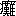

序
大奸は忠に似て大智は愚なるが如しと宜なり。此書は三遊亭圓朝子が演述に係る人情話を筆記せるものとは雖も、其の原を美作国久米郡南条村に有名なる皿山の故事に起して、松蔭大藏が忠に似たる大奸と遠山權六が愚なるが如き大智とを骨子とし、以て因果応報有為転変、恋と無常の世態を縷述し、読む者をして或は喜び或は怒り或は哀み或は楽ましむるの結構は実に当時の状況を耳聞目撃するが如き感ありて、圓朝子が高座に上り、扨て引続きまして今晩お聞きに入れまするは、とお客の御機嫌に供えたる作り物語りとは思われざるなり。蓋し当時某藩に起りたる御家騒動に基き、之を潤飾敷衍せしものにて、其人名等の世に知られざるは、憚る所あって故らに仮設せるに因るならん、読者以て如何とす。
明治二十四年十一月
春濤居士識
［＃改ページ］
一
美作国粂郡に皿山という山があります。美作や粂の皿山皿ほどの
眼で見ても見のこした山、という狂歌がある。その皿山の
根方に皿塚ともいい小皿山ともいう、こんもり高い処がある。その
謂れを尋ねると、昔
南粂郡の
東山村という処に、
東山作左衞門と申す
郷士がありました。
頗る
豪家でありますが、奉公人は余り沢山使いません。此の人の先祖は東山将軍
義政に
事えて、東山という苗字を貰ったという旧家であります。其の家に東山公から拝領の皿が三十枚あります。今九枚残っているのが、
肥後の熊本の本願寺支配の
長峰山随正寺という寺の
宝物になって居ります。これは
彼の諸方で経済学の講釈をしたり、
平天平地とかいう機械をもって天文学を説いて廻りました
佐田介石和尚が確かに見たと
私へ話されました。
何の様な皿かと尋ねましたら、非常に良い皿で、色は紫がゝった処もあり、また赤いような
生臙脂がゝった処があり、それに青貝のようにピカ／＼した処もあると云いますから、
交趾焼のような物かと聞きましたら、いや
左様でもない、珍らしい皿で、成程一枚
毀したら其の人を殺すであろうと思うほどの皿であると云いました。其の
外にある二十枚の皿を白菊と云って、
極薄手の物であると申すことですが、東山時分に
其様な
薄作の唐物はない筈、決して薄作ではあるまいと仰しゃる方もございましょうが、ちょいと触っても毀れるような薄い皿で、欠けたり割れたりして、継いだのが有るということです。此の皿には菊の模様が出ているので白菊と名づけ、あとの十枚は野菊のような色気がある処から野菊と云いました由で、此の皿は東山家伝来の
重宝であるゆえ大事にするためでも有りましょう、先祖が此の皿を一枚毀す者は実子たりとも指一本を切るという遺言状をこの皿に添えて置きましたと申すことで、ちと馬鹿々々しい訳ですが、昔は其様なことが随分沢山有りましたそうでございます。其の皿は実に結構な品でありますゆえ、
誰も見たがりますから、作左衞門は自慢で、
件の皿を出しますのは、
何ういうものか
家例で九月の節句に十八人の客を
招待して、これを出します。
尤も豪家ですから
善い道具も沢山所持して居ります。殊に茶器には余程の名器を持って居りますから自慢で人に見せます。又御領主の重役方などを呼びましては
度々饗応を致します。左様な
理由ゆえ道具係という奉公人がありますが、此の奉公人が
頓と居附きません。
何故というと、毀せば指一本を切ると云うのですから、皆道具係というと怖れて御免を
蒙ります。そこで道具係の奉公人には給金を過分に出します。其の頃三年で拾両と云っては大した給金でありますが、それでも道具係の奉公人になる者がありません。中には苦しまぎれに、なんの小指一本ぐらい切られても構わんなどゝ、度胸で奉公にまいる者がありますが、薄作だからつい
過まっては毀して指を切られ、だん／＼此の話を聞伝えて奉公に参る者がなくなりました。陶器と申す物も
唐土には古来から有った物ですが、日本では
行基菩薩が始まりだとか申します。この行基菩薩という方は
大和国菅原寺の
住僧でありましたが、陶器の製法を発明致されたとの事であります。其の
後元祖
藤四郎という人がヘーシを発明致したは
貞応の二年、開山
道元に従い、唐土へ渡って覚えて来て焼き始めたのでございましょうが、これが
古瀬戸と申すもので、
安貞元年に帰朝致し、人にも其の
焼法を教えたという。
是れは
今明治二十四年から六百六十三年
前のことで、又
祥瑞五郎太夫頃になりまして、追々と薄作の美くしい物も出来ましたが、其の昔足利の時代にも
極綺麗な毀れ易い薄いものが出来ていた事があります。丁度
明和の元年に
粂野美作守高義公国替で、美作の国
勝山の御城主になられました。その領内南粂郡東山村の
隣村に
藤原村と云うがありまして、此の村に
母子暮しの貧民がありました。母は誠に病身で、
千代という十九の娘がございます、至って親孝行で、器量といい品格といい、物の云いよう
裾捌きなり何うも貧乏人の娘には珍らしい別嬪で、
他から嫁に貰いたいと云い込んでも、一人娘ゆえ上げられないと云う。尤も其の筈で、出が宜しい。これは
津山の御城主、其の頃
松平越後守様の御家来
遠山龜右衞門の御内室の娘で、以前は可なりな高を取りました人ゆえ、自然と品格が
異って居ります。浪人して二年目に父を失い永らくの間浪々中、慣れもしない農作や人の使いをして
僅かの
小畠をもって其の日をやっと送って
居る内に、母が病気附きまして、娘は母に良い薬を飲ませたいと、昼は人に雇われ、夜は内職などをして
種々介抱に力を尽しましたが、母は次第に病が
重りました。こゝに以前此の家に奉公を致していました
丹治と申す
老爺がありまして、時々見舞に参ります。
丹「えゝお嬢様、何うでがす
今日は……」
千「おや
爺やか、まアお上りな、爺や
此間は誠に何よりの品を有難うよ」
丹「なに碌なものでもございませんが、少しも早く
母さまの御病気が御全快になれば
宜いと心配していますが、何うも御様子が宜くねえだね」
千「何うかして少しお気をお晴しなさると
宜いが、私はもういけない、所詮死ぬからなんて御自分の気から
漸々御病気を重くなさるのだから困るよ、今朝はお医者様を有難う、早速来て下すったよ」
丹「参りましたかえ、あのお医者さまはえらい人でごぜえまして、何でもはア此の近辺の者で
彼の人に掛って
癒らねえのはねえと云う、
宅も小さくって良いお
出入場も
無えようだが、城下から頼まれて、立派なお医者さまが見放した病人を癒した事が
幾許もありやすので、諸方へ頼まれて
往きますが、年い
老って居るから
診ようが丁寧だてえます、
脉を診るのに両方の手を
押めえて考えるのが
小一時もかゝって、余り永いもんだで病人が大儀だから、少し寝かしてくんろてえまで、診るそうです」
千「誠に御親切に診て下さいますけれども、爺や彼の先生の仰しゃるには、朝鮮の人参の入ってるお薬を飲ませないとお
母さまはいけないと仰しゃったよ」
二
其の時に丹治は首を前へ出しまして、
丹「へえー何を飲ませます」
千「人参の入ってるお薬を」
丹「
何のくらい飲ませるんで」
千「一箱も飲ませれば
宜いと仰しゃったの」
丹「それなら何も心配は入りません、一箱で一両も二両もする訳のものじゃアございやせん、
多寡の知れた
胡蘿蔔ぐらいを」
千「なに胡蘿蔔ではない人参だわね」
丹「人参てえのは何だい」
千「人の形に成って居るような草の根だというが、私は知らないけれども、誠に少ないもので、
本邦へも余り渡らない物だけれども、其のお薬をお
母さまに
服べさせる事もできないんだよ」
丹「何うかして癒らば買って上げたいもんだが、
何の位のものでがす」
千「一箱三拾両だとさ」
丹「そりゃア
高えな、一箱三拾両なんて
魂消た、怖ろしい高え薬を売りたがる奴じゃアねえか」
千「なに売りたがると云う訳ではないが、其のお薬を飲ませればお母さまの御病気が癒ると仰しゃるから、私は其れを買いたいと思うが買えないの」
丹「むゝう三拾両じゃア仕様がねえ、是れが三両ぐらいのことなら大事な御主人の
病には換えられねえから、
宅を売ったって其の薬を買って上げたいとは思いますが、三拾両なんてえらい話だ、そんな出来ねえ相談を
打たれちゃア困ります、御病人の前で
高え声じゃア云えねえが、
殊に寄ったら
其様な事を
機会にして
他へ見せてくんろという事ではないかと思うと、誠に気が痛みやすな」
千「私も実は
左様思っているの、それに
就いて少しお前に相談があるからお母さまへ
共々に願っておくれな、私が其のお薬を買うだけの手当を
拵えますよ」
丹「拵えるたって無いものは仕様があんめえ」
千「そこが工夫だから、兎も角お母さまの処へ一緒に」
と枕元の屏風を開け、
千「もしお
母様、二番が出来ましたから召上れ、少し詰って濃くなりましたから上り
悪うございましょう、お
忌ならば半分召上れ、あとの
滓のあります所は私が戴きますから」
母「此の
娘は詰らんことを云う、達者な者がお薬を
服べて何うする、私は幾ら
浴るほどお薬を飲んでも
効験がないからいけないよ、私はもう死ぬと諦らめましたから、お前
其様に薬を勧めておくれでない」
千「あら、またお母さまはあんな事ばかり云っていらっしゃるんですもの、御病気は時節が来ないと癒りませんから、私は一生懸命に神さまへお
願掛けをして居ますが、あなた世間には七十八十まで生きます者は
幾許も有りますよ」
母「いゝえ私は若い時分に苦労をしたものだからの、それが
矢張り身体に
中っているのだよ」
千「あの爺やが参りましたよ」
母「おゝ丹治、
此方へ入っておくれ」
丹「はい御免なせえまし、何うでござえますな、
些とは胸の
晴る事もござえますかね、お嬢さんも心配しておいでなさいますから、
能くお考えなせえまし、
併しま
旧が旧で、あゝいう
生活をなすった方が、急に
此様な片田舎へ来て、
私のような者を頼みに思って、親一人子一人で僅かな畠を持って仕つけもしねえ内職をしたりして
斯うやって入らっしゃるだから、あゝ詰らねえと昔を思って気を落すところから御病気になったものと考えますが、私だって貧乏だから金ずくではお力になれませんが、以前はあなたの処へ奉公した家来だアから、何うかして御病気の癒るように蔭ながら信心をぶって居りますが、お嬢さまの心配は一通りでないから、我慢してお薬を上んなせえまし」
母「有難う、お前の真実は忘れません、他にも以前
勧めた
［＃「勧めた」は「勤めた」の誤記か］ものは
幾許もあるが、お前のように
末々まで力になってくれる人は少ない、私は死んでも
厭いはないけれども、まだ
十九や
廿歳の千代を
後に残して死ぬのはのう……」
丹「あなた、
然う死ぬ死ぬと云わねえが宜うごぜえます、幾ら死ぬたって死なれません、寿命が尽きねえば死ねるもんではねえから、どうも然う意地の悪い事ばかり考えちゃア困りますなア、死ぬまでも薬を」
千「何だよう、死ぬまでもなんて、そんな挨拶があるものか」
丹「はい御免なせえまし、それじゃア、死なねえまでもお上んなせえ」
千「お前もう心配しておくれでない」
丹「はい」
千「お母さま、あの先刻
桑田さまが仰しゃいました人参のことね」
母「はい聞いたよ」
千「あれをあなた召上れな、人参という物は、なに
其様に飲みにくいものでは有りませんと、少し甘味がありまして」
母「だってお前、私は飲みたくっても、一箱が大金という
其様なお薬が何うして戴かれますものか」
千「その薬をあなた召上るお気なら、
私が才覚して上げますが……」
母「才覚たってお前、
家には売る物も何も有りゃアしないもの」
千「
私をあのう隣村の東山作左衞門という郷士の処へ、道具係の奉公に
遣って下さいましな」
其の時母は皺枯れたる眉にいとゞ皺を寄せまして、
母「お前、飛んでもない事をいう、丹治お前も聞いて知ってるだろうが、作左衞門の
家では道具係の奉公人を探していて、大層給金を呉れる、其の代りに何とかいう
宝物の皿を毀すと指を切ると云う話を聞いたが、本当かの」
丹「えゝ、それは本当でごぜえます、
旧の
公方さまから戴いた物で、
家にも身にも換えられねえと云って大事にしている宝だから、毀した者は指を切れという先祖さまの
遺言状が伝わって居るので、指を切られた奴が四五人あります」
母「おゝ怖いこと、
其様な怖い処へ此の
娘を奉公に
遣られますかね、とても遣られませんよ、何うして
怖ない、皿を毀した者の指を切るという
御遺言だか何だか知らんけれども、其の皿を毀したものゝ指を切るなんぞとは聞いても
慄とするようだ、何うして／＼、人の指を切ると云うような其様な非道の心では、
平常も
矢張り
酷かろう、其様な処へ奉公がさせられますものか、痩せても枯れても遠山龜右衞門の
娘じゃアないか、幾許
零落ても、私は死んでも
生先の長いお前が大切で私は
最う
定命より生延びている身体だから、私の病気が癒ったって、お前が
不具になって何うしましょう、詰らぬ事を云い出しましたよ、苦し紛れに悪い思案、何うでも私は遣りませんよ」
千「
然うではありましょうけれども、なに気を附けたら其様な事は有りますまい、
私も宜く
神信心をして丁寧に取扱えば、毀れるような事はありますまいと存じますからねお母さま、私は一生懸命になりまして奉公を
仕遂せ
［＃「仕遂せ」は底本では「仕逐せ」］、其の
中あなたの御病気が御全快になれば、私が帰って来て、御一緒に内職でもいたせば誠に
好い都合じゃアございませんか、
何卒遣って下さいまし、ねえお母さま、あなた私の身をお
厭いなすって、あなたに
万一の事でも有りますと、
矢張り私が仕様がないじゃア有りませんか」
母「はい、有難うだけれども遣れません、
亡ったお
父さんのお位牌に対して、私の病を癒そうためにお前を其様な恐ろしい処へ奉公に遣って済むものじゃアない、のう丹治」
丹「へえ、あんたの云う事も道理でごぜえます、これは遣れませんな」
千「だけども爺や、お母さんの御病気の癒らないのを見す／＼知って、安閑として居られる訳のものではないから、私は奉公に
往き
仮令粗相で皿を一枚毀した処が、小指一本切られたって命にさわるわけではなし、お母さまの御病気が癒った方が
宜いわけじゃアないか」
丹「うん、これは
然うだ、然う仰しゃると無理じゃアない、棄置けば死ぬと云うものを、あなたが何う考えても
打棄って置かれねえが、成程是れは奉公するも宜うごぜえましょう」
母「お前馬鹿な事ばかり云っている、私が此の
娘を其様な処へ遣られるか遣られないか考えて見なよ、指を切られたら肝心な内職が出来ないじゃアないか、此の困る中で
猶々困ります、遣られませんよ」
丹「成程是れはやれませんな、何う考えても」
千「あらまア、あんな事を云って、
何方へも同じような挨拶をしては困るよ」
丹「へえ、是れは何方とも云えない、困ったねえ…じゃア斯うしましょう、
私がの
媼を
何卒お頼ん申します、私がお嬢さまの代りに奉公に
参りまして、私が其の給金を取りますから、お薬を買って下せえまし」
千「女でなければいけない、男は
暴々しくて
度々毀すから女に限るという事は知れて居るじゃアないか」
丹「
然うだね、男じゃア毀すかも知れねえ、
私等は何うも荒っぽくって、丼鉢を
打毀したり、厚ぼってえ
摺鉢を落して
破った事もあるから、困ったものだアね」
千「お母さん、
何卒やって下さいまし」
と
幾度も繰返しての頼み、段々母を
説附けまして丹治も
道理に思ったから、
丹「そんならばお遣んなすった方が宜かろう」
と云われて、一旦母も拒みましたが、娘は
肯かず、
殊に丹治も
倶々勧めますので、仕方がないと往生をしました。幸い
他に
手蔓が有ったから、縁を求めて
彼の東山作左衞門方へ奉公の約束をいたし、下男の丹治が
受人になりまして、お千代は先方へ三ヶ年三十両の給金で住込む事になりましたのは五月の事で、母は心配でございますが、致し方がないので、泣く／＼別れて、さて奉公に参って見ると、器量は
佳し、
起居動作物の云いよう、一点も非の打ち
処がないから、至極作左衞門の気に入られました。
三
作左衞門はお千代の様子を見まして、是れならば
手篤く道具を取扱ってくれるだろう、誠に落着いてゝ
宜い、大切な物を扱うに真実で粗相がないから宜いと、大層作左衞門は目をかけて使いました。此の作左衞門の
忰は
長助と申して三十一歳になり、一旦女房を貰いましたが、三年
前に少し仔細有って離別いたし、
独身で居ります所が、お千代は何うも器量が
好いので
心底から惚れぬきまして真実にやれこれ優しく
取做して、
長「あれを買ってお
遣んなさい、見苦しいから
彼の着物を取換えて、帯を買ってやったら宜かろう」
などと勧めますと、作左衞門も
一人子の申すことですから、其の通りにして、お千代／＼と親子共に可愛がられお千代は誠に仕合せで丁度七月のことで、暑い盛りに
本山寺という寺に説法が有りまして、
親父が聴きに参りました
後で、奥の離れた八畳の座敷へ
酒肴を取り寄せ、親父の留守を幸い、鬼の居ないうちに洗濯で、長助が、
長「千代や／＼、千代」
と呼びますから、
千「はい若殿様、お呼び遊ばしましたか」
長「
一寸来い、／＼、今
一盃やろうと云うんだ、お
父さんのお帰りのない
中に、今日はちとお帰りが遅くなるだろう、事に寄ると年寄の
喜八郎の処へ廻ると仰しゃったが村の年寄の処へ寄れば話が長くなって、お帰りも遅くなろう、ま酌をして呉れ」
千「はい、お酌を致します」
長「
手襷を
脱んなさい、忙がしかろうが、何もお前は
台所を働かんでも、一切道具ばかり取扱って
居れば
宜いんだ」
千「あの大殿様がお留守でございますから宜いお道具は出しませんで、粗末と申しては済みませんが、皆此の様な物で宜しゅうございますか」
長「酌は
美女、
食物は器で、
宜い器でないと肴が旨く喰えんが、酌はお前のような美しい顔を見ながら飲むと酒が旨いなア」
千「御冗談ばかり御意遊ばします」
長「酔わんと極りが悪いから酔うよ」
千「お酔い遊ばせ、ですが余り召上ると毒でございますよ」
長「まだ飲みもせん内から毒などと云っちゃア困るが、実にお前は堅いねえ」
千「はい、武骨者でいけません」
長「いや、お父さんがお前を感心しているよ、親孝行で、何を見ても聞いても母の事ばかり云って居るって、
併しお前のお
母の病気も追々全快になると云う事で
宜いの」
千「はい、
御当家さまのお蔭で人参を飲みましたせいか、段々宜しくなりまして、此の程
病褥を離れましたと丹治がまいっての話でございますが、母が申しますに、
其方のような
行届きません者を置いて下さるのみならず、お目を掛けて下さいまして、誠に有難いことで、
種々戴き物をしたから宜しく申上げてくれと申しました」
長「感心だな、お前は出が
宜いと云うが………千代／＼千代」
千「はい」
長「どうも
何だね、お前は十九かえ」
千「はい」
長「ま一盃
酌いで呉んな」
千「お
酌を致しましょう」
長「半分残してはいかんな、何うだ一盃飲まんか」
千「いえ、
私は
些とも飲めません、少し我慢して戴きますと、顔が青くなって身体が震えます」
長「その震える処がちょいと宜しいて、
私は酔いますよ、お前は色が白いばかりでなく、頬の
辺眼の
縁がぼうと紅いのう」
千「はい、少し
逆上せて居りますから」
長「いや
逆上ではない、
平常から其の紅い処が何とも言われん」
千「御冗談ばっかり……」
長「冗談じゃアない、全くだ、
私は三年
前に家内を離別したて、どうも心掛けの善くない女で、面倒だから離縁をして見ると、
独身で何かと不自由でならんが、お前は誠に気立が宜しいのう」
千「いゝえ、誠に届きませんでいけません」
長「此の間
私が……あの…お前笑っちゃア困るが、少しばかり私が斯う
五行ほどの手紙を、……
認めて、そっとお前の
袂へ入れて置いたのを
披いて読んでくれたかね」
千「左様でございましたか、一向存じませんで」
長助は少し失望の
体で、
長「左様でございますかなどゝ、落着き払っていては困る、親に知れては成らん、知っての通り親父は
極堅いので、あの手紙を書くにも隠れて
漸う
二行ぐらい書くと、親父に呼ばれるから、筆を下に置いて又
一行書き、
終いの一行は庭の
植込みの中で書きましたが、蚊に喰われて弱ったね」
四
千「それはまアお気の毒さま」
長「なに全くだよ、親父に知れちゃア大変だから、
窃とお前の袂へ入れたが、見たろう／＼」
千「いゝえ
私は気が附きませんでございました、何だか私の袂に
反古のようなものが入って居ましたが、私は何だか分りませんで、丸めて
何処かへ棄てましたよ」
長「棄てちゃア困りますね、
他人が見るといけませんな」
千「そんな事とは存じませんもの、
貴方はお手紙で御用を
仰付けられましたのでございますか」
長「仰付けられるなんて馬鹿に堅いね、だがね、千代／＼」
千「何でございます」
長「実はね
私はお前に話をして、嫁に貰いたいと思うが何うだろう」
千「御冗談ばっかり御意遊ばします、
私の母は他に子と申すがありませんから、
他家へ嫁にまいる身の上ではございません、貴方は
衆人に殿様と云われる立派なお身の上でお
在遊ばすのに、私のようなはしたない者を貴方
此様な不釣合で、釣合わぬは不縁の元ではございませんか、お
家のお為めに成りません」
長「なに家の為めになってもならんでも不釣合だって、
私は妻を定むるのに身分の隔てはない事で、唯お前の心掛けを
看抜いて、此の人ならばと斯う思ったから、実はお前に心のたけを山々書いて贈ったのである、
然も私は丹誠して千代尽しの文で書いて贈ったんだよ」
千「何でございますか
私は存じませんもの」
長「存じませんて、
私の丹誠したのを見て呉れなくっちゃア困りますなア、どうかお前の母に会って、母諸共引取っても宜しいや」
千「
私の母は冥加至極有難いと申しましょうけれども、貴方のお
父様が御得心の有る
気遣いはありますまい、私のようなはしたない者を
御当家さまの嫁に遊ばす気遣いはございませんもの」
長「いえ、お前が全く
然う云う心ならば、
私は親父に話をするよ、お前は大変親父の気に入ってるよ、どうも
沈着があって、器量と云い、物の云いよう、何や
角や
彼れは別だと云って居るよ」
千「なに、
其様な事を仰しゃるものですか」
長「なに全く然う云ってるよ、
宜いじゃアないか、ね千代／＼千代」
と雀が出たようで、無理無態にお千代の手を
我膝へグッと引寄せ、脇の下へ手を掛けようとすると、振払い。
千「何をなさいます、其様な事を遊ばしますと、
私は
最うお酌にまいりませんよ」
長「酔った紛れに、少しは酒の席では冗談を云いながら飲まんと面白うないから、
一寸やったんだが、どうもお前は堅いね、千代／＼」
千「はい最うお酌を致しますまいと思います、最うお止し遊ばせ、お毒でございますよ」
長「千代／＼」
千「また始まりました」
長「親さえ得心ならば何も仔細はあるまい、何うだ」
千「そうではありますが、まア若殿様、
私の思いますには、夫婦の縁と云うものは
仮令親が得心でも、当人同志が得心でない事は夫婦に成れまいかと思います」
長「それは然うさ、だがお前さえ得心なら
宜いが、いやなら
否と云えば、
私も諦めが附こうじゃアないか」
千「
私のような者を、私の口から何う斯うとは申されませんものを、余り恐入りまして」
其の時お千代は身を
背けまして、
千「何とも申上げられませんものを、余り恐入りまして」
長「恐入らんでも宜しいさ、お
母さえ得心なら、母諸共
此方へ引取って宜しい、もし窮屈で
否ならば、
聊か
田地でも買い、
新家を建って、お母に
下婢の一人も附けるくらいの手当をして遣ろうじゃアないか。此の
家は皆
私のもので、相続人の私だから何うにもなるから、お前さえ
応と云えば、お母に話をして安楽にして遣ろうじゃアないか、
若しお母は堅いから遠山の苗字を継ぐ者がないとでもいうなら、夫婦養子をしたって相続人は出来るから、お前が
此方へ来ても仔細ないじゃアないか」
千「それは誠に結構な事で」
長「結構なれば
然うしてくれ」
千「お嬉しゅうは存じますが」
長「さ、早くお父さまの帰らん内に
応と云いな、酔った紛れにいう訳じゃアない、真実の事だよ」
千「
私は貴方に対して申上げられませんものを、御主人さまへ勿体なくって……」
長「何も勿体ない事は有りませんから早く云いなさいよ」
千「恐入ります」
長「
其様なに
羞かしがらんでも宜しいよ」
千「貴方
私のような卑しい者の側へお寄り遊ばしちゃアいけません、私が困ります、そうして酒臭くって」
長「ね千代／＼千代」
千「それじゃア貴方、本当に
私が思う心の
丈を云いましょうか」
長「聞きましょう」
千「それじゃア申しますが、
屹度、…身分も顧りみず大それた奴だと御立腹では困ります」
長「腹などは立たんからお云いよ、大それたとは思いません、
小それた
位に思います、云って下さい」
千「本当に貴方御立腹はございませんか」
長「立腹は致しません」
千「それなれば本当に申上げますが、
私は貴方が
忌なので……」
長「なに忌だ」
千「はい、
私はどうも貴方が忌でございます、御主人さまを忌だなどと云っては済みませんけれども、真底私は貴方が忌でございます、只御主人さまでいらっしゃれば有難い若殿さまと思って居りますが、
艶書をお贈り遊ばしたり、此の間から私にちょい／＼御冗談を仰しゃることもあって、それから何うも私は貴方が忌になりました、どうも女房に成ろうという者の方で
否では
迚も添われるものじゃアございませんから、
素より無い御縁とお諦め遊ばして、
他から立派なお嫁をお迎えなすった方が宜しゅうございましょう、相当の御縁組でないと御相続の為になりませんから、
確とお断り申しますよ」
長「誠にどうも……至極
道理……」
と少しの間は額へ筋が出て、
顔色が変って、唇をブル／＼震わしながら、暫く長助が考えまして、
長「千代、至極
道理だ、最う千代／＼と続けては呼ばんよ、
一言だよ、成程何うもえらい、賢女だ、成程どうも親孝心、誠に正しいものだ、心掛けと云い器量と云い、余り気に入ったから、つい迷いを起して
此様な事を云い掛けて、誠に
羞入った、再び合す顔はないけれども、真に思ったから云ったんだよ、
併しお前に
然う云われたから諦めますよ
確と断念しましたが、おまえ此のことを世間へ云ってくれちゃア困りますよ、
私は親父に
何様な目に遇うか知れない、堅い気象の人だから」
千「
私は世間へ申す
処じゃア有りませんが、あなたの方で」
長
［＃「長」は底本では「千」］「
私は決して云わんよ、云やア自ら
恥辱を流布するんだから云いませんが、あゝ……誠に
愧入った、此の通り汗が出ます、面目次第もない、
何卒堪忍して下さい」
千
［＃「千」は底本では「長」］「恐入ります、是れから
前々通り
主家来、矢張千代／＼と重ねてお呼び遊ばしまして、お目をお掛け遊ばしまして……」
長「そう云う事を云うだけに
私は誠に困りますなア」
千「誠に恐入ります、大旦那さまのお帰り遊ばしません内に、お酒の道具を隠しましょうか」
長「あゝ仕舞っておくれ／＼」
千「はい」
とそれ／″＼道具を片附けましたが、是れから長助が
憤ってお千代につれなく当るかと思いました処、
情なくも当りませんで、尚更宜く致しまして、
彼の衣類は汚い、九月の節句も近いから、これを拵えて遣るが
宜いと、手当が宜いので、お千代もあゝーお諦めになったか、有難い事だ、あんな事さえないと結構な旦那様であると一生懸命に奉公を致しますから、作左衞門の気にも入られて居りました。月日流るゝが如くで、いよ／＼九月の節句と成りました。粂野美作守の重役を七里先から呼ばんければなりません、九の字の付く客を二九十八人
招待を致し、
重陽を祝する吉例で、作左衞門は
彼の野菊白菊の皿を自慢で出して
観せます。美作守の御勘定奉行
九津見吉左衞門を初め
九里平馬、
戸村九右衞門、
秋元九兵衞其の
他御城下に加賀から九谷焼を開店した
九谷正助、
菊橋九郎左衞門、年寄役村方で九の字の附いた人を合せて十八人集めまして、結構な御馳走を致し、善い道具ばかり出して、
頻りに自慢を致します事で、実に名器ばかりゆえ、客は頻りに誉めます。此の日道具係の千代は一生懸命に、
何卒無事に役を
仕遂せますようにと神仏に
祈誓を致して、皿の毀れんように気を附けましたから、
麁相もなく、
彼の皿だけは
下ってまいります。自分は蔵前の六畳の座敷に居って、
其処に膳棚道具棚がありますから、
口分をして一生懸命に油汗を流して、心を用い働いて、無事に其の日のお客も済んで、翌日になりますと、作左衞門が、
作「千代」
千「はい」
作「
昨日は大きに御苦労であった、無事にお客も済んだから、今日は道具を
検めなければならん」
千「はい、お番附のございますだけは大概片付けました」
作「うむ、皿は一応検めて仕舞わにゃならん、何かと御苦労で、
嘸骨が折れたろう」
千「
私は一生懸命でございました」
作「
然うであったろう、此の通り三重の箱になってるが、是は中々得難い物だよ、
何処へ往ったって見られん、女で何も分るまいが、見て置くが
宜い」
千「はい、誠に結構なお道具を拝見して有難い事で」
作「一応検めて見よう」
と眼鏡をかけて段々改めて、
作「あゝー
先ず無事で安心を致した、是れは八年
前に是れだけ毀したのを
金粉繕いにして斯うやってある、
併し
残余は
瑕物にしてはならんから、どうかちゃんと
存して置きたい、是れだけ
破った奴があって、不憫にはあったが、何うも許し難いから
私は中指を切ろうと思ったが、それも不憫だから
皆な
無名指を切った」
千「怖い事でございます、
私は此のお道具を扱いますとはら／＼致します」
作「是れは無い皿だよ、野菊と云って野菊の色のように紫がゝってる処で此の名が有るのじゃ、
種々先祖からの書附もあるが、先ず無事で
私も安心した」
と正直な堅い人ゆえ、検めて道具棚へ載せて置きました。すると長助が座敷の掛物を片附けて、道具棚の方へ廻って
参いりました。
長「お
父さま」
作「残らず仕舞ったか」
長「お軸物は皆仕舞いました」
作「客は皆道具を誉めたろう」
長「大層誉めました、此の位の
名幅を所持している者は、此の国にゃア領主にも有るまいとの評判で、お客振りも
甚く宜しゅうございました」
作「皆良い道具が見たいから来るんだ、只呼んだって来るものか、
権式振ってゝ、併し土産も至極宜かったな」
長「はい、お
父様、あの皿を今一応お検めを願います、野菊と白菊と
両様共お検めを願います」
作「
彼は
先刻検めました」
長「お検めでございましょうが、少し
訝しい事が有りますと云うは棚の脇に
蒟蒻糊が板の上に溶いて有って、粘っていますから、何だか案じられます、他の品でありませんから、今一応検めましょうかね、
秋、お前たちは
其方へ
往きなさい、
金造、裏手の方を宜く掃除して置け、
喜八、
此方へ参らんようにして、最う大概蔵へ仕舞ったか、千代や」
千「はい／＼はい」
長「
先刻お
父さんがお検めになったそうだが、
彼の皿を
此処へ持って来い」
千「はい、
先刻お検めになりました」
長「検めたが、
一寸気になるから今一応
私が検めると云うは、祝いは千年だが、お父さまのない
後は家の
重宝で、此の品は私が守護する大事な
宝物だから、私も一応検めます」
千「大旦那さまがお検めになりまして、宜しい、少しも仔細ないと御意遊ばしましたのに、貴方何う云う事でお検めになります」
長「先程お父さまがお検めになっても、
私は私で検めなければ気が済まん」
千「何う云う事で」
長「何う云う事なんてとぼけるな、千代
汝は皿を割ったの」
五
お千代は呆れて急に言葉も出ませんでしたが、
千「何うもまア思い掛けない事を仰しゃいます
私は割りました覚えはございません、ちゃんと一々お検めになりまして、
後は柔かい布巾で拭きまして、一々
彼の通り包みまして、大殿様へ御覧に入れました」
長「いや
耄けるなそんなら
如何の
理由で棚に
糊付板が有るのだ」
千「あれはお箱の蓋の棧が
剥れましたから、
米搗の
權六殿へ頼みまして、
急拵えに
竹篦を削って打ってくれましたの」
長「耄けるな、
其様なことを云ったって役には立たん、
巧く
瞞かそうたって、
然うはいかんぞ、
此方は
確と存じておる、これ千代、其の方が怪しいと認めが附いて
居ればこそ検めなければならんのだ早く箱を持って来い／＼」
と云われてお千代はハッとばかりに驚きましたが、何ゆえ長助が
斯様なことを云うのか分りませんでしたが、
彼の通り検めたのを毀したと云うのは変だなと考えて、よう／＼思い当りましたのは、
先達て
愛想尽しを云った恨みが、今になって出て来たのではないか、何事も無ければ
宜いがと
怖々にお千代が野菊白菊の入った箱を長助の眼の前へ差出しますと、作左衞門が最前検めて置いた皿の毀れる気遣いはない、忰は何を云うのかと存じて居りますと、長助は
顔色を変えて、
長「これ千代、それ道具棚にある糊付板を
此処へ持って来い……さ何う云う訳で
此板を道具棚へ置いた」
千「はい、只今申上げます通り、あのお道具の箱の棧が
剥れましたから、打附けて貰おうと存じますと、米搗の權六が
己が附けて遣ろうと申して附けてくれましたので」
長「いゝや言訳をしたって役には立たん、其の箱の紐をサッサと解け」
千「そうお急ぎなさいますと、また粗相をして毀すといけませんもの」
長「
汝が毀して置きながら、又
其様なこと申す其の手はくわぬぞ、
私が箱から出す、さ
此処へ出せ」
千「あなた、お静かになすって下さいまし、
暴々しく遊ばして毀れますと
矢張り
私の
所為になります」
作「これこれ長助、手暴くせんが
宜い、腹立紛れに
汝が毀すといかんから、
矢張り千代お前検めるが
宜い」
千「はい／＼」
と是れから野菊の箱の紐を解いて蓋を取り、一枚／＼皿を出しまして長助の眼の前へ
列べまして。
千「御覧遊ばせ、
私が
先刻検めました通り
瑾は有りゃアしません」
長「黙れ、毀した事は
先刻私が
能く見て置いたぞ、お父さま、
迂濶りしてはいけません、
此者は中々油断がなりません、さ、早く致せ」
千「
其様なに仰しゃったって、慌てゝ不調法が有るといけません、他のお道具と違いまして、
此品が一枚毀れますと
私は
不具になりますから」
長「不具になったって、
受人を入れて奉公に来たんじゃアないか、さ早く致せ」
千「早くは出来ません」
と申して検めに掛りましたが、急がれる程
尚おおじ／＼致しますが、一生懸命に心の内に
神仏を念じて粗相のないようにと元のように皿を箱に入れてしまい、是れから白菊の方の紐を解いて、
漸々三重箱迄開け、
布帛を開いて皿を一枚ずつ取出し、検めては布帛に包み、ちゃんと脇へ丁寧に置き、
千「是で八枚で、九枚で十枚十一枚十二枚十三枚十四枚十五枚十六枚」
と漸々勘定をして十九枚と来ると、二十枚目がポカリと毀れて居たから
恟り致しました。
千「おや……お皿が毀れて居ります」
長「それ見ろ、お
父様御覧遊ばせ、此の通り
未だ粘りが有ります此の糊で
附着けて
瞞かそうとは太い奴では有りませんか」
千「いえ、先程大殿様がお検めになりました時には、決して毀れては居りません」
長「何う仕たって此の通り毀れて居るじゃアないか」
千「
先刻は何とも無くって、今毀れて居るのは何う云う訳でしょう」
作「成程斯う云う事があるから油断は出来ない、これ千代
毀りようも有ろうのに、ちょっと欠いたとか、
罅が入った位ならば、是れ迄の精勤の
廉を
以て
免すまいものでもないが、斯う大きく毀れては何うも免し難い、これ、何は居らんか、何や、何やでは分らん、おゝそれ／＼
辨藏、手前はな、千代の受人の丹治という者の処へ
直に行ってくれ、余り世間へぱっと知れん内に行ってくれ、千代が皿を毀したから証文通りに行うから、念のために届けると云って、早く行って来い」
辨「へえ」
と辨藏は飛んで行って、此のことを気の毒そうに話をすると、丹治は驚きまして、母の処へ駈込んでまいり。
丹「
御新造さまア……」
母「おや丹治か、
先刻は誠に御苦労、お蔭で
余程宜いよ」
丹「はっ／＼、誠にはや何ともどうも飛んだ訳になりました」
母「ドヽ何うしたの」
丹「へえ、お嬢様が皿ア割ったそうで」
母「え……丹治皿を
彼が……」
丹「へえ、只今
彼家の奉公人が参りまして、お千代どんが皿ア割っただ、
汝受人だアから
何ぼ証文通りでも断りなしにゃア扱えねえから、ちょっくら届けるから、立合うが
宜いと云って来ました、
私が考えますに、
先方はあゝ云う奴だから、詫びたっても
肯くまいと思って、私が急いでお知らせ申しに来やしたが、お嬢さまが
彼家へ住込む時、虫が知らせましたよ、門の所まで私送り出して来たアから、
貴方皿ア割っちゃアいけないよと云ったら、お嬢様が
余程薄いもんだそうだし、
原土で拵えたもんだから割れないとは云えないから、それを云ってくれちゃア困るよと仰しゃいましたが、何とまア
情ねえ事になりましたな、どうか詫をして見ようかと思います」
母「それだから私が云わない事じゃアない、
彼の
娘を
不具者にしちゃア済まないから、私も一緒に連れてっておくれ」
丹「連れて行けたって、あんた歩けますまい」
母「歩けない事もあるまい、一生懸命になって行きますよ、
何卒お願いだから私の手を曳いて連れてっておくれ」
丹「だがはア、是れから一里もある処で、なか／＼
病揚句で歩けるもんじゃアねえ」
母「私は余り
恟りしたんで腰が
脱けましたよ」
丹「これはまア仕様がねえ、
私まで腰が脱けそうだが、あんた腰が脱けちゃア駄目だ」
母「
何卒お願いだから……一通り
彼の
心術を話し、孝行のために
御当家さまへ奉公に来たと、次第を話して、何処までも私がお詫をして指を切られるのを
遁れるようにしますから、丹治誠にお気の毒だが、
負っておくれな」
丹「負ってくれたって、ちょっくら四五丁の処なれば負って行っても
宜いが……よし／＼
宜うごぜえます、
私も一生懸命だ」
と其の頃の事で
人力車はなし、また
駕籠に乗るような身の上でもないから、丹治が負ってせっせと参りました。
此方は最前から待ちに待って居ります。
作「早速庭へ通せ」
という。百姓などが殿様御前などと敬い奉りますから、益々増長して縁近き所へ座布団を敷き、其の上に座して、刀掛に大小をかけ、
凛々しい様子で居ります。両人は庭へ引出され。
丹「へえ御免なせえまし、
私は千代の受人丹治で、母も詫びことにまいりました」
作「うむ、其の方は千代の受人丹治と申すか」
丹「へえ、
私は年来勤めました家来で、
店請致して
居る者でごぜえます」
作「うん、
其処へ参ったのは」
母「母でございます」
と涙を拭きながら、
「娘が飛んだ不調法を致しまして御立腹の段は重々
御尤さまでござりますが、
何卒老体の
私へお免じ下さいまして、御勘弁を願いとう存じます」
作「いや、それはいかん、これはその先祖伝来の物で、
添書も有って先祖の遺言が此の皿に附いて
居るから、何うも致し方がない、切りたくはないけれども御遺言には
換えられんから、止むを得ず指を切る、指を切ったって命に
障る訳もない、中程から切るのだから、何も不自由の事もなかろう」
母「はい、でございますけれども、此の千代は親のために御当家様へ御奉公にまいりましたので、と申すは、
私が
長煩いで、人参の入った薬を飲めば癒ると医者に申されましたが、長々の浪人ゆえ貧に迫って、中々人参などを買う手当はございませんのを、
娘が案じまして、御当家のお道具係を勤めさえすれば三年で三拾両下さるとは莫大の事ゆえ、それを戴いて
私を助けたいと申すのを、
私も止めましたけれども、
此娘が
強ってと申して御当家さまへ参りましたが、親一人子一人、他に頼りのないものでございます、今
此娘を不具に致しましては、
明日から内職を致すことが出来ませんから、
何卒御勘弁遊ばして、
私は
此娘より他に力と思うものがございませんから」
長「黙れ／＼、幾回左様な事を云ったって役に立たん、其のために
前々奉公住みの折に証文を取り、三年に三拾金という給金を与えてある、
斯の如く大金を出すのも当家の道具が大切だからだ、それを承知で証文へ判を押して奉公に来たのじゃアないか、それに粗相でゞもある事か、先祖より遺言状の添えてある大切の宝を
打砕き、糊付にして毀さん振をして、箱の中に入れて置く
心底が何うも憎いから、指を切るのが
否なれば
頬辺を切って
遣る」
母「
何卒御勘弁を……」
と泣声にて、
「顔へ
疵が附きましては婿取前の一人娘で、何う致す事も出来ません」
長「指を切っては内職が出来んと云うから
面を切ろうと云うんだ、疵が出来たって、
後で膏薬を貼れば癒る、指より顔の方を切ってやろう」
と長助が
小刀をすらりと引抜いた時に、驚いて丹治が前へ
膝行り出まして、
丹「
何卒お待ちなすって下せえまし」
長「何だ、
退け／＼」
丹「お前さまは飛んだお方だアよ」
長「何が飛んだ人だ」
丹「成程証文は致しやしただけれども、人の
頬辺を切るてえなア
無え事です」
長「手前は何のために受人に成って、
印形を
捺いた」
丹「印形だって、是程に
厳しかアねえと思ったから、印形を捺きやした、ほんの
掟で、
一寸小指へ疵を附けるぐれえだアと思いやしたが、指を
打切られると此の
後内職が出来ません、と云って無闇に頬辺なんて、どう云うはずみで鼻でも落したらそれこそ大変だ、情ねえ事で、嬢さんの代りに
私を切っておくんなせえ」
長「いや手前を切る約束の証文ではない、
白痴た事を云うな、何のための受人だ」
丹「受人だから
私が切られようというのだ」
長「黙れ、証文の表に本人に代って指を切られようと云う文面はないぞ、さ顔を切って遣る」
と丹治と母を突きのけ、既に庭下駄を
穿いて
下りにかゝるを、母は是れを
遮り止めようと致すを、千代が、
千「お
母様、是れには
種々理由がありますんで、
私が少し云い過ぎた事が有りまして、
斯う云う事に成りまして済みませんが、お諦め遊ばして下さいまし、さア指の方は内職に障って母を養う事が出来ませんから顔の方を……」
長「うん、
顔の方か、
此方の
所望だ」
作「これ／＼長助、顔を切るのは止せ」
長「なに宜しい」
作「それはいかん、それじゃア御先祖の御遺言状に
背く、矢張指を切れ／＼、
不憫にも思うが是れも致し方がない、従来
切来ったものを今更仕方がない、併し長助、
成丈指を短かく切ってやれ」
長「さ切ってやるから、
己の
傍へ来て手を出せ」
千「はい何うぞ……」
母「いえ／＼
私を切って下さいまし、私は死んでも
宜い年でござります」
丹「旦那ア、
私の指を五本切って負けておくんなせえ」
長「控えろ」
と今千代の腕を取って既に指を切りにかゝる所へ出て来た男は、土間で米を
搗いていました權六という、身の
丈五尺五六寸もあって、鼻の大きい、胸から
脛へかけて
熊毛を
生し、眼の大きな眉毛の濃い、
髯の生えている大の男で、つか／＼／＼と出て来ました。
六
此の時權六は、作左衞門の前へ進み出まして、
權「はい少々御免下さいまし、權六申上げます」
長「なんだ權六」
權「へえ、実は此の皿を割りました者は
私だね」
長「なに手前が割った……左様な
白痴たことを云わんで控えて居れ」
權「いや控えては
居られやせん、よく考えて見れば見る程、あゝ悪い事をしたと
私ゃア思いやした」
長「何を
然う思った」
權「大殿様皿を割ったのは此の權六でがす」
作「え……其の方は何うして割った」
權「へえ誠に不調法で」
作「不調法だって、其の方は台所にばかり居て、夜は其の方の部屋へまいって寝るのみで、蔵前の道具係の所などへ参る身の上でない其の方が何うして割った」
權「
先刻箱の棧が
剥れたから、どうか
繕ってくんろてえから、糊をもって
私が繕ろうと思って、皿の傍へ
参ったのが事の始まりでごぜえます」
千「權六さん、お前さんが割ったなどと……」
權「えーい黙っていろ」
丹「誠に有難うごぜえます、
私は此の千代さんの
家の年来の家来筋で、丹治と云う者で、成程是れは此の人が割ったかも知れねえ、割りそうな顔付だ」
權「黙って居なせえ、お
前らの知った事じゃアない、えゝ殿様、誠に
羞かしい事だが、此の千代が
御当家へ奉公に
参った其の時から、
私は千代に惚れたの惚れねえのと云うのじゃアねえ、寝ても覚めても眼の
前へちらつきやして、片時も忘れる暇もねえ、併し奥を働く女で、台所へは滅多に出て来る事はありやせんが、時々台所へ出て来る時に千代の顔を見て、あゝ何うかしてと思い、
幾度か
文を贈っちゃア
口説いただアね」
長「黙れ、其の方がどうも其の姿や
顔色にも
愧じず、千代に惚れたなどと
怪しからん奴だなア、
乃で手前が割ったというも本当には出来んわ、馬鹿々々しい」
權「それは
貴方、色恋の道は顔や姿のものじゃアねえ、年が違うのも、自分の
醜い器量も忘れてしまって、お千代へばかり念をかけて、
眠ることも出来ず、毎晩夢にまで見るような訳で、是程
私が方で思って文を附けても、丸めて棄てられちゃア
口惜しかろうじゃアござえやんせんか」
長「なんだ……お
父さまの前を
愧じもせんで
怪しからん事をいう奴だ」
と口には云えど、是れは長助がお千代を口説いても
弾かれ、文を贈っても返事を
遣さんで
恥かしめられたのが口惜しいから、自分が皿を毀したんであります。罪なきお千代に罪を負わせ、
然うして他へ嫁に
往く邪魔に成るようにお千代の顔へ疵を附けようとする
悪策を權六が其の通りの事を申しましたから、長助は変に思いまして、
長「手前は全く千代に惚れたか」
權「え、惚れましたが、云う事を
肯かねえから可愛さ余って憎さが百倍、嫁に行く邪魔をして呉れようと、九月のお節句にはお道具が出るから、其の時皿を
打毀して指を切り
不具にして生涯亭主の持てねえようにして
遣ろうと、
貴方の前だが考えを起しまして、
皿検めの時に箱の棧が
剥れたてえから、糊でもって
貼けてやる振をして、下の皿を
一枚毀して置いたから、
先ず恋の意趣晴しをして嬉しいと思い、実は土間で腕を組んで悦んでいると、此の
母さまが飛んで来て、
私が病苦を助けてえと
危え奉公と知りながら参って、人参とかを飲まそうと親のために指を切られるのも覚悟で奉公に来たアから、代りに
私を殺して下せえ、切って下せえと子を思うお
母の心も、親を助けてえというお千代の孝行も、聴けば聴く程、あゝー実に
私ア汚ねえ根性であった、何故
此様な意地の悪い心になったかと考えたアだね、私が是れを考えなければ
狗畜生も同様でごぜえますよ、私ア人間だアから考えました、はアー
悪い事をしたと思いやしたから、正直に
打明けて旦那さまに話いして、私が千代に代って切られた方が
宜いと覚悟をして
此処え出やした、さアお切んなせえ、首でも何でもお切んなせえまし」
長「妙な奴だなア、
手前それは全くか」
權「へえ、
私が毀しやした」
作「成程長助、
此者が毀したかも知れん、
懺悔をして自分から切られようという以上は、
然うせんければ宜しくない、
併し久しく奉公して
居るから、
平生の気象も宜く知れて
居るが、口もきかず、誠に面白い奴だと思っていた、
殊に
私に向って時々
異見がましい口答えをする事もあり、正直者だと思って目を掛けていたが、他人の
三層倍も働き、力も五人力とか、身体相応の
大力を持っていて役にも立つと思っていたに、顔形には
愧じず千代に恋慕を仕掛るとは何の事だ、うん權六」
權「はい誠に面目次第もない訳で、
何卒私を………」
千「權六さん／＼、お前私へ恋慕を仕掛けた事もないのに、私を助けようと思って
然う云ってお呉れのは嬉しいけれども、それじゃア私が済みません」
權「えゝい、
其様なことを云ったって、
今日誠実を照す世界に神さまが有るだから、まア
私が言うことを聞け」
長「いや、お父さまは何と仰しゃるか知らんが、どうも此の長助には
未だ腑に落ちない事がある權六
手前が毀したと云う何ぞ
確な証拠が有るか」
權「えゝ、証拠が有りやすから、其の証拠を御覧に入れやしょう」
長「ふむ、見よう」
權「へえ只今……」
と云いながら、立って土間より
五斗張の臼を持ってまいり、庭の飛石の上にずしーりと両手で軽々と
下したは、恐ろしい力の男であります。
權「これが証拠でごぜえます」
と白菊の皿の入った箱を臼の中へ入れました。
長「何を致す／＼」
權「なに
造作ア有りません」
と
何時の
間に持って来たか、
杵の大きいのを出して振上げ、さくーりっと力に任せて箱諸共に打砕いたから、皿が微塵に砕けた時には、東山作左衞門は驚きました。
其処に居りました者は皆顔を見合せ、
呆気に取られて物をも云わず、
一同「むむう……」
作左衞門は
憤ったの憤らないのでは有りません。
突然刀掛に掛けて置いた大刀を
提げて顔の色を変え、
作「不埓至極の奴だ、
汝気が違ったか、飛んだ奴だ、一枚毀してさえ指一本切るというに、二十枚箱諸共に
打砕くとは……よし、さ己が首を斬るから覚悟をしろ」
と詰寄せました。權六は少しも憶する
気色もなく、縁側へどっさり腰をかけ、襟を広げて首を差し伸べ、
權「さ斬って下せえ、だが一通り申上げねばなんねえ事があるから、是れだけ聞いて下せえ、逃げも隠れもしねえ、
私ゃア米搗の權六でござえます、
貴方斬るのは造作もねえが、
一言云って死にてえことがある」
と申しました。
七
さて權六という
米搗が、東山家に数代伝わるところの
重宝白菊の皿を箱ぐるみ
搗摧きながら、
自若として居りますから、作左衞門は
太く
憤りまして、顔の色は変り、唇をぶる／＼
顫わし、
疳癖が高ぶって物も云われん様子で、
作「これ權六、どうも
怪しからん奴だて手前は何か気でも違ったか、狂気致したに相違ない、
此皿は一枚
毀してさえも指一本を切るという大切な品を、二拾枚
一時に砕くというのは実に怪しからん奴だ、さ何ういう心得か、御先祖の
御遺言状に対しても棄置かれん、只今此の処に於いて其の方の首を斬るから左様心得ろ、權六を
取遁すな」
と
烈しき下知に
致方なく、家の
下僕たちがばら／＼／＼と權六の傍へ来て見ますと、權六は少しも驚く気色もなく、縁側へどっさりと腰を掛けまして作左衞門の顔をしげ／＼と見て居りましたが、
權「旦那さま、
貴方は実にお気の毒さまでごぜえます」
作「なに……いよ／＼
此奴は狂気致して
居る、手前気の毒ということを存じて
居るかい、此の皿を二十枚砕くと云うのは……
予て御先祖よりの
御遺言状の事も少しは聞いているじゃアないか、
仮令気違でも此の儘には棄置かんぞ」
權「はい、
私ア気も違いません、
素より
貴方さまに斬られて死ぬ覚悟で、承知して
大事のお皿を
悉皆打毀しました、もし旦那さま、私ア
生国は
忍の
行田の在で生れた者でありやすが、
少さい時分に
両親が
亡なってしまい、知る人に連れられて此の
美作国へ
参って、
何処と云って身も定まりやしねえで居ましたが、縁有って五年
前当家へ奉公に
参りまして、
長え間お世話になり、
高え給金も戴きました、お側にいて見れば、誠にどうも旦那さまは
衆人にも目をかけ行届きも能く、どうも結構な旦那さまだが、此の二十枚の皿が
此処の
家の
害だ、いや腹アお立ちなさるな、私は
逃匿れはしねえ、
素より斬られる覚悟でした事だが、旦那さま、あんた此の皿はまア何で出来たものと
思召します、私ア
土塊で出来たものと
考えます、それを粗相で毀したからとって、此の
大事な人間の指い切るの、足い切るのと云って人を
不具にするような
御遺言状を
遺したという御先祖さまが、
如何にも馬鹿気た訳だ」
作「黙れ、先祖の事を
悪口申し、尚更棄置かんぞ」
權「いや棄置かねえでも構わねえ、
素より斬られる覚悟だから、
併し
私だって斬られめえと思えば、あんた方親子二人がゝりで斬ると云っても、指でも附けさせるもんじゃアねえ、
大けい
膂力が有るが、
御当家へ米搗奉公をしていて、私ア何も知んねえ
在郷もんで、何の
弁別も有りやしねえが、村の神主さまのお説教を聴きに
行くと、人は
天が下の
霊物で、万物の長だ、是れより
尊いものは無い、
有情物の
主宰だてえから、
先ず禁裏さまが出来ても、お政治をなさる公方様が出来ても、此の美作一国の御領主さまが出来やしても、勝山さまでも津山さまでも、皆人間が
御政治を
執るのかと私は
考えます、皿が政治を執ったてえ話は昔から聞いた事がねえ、
何様な
器物でも人間が発明して
拵えたものだ、人間が有ればこそ沼ア埋めたり山ア掘崩したり、河へ橋を架けたり、
田地田畠を
開墾するから、五※
［＃「穀」の「禾」に代えて「釆」、168-6］も実って、
貴方様も私も命い
継いで、物を喰って生きていられるだア、其の
大事なこれ人間が、粗相で皿ア毀したからって、指を切って
不具にするという御先祖様の
御遺言を守るだから、私ア
貴方を悪くは思わねえ、
物堅え人だが
余り堅過ぎるだ、馬鹿っ正直というのだ、これ腹ア立っちゃアいけねえ／＼、どうせ一遍腹ア立ってしまって、
然うして私を
打斬るが宜うがすが、それを貴方が守ってるから、此の村ばっかりじゃアない、近郷の者までが貴方の事を何と云う、あゝ東山は偉い
豪士だが、
家に伝わる
大事な
宝物だって、それを
打毀せば指い切るの足い切るのって、人を
不具にする非道な事をする、東山てえ奴は悪人だと人に
謂わせるように、御先祖さまが
遺言状を
遺したアだね、然うじゃアごぜえませんか、
乃でどうも私も奉公して
居るから、人に主人の事を悪党だ非道だと謂われゝば
余まり快くもごぜえません、御先祖さまの遺言が有るから、貴方はそれを守り抜いてゝ、証文を取って奉公させると、中には又喰うや喰わずで仕様がねえ、なに指ぐらい
打切られたって、
高え給金を取って命い
継ごう、なに指い切ったってはア命には障らねえからって、得心して奉公に来て、つい粗相で皿を
打毀すと、親から貰った
大切な身体に疵うつけて、
不具になるものが有るでがす、実にはア
情ねえ訳だね、それも
皆な此の皿の
科で、此の皿の
在る
中は末代までも止まねえ、此の皿さえ無ければ
宜いと私は考えまして、
疾から
心配していました、所で聞けば、お千代どんは
齢もいかないのに
母さまが
塩梅が
悪いって、
良い薬を飲まねば癒らない、どうか母さまを助けたい、
仮令指を切られるまでも奉公して人参を買うだけの手当をしてえと、親子相談の上で証文を貼り、奉公に来た者を今指い切られる事になって、誠にはア可愛そうにと思ったから、私が此の二十枚の皿を
悉皆打砕いたが、二十人に代って私が一人死ねば、
余の二十人は助かる、それに斯うやって
大切な皿だって
打砕けば
原の
土塊だ、金だって銀だって只形を拵えて、此の世の中の手形同様に
取遣りをするだけの物と
考えます、金だって銀だって人間程
大切な物でなえから、お
上でも人間を殺せば又其の人を殺す、それでも
尚お助けてえと思う心があるので、何とやらさまの御法事と名を付けて助かる事もありやす、首を
打斬る奴でも遠島で済ませると云うのも、詰り人間が大切だから、お上でも然うして下さるのだ、それを無闇に
打斬るとは情ねえ話だ、あなたの御先祖さまは東山将軍義政さまから戴いた、東山という大切な御苗字だという事は米を搗きながら蔭で聞いて知って居ますが、あの東山は非道だ、
土塊と人間と同じ様に心得ていると云われたら、其の東山義政のお名前までも
汚すような事になって、
貴方は済むめえかと
考えますが、
何卒して此の風儀を止めさせてえと思っても、他に工夫が
無えから、
寧そ
禍の根を絶とうと
打砕いてしまっただ、私一人死んで二十人助かれば本望でがす、私も
若え時分には、
心得違えもエラ有りましたが、
漸く此の頃
本山寺さまへ行って、お説法を聞いて、此の頃少し心も直って
参りましたから、大勢の人に代って私一人死にます、どうか其の代り、お千代さんを助けてやって下せえまし、親孝行な
此様な人は国の宝で
土塊とは違います、さ私を斬って下せえまし、
親戚兄弟親も何も
無え身の上だから、別に心を置く事もありません、さ、斬っておくんなせえまし」
と
沓脱石へピッタリ腰をかけ、
領の毛を掻上げて合掌を組み、首を差伸ばしまして、口の中で、
權「南無阿弥陀仏／＼／＼／＼／＼／＼／＼」
斯る
殊勝の
体を見て、作左衞門は始めて夢の覚めたように、茫然として暫く考え、
作「いや權六許してくれ、どうも実に面目次第もない、
能く毀してくれた、あゝ
辱けない、真実な者じゃ、なアる程左様……これは先祖が斯様な事を
書遺しておいたので、
私の
祖父より親父も守り、幾代となく守り
来っていて、中指を切られた者が既に
幾人有ったか知れん、誠に何とも、ハヤ面目次第もない、權六
其方が無ければ末世末代東山の家名は
素より、其方の云う通り
慈昭院殿（東山義政公の法名）を汚す不忠不義になる所であった、あゝ誠に辱ない、許してくれ、權六此の通り……作左衞門両手を突いて詫るぞ、宜くマ思い切って命を棄て、私の家名を汚さんよう、
衆人に代って斬られようという其の志、実に此の上もない感服のことだ、あゝ恥入った、実に我が先祖は
白痴だ、斯様な事を書遺すというは、許せ／＼」
と縁先へ両手をついて詫びますと、傍に聞いて居りました忰の長助が、何と思ったかポロリと膝へ涙を落して、權六の傍へ這ってまいりました。
長「權六、あゝー誠に面目次第もない、中々
其方を殺すどころじゃアない、
私が生きては
居られん、お千代親子の者へ対しても面目ないから、私が死にます」
と
慌てゝ短刀を引き抜き自害をしようとするから、權六が驚いて止めました。
八
權六は長助の顔を
視つめまして、
權「
貴方何をなさりやアす」
長「いや面目ないが、実は此の皿を毀したのはお
父様、此の長助でございます」
作「なに……」
長「唯今此の權六に当付けられ、実に其の時は赤面致しましたけれども、
誰も他に知る気遣いは有るまいと思いましたが、実はお千代に恋慕を云いかけたを
恥しめられた恋の
意趣、お千代の顔に疵を付け、
他へ
縁付の出来ぬようにと存じまして、家の宝を自分で毀し、其の罪を千代に塗付けようとした浅ましい心の迷い、それを權六が存じて居りながら、罪を自分の身に引受けて
衆人を助けようという心底、実に感心致しました、それに引換え
私の悪心面目もない事でございますから……」
作「暫く待て／＼」
權「若旦那様、まゝお待ちなせえまし、
貴方が
然う仰しゃって下されば、權六は今首を
打斬られても名僧智識の引導より有難く受けます、
何卒お
願えでごぜえますから
私が首を……」
作「どう致して、手前は世の中の宝だ、まゝ
此処へ
昇ってくれ」
と是れから無理やりに權六の手を
把って、泥だらけの足のまゝ畳の上へ上げ、段々お千代
母子にも詫びまして、百両（此の
時だから大したもので）取り出して台に載せ、
作「
何卒此の事を世間へ言わんよう、内聞にしてくれ」
と云うと、
母子とも堅いから金を受けません、それでは困ると云うと。
權「そんなら
私が
志しが有りますから、此のお金をお貰い申し、昨年から引続きまして、当御領地の勝山、津山、東山村の辺は一体に不作でごぜえまして、百姓も
大分困っている様子でございますから、何うか施しを出したいものでがす、それに此の皿のために指を切られたり、中には死んだ者も有りましょうから、どうか本山寺様で
施餓鬼を致し、
乞食に
施行を出したいと思います」
作「あゝ、それは感心な事で、入費の処は
私も出そう」
と云うので、本山寺という寺へまいりまして、和尚さまに掛合いますと、方丈も大きに感心して、そんならばと、是れから
大施餓鬼を挙げました。多分に施行も出しました事でございまして、
彼の砕けた皿を後世のためにと云うので、皿山の
麓方のこんもりとした小高き処へ
埋めて、
標しを建て、これを
小皿山と
［＃「小皿山と」は底本では「小皿山を」］名づけました。此の皿山は
人皇九十六代
後醍醐天皇、北條九代の
執権相摸守高時の為めに、
元弘二年三月
隠岐国へ
謫せられ給いし時、美作の国久米の皿山にて
御製がありました「聞き置きし久米の皿山越えゆかん道とはさらにおもひやはせむ」と太平記に出てありますと、講談師の
放牛舎桃林に聞きましたが、さて此の事が追々世間に知れて来ますと、
他人が
尊く思い、尾に尾を付けて云い
囃します。時に
明和の元年、勝山の御城主にお成りなさいました粂野美作守さまのお
城普請がございまして、人足を雇い、お
作事奉行が
出張り、本山寺へ入らっしゃいまして方々御見分が有ります。其の頃はお武家を大切にしたもので、名主年寄始め役人を
鄭重に
待遇し、御馳走などが沢山出ました。話の
序に
彼の皿塚の事をお聞きになりまして、
山川廣という方が感心なされて、
山「妙な奴もあるものだ、其の權六という者は
何処に
居る」
とお尋ねになりますと、名主が、
名「へえ、それは当時遠山と申す浪人の娘のお千代と云う者と夫婦になりまして、遠山の家名を相続して居ります、至って
醜男で、熊のような、毛だらけな男でございますが、女房はそれは／＼美くしい女で、權六は命の親なり、
且其の気性に惚れて夫婦になりたいと美人から望まれ、
即ち東山作左衞門が
媒妁人で夫婦になり親子睦ましく暮して居ります、東山のつい地面内へ少しばかりの家を貰って住んで、農業を致し、親子の者が東山のお蔭で今日では豊かに暮して居ります」
と聞いて廣は
猶々床しく思い、会いたいと申すのを名主が、
名「いえ中々
一国もので、少しも人に
媚る念がありませんから、
今日直と申す訳には参りません」
というので、是非なく山川も
一度お帰りになりまして、美作守さまの御前に
於て、自分が実地を
践んで、
何処に何ういう事があり、
此処に斯ういう事があったとお物語を致し、
彼の權六の事に及びますと、美作守さま殊の
外御感心遊ばされて、左様な者なら一大事のお役に立とうから召抱えて宜かろうとの御意がござりましたので、山川は早速作左衞門へ
係ってまいりました。其の頃は御領主さまのお抱えと云っては有難がったもので、作左衞門は
直に權六を呼びに
遣わし、
作「是れは權六、来たかえ、さア
此方へ
入んな」
權「はい、ちょっくら
上るんだが、誠に御無沙汰アしました、
私も何かと忙しくってね」
作「此の間中お
母さんが塩梅が悪いと云ったが、
最う
快いかね」
權「はい、此の時候の悪いので弱え者は駄目だね、あなた
何時もお達者で結構でがす」
作「
扨て權六、まア此の上もない悦び事がある」
權「はい、
私もお蔭で喰うにゃア困らず、
彼様心懸の
宜い女を
嚊にして、おまけに旦那様のお
媒妁で本当は
彼のお千代も
忌だったろうが、仕方なしに私の嚊に成っているだアね」
作「なに
否どころではない、貴様の心底を
看抜いての上だから、人は
容貌より
唯心じゃ、何しろ命を助けてくれた恩人だから、否応なしで」
權「
併し夫婦に成って見れば、仕方なしにでも
私を大事にしますよ」
作「今
此処で
惚けんでも
宜い兎に角夫婦仲が
好ければ、それ程結構な事はない、時に權六段々善い事が重なるなア」
權「
然うでございます」
作「知っているかい」
權「はい、あのくらい運の
宜い男はねえてね、
民右衞門さまでございましょう、
無尽が当って
直に村の年寄役を言付かったって」
作「いや
左様じゃアない、お前だ」
權「え」
作「お前が
倖倖［＃「倖倖」は「僥倖」の誤記か］だと云うは粂野美作守様からお抱えになりますよ、お召しだとよ」
權「へえ有難うごぜえます」
作「なにを」
權「まだ腹も
空きませんが」
作「なに」
權「お
飯を喰わせるというので」
作「アハ……お飯ではない、お召抱えだよ」
權「えゝ
然うでござえますか、藁の中へ包んで
脊負って歩くのかえ」
作「なにを云うんだ、勝山の御城主二万三千石の粂野美作守さまが小皿山の一件を御重役方から聞いて、貴様を是非召抱えると云うのだが、人足頭が
入るというので、貴様なら地理も
能く
弁えて居って適当で有ろうというのだ、初めは棒を持って見廻って歩くのだが、江戸屋敷の侍じゃアいかないというので、お召抱えになると、今から
直に貴様は侍に成るんだよ」
權「はゝゝそりゃア
真平御免だよ」
作「真平御免という訳にはいかん、是非」
權「是非だって侍には成れませんよ、第一侍は字い知んねえば出来ますめえ、また剣術も知らなくっちゃア出来ず、それに
私ゃア馬が誠に
嫌えだ、
稀には随分
小荷駄に
乗かって、
草臥休めに一里や二里乗る事もあるが、それでせえ嫌えだ、
矢張自分で歩く方が
宜いだ、其の上いろはのいの字も書くことを知らねえ者が
侍に成っても無駄だ」
作「それは皆
先方さまへ申し上げてある、山川廣様というお方に貴様の身の上を話して、学問もいたしません、剣術も心得ませんが、
膂力は有ります、人が
綽名して
立臼の權六と申し、両手で臼を持って片附けますから、あれで力は知れますと云ってあるが、其の山川廣と云うのはえらい方だ」
權「へえ、
白酒屋かえ」
作「山川廣（口の
中にて）山川白酒と聞違えているな」
權「へえー其の方が得心で、粂野さまの御家来になるだね」
作「うん、
下役のお方だが、今度の事に就いては其の
上役お作事奉行が来て居ますよ、有難い事だのう」
權「有難い事は有難いけんども、
私ゃア
無一国な人間で、
忌にお
侍へ上手を
遣ったり、窮屈におっ
坐る事が出来ねえから、
矢張胡坐をかいて
草臥れゝば寝転び、腹が
空ったら胡坐を掻いて、塩引の
鮭で茶漬を
掻込むのが
旨えからね」
作「
其様ことを云っては困る、是非承知して貰いたい」
權「兎に角母にも相談しましょう、お千代は
否と云いますめえが、お
母も有りますし、年い
老っているから、
貴方から安心の
往くように話さんじゃア承知をしません、だから其の前に
私がお役人さまにも会って、是れだけの者だがそれで勤まる訳なら勤めますとお前さまも立会って証人に成って、三人
鼎足で
緩くら話しをした上にしましょう」
作「鼎足という事はありませんよ、宜しい、それではお
母には
私が話そうから、
直に呼んだら宜かろう」
とこれから母を呼んで段々話をしましたが、もと遠山龜右衛門という立派な侍の御新造に娘ゆえ大いに悦び、
母「お屋敷へお抱えに成るとは此の上ない結構な事で」
と早速承知を致しましたので、是れからお抱えに成りましたが、
私は頓と心得ませんが、棒を持って見廻って歩き、大した高ではございません、十石三人扶持、御作事方
賄い役と申し、少禄では有りますが、段々それから昇進致す事になるので、
僅でも
先ず
高持に成りました事で、毎日棒を持って歩きますが、一体勉強家でございまして、少しも役目に怠りはございません、誠に宜く働き、人足へも手当をして、骨の折れる仕事は自分が手伝いを致して居りました。此の事が御重役
秋月喜一郎というお方の耳に入りどうか權六を江戸屋敷へ差出して、江戸詰の者に見せて、
惰け者の
見手本にしたいと
窃かに心配をいたして居ります。
九
粂野美作守さまの御舎弟に
紋之丞前次さまと云うが有りまして、
当時美作守さまは御病身ゆえ御控えに成って入らっしゃるが、
前殿さまの御秘蔵の若様でありましたから、御次男でも中々羽振りは宜うございますが、誠に武張ったお方ゆえ武芸に達しておられますので、馬を
能く乗るとか、槍を能く使うとか云う者があると、近付けてお側を放しません。所で
件の權六の事がお耳に入りますと、其の者を予が
傍へ置きたいとの御意ゆえ、お附の衆から老臣へ申し立て、
上へも
言上になると、苦しゅうないとの
御沙汰で、至急に江戸詰を仰付けられたから、母もお千代も悦びましたが、悦ばんのは遠山權六でございます。窮屈で
厭だと思いましたが、致し方がありませんから、江戸
谷中三崎の
下屋敷へ引移ります。只今は開けまして綺麗に成りましたが、其の頃梅を大層植込み、梅の御殿と申して新らしく御普請が出来て、誠にお立派な事でございます。前次様は權六が江戸着という事をお聞きになると、至急に会いたいから早々呼出せという御沙汰でございます。是れから
物頭がまいりまして、段々
下話をいたし、權六は着慣れもいたさん
麻上下を着て、紋附とは云え木綿もので、
差図に任せお次まで
罷り
出で控えて居ります。
外村惣江と申すお
附頭お
納戸役川添富彌、
山田金吾という者、其の
外御小姓が二人居ります。
侍分の子で十三四歳ぐらいのが附いて居り、殿様はきっと固く
鬢を
引詰めて、芝居でいたす忠臣蔵の
若狭之助のように眼が
吊し上っているのは、
疳癪持というのではありません。髪を引詰めて結うからであります、誠に活溌な良い御気象の御舎弟さまで、
小姓「えゝ、お召によりまして權六お次まで控えさせました」
前「あゝ富彌、早速其の者を見たいな、ずっと連れてまいって予に見せてくれ、余程勇義なもので、
重宝の皿を
一時に打砕いた気象は実に英雄じゃ、感服いたした早々
此処へ」
富「えゝ、田舎育ちの武骨者ゆえ、何とお言葉をおかけ遊ばしても御挨拶を申し上ぐる
術も心得ません無作法者で、実に手前どもが会いましても、はっと思います事ばかりで、何分にも
御前体へ
罷出でましたら
却って御無礼の義を……」
前「いや苦しゅうない、無礼が有っても宜しい、早く会いたいから呼んでくれ、無礼講じゃ、呼べ／＼」
富「はっ／＼權六／＼」
權「はい」
富「お召しだ」
權「はい、おめしと云うのは
御飯を喰うのではない、呼ばれる事だと此の頃覚えました」
富「
其様な事を云ってはいかん、
極御疳癖が強く
入っしゃる、其の代り御意に
入れば仕合せだよ」
權「詰り気に入られるようにと思ってやる仕事は出来ましねえ」
富「其様なことを云ってはいかん、何でも物事を
慇懃に云わんければなりませんよ」
權「えゝ
彼処で
隠元小角豆を喰うとえ」
富「丁寧に云わんければならんと云うのだ」
權「そりゃア出来ねえ、此の儘にやらして下せえ」
富「此の儘、困りましたなア、
上下の肩が曲ってるから
此方へ寄せたら宜かろう」
權「之れを寄せると又此方へ寄るだ、懐へこれを
納れると格好が
宜いと、お千代が云いましたが、何にも
入っては居ません」
富「此の頃は別して手へ毛が生えたようだな」
權「なに
先から斯ういう手で、毛が
一杯だね、足から胸から、
私の胸の毛を見たら殿様ア
魂消るだろう」
富「其様な大きな声をするな、是から縁側づたいにまいるのだ、間違えてはいかんよ、
彼処へ出ると
直にお目見え仰せ付けられるが、
不躾に殿様のお顔を見ちゃアなりませんよ」
權「えゝ」
富「いやさ、お顔を見てはなりませんよ、
頭を
擡ろと仰しゃった時に始めて首を上げて、殿様のお顔をしげ／″＼見るのだが、
粗
にしてはなりませんよ」
權「そんならば
私を呼ばねえば
宜いんだ」
富「さ、
私の尻に
尾付いてまいるのだよ曲ったら構わずに……
然う
其方をきょと／＼見て居ちゃアいかん、あ痛い、何だって私の尻へ
咬付いたんだ」
權「だってお
前さん尻へ
咬付けって」
富「困りますなア」
と小声にて小言を云いながら御前へ出ました。富彌は慇懃に両手を突き、一礼して、
富「へい、お召に依って權六
罷出ました、お目見え仰付けられ、權六身に取りまして此の上なく
大悦仕り、有難く
御礼申上げ奉ります」
殿「うん權六、もっと進め／＼」
と云いながら見ると、肩巾の広い、筋骨の
逞しい、色が
真黒で、毛むくじゃらでございます。実に
鍾馗さまか北海道のアイノ
人が出たような様子で有ります。前次公は見たばかりで大層御意に入りました。
殿「どうも骨格が違うの、是は妙だ、權六其の方は国で衆人の為めに
宝物を打砕いた事を予も聞いておるが、感服だのう、
頭を
擡げよ、
面を上げよ、これ權六、權六、
如何致した、何も申さん、返答をせんの」
富「はっ、これ御挨拶を／＼」
權「えゝ」
富「御挨拶だよ、お言葉を
下し置かれたから御挨拶を」
權「御挨拶だって……」
と只きょと／＼して物が云えません。
殿「もっと前へ進め、遠くては話が分らん、ずっと前へ来て、大声で遠慮なく云え、
頭を上げよ」
權「上げろたって顔を見ちゃアなんねえと云うから誠に困りますなア、何うか此の儘で前の方へ押出して
貰いてえ」
小姓「此の儘押出せと、
尋常の人間より大きいから一人の
手際にはいかん、
貴方そら尻を押し給え」
權「さアもっと力を入れて押出すのだ」
殿「これ／＼何を致す
其様なことをせんでも宜しいよ、つか／＼歩いてまいれ、成程立派じゃなア」
權「えゝ、まだ
頭を上げる事はなんねえか」
殿「富彌、余り
厳ましく云わんが
宜い、窮屈にさせると
却って話が出来ん、成程立派じゃなア、昔の勇士のようであるな」
權「へえー、なんですと」
殿「
古の英雄加藤清正とも黒田長政とも云うべき人物じゃ、どうも顔が違うのう」
權「へえーどうも誠に違います」
富「誠に違いますなんて、自分の事を其様な事を云うもんじゃア有りませんよ」
殿「これ／＼小声で
然うぐず／＼云わんが
宜い」
權「
衆人が然う云います、へえ
嚊は誠に器量が
美いって」
富「これ／＼家内の事はお尋ねがないから云わんでも
宜い」
權「だって話の
序だから云いました」
富「話の序という事がありますか」
殿「其の方
生国は
何処じゃ、美作ではないという事を聞いたが、
左様か」
權「何でごぜえます」
殿「生国」
權「はてな……何ですか、あの勝山在にいる医者の
木村章國でがすか」
殿「左様ではない、生れは何処だと申すのじゃ」
權「生れは忍の行田でごぜえますが、
少せえ時分に両親が死んだゞね、それから仕様がなくって
親戚頼りも
無えもんでがすが、懇意な者が
引張ってくれべえと、引張られて
美作国へ
参りまして、十八年の
長え間
大くお世話さまでごぜえました」
富「これ／＼お世話さまなんぞと云う事は有りませんよ」
權「だってお世話になったからよ」
殿「これ富彌控えて居れ、一々咎めるといかん、うん成程、武州の者で、長らく
国許へ参って居ったか、其の方は余程力は勝れて
居るそうじゃの」
權「
私が力は
何の位あるか自分でも分りませんよ、何なら相撲でも取りましょうか」
富「これ／＼
上と相撲を取るなんて」
權「だって、力が分らんと云うからさ」
殿「誠にうい奴だ、予が近くにいてくれ、予が側近くへ置け」
富「いえ、それは余り
何で、此の通りの
我雑ものを」
殿「苦しゅうない、誠に正直潔白で
宜い、予が
傍に居れ」
權「それは御免を願いてえもんで、
私には出来ませんよ、へえ、
此様な窮屈な思いをするのは御免だと初手から断ったら、白酒屋さんの、えゝ……」
殿「山川廣か」
權「あの人よ」
富「あの人よと云う事が有るかえ、
上のお言葉に背く事は出来ませんよ」
權「背くたって
居られませんよ」
富「
居られんという事は有りません、御無礼至極じゃアないか」
權「御無礼至極だって
居られませんよ」
殿「マ富彌控えて居れ、然う一々小言を申すな、面白い奴じゃ」
權「
私ア
素米搗で
何も知んねえ人間で、剣術も知んねえし、学問もした事アねえから何うにも斯うにもお
侍には成れねえ人間さ、力はえらく有りますが、何でも召抱えてえと御領主さまが云うのを、無理に断れば親や女房に難儀が掛るというから、そりゃア困るが、これ／＼で宜くばと
己がいうと、それで
宜いから来いと云われ、それから
参っただねお
前さま…」
富彌ははら／＼いたしまして、
富「お
前さまということは有りませんよ、
御前様と云いなさい」
權「なに御前と云うのだえ、飯だの御膳だのって
何方でも
宜いじゃアないか」
殿「これ富彌止めるな、宜しいよ、お
前も御前も同じことじゃのう」
權「然うかね、其様な事は存じませんよ、それから
私が
此処の
家来になっただね、して見るとお
前様、私のためには
大事なお人で、私は
家来でござえますから、永らく居る内にはお
互えに
心安立てが出て来るだ」
富「これ／＼心安立てという事がありますか」
權「するとお
大名は誠に疳癪持だ」
富「これ／＼」
殿「富彌又口を出すか、宜しい、控えよ、実に大名は疳癪持だ、疳癪がある、それから」
權「殿様に我儘が
起れば、
私にも疳癪が有りますから、主人に間違った事を云われると、ついそれから仲が悪くなります、時々逢うようにすれば、人は何となく懐かしいもので、あゝ会いたかった、宜く来たと
互えに大騒ぎをやるが、
毎日傍にいると、私が殿様の疳癪をうん／＼と気に障らねえように聞いていると、私が胡麻摺になり、
 諛
諛になっていけねえ、此処にいる人に
偶には
些とぐれえ腹の立つ事があっても、主人だから仕方がねえと諦め、御前さまとか
御飯とかいう事になって、実の所をいうと然ういう人は横着者だね」
殿「成程左様じゃ、至極左様じゃ、
正道潔白な事じゃ、これ權六、以来予に悪いことが有ったら其の方
諫言を致せ、是が君臣の道じゃ、宜しい、許すから居てくれ」
權「
尊公がそれせえ御承知なら居ります」
殿「早速の承知で過分に思う、併し其の方は剣道も心得ず、
文字も知らんで、予の側に
居るのは、何を以て君臣の道を立て奉公を致す心得じゃ」
權「他に心得はねえが、
夜夜中乱暴な奴が
入るとなりませんから、
私ゃア寝ずに御殿の
周囲を
内証で見廻っていますよ、もし狐でも出れば
打殺そうと思ってます」
殿「うん、じゃが戦国の世になって戦争の起った時に、
若し味方の者が追々敗走して敵兵が
旗下まで切込んでまいり、敵兵が予に槍でも向けた時は何う致す」
權「然うさね、
其処が大切だ」
殿「さ何う致して予を助ける」
權「そりゃア
尊公どうも此処に一つ」
と權六は胸をたゝき、
「忠義という刄物が有るから、剣術は知らねえでも義という鎧を着ているから、敵が槍で尊公に
突掛けて
参れば、
私ア
掌で受けるだ、一本脇腹へ突込まして、敵を
捻り倒して
打殺してやるだ、其の内に尊公を助けて逃がすだけの仕事よ」
殿「うん成程、立派な事だ、
併し然う
甘く口でいう通りに
行くかな」
權「
屹度行ります、其処は
主家来の情合だからね」
殿「うん面白い奴じゃ、
然らば敵が若し斯様に致したら何うする」
とすっと立ち上って、欄間に掛けて有りました九尺
柄の
大身の槍を取って、スッ／＼と二三度しごいて、
「斯様に突き掛けたら何う致す」
と真に突いて
蒐った時に權六が、
權「然うすれば斯う致します」
と少しも動かずに、ジリ／＼と殿様の前へ進むという正直律義の人でございます。
十
粂野紋之丞前次と仰しゃる方は、未だお部屋住では有りますが、勇気の優れた方で、活溌なり学問もあり、実に文武兼備と講釈師なら
誉る立派な殿様でございますなれども、そこはお大名の疳癪で、
甚く逆らって参ると、
直に
抜打に御家来の首がコロリなどゝいう事が有るもので、只今の華族さまは
開けて
在っしゃいますから、
其様な野蛮な
刄物三昧などはございませんが、前次様は御勇気のお方だけあって、九尺柄の大身の槍をすっと繰出した時に、權六は不意を打たれ、受くるものが有りませんから左の
掌で、
權「むゝ」
と受けましたが
剛い奴で、中指と
無名指の間をすっと貫かれたが、其の掌で槍の柄を捕まえて、ぐッと全身の力で引きました。前次公は
蹌めいて前へ膝を突く処を、權六が血だらけの手で
捕え付け、
權「其の時は斯う捻り倒して敵を
酷え目に
遇わして、
尊公を助けるより他はねえ、何うだ、敵も
魂消るか」
と
大力でグックと
圧すから前次公も
堪えかねまして、
殿「權六
宥せ、宥せ」
と云うは余程苦しかったと見えます。これを見るとお側に居りました川添富彌、山田金吾も驚きましたが、御側小姓の外村惣江が次の間に至り、一刀を
執って立上り、
惣「棄置かれん奴」
とバラ／＼／＼と二人
来って權六へ組付こうとするを
睨み付け、
權「寄付くと
打殺すぞ」
惣「斬ってしまえ、無礼至極な奴だ、御前を何と心得る、
如何に物を心得んとは申しながら、余りと申せば乱暴狼藉」
と立ちかゝるを、殿様は押されながら、
殿「いやなに惣江、手出しをする事は必ずならんぞ、權六放してくれ、あ痛い、放せ、予が悪かった、宥せ／＼」
權「宥せと云って敵じゃア許せねえけれども、
先ず仕方話だから許します、さ何うだね」
殿「ハッ／＼」
と殿様は
稍く起上りましたが、血だらけでございます。是は權六の血だらけの手で押付けられたから、顔から胸から血だらけで、これを見ると御家来が驚きまして、呆れて口が利けません。
殿「ハッ／＼、至極
道理だ」
權「道理だって、
私が何も手出し仕たじゃアねえのに、
押えるの斬るのと此処にいる人が云うなア分んねえ、
咎も報いも
無えものを殿様が手出しいして、槍で
突殺すと云うだから、敵が然うしたら斯うだと仕方話いしてお目に掛けたゞ、敵なら捻り殺すだが、仕方話で、ちょっくら此の
位なものさ」
殿「至極
正道潔白な奴じゃ、勇気なものじゃ、何と申しても宜しい、予に悪い事があったら一々諫言をしてくれ、
今日より意見番じゃ、予が側を放さんぞ」
と有難い御意で、それからいよ／＼医者を呼び、疵の手当を致して
遣わせと、殿様も急に血だらけですからお召替になる。大騒ぎでござります。御褒美として其の時の槍を戴きましたから、是ばかりでも槍一筋の侍で、五十石に取立てられ、
頭取下役という事に成りましたが、更に
いを致しませんが、堅い気象ゆえ、毎夜人知れず刀を差し、棒を提げて
密っと殿様のお居間の
周囲を三度ずつ
不寝に廻るという忠実なる事は、他の者に真似は出来ません立派な行いでございます。又お供の時は駕籠に附いてまいりません。
權「
私ア
突張ったものを着て、お駕籠の側へ付いてまいっても無駄でごぜえます、お側には剣術を知ってる立派なお役人が附いているだから、狼藉者がまいっても脇差を引抜いて防ぎましょうが、私ア其の
警衛の方々に狼藉者が斬付けるとなんねえから、
若し怪しい奴が来るといかねえから私ア他の人の
振で先へめえりましょう、
袴などア
穿くのは
廃して
貰えましょう、刀は差せと云わば仕方がねえから差しますが、私だけはお駕籠の先へぶら／＼
往きます」
と我儘を云うてなりませんが、左様な我儘なお供はござりませんから、權六も袴を付け、大小を差し、
紺足袋福草履でお
前駆で見廻って歩きます、お中屋敷は小梅で、
此処へお出でのおりも、未だお部屋住ゆえ大したお供ではございませんが、權六がお供をして上野の
袴腰を通りかゝりました時に、明和三年正月も過ぎて二月になり、追々梅も咲きました頃ですから、人もちら／＼出掛けます。只今權六が殿様のお供をして山下の浜田と申す料理屋（今の山城屋）の前を通りかゝり、山の
方の
観物小屋に引張る者が出て居りますが、
其方へ顔も向けず
四辺に気を附けてまいると、向うから来ました男は、年頃二十七八にて、かっきりと色の白い、眼のきょろ／＼大きい、
鼻梁の通った口元の締った、眉毛の濃い
好い男で、無地の羽織を
着し、一本短い刀を差し、紺足袋
雪駄穿でチャラ／＼やって参りました。
不図出会うと中国もので、矢張
素と松平越後様の
好い役柄を勤めました
松蔭大之進の忰、
同苗大藏というもので、浪々中互いに知って居りますから、
權「大藏さん／＼」
と呼びますから大藏は振向いて、
大「いや是れは誠に暫らく、一別
已来［＃「已来」は底本では「己来」］……」
權「うっかり会ったって知んねえ、むお変りがなくって……
此処で逢おうとは思いませんだったが、何うして出て来たえ」
と立止って話をして居りますから、他の若侍が、
若「これ／＼權六殿／＼」
權「えゝ」
若「お供先だから、余り知る人に会ったって無闇に声などを掛けてはなりませんよ」
權「はい、だがね
国者に逢って懐かしいからね、少し先へ往っておくんなせえ、直ぐに往くと殿様に然う申しておくんなせえ、まお
前達者で
宜い、
何処にいるだ」
大「お前も達者で何処に
居らるゝか、実に立派な事で、お抱えになったことは聞いたが、立派な
姿で、此の上もない事で、拙者に於ても悦ばしい
［＃「悦ばしい」は底本では「悦しばい」］」
權「ま悦んでくんろ、今じゃア奉公大切に勤めているだが、お
前さんは何処にいるだ」
大「拙者は根岸の
日暮ヶ岡に
居る、あの
芋坂を下りた処に」
權「
私の処へは
近えから
些と遊びに来なよ、其の内私も往くから」
若「これ／＼
其様なことを云っては成りません」
權「今日は大将がいるから此処で別れるとしよう、泣く子と地頭にゃア
勝れねえ」
と他の家来衆も心配して彼是云いますので、其の日は別れ、翌日大藏は權六の
家へまいりましたから、權六悦びました。此の大藏はもと越後守様の御家来で、遠山龜右衞門とは同じ屋敷にいた者ゆえ、母もお千代も見知りの事なれば、
「お互いに是は思い掛けない、縁と云うものは妙だ、国を出たのは昨年の秋で、貴方も国にお
在のないという事は人の噂で聞きました」
大「お前も御無事で、
殊に御夫婦仲も宜し、結構で」
權「まアね、お
母も誠に安心したし、殿様も贔屓にしてくれるだが、扶持も
沢山は
要らない、親子三人喰うだけ有れば
宜いてえに、其様な事を云わずに取って置くが宜いって、
種々な物をくれるだ、貰わねえと悪いと云うから、仕方なしに貰うけれども、何でも山盛り呉れるだ、
喰物などは
切溜を持ってって
脊負って
来ねえばなんねえだ、誠にはア
有難え事になって、勿体ねえが、他に
恩返しの仕様がねえから、旦那様を
大切に思って、
不寝に奉公する心得だが、
貴方は今の若さで遊んでいずに、何処かへ奉公でもしたら宜かろう」
大「拙者も
然う思ってる、
迚も国へ往ったっていけんから、何処ぞへ取付こうと思うが、御当家でお羽振の
宜いお方は何というお方だね」
權「
私ア其様な事は知んねえ、お国家老の
福原數馬様、
寺島兵庫様、お側御用
神原五郎治様とかいう奴があるよ」
大「奴とは
酷いね」
權「それに
此間ちょっくら聞いたが、御当家には智仁勇の三人の家来があるとよ、
渡邊織江さんという方は慈悲深い人だから是が仁で、
秋月喜一郎かな是はえら
剛い人で勇よ、えゝ何とか云いッけ……
戸村主水とかいう人は智慧があると云いやした、
此者が羽振の
宜い処だ、其の人らの云う事は殿様も聴くだ、御家来に
失策が有っても、渡邊さんや秋月さんが
取做すと殿様も
赦すだ、秋月さんは槍奉行を勤めているが、成程
剛そうだ、
身丈が高くってよ」
と手真似をして物語る内、大藏は
掌の底に目を附けました。
十一
大「
足下掌を何うした、穴が開いているようだが」
權「これか、是は殿様が槍を
突掛けて
掌で受けるか何うだと云うから、受けなくってというので、掌で受けたゞ」
大「むゝ、そうか、そして御家来の
中仁は渡邊織江、勇は秋月、智は戸村、成程斯ういう事は珍らしいから書付けて
往きましょう」
と細かに書いて
暇乞を致し、帰る時に權六が門まで送り出してまいりますと、お役所から帰る渡邊に出会いましたから、權六も挨拶する事ぐらいのことは心得て居りますから、丁寧に挨拶する。渡邊も答礼して
行過ぎるを
見済して、
大「
彼は」
權「
彼が渡邊織江様よ、慈悲深い方で、家来に難儀いする者が有ると命懸で殿様に詫言をしてくれるだ、困るなら銭い持って行けと助けてくれると云うだ、どうも
彼の人には
敵わねえ」
大「成程
寛仁大度、見上げれば立派な人だね」
權「なにい、
韓信が股ア
潜りだと」
大「いえ中々お立派なお方だ、
最う五十五六にもなろうか……拙者も近い所にいるから、また
度々お尋ね下さい、拙者も
亦お尋ね申します」
權「お前辛抱しなよ、お女郎買におっ
溺ってはいかねえよ、国と違ってお女郎が方々に
在るから、随分身体を
大事にしねば成んねえ」
大「誠に
辱けない、左様なら」
と松蔭大藏は帰りました。其の
後渡邊織江が同年の三月五日に一人の娘を連れて、
喜六という
老僕に供をさせて、
飛鳥山へまいりました。
尤も花見ではない、
初桜故余り人は出ません、其の頃には
海老屋、
扇屋の他に
宜い料理茶屋がありまして、
柏屋というは可なり小綺麗にして居りました。織江殿は娘を連れて此の茶屋の二階へ
上り、
御酒は飲みませんから
御飯を上っていました。此の娘は年頃十八九になりましょうか、色のくっきり白い、鼻筋の通った、口元の可愛らしい、眼のきょろりとした……と云うと大きな眼付で、少し眼に
怖味はありますが、
是も
巾着切のような眼付では有りません、堅いお屋敷でございますから
好い
服装は出来ません、小紋の変り裏ぐらいのことで、厚板の帯などを締めたもので、お
父さまは小紋の
野掛装束で、お供は看板を着て、
真鍮巻の木刀を差して
上端に腰をかけ、お膳に酒が一合附いたのを有難く頂戴して居ります。二階の梯子段の下に三人車座になって御酒を飲んでいる侍は、其の頃
流行った
玉紬の
藍の
小弁慶の袖口がぼつ／＼いったのを着て、砂糖のすけない
切山椒で、焦茶色の
一本独鈷の帯を締め、木刀を差して居るものが有ります。火の燃え付きそうな
髪をして居るものも有り、大小を差した者も有り、
大髷の
連中がそろ／＼花見に出る者もあるが、金がないので
往かれないのを残念に思いまして、少しばかり
散財を仕ようと、
味噌吸物に菜のひたし物
香物沢山という酷い
誂えもので、グビーリ／＼と
大盃で酒を飲んで居ります。二階では渡邊織江が娘お竹と
御飯が済んで、
織「これ／＼女中」
下婢「はい」
織「下に
従者が
居るから小包を持って来いと云えば分るから、
然う云ってくれ」
下婢「はい
畏まりました」
とん／＼／＼と
階下へ下りまして、
下婢「あの、お供さん、旦那があの小さい風呂敷包を持って二階へ
昇れと仰しゃいましたよ」
喜「はい畏まりました」
と喜六と云う六十四才になる爺さんが、よぼ／＼して片手に小包を提げ、正直な人ゆえ下足番が有るのに、
傍に置いた主人の
雪踏とお嬢様の雪踏と自分の福草履三足一緒に
懐中へ入れたから、飴細工の狸見たようになって、梯子を
上ろうとする時、
微酔機嫌で少し身体が
斜になる途端に、懐の雪踏が
辷って
落ると、間の悪い時には悪いもので、
彼の喧嘩でも
吹掛けて、此の勘定を持たせようと思っている
悪浪人の一人が、手に持っていた吸物椀の中へ雪踏がぼちゃりと入ったから驚いて顔を上げ、
甲「これ
怪しからん奴だ、やい
下ろ、二階へ
上る奴下ろ」
と云いながら喜六の裾を取ってぐいと引いたから、ドヽトンと落ち、
喜「あ痛いやい……」
甲「
不礼至極な奴だ、人が酒を飲んでいる所へ、
屎草履を投込むとは何の事だ」
と云いながら二つ
三つ喜六の頭を打つ喜六は頭を押えながら、
喜「あ痛い……誠に済みませんが、懐から落ちたゞから御勘弁を
願えます」
甲「これ
彼処に下足を
預る番人があって、銘々下足を預けて
上るのに、懐へ入れて上る奴があるものか、是には何か此の方に意趣遺恨があるに相違ない」
喜「いえ意趣も遺恨もある訳じゃねえ、お
前様には始めてお目に懸って意趣遺恨のある
理由がござえません、
私は
何にも知んねえ
田舎漢で、年も取ってるし、御馳走の酒を戴き、酔払いになったもんだから、身体が横になる
機みに懐から雪踏が落ちただから、どうか御勘弁を」
と詫びましたが、浪人は肩を怒らせまして、
甲「勘弁
罷りならん、能く考えて見ろ、人の吸物の中へ斯様に屎草履を投込んで、泥だらけにして、これを何うして喰うのだ」
喜「誠に
御道理……
併し屎草履と仰しゃるが、米でも麦でも
大概土から出来ねえものはねえ、それには
肥料いしねえものは有りますめえ、あ痛い、又打ったね」
甲「なに
肥料をしないものはないが、
直接に肥料を
喰物に
打かけて喰う奴があるか、
怪しからん
理由の分らん奴じゃアないか」
乙「これ／＼
其様な者に何を云ったって、痛いも
痒いも分るものじゃアない、家来の不調法は主人の粗相だから、主人が
此処へ来て詫るならば勘弁して
遣ろう、それまで其の小包を
此方へ取上げて置け、なに娘を連れて年を
老っている奴だと、それ／＼今も云う通り家来の不調法は主人の不調法だから、主人が此処へ来て、手前に成り代って詫るなれば勘弁を仕まいものでもないが、それ迄包を
此方へ預かる、一体家来の不調法を主人が詫んという事は無い」
喜「詫ん事は無いたって、
私が不調法をして、旦那様を詫に出しては済みません、それに包を取上げられてしまっては旦那様に申訳がないから、どうか堪忍しておくんなせえましな、私が不調法を
為たんだから、二つも三つも
打叩かれても黙って居やすんだ、人間の頭には神様が附いて居ますぞ、
其処を叩くてえ事はねえ」
甲「なに……」
と又
打つ。
喜「あ痛い、又
打ったな」
甲「なにを云う、其様な小理窟ばかり云っても仕様がねえ、もっと分る奴を出せ」
喜「あ痛い……だからま一つ堪忍しておくんなせえましよ」
甲「勘弁罷りならん」
喜「勘弁ならんて、此の包を取られゝば
私がしくじるだ」
甲「手前が不調法をしてしくじるのは
当然だ、手前が門前払いになったて己の知った事かえ、さ
此方へ出さんか」
喜「あ……あれ……取っちまった、其の包を取られちゃア
私が済まねえと云うに、あのまア慈悲知らずの野郎め」
甲「なに野郎だ……」
と
尚お事が大きくなって、見ちゃア居られませんから茶屋の女中が、
下婢「
鎌どんを
遣っておくれな」
鎌「なに斯ういう事は
矢張り女が
宜いよ」
下婢「其様なことを云わずに往っておくれよ」
鎌「
客種が悪い筋だ、
何かごたつこうとして居る
機みだから、どうも仕様がない」
下婢どもがそれへ参り、
下婢「ね、あなた方」
甲「何だ、何だ手前は」
下婢「
貴方申しお供さん、お気を附けなさらないといけませんよ、貴方ね、
此方は下足番の有るのを御存じないものですから、
履物を懐へ入れて梯子段を
昇ろうとした処を、つい酔っていらっしゃるもんですから、不調法で落ちたのでしょう、実にお気の毒さま、
何卒ね、ま斯ういうお花見時分で、お客さまが立込んで居りますから、御機嫌を直していらっしゃいよ、何ですよう、ちょいと貴方ア」
甲「なんだ不礼至極な奴め、愛敬が有るとか器量が
好いとか云うならまだしも、手前の面を見ろい、手前じゃア分らんから分る人間を出せ」
下婢「誠にどうも、あのちょいと
清次どん」
清「そら、己の方へ来た」
下婢「取っても附けないよ、変な奴だよ」
清「女でも
宜いのに、仕様がないね」
と若い者が
悪浪人の前へ来て、額へ手を当て、
若「えへゝゝ」
甲「変な奴が出て来た、手前は何だ」
若「
今日は
生憎主人が下町までまいって居りませんから、手前は帳場に坐っている番頭で、御立腹の処は重々
御尤さまでございますが、何分にもへえ、全体お前さんが逆らっては悪い、
此方で御立腹なさるのは御尤もで仕方がない謝まんなさい、えへ……誠に此の通り何も御存じないお方で相済みませんが…」
甲「只相済まん／＼と云って何う致すのだ」
若「どうか旦那さま」
甲「うん何だと、何が何うしたと、
此椀を何う致すよ、只勘弁しろたって、泥ぽっけにした物が喰えるかい」
清「左様なら旦那さま、斯様致しましょう、お料理を取換えましょう、ちょいとお
芳どん、是をずっと下げて、何か
乙な、ちょいとさっぱりとしたお刺身と云ったような
［＃「ような」は底本では「なうな」］もので、えへゝゝ」
甲「
忌な奴だな、
空笑いをしやアがって」
清「ずっとお料理を取換え、お燗の
宜い処を召上り、お心持を直してお帰りを願います」
それより他に致し方がないので、
酒肴を出しまして、
清「是は手前の方の不調法から出来ました事でげすから、其のお代は戴きません、皆様へ御馳走の心得で」
乙「黙れ、不礼至極なことを云うな、御馳走なんて、
汝に
酒肴を振舞って貰いたいから立腹致したと心得て
居るか、振舞って貰いたい下心で
怒ってる次第じゃアなえぞ」
清「いえその
最初は上げて置いて、あとで代を戴きます」
甲「
汝では分らんもっと分る者を
遣せ」
二階では織江殿も心配して居りますところへ、喜六が泣きながら
昇ってまいりました。
十二
喜六は力無げに二階へ
上ってまいり、
喜「はい御免下せえまし」
織「おゝ喜六か、是へ来い／＼」
喜「はい、誠に何ともはア申訳のねえ事をしました、悪い奴にお包を
奪られて」
織「困ったものじゃアないか、
何故草履を懐へ入れて二階へ上ったのだよ、草履を懐へ入れて上へ
昇るなどという事があるかえ」
喜「はい、田舎者で何も心得ませんから」
織「何も心得んとて、先方で立腹するところは
尤もじゃアないか、
喰物の中へ泥草履を投入れゝば、誰だって立腹致すのは
当然のことじゃ、それから何う致した」
喜「へえ、三人ながら意地の悪い奴が揃ってゝ、家来の不調法は主人の不調法だから、
余所目に見て二階に居ることはねえ、
此処へまいり、成り代って詫をしたら堪忍してくれると云いまして、お包を取上げましたから、渡すめえと
確かり押えると、あんた傍に居た奴が
私の頭を叩いて、無理やりに
引奪られましたから、大切な物でも
入って
居ろうかと心配して居ります」
織「何も入って居らん
空風呂敷ではあるが、不調法をして詫をせずに置く訳にもいかん、手前の事から己が出ると、拙者は粂野美作守家来渡邊織江と申す者でござると、斯う姓名を明かさんければならん、己の名前は兎も角も御主人の名を
汚す事になっちゃア誠に済まん訳じゃアないか、手前は長く奉公しても山出しの
習慣が
脱けん男だ、誠に困ったもんだの」
喜「へえ、誠に困りました、
然うして
私が頭ア五つくらしました」
織「
打たれながら勘定などをする奴が有りますか」
喜「余り
口惜うございます、
中央にいた奴の叩くのが一番痛うござえました」
織「誠に困るの」
竹「お
父さま、斯う致しましょうか、
却って先方が
食酔って居りますところへ貴方が入らっしゃいますより、
私は女のことで取上げもいたすまいから、私が出て見ましょうか」
織「いや、己がいなければ
宜いが、己がいて其の方を出しては宜しくない」
竹
［＃「竹」は底本では「喜」］「いゝえ、喜六と
私と二人で
此処へまいりました積りで、誠に不調法を致しましたと一言申したら宜かろうと存じます、のう喜六」
喜「はい、お嬢様が出れば
屹度勘弁します、
皆な助平そうなものばかりで」
織
［＃「織」は底本では「竹」］「こら、
其様なことを云うから物の間違になるんだ」
竹「じゃア二人の積りで
宜いかえ、
私は手前を連れてお寺参りに来た積りで」
喜「どうか何分にも願います」
とお竹の
後に附いて
悄々と二階を下りる。
此方は益々
哮り立って、
甲「さア何時までべん／＼と棄置くのだ、二階へ
折助が
昇った
限り下りて来んが、さ、これを何う致すのだ」
と申して
居るところへお竹がまいり、しとやかに、
竹「御免遊ばしませ」
甲「へえお出でなさい、
何方さまで」
竹「只今は家来共が不調法をいたして申訳もない事で、何も存じません田舎者ゆえ、
盗られるとわるいと存じまして、草履を懐へ入れて
居って、つい不調法をいたし、御立腹をかけて何とも恐入ります、少し遅く成りましたから早く帰りませんと両親が案じますから、
何卒御勘弁遊ばしまして、それは詰らん包ではございますが、これに成り代りまして
私からお詫を致します事で」
甲「どうも是は恐入りましたね、是はどうも御自身にお
出では恐入りましたね、誠にどうもお
麗わしい事でありますな、へゝゝ、なに腹の立つ訳ではないが、ちょっと三人で花見という訳でもなく、ふらりと
洗湯の帰り掛けに一口やっておる処で、へゝゝ」
竹「家来どもが不調法をいたし、
嘸御立腹ではございましょうが……」
甲「いや貴方のおいでまでの事はないが、お
出で下されば千万有難いことで、何とも恐入りました、へゝゝ、ま
一盃召上れ」
と眼を細くしてお竹を見詰めて居りますから、一人が気をもみ、
乙「何だえ、仕方がないな、貴公ぐらい女を見ると
惚い人間はないよ、女を見ると勘弁なり難い事でも
直にでれ／＼と許してしまう、それも
宜いが、
後の勘定を何うする、勘定をよ、前に
親娘連れで
昇った立派な侍が二階に
居るじゃアないか、
然るを女を詫によこすてえ次第があるかえ、其の
廉を押したら宜かろう、勘定を何うするよ」
甲「うん成程、気が付かんだったが、
前に
昇っていたか、至極どうも
御尤もだから
然う致そうじゃアないか」
丙「何だか分らんことを云ってる、兎に角御主人がお詫に来たから、それで
宜いじゃアないか、斯様な人ざかしい処で兎や斯う云えば貴公の恥お嬢様の
辱になるから、甚だ見苦しいが拙宅へお招ぎ申して、一口差上げ、にっこり笑ってお別れにしたら
宜かろう」
甲「これは至極
宜しい、
宅は手狭だが、是なる者は拙者の
朋友で、可なり
宅も広いから、ちょっと
一献飲直してお別れと致しましょう」
と
柔しい真白な手を真黒な
穢い手で
引張ったから、喜六は驚き、
喜「なにをする、お嬢様の手を引張って此の助平野郎」
甲「なに、此ん畜生」
と又騒動が大きくなりましたから、
流石の渡邊も弱って何うする事も出来ません。
打棄って
密と逃げるなどというは武家の法にないから、困却を致して居りました。すると次の間に居りました客が出て参りました。黒の羽織に
藍微塵の小袖を
着大小を差し、料理の入った折を提げて来まして、
浪人「えゝ
卒爾ながら手前は此の
隣席に食事を致して、只今帰ろうと存じて
居ると、何か御家来の少しの不調法を
廉に取りまして、
暴々しき事を申掛け、御迷惑の御様子、実は
彼処にて
聞兼て居りましたが、如何にも相手が悪いから、お嬢様をお連れ遊ばして
嘸かし御迷惑でござろうとお察し申します、入らざる事と
思召すかしらんが、尊公の代りに手前が出ましたら
如何で」
織「これは
何ともはや、折角の思召ではござるが、先方では
柄のない所へ柄をすげて申掛けを致すのだから、貴殿へ御迷惑が掛っては相済まん折角の御親切ではござるが、
平にお捨置きを願いたい」
浪人「いえ／＼、手前は
無禄無住の者で、浪々の身の上、決して御心配には及びません、
御主名を
明すのを
甚く御心配の御様子、誠に御無礼な事を申すようでござるが、お嬢様を手前の妹の積りにして、手前は不加減で二階に寝ていたとして詫入れゝば宜しい」
織「何ともそれでは恐入ります事で、
併し御迷惑だ……」
浪「その御心配には及びませんから手前にお任せなされ」
と
提げ刀で下へ
下ると、三人の
悪浪人はいよ／＼
哮り立って、吸物椀を投付けなど乱暴をして居ります所へ、
浪人「御免を……」
甲「何だ」
浪人「手前家来が不調法をいたしまして、妹がお詫に出ました
由怪しからん事で、女の身でお詫をいたし、
却って御立腹を増すばかり、手前少々腹痛が致しまして、横になって居りまする内に、妹が
罷り出て重々恐入りますが、
何卒御勘弁を願います」
甲「むゝ、尊公は
先刻此の方の吸物椀の中へ雪踏を投込んだ奴の御主人かえ」
浪「左様家来の粗相は主人が届かんゆえで有りますから、手前成り代ってお詫を致します、どうか御勘弁を願います、
此の如く両手を突いてお詫を……」
甲「
此奴かえ／＼」
乙「
此者じゃアなえよ、
其奴は
前に
昇っていた奴だ、もっと年を
老ってる奴だア、此奴は
彼の娘へ
諛に入って来たんだ、
其様な奴をなじらなくっちゃア仕様がねえ、えゝ始めて御意得ます、御尊名を承わりたいね……手前は
谷山藤十郎と申す至って武骨なのんだくれで、御家来の不調法にもせよ、主人が成代って詫をいたせば勘弁いたさんでもないが、
斯の如く泥だらけになった物が喰えますかよ、此の汁が吸えるかえ」
と半分残っていた吸物椀を
打掛けましたから、すっと味噌汁が流れました。
流石温和の仁も
忽ち疳癖が高ぶりましたが、じっと
耐え、
浪「どうか御勘弁を願います、それゆえ身不肖ながら主人たる手前が成代ってお詫をいたすので、幾重にも此の通り……手を突く」
甲「手を突いたって不礼を働いた家来を
此方へ申し受けよう、
然うして此方の存じ寄にいたそう」
浪「それは貴方御無理と申すもの、何も心得ん山出しの老人ゆえ、相手になすった処がお恥辱になればとて誉れにもなりますまい、斬ったところが
狗を斬るも同様、御勘弁下さる訳には相成りませんか」
乙「ならんければ何ういたした」
浪「ならんければ致し方がない」
甲「斯う致そう、
当家でも迷惑をいたそうから、表へ出て、広々した飛鳥山の上にて
果合いに及ぼう」
浪「何も果合いをする程の無礼を致した訳ではござらん」
甲「無いたって
食物の中へ泥草履を投込んで置きながら」
浪「手前は此の通り病身で
迚もお相手が出来ません」
甲「出来んなら尚宜しい、さ出ろ、病身結構だ、広々した飛鳥山へ出て華々しく果合いをしなせえ、
最う了簡
罷りならん、
篦棒め」
と侍の面部へ唾を
吐掛けました。
十三
斯うなると幾ら柔和でも腹が立ちます、唾を吐き掛けられた時には物も云わず
半手拭を出して顔を拭く内に、眼がきりゝと吊し上りました。相手の三人は酔っているから気が附きませんが、傍の人は
直気が附きまして、
○「
安さん出掛けよう、
斯んな処で酒を呑んでも身になりませんよ、
彼の位妹が出て謝って、御主人が
塩梅の悪いのに出て来て詫びているのに、
酷い事をするじゃアないか、汁を
打掛けたばかりで誰でも大概
怒っちまう、我慢してえるが今に始まるよ、怪我でも仕ねえ
中に出掛けよう、他に逃げ処がないから
往こう／＼」
△「
折を
然う云ったっけが間に合わねえから、此の玉子焼に
鰆の照焼は紙を敷いて、手拭に包み、
猪口を二つばかり
瞞かして
往こう」
と皆
逃支度をいたします。
此方の浪人は
屹度身を構えまして、
浪「いよ／＼御勘弁
相成んとあれば止むを得ざる事で、表へ出てお相手になろう」
とずいと
提げ
刀で立つと、他の者が之を見て。
○「泥棒ッ」
△「人殺しい／＼」
と自分が斬られる訳ではないが、
遽てゝ逃出すから、煙草盆を
蹴散かす、土瓶を
踏毀すものがあり、料理代を払って
往く者は一人もありません、中に素早い者は料理番へ駈込んで鰆を三本
担ぎ出す奴があります。
彼の三人は真赤な顔をして、
甲「さ来い」
浪「
然らばお相手は致しますが、宜くお心を静めて
御覧じろ、さして御立腹のあるべき程の粗相でもないに、
果合いに及んでは双方の恥辱になるが宜しいか」
乙「えゝ、やれ／＼」
と何うしても
肯きません、酒の上で気が立って居ります、一人が
握拳を振って打掛るを早くも身をかわし、
浪「えい」
と逆に
捻倒した
手練を見ると、
余の二人がばら／＼／＼と逃げました。前に倒れた奴が
口惜しいから又起上って組附いて来る処を、
拳を固めて脇腹の三枚目（芝居でいたす
当身をくわせるので）余り食ったって旨いものでは有りません。
甲「うゝーん」
と倒れた、詰らんものを食ったので、見物の弥次馬が、
△「
其方へ二人逃げた、威張った野郎の癖に
容ア見やアがれ、殴れ／＼」
と何だか知りもしないのに無茶苦茶に
草履草鞋を投付ける。
織「これ喜六、よくお礼を申せ」
喜「へえ、誠に
有難えことで、
初りは心配して居りました、
若し貴方に怪我でもあらば仕様がねえから飛出そうと思ってやしたが、此の通りおっ
死ぬまで威張りアがって野郎」
二つ三つ打つを
押止め、
浪「いや打ったって致し方がありません罪も報いもない
此奴を殺しても仕様がないから、御家来
憚りだが
彼方で手桶を借り水を汲んで来て下さい」
喜「はい
畏まりました」
彼の侍は
其処に倒れた浪人の双方の脇の下へ手を入れ、
脇肋へ
一活入れる。
甲「あっ……」
と息を
吹反す処へ水を
打掛ける。
甲「あっ／＼／＼……」
浪「
其様な弱い事じゃアいけません、果合いをなさるなら立上って尋常に華々しく」
甲「いえ／＼誠に恐入りました、
酔に乗じ
甚だ詰らん事を申して、お気に障ったら幾重にもお
詫を致します、どうか御勘弁を願います」
喜「今度は詫るか、詫るというなら堪忍してやるが、弱え奴だな、
己ような年い
老った弱えもんだと馬鹿にして、三つも四つも殴りアがって、斯う云う旦那に
捉まると
魂消てやアがる、我身を
捻って
他人の痛さが分るだろう、初まりの二つは我慢が出来なかったぞ、己も殴るから
然う思え」
と握拳を固めてこん／＼と続けて二つ打つ。
甲「誠に先程は御無礼で」
と
這々の
体で逃げて
行くと、弥次馬に
追掛けられて又打たれる、
意気地のない事。
織「どうか
一寸旧の席へ、まア／＼
何卒…」
浪「いえ、
些と取急ぎますから」
織「でもござろうが」
と無理に
旧の茶屋へ連戻り、
上座へ直し、
慇懃に両手を突き、
織「
斯ようの中ゆえ拙者の姓名等も申上げず、恐入りましたが、拙者は
粂野美作守家来渡邊織江と申す者、
今日仏参の
帰途、是なる娘が飛鳥山の花を見たいと申すので連れまいり、図らず貴殿の
御助力を得て無事に相納まり、何ともお礼の申上げようもござりません、
併しどうも
起倒流のお腕前お立派な事で感服いたしました、いずれ
由あるお方と心得ます、御尊名をどうか」
浪「
手前は名もなき浪人でございます、いえ恐入ります、左様でございますか、実は拙者は松蔭大藏と申して、根岸の日暮が岡の脇の、乞食坂を
下りまして左へ折れた処に、見る蔭もない
茅屋に
佗住居を致して居ります、此の
後とも幾久しく……」
織「左様で、あゝ惜しいお方さまで、只今のお身の上は」
大「誠に恥入りました儀でござるが、浪人の
生計致し方なく
売卜を致して居ります」
織「売卜を……易を……成程惜しい事で」
喜「お前さまは
売卜者か、どうもえらいもんだね、
売卜者だから負けるか負けねえかを
占て置いて掛るから大丈夫だ、誠に有難うござえました」
織「
何れ御尊宅へお礼に出ます」
と
宿所姓名を書付けて別れて帰ったのが縁となり、渡邊織江方へ松蔭大藏が
入込み、遂に粂野美作守様へ取入って、どうか侍に成りたい念があって
企んで致した罠にかゝり、渡邊織江の大難に成ります所のお話でございます。此の松蔭大藏と申す者は前に述べました通り、従前美作国津山の御城主松平越後様の家来で、
宜い役柄を勤めた人の子でありますが、浪人して図らず江戸表へ出てまいりましたが、
彼の權六とも馴染の事でございますゆえ、權六方へも再三訪れ、權六もまた大藏方へまいりまして、大藏は織江を存じておりますから喧嘩の
仲裁へ入りました事でございます。屋敷へ帰っても物堅い渡邊織江ですから早く礼に
往かんければ気が済みませんので、お竹と喜六を
伴れ、結構な進物を
携えまして日暮ヶ岡へまいって見ると、
売卜の看板が出て居りますから、
織「あ
此家だ、喜六
一寸其の玄関口で訪れて、松蔭大藏様というのは
此方かと云って伺ってみろ」
喜「はい
畏りました、えゝお頼み申します／＼」
大「ドーレ
有助何方か取次があるぜ」
有「はい畏りました」
つか／＼／＼と出て来ました男は、少し
小侠な男でございます。
子持縞の
布子を着て、無地小倉の帯を締め、千住の河原の煙草入を提げ、
不粋の
打扮のようだが、もと
江戸子だから
何処か気が利いて居ります。
有「え、おいでなさえまし、何でござえます」
喜「えゝ松蔭大藏様と仰しゃるは
此方さまで」
有「え、松蔭は手前でござえますが、何か
当用か身の上を御覧なさるなれば丁度今余り人も居ねえ処で宜しゅうござえます、ま、お
上んなせえまし」
喜「いや、
然うじゃアござえません、旦那さまア
此方さまですと」
織「あい、御免くだされ」
と立派な侍が入って来ましたから、有助も少し
容を正して、
有「へえ、おいでなせえまし」
織「えゝ拙者は粂野美作守家来渡邊織江と申す者、えゝ早々お礼に
罷り
出ずべきでござったが、
主用繁多に
就き存じながら大きにお礼が延引いたしました、
稍く
今日番退きの帰りに
罷出ました儀で、先生御在宅なれば目通りを致しとうござる」
有「はい畏りました……えゝ先生」
大「何だ」
有「
何んだか飛鳥山でお前さんがお助けなすった粂野美作守の御家来の渡邊織江とかいう人がお嬢さんを連れて礼に来ましたよ」
大「左様か
直に茶の良いのを入れて
莨盆、に火を
埋けて、
宜いか己が出迎うから……いや是は／＼どうか見苦しい処へ何とも恐入りました、どうか直にお通りを……」
織「
今日は宜く御在宅で」
大「宜うこそ……是れはお嬢様も御一緒で、此の通りの
手狭で何とも恥入りましたことで、さ
何卒お通りを……」
織「えゝ御家来誠に恐入りましたが、
一寸お台を……何でも宜しい、いえ／＼
其様な大きな物でなくとも宜しい、これ／＼其の包の大きな方を
此処へ」
と風呂敷を
開きまして、中から取出したは
白羽二重一匹に金子が十両と云っては、其の頃では大した進物で、これを大藏の前へ差出しました。
十四
尚も織江は
慇懃に、
織「先ず御機嫌宜しゅう、えゝ過日は図らずも飛鳥山で何とも御迷惑をかけ、
彼の
折はあゝいう場所でござって、碌々お礼も申上げることが出来んで、屋敷へ帰っても
此娘が又どうか早うお礼に出たいと申しまして、実に容易ならん御恩で、実に
辱けない事で、彼の折は主名を明すことも出来ず、怖い事も恐ろしい事もござらんが、
女連ゆえ大きに心配いたし居りました、実に其の折は意外の御迷惑をかけまして誠に相済みません事で」
大「いえ／＼何う致しまして、再度お礼では
却って恐入ります、
殊に
御親子お揃いで斯様な処へおいでは何とも
痛入りましてござる」
織「えゝ
此品は（と盆へ載せた品を前へ出し）
［＃「）」は底本では脱落］何ぞと存じましたが、御案内の通りで、
下屋敷から是までまいる間には何か
調えます処もなく、殊に
番退けから
間を見て抜けて参りましたことで、広小路へでも出たら何ぞ有りましょうが、是は誠にほんの到来物で、粗末ではござるが、どうか御受納下さらば……」
大「いや是は恐入ったことで……斯様な御心配を戴く
理由もなし、お
辞のお礼で十分、どうか品物の所は御免を
蒙りとう、
思召だけ頂戴致す」
織「いえ、それは貴方の御気象、誠に御無礼な次第ではあるけれども、ほんのお礼のしるしまでゞございますから、どうかお受け下さるように……
甚だ
何でござるが
御意に
適った色にでもお染めなすって、お召し下されば有難いことで、甚だ御無礼ではござるが……」
大「
何ともどうも恐入りました訳でござる
然らば折角の
思召ゆえ此の羽二重だけは頂戴致しますが、只今の身の上では斯様な結構な品を
購るわけには
迚もまいりません、
併し此のお
肴料とお
記しの包は戴く訳にはまいりません」
織「左様でもござろうが、貴方が
何でございますなら御奉公人にでもお
遣わしなすって下さるように」
大「それは誠に恐入ります、嬢さま誠に何とも……」
竹「いえ親共と早くお礼に
上りたいと申し暮し、
私も
種々心ならず居りましたが、何分にも番がせわしく、それ故大きに遅れました、
彼の節は何ともお礼の申そうようもございません、喜六やお前
一寸此方へ出て、宜くお礼を」
喜「はい旦那さま、
彼の
折は何ともはアお礼の云う
様もござえません、
私なんざアこれもう六十四になりますから、何もこれ
彼奴等に
打殺されても命の
惜いわけはなし、只私の不調法から旦那様の御名義ばかりじゃアねえ、お屋敷のお名前まで出るような事があっちゃア済まねえと覚悟を極めて、私一人
打殺されたら事が済もうと思ってる所へ、旦那様が出て何ともはアお礼の
申ようはありません、見掛けは綺麗な優しげな、力も何もねえようなお前様が、大の野郎を
打殺しただから、お侍は
異ったものだと噂をして居りました」
大「
然う云われては
却って困る、これは御奉公人で」
喜「はい
私ア
何でござえます、お嬢さまが
五才の時から御奉公をして居り、
長え間これ十五年もお附き申していますからお
馴染でがす、
彼の時お酒が一口出たもんだから、お供だで少し加減をすれば宜かったが、急いで
飲っつけたで、えら腹が
空ったから、二合出たのを
皆な
酌飲んじまい、酔ぱらいになって、つい身体が横になったところから不調法をして、旦那様に御迷惑をかけましたが、先生さまのお蔭さまで助かりましたは、何ともお礼の申上げようはござえません」
織「えゝ
今日は
直にお
暇を」
大「何はなくとも折角の
御入来、
素より斯様な
茅屋なれば別に
差上るようなお
下物もありませんが、
一寸詰らん支度を申し付けて置きましたから、一口上ってお帰りを」
織「いや
思召は
辱けないが、
今日は少々急ぎますから、
併し貴方様はお品格といい、
先達て三人を相手になすったお腕前は余程武芸の道もお心懸け、御熟練と御無礼ながら存じました、どうか承わりますれば新規お抱えに相成った權六と申す者と前々から知るお間柄ということを一寸屋敷で聞きましたが、
御生国は
矢張美作で」
大「はい、手前は津山の越後守家来で、父は松蔭大之進と申して、
聊か高も取りました者でござるが、父に少し届かん所がありまして、お
暇になりまして、
暫くの間
黒戸の方へまいって居り又は權六の居りました村方にも居りました、それゆえに
彼とは知る仲でございます」
織「実にどうも貴方は
惜いことで、大概忠臣二君に
事えずと云う堅い御気象であらっしゃるから、立派な処から抱えられても、再び
主は持たんというところの御決心でござるか」
大「いえ／＼二君に
仕えんなどと申すは立派な武士の申すことで、どうか斯うやって
店借を致して、
売卜者で生涯
朽果るも心外なことで、
仮令何様な下役小禄でも
主取りをして家名を立てたい
心懸もござりますが、これという
知己もなく、
手蔓等もないことで、
先達て權六に会いまして、これ／＼だと承わり、お前は
羨しい事で、遠山の苗字を継いでもと
米搗をしていた身の上の者が
大禄を取るようになったも、全くお前の
心懸が良いので自然に左様な事になったので、拙者などは早く親に別れるくらいな不幸の生れゆえ、とても
然ういう身の上には成れんが、
何様な処でも宜しいから再び武家になりたい、口が有ったら世話をしてくれんかと權六にも頼んで置きましたくらいで、
何の様な小禄の
旗下でも宜しいが、お手蔓があるならば、どうか御推挙を願いたい、此の儀は權六にも頼んで
置ましたが、御重役の尊公定めしお
交際もお広いことゝ心得ますから」
織「承知致しました、えゝ宜しい、いや実に昔は何か貞女両夫に
見えずの教訓を守って居りましたが、
却ってそれでは御先祖へ対しても不孝にも相成ること、拙者主人
美作守は小禄でござるけれども、拙者これから屋敷へ立帰って主人へも話をいたしましょう、貴方の御器量は拙者は宜く承知しておるが、家老共は
未だ知らんことゆえ、始めから貴方が越後様においでの時のように大禄という訳にはまいりません、小禄でも宜しくば心配をして御推挙いたしましょう」
大「どうもそれは
辱けない事で」
と是から互に酒を飲合って、快く其の日は別れましたが、妙な物で、助けられた恩が有るゆえ、織江が
種々周旋いたしたところから、丁度十日目に松蔭大藏の
許へお
召状が到来致しましたことで、大藏
披いて見ると。
御面談申度儀有之候間明十一日朝五つ時当屋敷へ御入来有之候様美作守申付候此段得御意候以上
美作守内［＃地付き、地より８字アキ］
三月十日
寺島兵庫
松蔭大藏殿
という文面で、
文箱に入って参りましたから、当人の悦びは一通りでございません、先ず
請書をいたし、是から急に支度にかゝり、
小清潔した紋付の着物が無ければなりません、紋が少し
異っていても宜い、
昌平に
描かせても
直に出来るだろうが、今日一日のことだからと有助を駈けさせて買いに
遣わし、大小は
素より
用意がありますから之を
佩して、
翌朝の五つ時に虎の門のお
上屋敷へまいりますと、御門番には
予て其の筋から通知がしてありますから、大藏を中の口へ通し中の口から書院へ通しました。
十五
御書院の正面には家老寺嶋兵庫、お留守居渡邊織江其の外お目附列座で新規お抱えのことを言渡し、拾俵五人扶持を
下し置かるゝ旨のお書付を渡されました。其のお書付には
高拾俵五人扶持と筆太に書いて、宛名は隅の方へ小さく記してござります。織江から
来る十五日御登城の節お通り掛けお目見え
仰付けらるゝ旨、
且上屋敷に於てお
長家を下し置かるゝ旨をも
併せて達しましたので、大藏は有難きよしのお
受をして拝領の長家へ
下りました。織江が飛鳥山で世話になった恩返しの心で、御不自由だろうから是もお持ちなさい、
彼もお持ちなさいと
種々な品物を送ってくれたので、大藏は有難く心得て居りました。其の
中十五日がまいると、朝五つ時の御登城で、其の日大藏は
麻上下でお廊下に控えていると、
軈てごそり／＼と申す麻上下と足の音がいたす、平伏をする、というのでお目見えというから読んで字の如く目で見るのかと存じますと、足音を聞くばかり、
寧ろお足音拝聴と申す方が適当であるかと存じます。
併し
当時では是すら容易に出来ませんことで、先ず
滞りなくお目見えも済み、是から重役の宅を
廻勤いたすことで、
是等は
総て渡邊織江の指図でございますが、羽振の
宜い渡邊織江の引力でございますから、
自から人の用いも宜しゅうございますが、新参のことで、谷中のお
下屋敷詰を申付けられました。
始りはお屋敷
外を槍持六尺棒持を連れて見廻らんければなりません、槍持は
仲間部屋から出ます、棒持の方は足軽部屋から
出て
［＃「出て」は底本では「出で」］、
甃石の処をとん／＼とん／＼
敲いて
歩るく、余り
宜い役ではありません、芝居で演じましても上等役者は致しません所の役で、それでも拾俵の
高持になりました。所が大藏如才ない人で、品格があって弁舌愛敬がありまして、
一寸いう
一言に人を感心させるのが得意でございますから、
家中一般の評判が宜しく、
甲「
流石は渡邊
氏の
見立だ、あれは拾俵では安い、百石がものはあるよ」
乙「いゝえ
何でげす、家老や用人よりは中々腕前が良いそうだが、全体
彼を家老にしたら宜かろう」
などと
種々なことを云います。大藏は
素より気が利いて居りますから、雨でも降るとか雪でも降ります時には、部屋へ来まして
大「
一盃飲むが
宜い、
今日は雪が降って寒いから
巡検は
私一人で廻ろう、なに槍持ばかりで宜しい、此の雪では誰も通るまいから咎める者も無かろう、私一人で宜しい、これで一盃飲んでくれ」
と
金びらを切りまして、誠に手当が届くから、寄ると触ると大藏の評判で、
甲「
野上イ」
乙「えゝ」
甲「今度新規お抱えになった松蔭様はえらいお方だね」
乙「
彼は別だね
一寸来ても寒かろう、一盃飲んだら宜かろうと、
仮令二百でも三百でも銭を投出して目鼻の明く処は、どうも苦労した人は違うな、一体御当家様よりは立派な大名の御家来で立派なお方が貧乏して困って苦労した人だから、物が届いている、感心な事だ、
夜は寒いから止せ／＼と御自分ばかりで見廻りをして勤めに怠りはない、それから見ると
此方等は寝たがってばかりいて
扨て仕様がないの」
甲「本当にどうも……おゝ噂をすれば影とやらで、おいでなすった」
と
仲間共は大藏を見まして、
「えゝどうもお寒うございます」
大「あゝ大きに御苦労だが、又廻りの刻限が来たから往ってもらわなければならん、昼間お
客来で
又た
遺失物でもあるといかんから、
仁助私が一人で見廻ろう、雪がちらちらと来たようだから」
仁「成程降って来ましたね」
大「よほど降って来たな、
提灯も別に
要るまい、廻りさえすれば
宜いのだ、
私は新役だからこれが
務めで、貴様達は私に連れられる身の上だ、
殊に一人や二人狼藉者が出ても取って押えるだけの力はある、といって何も誇るわけではないが、此の雪の降るに、連れて
往かれるのも迷惑だろうから」
仁「面目次第もありませんが、
此方等は狼藉者でも出ると、
真先に逃出し、悪くすると石へ蹴つまずいて膝ア
毀すたちでありますよ、恐入りますな」
大「
御家中で万事に
心附のある方は渡邊殿と秋月殿である、寒かろうから寒さ
凌ぎに酒を用いたら宜かろうと云って、
御酒を下すったが、斯様な結構な酒はお下屋敷にはないから、此の通り
徳利を提げて来た、一升ばかり分けてやろう別に
下物はないから、
此銭で何ぞ
嗜な物を買って、
夜蕎麦売が来たら窓から買え」
仁「恐れ入りましたな、何ともお礼の申そうようはございません、
毎もお噂ばかり申しております実に余り十分過ぎまして……」
大「雪が
甚く降るので手前達も難儀だろう、
私一人で宜しい提灯と赤合羽を貸せ／＼」
と竹の饅頭笠を
被り、提灯を提げ、一人で
窃かに廻りましたが
却ってどか／＼
多勢で廻ると盗賊は逃げますが、窃かに廻ると盗賊も油断して居りますから、却って取押えることがあります。無提灯でのそ／＼一人で歩くのは結句用心になります。或日お客来で御殿の方は混雑致しています時、大藏が
長局の塀の外を一人で窃かに廻ってまいりますと、沢山ではありませんが、ちら／＼と雪が顔へ当り、なか／＼寒うござります、雪も降止みそうで、風がフッと吹込む途端、提灯の火が消えましたから、
大「あゝ困ったもの」
と
後へ
退ると、長局の板塀の外に立って居る人があります。無地の
頭巾を
目深に被りまして、塀に身を寄せて、小長い刀を一本差し、
小刀は付けているかいないか
判然分りませんが、鞘の光りが見えます。
大「はてな」
と大藏は
後へ
退って様子を見ていました。すると三尺の
開口がギイーと
開き、内から出て来ました女はお小姓姿、
文金の
高髷、模様は
確と分りませんが、
華美な振袖で、
大和錦の帯を締め、はこせこと云うものを帯へ挟んで居ります。器量も
判然分りませんが、只色の
真白いだけは分ります。大藏は心の
中で、ヤア女が出たな、お客来の時分に芸人を呼ぶと、
毎も下屋敷のお女中方が附いて来るが、是は上屋敷の女中かしらん、はてな何うして出たろう、此の掟の厳しいのに、
今日のお客来で
御蔵から道具を
出入れするお掃除番が、
粗忽で此の締りを開けて置いたかしらん、何にしろ
怪しからん事だと、段々側へ来て見ますと、
塀外に今の男が立って居りますからハヽア、さてはお側近く勤むる侍と奥を勤めるお女中と密通をいたして
居るのではないかと存じましたから、
後へ
退って息を
屏して、
密と見て居りますと、
彼の女は
四辺をきょろ／＼見廻しまして声を潜め、
女「
春部さま、春部さま」
春「シッ／＼、声を出してはなりません」
と制しました。
十六
お小姓姿の美しい者が眼に涙を
浮めまして、
女「貴方まア
私から
幾許お
文を上げましても一度もお返辞のないのはあんまりだと存じます、貴方はもう
亀井戸の事をお忘れ遊ばしたか、私はそればっかり存じて居りますけれども、掟が厳しいのでお目通りを致すことも出来ませんでしたが、今晩は
宜い
間にお目に懸れました」
春「
他に知れてはならんが、今夜は雪が降って来たので、廻りの者も自然役目を怠って、余りちょん／＼叩いて廻らんようだが、
先刻ちょいと合図をしたから、ひょっと出て来ようと存じてまいったが、此の事が伯父に知れた日にア実に困るから、
他に知れんようにして
私も会いたいと思うから、来年三月
宿下りの折に、又例の亀井戸の
巴屋で
緩くり話を致しましょう」
女「
宿下の時と仰しゃっても、本当に七夕様のようでございますね、一年に一度しきゃアお目通りが出来ないのかと思いますと、此の頃では貴方の夢ばかり見て居りますよ、
私は思いの儘なことを書いて置きましたから、これを
篤くり見て下されば分りましょう、私の身にかゝる事がございますからお持ち遊ばせ」
と渡す途端に
後から
突然に大声で、
大「火の廻り」
という。二人は
恟り致しまして、
後へ
退き、女は
慌てゝ開き戸を締めて奥へ
行く。
彼の春部という若侍も同じく慌てゝお馬場口の方へ
遁げて行く。大藏は
密と
後へ廻って、三尺の
開戸を見ますと、慌てゝ締めずにまいったから、戸がばた／＼
煽るが、外から締りは附けられませんから石を
支って置きまして、
独言に、
大「困ったな、女が手紙を出したようだが、男の方で取ろうという処を、己が大きな声で
呶鳴ったから、驚いたものか文を落して行った、これは
宜い物が手に
入った」
と懐へ入れて詰所へ帰り、是から同役と交代になります。
大「此の手紙をいつぞは用に立てよう」
と待ちに待って居りました。
彼の春部というものは、お小姓頭を勤め十五石三人扶持を領し、秋月の
甥で、
梅三郎という者でございます。お目附の甥だけに羽振が宜しく、お
父さまは
平馬という。梅三郎は評判の
美男で、
婀娜な、ひんなりとした、芝居でいたせば
家橘か
上りの菊の助でも致しそうな
好男で、丁度其の月の二十八日、春部梅三郎は非番のことだから、
用達し
旁々というので、根津の下屋敷を出まして、上野の広小路で買物をいたし、今山下の
袴腰の方へ掛ろうとする
後から、松蔭大藏が声をかけ
大「もし／＼春部さま／＼」
梅「あい、これは大藏殿かえ」
大「へえ、
今日は
好いお天気になりました、お非番でげすか」
梅「あゝ幸い非番ゆえ浅草へでもまいろうかと思う」
大「へえ
私も
今日は非番で、ま別に
知己もありませんし、
未だ当地の様子も
不慣でございますから、道を覚えて置かなければなりません、
切めて小梅のお中屋敷へまいる道だけでも覚えようと存じて、浅草から小梅の方へまいろうと存じまして、実は
頼合せてまいりました」
梅「
然うかえ、
三作はお前の
相役だね」
大「へえ左様でござります、えゝ春部さま、貴方少々伺いたい儀がござりますが、決してお手間は取らせませんから、あの
無極庵（有名の
蕎麦店）まで、えへ貴方少々御馳走に差上げるというは
甚だ御無礼な儀でござりますが、
一寸伺いたい儀がござりますから、お急ぎでなければ無極の二階までおいでを願います」
梅「別に急ぎも致さんが、何か馳走をされては困ります、お前は
大分下役の者へ馳走をして振舞うという噂があるが余り新役中に
華美な事をせんが
宜いと伯父も心配しています」
大「へえ、毎度秋月さま渡邊さまのお引立に
因りまして、不肖の
私が身に余る重役を仰付けられ、誠に有難いことで決してお手間は取らせませんから」
梅「いや又にいたそう」
大「どうか甚だ
御無礼でございますが
何卒願います、少々お屋敷の御家風の事に
就て伺いたい儀がございます」
梅「左様か」
と
素より温厚の人でございますから、
強ってと云うので、是から無極の二階へ通りました。追々
誂物の肴が出てまいりましたから、
大「女中今少しお話し申す事があるから、誰も
此処へ参らんようにしてくれ、用があれば手を
拍って呼ぶから」
女中「はい、左様なれば此処を閉めましょうか」
大「いや、それは宜しい……えゝお急ぎの処をお引留め申して何とも恐入りました」
梅「あい何だえ、
私に聞きたい事というのは」
大「えゝ、外でもござりませんが、お屋敷の御家風に就て伺いたい儀がござる、それと申すも拙者は何事も御家風を心得ません
不慣の身の上にて、斯様な
役向を仰付けられ、身に余りて
辱けない事と存じながら、慾には限りのないもので、
何の様にも拙者身体の続くだけは御奉公致します了簡なれども、上役のお引立が無ければ
迚も
新参者などは出世が出来ません、渡邊殿は別段御贔屓を下さいますが、貴方の伯父御さまの秋月さまは未だ
染々お言葉を戴きました事もないゆえ、大藏
疾より心懸けて居りますが、手蔓はなし、
拠なく
今日迄打過ぎましたが、春部様からお声がゝりを願い、秋月様へお目通りを願いまして、お
上へ宜しくお
執成を願いますれば拙者も慾ばかりではござらん、先祖へ対して此の上ない孝道かと存じますで、どうぞ伯父上へ貴方様から宜しく御推挙を願いたい」
梅「いや、それはお前無理だ、よく考えて見なさいお前は何か腕前が
善いとか
文道にも達して
居るとか、又品格といい応対といい、立派な侍の
胤だけあって
流石だと家中の評も宜しいが、何ぞ功がなければ出世は出来ん、其の功と云うは
他に
勝れた事があるとか、
或は屋敷に狼藉でも
忍入った時に取押えたとか何かなければ
迚もいかんが、如何に伯父甥の間柄でも、伯父に頼んで無理にあゝしてくれ、斯うしてくれと云っては
依怙の沙汰になって、それでは伯父も済まん訳だから、
然ういう事で
私を
此処へ呼び寄せて、お前が馳走をして
引立を願うと云って、酒などを飲ましてくれちゃ誠に困る、斯様な事が伯父に知れると叱られますから御免……」
と云い棄てゝ立上る袖を押えて、
大「暫くお待ちを……此の身の出世ばかりでなく、
斯く申す大藏も
聊かお屋敷へ対して功がござる、それゆえ
強いて願いますわけで」
梅「功が有れば宜しい、何ういう功だ」
大「
愚昧の者にて何事も分りませんが、お屋敷の御家風は何ういう事でござろうか、罪の
軽重を心得ませんが、先ず御家中内に罪あるものがござります時に、重き罪を軽く計らう方が宜しいか、罪は罪だから其の悪事だけの罪に罰するが宜しいか、
私心得のために承知をして置きとうござる」
梅「それは罪を犯したる者の次第にも
因りましょうけれども、
上たる者は
下の者の罪は減じ得られるだけ軽くして、命を助けんければならん」
大「それは
然うあるべき事で、
若し貴方の御家来が貴方に対して不忠な事を致しまして、手討に致すべき奴を手討にせんければならん時、手討に致した方が宜しいか、但しお助けなすって門前払いにいたし、
永のお
暇を出された方がお宜しいか」
梅「
其様な事は云わんでも知れて居る、斬る程の罪を犯し、斬るべきところを助け、永の暇と云って
聊か手当をいたして暇を
遣わす、是が
主従の情というもので、云うに云われん処が有るのじゃ」
十七
大藏は感心した
風をして聞き
了り、
大「成程甚だ恐入りますが、殿様も誠に
御仁慈厚く、また御重役方も皆
真に
智仁のお方々だという事を承わって居りますが、拙者はな、お屋敷
内に罪あるもので、既にお手討にもなるべき者を助けました事が
一廉ございます、此の廉を以てお
執成を願います」
梅「むゝ、何ういう
理由で、人は誰だね」
大「えゝ
疾より此の密書が拙者の手に入って居りますが、
余人に見せては相成らんと、貴方の御心中を
看破って申し上げます、どうか罪に陥らんようにお取計いを願いとうござる」
梅「何だ、密書と云えば容易ならん事だ」
と手に取って見て驚きましたも道理で、いつぞや若江から自分へ贈った艶書であるから、かっと赤面致しましたが、色の白い人が
赧くなったので、そりアどうも
牡丹へ電灯を
映けたように、どうも美しい
好い男で、暫く下を向いて何も云えません。大藏少し膝を進ませまして、
大「是は
私の功かと存じます、此の功によってお引立を願いとう存じます、只出世を致したいばかりではないが、拙者
前に津山に
於て親父は二百四十石
領りました、松蔭大之進の家に生れた侍の
胤、唯今ではお目見得
已上と申しても、お通り掛けお目見えで、拙者
方では尊顔を見上ぐる事も出来ませんから、折々お側へ
罷出でお目通りをし尊顔を見覚えるように相成りたいで」
梅「いや伯父に
宜く
然う云いましょう、秋月に宜く云えば心配有りません、
屹度伯父に話をします、貴公の心掛けを誠に感心したから」
大「それは千万
辱けない、其のお言葉は決して
反故には相成りますまい」
梅「武士に二言はありません」
大「へえ辱けない」
春部梅三郎は真っ赤に成って、
彼の文を懐に入れ其の儘表へ駈出すを送り出し、広小路の方へ
行く
後姿を見送って、にやりと苦笑いをしたは、松蔭大藏という奴、余程横着者でございます。
扨其の歳の暮に春部梅三郎が何ういう
執成しを致しましたか、伯父秋月へ話し込むと、秋月が渡邊織江の処へまいりまして相談致すと、
素より推挙致したのは渡邊でございますが、自分は飛鳥山で大藏に恩になって居りますから、
片贔屓になるようで
却って当人のためにならんからと云って、
扣え目にして居りますと、秋月の引立で
御前体へ
執成しを致しましたから、急に其の暮松蔭大藏は五十石取になり、
御近習お
小納戸兼勤を仰付けられました。
御部屋住の前次様のお附き元締兼勤を仰付けられました。此の前次様は
前申し述べました通り、武張ったお方で武芸に達した者を手許に置きたいというので、御当主へお願い
立でお貰い受けになりましたので、お
上邸と違ってお
長家も広いのを頂戴致す事になり、重役の気受けも宜しく、男が
好って程が
善いから老女や中老までも
誉めそやし、
○「本当にえらいお人で、手も
能く書く、力も強く、
他は
否に
諂うなどと申すが、
然うでない、真実愛敬のある人で、
私が此の間会った時にこれ／＼云って、彼は誠の侍でどうも忠義
一途の人であります」
と勤務が堅いから
忽ち評判が高くなりました。
乃で有助という、根岸にいた時分に使った者を下男に致しまして、新規に
林藏という男を置きました。これは屋敷奉公に慣れた者を若党に致しましたので、また男ばかりでは不自由だから、何ぞ
手許使や
勝手許を働く者がなければなりませんから、方々へ周旋を頼んで置きますと、渡邊織江の家来
船上忠助という者の妹お
菊というて、もと
駒込片町に居り、当時
本郷春木町にいる
木具屋岩吉の娘がありました。今年十八で器量はよし柔和ではあり、恩人織江の
口入でありますから、早速其の者を召抱えて使いました。大藏は物事が
行届き、優しくって言葉の内に愛敬があって、家来の
麁相などは知っても
咎めませんから、家来になった者は誠に幸いで、屋敷中の評判が段々高くなって来ました。折しも殿様が御病気で、次第に重くなりました。只今で申しますと心臓病とでも申しますか、どうも宜しくない事がございます。只今ならば空気の
好い処とか、樹木の沢山あります処を御覧なすったら宜かろうというので、大磯とか箱根とかへお
出でが出来ますが、其の頃では
然うはまいりません。
然るに奥様は
松平和泉守さまからお
輿入れになりましたが、四五年
前にお
逝去になり、其の
前から居りましたのはお
秋という
側室で、これは駒込
白山に住む
山路宗庵と申す町医の娘を奥方から勧めて進ぜられたので、其の頃諸侯の
側室は奥様から進ぜらるゝ事でございますが、今は
然ういう事はないことで、旦那様が妾を抱えようと仰しゃると、少しつんと遊ばしまして、
私は箱根へ湯治に
往きますとか何とか仰しゃいますが其の頃は固いもので、奥様の方から無理に勧めて置いたお秋様が
挙けました若様が、お
三歳という時に奥様がお
逝去れになりましたから、お秋様はお
上通りと成り、お秋の方という。
側室が出世をいたしますと、お上通りと成り、
方名が附きます。よく殿方が腹は
借物だ良い
胤を
下す、只胤を取るためだと
軍鶏じゃア有るまいし、胤を取るという事はありません
造化機論を拝見しても解って居りますが、お秋の方は羽振が宜しいから、御家来の
内二派に分れ、若様の方を
贔屓いたすものと、御舎弟前次様を贔屓いたす者とが出来て、お屋敷に騒動の起ることは本にもあれば義太夫にも作って有ります。前次様は通称を紋之丞さまと仰せられ、武張った方で、少しも色気などは無く、
疳癖が起るとつか／＼／＼と物を仰しゃいます。お秋の方も時としては
甚く何か云われる事があり、御家来衆も
苛く云われるところから、
甲「紋之丞様を御相続としては御勇気に過ぎて実に困る、あの疳癖では
迚も治らん、勇ばかりで治まるわけのものではない、殿様は御病身なれば、万一お
逝去になったらお秋殿のお胤の若様を御相続とすればお屋敷は安泰な事である」
とこそ／＼若様附の御家来は相談をいたすとは悪いことでございますが、紋之丞様を無い者に仕ようという、ない者というのは殺してしまうと云うので、昔はよく毒薬を盛るという事がありました。随分お大名にありました話で、只今なればモルヒネなどという劇剤もありますが、其の時分には何か
鴆毒とか、
或は舶来の
石ぐらいのところが、毒の
劇しいところです。
彼の松蔭大藏は智慧が有って、一家中の羽振が宜くって、物の決断は
良し、彼を抱込めば
宜いと寺島兵庫と申す重役が、松蔭大藏を抱込むと、松蔭は得たりと請合って、
大「十分事を
仕遂せました時には、どうか拙者にこれ／＼の
望がございますが、お
叶え下さいますか」
寺「委細承知致した、
然らば血判を」
大「宜しい」
と是から血を出し、
我姓名の下へ
捺すとは
痛い事をしたもので、ちょいと切って、えゝと
捺るので、
忌な事であります。只今は血を見る事をお嫌いなさるが、其の頃は
動ともすれば血判だの、
迚も
立行が出来んから切腹致すの、武士道が相立たん自殺致すなどと申したもので、寺島松蔭
等の反逆も
悉皆下組の相談が出来て、明和の四年に相成りました。其の年の秋までに
謀策を
仕遂せるのに一番むずかしいものは、
浮舟という老女で年は五十四で、
男優りの
尋常ならんものが
属いて居ります。
此者を手に入れんければなりません。此者と物堅い渡邊織江の両人を何うかして手に入れんけりゃアならんが、これ／＼と渡邊に打明けていう訳にはいかずと、云えば
直に殺されるか、刺違えて
死兼ぬ忠義
無類の
極頑固な
老爺でございますから、これを
亡いものにせんけりアなりません。
十八
老女も中々の才物ではございますが、女だけに遂に大藏の弁舌に
説附けられました。此の説附けました事は
猥褻に
渉りますから、唯説附けたと致して
置ましょう。
扨て此の一味の者がいよ／＼毒殺という事に決しまして、毒薬調合の工夫は有るまいかと考えて居りますと御案内の通り明和の三年は関東洪水でございまして、四年には山陽道に大水が出て、二年洪水が続き、
何処となく湿気ますので、季候が不順のところから、
流行感冐インフルエンザと申すような悪い病が
流行って、人が大層死にましたところが、お
扣の前次様も矢張流行感冐に
罹られました処、段々重くなるので、お医者方が
種々心配して居りますが、勇気のお方ゆえ我慢をなすって押しておいでので
［＃「おいでなので」の誤記か］いけません、風邪を
押損なったら仕方がない、九段坂を昇ろうとする荷車見たように
後へも
前へも
往けません。とうとう藤本の寄席へ材木を押込むような事が出来ます。こゝで大藏がお秋の方の実父山路宗庵は町医でこそあれ、
古方家の上手でありますから、手に手を尽して山路をお抱えになすったら
如何と申す評議になりますと、秋月は忠義な人でございますから、それは
怪しからん事、他から医を入れる事は容易ならん事にて、お薬を一々毒味をして差上げる故に、医は従来のお医者か
然も無くば
匙でも願うが宜いと申して承知致しませんから、
如何致したら宜かろうと思っていました。すると九月十日に、駒込白山前に
小金屋源兵衞という飴屋があります、若様のお
少さい時分お咳が出ますと水飴を上げ、又はお風邪でこん／＼お咳が出ると水飴を上ります。こゝで
神原五郎治と
神原四郎治兄弟の者と大藏と三人打寄り、
額を集め
鼎足で
談を致しました時に、人を遠ざけ、立聞きを致さんように襖障子を
開広げて、向うから来る人の見えるようにして、飴屋の亭主を呼出しました。
源「えゝ
今日お召によって
取敢ず
罷り出ました、御殿へ出ます心得でありましたが、御当家さまへ出ました」
大「いや／＼御殿では
却って話が出来ん、其の方
例の係り役人に
遇っても、必らず当家へ来たことを云わんように」
源「へえ
畏まりました、此の
度は悪い
疫が
流行り、殿様には続いてお加減がお悪いとか申すことを承わりましたが、
如何で」
大「うん、どうもお咳が出てならん」
源「へえ、へい／＼、それははや何とも御心配な儀で……今日召しましたのは何ういう事ですか、何うか飴の御用向でも仰付けられますのでございますか
［＃「ございますか」は底本では「こざいますか」］」
大「神原
氏貴公から
発言されたら宜しゅうござろう」
神「いや拙者は斯ういう事を云い出すは
甚だいかん、どうか貴公から願いたい、斯う云う事は松蔭氏に限るね」
大「拙者は誠に困る、えゝ源兵衞、其の方は御当家へ長らく
出入をするが、御当家さまを大切に心得ますかえ」
源「へえ決して粗略には心得ません、大切に心得て居ります」
大「ムヽウ、御当家のためを深く其の方が思うなら、江戸表の御家老さま、又此の神原五郎治さま、渡邊さま、此の四郎治さま、拙者は新役の事ではあるが此の事に
就てはお家のためじゃからと云うので、
種々御相談があった、始めは拙者にも分りません所があったが、だん／＼重役衆の意見を承わって成程と
合点がゆき、是はお家のためという事を承知いたしたのだ」
源「へえ、どうも
然ういう事は町人などは何も
弁えのありません事でございまして、へえ何ういう事が御当家さまのお為になりますので」
大「他でもないが
上が長らく御不例でな、お医者も
種々手を尽されたが、遠からずと云う程の御重症である」
源「へえ何でげすか、余程お悪く
在っしゃいますんで」
大「大きな声をしては云えんが、来月
中旬までは保つまいと医者が申すのじゃ」
源「へえ、どうもそれはおいとしい事で、お目通りは致しませんが、誠に手前も長らく親の代からお出入りを致しまして居りますから、誠に残念な事で」
大「うむ、
就ては
上がお
逝去になれば、貴様も知っての通り奥方もお逝去で、
御順にまいれば若様をというのだが、まだ御幼年、取ってお
四歳である、余りお
稚さ過ぎる、
併しお
胤だから御家督御相続も仔細はないが、此の事に就て其の方に頼む事があるのだ、お家のため
且容易ならん事であるから、必ず他言をせん、
何の様な事でもお家のためには
御意を
背きますまい、という決心を承知せん
中は話も出来ん、此の事に就いては御家老を始め、こゝにござる神原氏我々に至るまで皆血判がしてある、其の方も何ういう事があっても他言はせん、御意に背くまいという
確とした証拠に、是へ血判をいたせ」
源「へえ血判と申しますは何ういたしますので」
大「血で判をするから血判だ」
源「えゝ、それは御免を
蒙ります、中々町人に腹などが切れるものではございません」
大「いや、腹を切ってくれろというのではない」
源「でも
私は見た事がございます、
早野勘平が血判をいたす時、臓腑を引出しましたが、あれは中々町人には」
大「いや／＼腹を切る血判ではない、爪の間をちょいと切って、血が
染んだのを手前の
姓名の下へ
捺すだけで、痛くも
痒くもない」
源「へえ何うかしてさゝくれや何かを
剥くと血が染みますことが……ちょいと捺せば宜しいので、
私は驚きました、勘平の血判かと思いまして、
然ういう事がお家のおために成れば
何の様な事でもいたします」
大「手前は小金屋と申すが、苗字は何と申す」
源「へえ、矢張小金と申します」
と云うを神原四郎治が筆を執りて、料紙へ小金源兵衞と記し、
大「さア、これへ血判をするのだ、血判をした以上は御家老さま始め此の
方等と其の方とは親類の間柄じゃのう」
源「へえ恐入ります、誠に有難いことで」
大「のう、何事も打解けた話でなければならん、其の代り事成就なせば
向後御出入頭に取立てお扶持も下さる、
就てはあゝいう処へ置きたくないから、広小路あたりへ
五間々口ぐらいの立派な店を出し、奉公人を
多人数使って、立派な飴屋になるよう、御家老職に願って、
金子は多分に
下りよう、千両までは受合って宜しい」
源「へえ……有難いことで、夢のようでございますな、お家のためと申しても、
私風情が
何のお役にも立ちませんが、それでは恐入ります、いえ
何様な事でも致します、へえ手や指ぐらいは
幾許切っても薬さえ附ければ
直に
癒りますから宜しゅうございます、なんの指ぐらいを切りますのは」
とちょいと其の頃千両からの
金子を貰って、立派な飴屋になるというので嬉しいから、指の先を切って血判をいたし、
源「何ういう御用で」
大「さ、こゝに薬がある」
源「へえ／＼／＼」
大「貴様は、水飴を煮るのは余程手間のかゝったものかのう」
源「いえ、それは商売ですから
直に出来ますことで」
大「どうか職人の手に掛けず、貴様一人で
上の召上るものだから
練れようか」
源「いえ何ういたしまして、年を
老った職人などは
攪廻しながら
水涕を
垂すこともありますから、決して左様なことは致させません、
私が
如何ようにも工夫をいたします」
大「それでは此の薬を練込むことは出来るか」
源「へえ是は
何のお薬で」
大「最早血判致したから、何も遠慮をいたすには及ばんが、一大事で、お控えの前次様は御疳癖が強く、
動もすれば御家来をお手討になさるような事が
度々ある、斯様な方がお
世取に成れば、お家の
大害を
惹出すであろう、
然る処幸い前次様は御病気、
殊にお咳が出るから、水飴の中へ此の毒薬を入れて毒殺をするので」
源「え……それは御免を
蒙ります」
大「
何だ、御免を蒙るとは……」
源「何だって、お忍びで王子へ入らっしゃる時にお立寄がありまして、お十三の頃からお目通りを致しました前次様を、何かは存じませんが、
私の手からお毒を差上げますことは
迚も出来ません」
というと、神原四郎治がキリヽと
眦を
吊し上げて膝を進めました。
十九
神原「これ源兵衞、手前は何のために血判をいたした、容易ならんことだぞ、お家のためで、紋之丞
［＃「紋之丞」は底本では「紋之亟」］様が御家督に成れば必らずお家の害になることを存じているから、一家中の者が心配して、此の通り役柄をいたす侍が頼むのに、今となって
否だなどと申しても、一大事を聞かせた上は手討にいたすから覚悟いたせ」
源「ど、
何卒御免を……お手討だけは御勘弁を……」
大「勘弁
罷りならん、神原殿がお頼みによって、其の方に
申聞けた、だが今になって
違背されては此の儘に
差置けんから、只今手討に致す」
源「へえ大変な事で、
私は斯様な事とは存じませんでしたが、大変な事になりましたな、一体水飴は私の処では致しませんへえ不得手なんで」
大「
其様な事を申してもいかん」
源「へえ宜しゅうございます」
と斬られるくらいならと思って、不承／＼に承知致しました。
大「
一時遁れに
請合って、
若し此の事を御舎弟附の
方々へ内通でもいたすと、貴様の
宅へ踏込んで必ず
打斬るぞ」
源「へえ／＼御念の
入った事で、是がお薬でございますか、へえ宜しゅうございます」
と
宅へ帰って
彼の毒薬を水飴の中へ入れて
煉って見たが、思うようにいけません、どうしても粉が浮きます、綺麗な処へ
石の粉が浮いて居りますので、
源「幾ら
煉てもいけません」
と此の事を松蔭大藏に申しますから、大藏もどうしたら宜かろうと云うので、大藏の
家へ山路という医者を呼び飴屋と三人打寄って相談をいたしますと、山路の申すには、是は
斑猫という毒を煮込んだら知れない、
併し是は
私のような町医の手には
入りません、なにより
効験の強いのは
和蘭陀でカンタリスという
脊中に縞のある虫で、是は豆の葉に得て居るが、田舎でエゾ虫と申し、斑猫のことで、効験が強いのは煎じ詰めるのがよかろうと申しましたので、なる程それが宜かろうと相談が一決いたし、飴屋の源兵衞と医者の山路を玄関まで送り出そうとする時
衝立の蔭に立っていましたのは召使の菊という女中で、これは松蔭が
平生目を掛けて、
行々は貴様の力になって
遣わし、親父も年を
老っているから、
何時までも箱屋（
芸妓の箱屋じゃアありません、木具屋と申して
指物を致します）をさせて置きたくない、貴様にはこれ／＼手当をして
遣ろうという真実に
絆されて、表向ではないが、
内々大藏に身を任して居ります。是は本当に惚れた訳でもなし、金ずくでもなし、変な義理になったので、大藏も
好男子でありますが、此の菊は至って堅い性質ゆえ、常々神原や山路が来ては何か大藏と話をしては帰るのを、案じられたものだと苦にしていたのが顔に出ます。今大藏が衝立の蔭に菊のいたのを認めて
恟り致したが、さあらぬ
体にて、
大「源兵衞、少し待ちな」
と連戻って、庭口から飴屋を送り出そうとすると、林藏という若党が同じく立って聞いていましたので、再び驚いたが、仕方がないと思い、飴屋を帰してしまったが、大藏は腹の
中で菊は船上忠助の
妹だから、此の事を渡邊に内通をされてはならん、船上は古く渡邊に仕えた家来で、
彼奴の妹だから、こりゃア油断がならん、なれども林藏は
愚者だから、林藏から先へ当って調べてみよう。と是から支度を仕替えて、羽織大小で
彼の林藏という若党を連れ、買物に出ると云って屋敷を
立出で、根津の或る料理茶屋へ
昇りましたが、其の頃は
主家来のけじめが正しく、中々若党が旦那さまの側などへはまいられませんのを、大藏は
己の側へ来いと呼び附けました。
大「林藏、大きに御苦労／＼」
林「へえ、何か御用で」
大「いや
独酌で飲んでもうまくないから、貴様と打解けて話をしようと思って」
林「恐入りましてございます、何ともはや御同席では……」
大「いや、席を
隔てゝは酒が旨くない」
林「こゝでは
却って気が詰りますから、
階下で戴きとう存じます」
大「いや、酒を飲んだり遊ぶ時には
主も家来も共々にせんければいかん、己の苦労する時には手前にも共々に苦労して貰う、これを主従苦楽を
倶にするというのだ」
林「へえ、恐入ります、手前などは誠に仕合せで、御当家さまへ
上りまして、旦那さまは誠に何から何までお慈悲深く、
何様な不調法が有りましても、お小言も
仰ゃらず、斯ういう旦那さまは又とは有りません、手前が
仕合で、此の間も吉村さまの
仁介もお
羨ましがっていましたが、
私のような
不行届の者を
目え懸けて下さり何ともはや恐入りやす」
大「いや、
然うでない、貴様ア感心な事には正直律義なり、誠に
主思いだのう」
林「いえ、旦那様が
目え懸けて下せえますから、お互に思えば思わろゝで、そりゃア
尊公当然の
事て」
大「いや／＼然うでない、一体貴様の気象を感服している、これ女中、
下物を
此処へ、又
後で酌をして貰うが、早く家来共の膳を持って来んければならん」
と林藏の前へも同じような御馳走が出ました。
大「のう林藏、是迄しみ／″＼話も出来んであったが、
今日は差向いで
緩くり飲もう、まア
一盃酌いでやろう」
林「へえ恐入りました、誠ね有難い事で、旦那さまのお
酌で
恐入ります」
大「今日は遠慮せずにやれよ」
林「へえ
恐入りました、ヒエ／＼
溢れます／＼……有難い事で、お左様なれば頂戴いたします、
折角の事だアから誠にはや有難い事で」
大「今日は
宜いよ、打解けて飲んでくれ、何かの事に遠慮はあっちゃアいかん、心の儘に飲めよ」
林「ヒエ／＼有難い事で」
大「さ己が
一盃合をする」
とグーと
一盃飲み、又向うへ差し、林藏を酔わせないと話が出来ません。
尤も
愚だから
欺すには造作もない、お菊は船上忠助の妹ゆえ、渡邊織江へ内通を致しはせんかと、松蔭大藏も実に心配な事でございますから、林藏から先へ
欺く趣向でござります。林藏は段々
宜い心持に酔って来ましたので仮名違いの
言語で喋ります。
大「遠慮なしに沢山
飲れ」
林「ヒエ有難い事で、大層
酩酊致しやした」
大「いや／＼まだ
酩酊という程飲みやアせん、貴様は国にも余り
親戚頼りのないという事を聞いたが、全く左様かえ」
林「ヒエ一人
従弟がありやすが、是は死んでしまエたか、生きているか
分きやたゝんので、今迄何とも音ずれのない処を見ると、死んでしもうたかと思いやす、
実にはや
樹から落ちた何とか同様で、心細い身の上でがす」
大「左様か、何うだ別に国に帰りたくもないかえ、御府内へ
住って生涯果てたいという志なら、また其の様に目を懸けてやるがのう」
林「ヒエ
実に
国というたところで、
今になって帰りましたところが、
親戚もなし、
別に何う仕ようという
目途もないものですから願わくば此の
繁盛る御府内でまア生涯
朽果れば、
甘え物を
喰べ、
面白え物を見て暮しますだけ
人間の徳だと思えやす、
実に旦那さまア
御当地で
朽果てたい心は
充分あります」
大「それは宜しい、それじゃア何うだえ己は
親戚頼り兄弟も何も無い、誠に心細い身の上だが、まア幸い重役の引立を以て、不相応な大禄を取るようになって、誠に
辱けないが、人は出世をして歓楽の
極まる時は憂いの
端緒で、何か間違いのあった時には、それ／″＼力になる者がなければならない、己が増長をして何か心得違いのあった時には異見を云ってくれる者が無ければならん、
乃で中々家来という者は主従の隔てがあって、どうも主人の
意に背いて意見をする勇気のないものだが、貴様は何でもずか／＼云ってくれる所の気象を
看抜いているから、己は貴様と親類になりたいと思うが、何うだ」
林「ヒエ／＼
恐入ります、勿体至極も……」
大「いや、
然うでない、只
主家来で居ちゃアいかん、己は百石頂戴致す身の上だから、己が
生家になって貴様を一人前の侍に取立ってやろう、
仮令当家の内でなくとも、
他の藩中でも
或は御家人
旗下のような処へでも養子に
遣って、
一廉の武士に成れば、貴様も己に向って
前々御高恩を得たから申上ぐるが、それはお宜しくない、斯うなすったら宜かろうと云えるような武士に取立って、多分の持参は附けられんが、相当の支度をしてやるが、何うだ侍になる気はないか」
林「いや、是はどうも勿体ない事でござえます、是はどうもはや、
私の様な者は
迚もはや
武士には成れません」
大「そりゃア何ういう訳か」
林「
第一剣術を知りませんから
武士にはなれましねえ」
大「
剣術を知らんでも、文字を心得んでも立派な身分に成れば、それだけの家来を使って、それだけの者に手紙を書かせなどしたら、何も仔細はなかろう」
林「でござえますが、
武士は窮屈ではありませんか、
実は
私は町人になって商いをして見たいので」
大「町人になりたい、それは造作もない、二三百両もかければ立派に店が出せるだろう」
林「なに、
其様には
要りませんよ、三拾両
一資本で、三拾両も有れば立派に店が出せますからな」
大「それは造作ない事じゃ、手前が一軒の主人になって、己が時々往って、林藏
一盃飲ませろよ、雨が降って来たから傘ア貸せよと我儘を云いたい訳ではないが、年来使った家来が出世をして、其の者から僅かな物でも馳走になるは嬉しいものだ、
甘く
喰べられるものだ」
林「誠に有難い事で」
大「ま、もう一盃飲め／＼」
林「ヒエ大層嬉しいお話で、
大分酔いました、へえ頂戴いたします、これははや有難いことで……」
大「そこでな、どうも手前と己は主家来の間柄だから別に遠慮はないが、心懸けの悪い女房でも持たれて、
忌な顔でもされると己も
往きにくゝなる、
然うすると
遂には
主従の隔てが出来、
不和になるから、女房の良いのを貴様に持たせたいのう」
林「へえ、女房の良いのは少ねえものでござえます、あの通り立派なお方様でござえますが、森山様でも秋月様でも、お品格といい御器量といい、悪い事はねえが、
私ら
目下の者がめえりますとつんとして馬鹿にする訳もありやしねえが、届かねえ、お茶も下さらんで」
大「それだから云うのだ、此の間から打明けて云おうと思っていたが、
家にいる菊な」
林「ヒエ」
大「
彼は手前も知っているだろうが、
内々己が手を附けて、妾同様にして置く者だ」
林「えへゝゝゝ、それは旦那さまア、
私も知らん振でいやすけれども、
実は心得てます」
大「そうだろう、
彼はそれ渡邊の
家に勤めている船上の
妹で、己とは年も違っているから、とても己の
御新造にする訳にはいかん、
不器量でも同役の娘を貰わなければならん、
就ては
彼の菊を手前の女房に
遣ろうと思うが、気に入りませんかえ、随分器量も
好く、
心立も至極宜しく、髪も結い、
裁縫も
能くするよ」
林「ヒエ……冗談ばっかり仰しゃいますな、旦那さまアおからかいなすっちゃア困ります、お
菊さんなら
好いの
好くないのって、から理窟は有りましねえ、
彼様な優しげな
こっぽりとした方は少ねえもんでごぜえますな」
大「あはゝゝ、何だえ、
こっぽりと云うのは」
林「頬の処や手や何かの処が
こっぽりとして、尻なぞは
ちま／＼としてなあ」
大「ちま／＼というのは小さいのか」
林「ヒエ誠にいらいお方さまでごぜえますよ」
大「手前が嫌いなれば仕方がない、気に入ったら手前の女房に遣りたいのう」
林「ひへゝゝゝ御冗談ばかし」
大「冗談ではない、菊が手前を
誉めているよ」
林「
尤も旦那様のお声がゝりで、林藏に
世帯を持たせるが、女房がなくって不自由だから往ってやれと仰しゃって下さればなア……」
大「己が云やア
否というのに極っている何故ならば
衾を
倶にする妾だから、義理にも
彼様な人は
厭でございますと云わなければならん、是は当然だ、手前の処へ幾ら
往きたいと思っても
然ういうに極って
居るわ」
二十
林藏はにこ／＼いたしまして、
林「成程むゝう」
大「だから、手前さえ
宜いと
極れば、
直接に掛合って見ろい、菊に」
林「是は云えません、
間が悪うてとてもはや冗談は云えませんな
然うして中々
ちま／＼としてえて、
堅え気性でござえますから、冗談は云えましねえよ、旦那様がお
留主の時などは、とっともう
苦え顔をして居なせえまして、うっかり冗談も云えませんよ」
大「云えない事があるものか、じゃア云える工夫をしてやろう、こゝで余った肴を折へ詰めて先へ帰れ、己は神原の小屋に用があるから、手前先へ帰って、旦那さまは神原さまのお小屋で
御酒が始まって、
私だけ先へ帰りました、これはお
土産でございますと云って、折を出して、菊と二人で
一盃飲めと旦那さまが仰しゃったから、一盃頂戴と斯う云え」
林「成程どうも…
併しお
菊さんは
私二人で
差向いでは酒を飲まねえと思いやすよ」
大「それは飲むまい、
私は酒を飲まんからお部屋へ往って飲めというだろうから、もし
然う云ったら、旦那様が
此処で飲めと仰しゃったのを戴きませんでは、折角のお志を無にするようなものだから、
私は頂戴いたしますと云って、茶の間の菊がいる側の戸棚の下の方を開けると、酒の道具が入っているから、出して小さな
徳利へ酒を入れて燗を附け、戸棚に
種々な
食物がある、

又は
雲丹のようなものもあるから、
悉皆出してずん／＼と飲んで、菊が止めても
肯くな、然うして無理に菊に
合をしてくれろと云えば、
仮令否でも一盃ぐらいは合をするだろう、飲んだら手前酔った
紛れに、
私は身を固める事がある、
私は近日の内
商人に成るが、
独身では不自由だから、女房になってくれるかと手か何か押えて見ろ」
林「ひえへゝゝ是はどうも
面白え、やりたいようだが、何分間が悪うて側へ
寄附かれません」
大「寄附けようが寄附けまいが、菊が何と云うとも構ったことはない、己は四つの廻りを合図に、庭口から
窃と忍び込んで、裏手に待っているから、四つの廻りの拍子木を聞いたら、構わず菊の
首玉へかじり附け、己が
突然にがらりと障子を開けて、
不義者見附けた、
不義をいたした者は手討に致さねばならぬのが御家法だ、さ
両人とも手討にいたす」
林「いや、それは御免を……」
大「いやさ本当に斬るのじゃアない、斬るべき奴だが、今迄真実に
事えてくれたから、
内聞にして
遣わし、表向にすれば面倒だによって、
永の
暇を遣わす、また菊もそれ程までに思っているなら、町人になれ、侍になることはならんと三十両の他に二十両菊に手当をして、頭の
飾身の廻り残らず
遣る」
林「成程、有難い、どうも是ははや……
併しそれでもいけませんよ、お
菊さんが貴方飛んでもない事を仰しゃる、何うしても林藏と
私と不義をした覚えはありません、神かけてありません、夫婦に成れと仰しゃっても私は
否でござえます、
斯んな
忌な人の女房にはなりませんと
云切ったら何う致します」
大「
然うは云わせん、深夜に及んで
男女差向いで
居れば、不義でないと云わせん
強って強情を張れば表向にいたすが何うだ、それとも内聞に致せば命は助けて遣るといえば、命が欲しいから女房になりますと云うだろう」
林「成程、これは
恐入りましたな、成程承知しなければ斬ってしまうか、
命が惜しいから、そんなればか、どうも是は面白い」
大「これ／＼
浮れて手を叩くな、下から
下婢が来る」
林「ヒエ有難い事で、成程やります」
大「
宜いか、其の積りでいろ」
林「ヒエ、そろ／＼帰りましょうか」
大「そんなに
急なくっても
宜い」
林「ヒエ有難い事で」
と是からそこ／＼に致して、余った
下物を折に入れて、松蔭大藏は神原の小屋へ参り、
此方は
宜い心持に折を
吊さげて自分の部屋へ帰ってまいりまして、にこ／＼しながら、
林「えゝい、
人間は
何処で何う
運が
来るか分らねえもんだな、畜生
彼方へ
往け、己が折を下げてるもんだから跡を
尾いて
来やアがる、
もこ彼方へ
往け、
もこ／＼あはゝゝゝ
尻尾を振って来やアがる」
下男「いや
林藏何処へ
往く、なに旦那と
一緒に、
然うかえ、
一盃飲ったなア」
林「然うよ」
下男「それははや、左様なら」
林「あはゝゝゝ何だか
田舎漢のいう事は
些とも解らねえものだなア、えゝお菊さん只今帰りました」
菊「おや、お帰りかえ、大層お遅いからお案じ申したが、旦那さまは」
林「旦那さまは神原様のお小屋で
御酒が始まって、手前は先へ帰れと云いましたから、
私だけ帰ってめえりました」
菊「大きに御苦労よ」
林「えゝ、此のお折の中のお肴は旦那様が手前に遣る、
菊も不断骨を折ってるから、
菊と二人で茶の間で
一盃飲めよと云うて、此のお肴を
下せえました、どうか
此処で旦那さまが
毎も召上る御酒を
戴きてえもんで」
菊「神原さまのお小屋で御酒が始まったら、またお帰りは遅かろうねえ」
林「えゝ、どうもそれは
子刻になりますか
丑刻になりますか、様子が分らねえと斯ういう訳で、へえ」
菊「其の折のお肴はお前に上げるから、部屋へ
持て往って、お酒も
適い程出して
緩くりおたべ」
林「ヒエ……それが
然うでねえ訳なので」
菊「何をえ」
林「旦那さまの云うにア、手前は茶の間で酒を飲んだ事はあるめえ、料理茶屋で飲ませるのは
当然の話だが、茶の間で飲ませろのは別段の馳走じゃ、へえ有難い事でござえますと、斯う礼を云ったような
理由で」
菊「
如何に旦那さまが然う仰しゃっても、お前がそれを
真に受けて、お茶の間でお酒を戴いては悪いよ、私は悪いことは云わないからお部屋でお
飲べよ」
林「然うでござえますか、お
前さん
此処で飲まねえと
折角の旦那のお心を無にするようなものだ、此の戸棚に何か有りやしょう、お膳や
徳利も……」
菊「お前、そんな物を出してはいけないよ」
林「こゝに
と
雲丹があるだ」
菊「何だよ、
其様なものを出してはいけないよ、あらまア困るよ、お鉄瓶へお燗徳利を入れてはいけないよ」
林「
心配しねえでも
宜え、大丈夫だよ、少し
理由があるだ、お
菊さん、ま
一盃飲めなせえ、お
前今日は
平日より別段に
美しいように思われるだね」
菊「何だよ、詰らんお世辞なんぞを云って、早くお部屋へ往って寝ておくれ、お願いだから、跡を片附けて置かなければならないから」
林「ま
一盃飲めなアよ」
菊「私は飲みたくはないよ」
林「じゃア
酌だけして下せえ」
菊
［＃「菊」は底本では「林」］「お
酌かえ、私にかえ、困るねえ、それじゃア
一盃切りだよ、さ……」
林「へえ
有難え是れは……ひえ頂戴
致しやす……有難え、まアまるで夢見たような話だという事さ、お
菊さん本当にお前さん、私が
此処へ奉公に来た時から、
真に思って居るよ」
菊「
其様なことを云わずに早く
彼方へお
出でよ」
林「
然う邪魔にせなえでも
宜えが、是でちゃんと
縁附は
極っているからね、知らず／＼して縁は
異な物味な物といって、ちゃんと
極っているからね」
菊「
何が縁だよ」
林「何でも
宜い、本当ね
私が
此方へ奉公に来た時始めてお
前さんのお姿を見て、あゝ
美しい女中
衆だと思えました、斯ういう
美しい人は
何家え
嫁付いて
往くか、何ういう人を亭主に持ちおると思ってる内に、旦那さまのお妾さまだと聞きやしたから、
拠ねえと諦らめてるようなものゝ、
寐ても
覚てもお
前さんの事を忘れたことアないよ」
菊「冗談をお云いでない、
忌らしい、
彼方へ往ってお寝よ」
林「
往きアしない、
亥刻までは
往かないよ」
菊「困るよ、
其様なに
何時までもいちゃア、後生だからよ、
明日又旨い物を上げるから」
林「何うしてお前さんの
喰欠けを半分
喰うて見てえと思ってゝも、
喰欠けを残した事がねえから、
密と
台所にお膳が洗わずにある時は、洗った振りをして
甜めて、拭いてしまって置くだよ」
菊「
穢いね、私ア嫌だよ」
林「それからね、何うかしてお前さんの肌を見てえと思っても見る事が出来ねえ、すると
先達て
前町の
風呂屋が休みで、行水を
浴った事がありましたろう、此の時ばかり白い肌が見られると思ってると、
悉皆戸で囲って
覗く事が
出来ねえ、何うかしてと思ってると、節穴が有ったから覗くと、
意地の悪い穴よ、
斜に上の方へ向いて、戸に大きな釘が出ていて
頬辺を
掻裂きイした」
菊「オホヽヽ
忌だよ」
林「其の時使った
糠を
貯って置きたいと思って
糠袋をあけて、ちゃんと
天日にかけて、乾かして
紙袋に入れて貯っておいて、
炊立の飯の上へかけて
喰うだ」
菊「忌だよ、穢い」
林「それから
浴った湯を飲もうと思ったが、飲切れなくなって、どうも勿体ねえと思ったが、半分程飲めねえ、三日目から腹ア
下した」
菊「冗談を云うにも程がある、
彼方へお出でよ、忌らしい」
林「お
菊さん、もう
亥刻［＃「亥刻」は底本では「戌刻」］かな」
菊「もう
直に亥刻
［＃「亥刻」は底本では「戌刻」］だよ」
林「亥刻
［＃「亥刻」は底本では「戌刻」］ならそろ／＼始めねえばなんねえ」
とだん／＼お菊の側へ
摺寄りました。
二十一
其の時お菊は驚いて
容を正し、
菊「何をする」
と云いながら、側に
在りました
烟管にて林藏の頭を
打ちました。
林「あゝ
痛え、
何で
打った、呆れて物が云われねえ」
菊「早くお前の部屋へおいで
何ぼ私が年が
往かないと云って、
余り人を馬鹿にして、さ、出て行っておくれよ、本当に呆れてしまうよ」
林「出て
往くも
往かねえも
要らねえ、
否なら
否で訳は分ってる、
突然頭部にやして、本当に呆れてしまう、何だって
打ったよ」
菊「
打たなくてさ、旦那様のお留守に冗談も程がある、よく考えて御覧、私は旦那さまに別段御贔屓になることも知っていながら、気違じみた真似をして、
直に出て往っておくれ、お前のような
薄穢い者の
女房に誰がなるものか」
林「薄穢けりアそれで
宜えよ、本当に呆れて物が云われねえ、
忌なら何も
無理に女房になれとは云わねえ、
私の身代が
立派になれば、お前さんよりもっと
立派な
女房を貰うから、
否なら
否で分ってるのに、
突然烟管で
殴すてえことがあるか、頭へ
傷が附いたぞ」
菊「
打ったって
当然だ、さっさと部屋へおいで、旦那さまがお帰りになったら申上げるから」
林「旦那様がお帰りになりア
此方で云うて
暇ア出させるぞ」
菊「おや、何で私が……」
林「何も
屎も
要らねえ、さっさと暇ア出させるように
私が云うから、
然う思って居るが
宜え」
と云い放って立上る袖を
捕えて引止め、
菊「何ういう
理由で、まお
待よ」
林「何だね
袂を押えて何うするだ」
菊「私が何でお
暇が出るんだえ、お暇が出るといえば其の
理由を聞きましょう」
林「エヽイ、
聞くも
聞かねえも
要らねえ、放さねえかよ、これ放さねえかてえにあれ
着物が裂けてしまうじゃアねえか、裂けるよ、放さねえか、放しやがれ」
と林藏はプップと腹を立って庭の方へ出る途端に、チョン／＼チョン／＼、
○「四ツでござアい」
と云う廻りの声を合図に、松蔭大藏は裏手の花壇の方から
密と
抜足をいたし、
此方へまいるに出会いました。
大「林藏じゃアねえか」
林「おや旦那様」
大「林藏出て来ちゃアいかんなア」
林「いかんたって
私には
居られませんよ、旦那様、頭へ
疵が
出来ました、こんなに
殴して何うにも斯うにも、
其様な薄穢い
田舎者は
否だよッて、
突然烟管で殴しました」
大「ウフヽヽヽ菊が……菊が立腹して、ウフヽヽヽ
打ったか、それで手前腹を立てゝ出て来たのか」
林「ヒエ左様でござえます」
大「ウム至極
尤もだ、少しの間己が呼ぶまで来るな、
併し菊もまだ年がいかないから、死んでも
否だと
一度断るは
女子の
情だ、ま部屋に往って寝ていろ」
林「部屋へ
往っても
寝られませんよ」
大「ま、兎も角
彼方へ
往け／＼、悪いようにはしないから」
林「ヒエ左様なら御機嫌宜しゅう」
と林藏が
己の部屋へ
往く
後姿を見送って、
大「えゝーい」
と大藏は
態と酔った真似をして、雪駄をチャラ／＼鳴らして、井筒の
謡を唄いながら玄関へかゝる。お菊は其の足音を存じていますから、
直に駈出して両手を突き、
菊「お帰り遊ばせ」
大「あい、あゝーどうも誠に酔った」
菊「大層お帰りがお遅うございますから、また神原様でお
引留で、御迷惑を遊ばしていらっしゃることゝ存じて、先程からお帰りをお待ち申して居りました」
大「いや、どうも無理に酒を
強られ、神原も中々の
酒家で、飲まんというのを
肯かずに勧めるには実に困ったが、飯も
喫べずに帰って来たが、
嘸待遠であったろう」
菊「さ、
此方へ入らしってお
召換を遊ばしまし
［＃「遊ばしまし」は底本では「遊ぱしまし」］」
大「あい、
衣類を着替ようかの」
菊「はい」
とお菊は
直に
乱箱の中に入って居ります黄八丈の
袷小袖を出して着換させる、
褥が出る、烟草盆が出ます。松蔭大藏は自分の居間へ坐りました。
菊「
御酒は召上っていらっしゃいましたろうが、
御飯を召上りますか」
大「いや勧めの酒はの
幾許飲んでも
甘くないので、宅へ帰ると矢張また飲みたくなる、
一寸一盃燗けんか」
菊「はい、お湯も沸いて居りますし、支度もして置きました」
大「じゃア
此処へ持って来てくれ」
菊「はい畏まりました」
と勝手を存じていますから、
嗜みの物を並べて
膳立をいたし、大藏の前へ
盃盤が出ました。お菊は側へまいりまして酌をいたす。大藏は
盃を
執って飲んでお菊に差す。お菊は
合に半分ぐらいずつ
忌でも飲まなければなりません。
大「はあー……お菊先程林藏が先へ帰ったろう」
菊「はい、何だかも大層
飲酔ってまいりまして、大変な機嫌でございましたが、も
漸く
欺して部屋へ
遣りましたが、
彼には余り酒を
遣されますといけませんから、加減をしてお
遣し下さいまし」
大「ウム左様か、何か肴の土産を持って参ったか」
菊「はい、
種々頂戴致しましたが、
私は
宜いからお前持って
往くが宜い、折角下すったのだからと申して皆
彼に
遣しました」
大「あゝ
然うか、あゝー
好い心持だ、
何処で酒を飲むより宅へ帰って気儘に座を崩して、菊の酌で一盃飲むのが一番旨いのう」
菊「貴方また
其様な
御容子の
好いことばかり御意遊ばします、
私のような
此様なはしたない者がお酌をしては、
御酒もお旨くなかろうかと存じます」
大「いや／＼どうも実に旨い、はアー……だがの、菊、酔って云うのではないが
表向、ま手前は
小間使の奉公に来た時から、器量と云い、物の云い
様裾捌き、
他々の奉公人と違い、自然に備わる
品というものは別だ、実に物堅い屋敷にいながら、
仮令己が昇進して、身に余る大禄を頂戴するようなことになれば、尚更慎まねばならん、所がどうも慎み難く、己が酔った紛れに無理を頼んだ時は、手前は
否であったろう、否だろうけれども
性来怜悧の生れ付ゆえ、否だと云ったらば奉公も
出来難い、辛く当られるだろうと云うので、ま手前も
否々ながら己の云うことを聞いてくれた処は、
夫りア己も嬉しゅう思うて
居るぞよ」
菊「貴方また
其様な事を御意遊ばしまして、あのお話だけは……」
大「いゝえさ誰にも聞かする話ではない、表向でないから、もう一つ
役替でも致したら、
内々は若竹の方でも己が手前に手を付けた事も知っているが、己が若竹へ恩を着せた事が有るから、
彼も承知して居り、織江の方でも知って居ながら
聊かでも申した事はない、手前と己だけの話だが手前は
嘸厭だろうと思って可愛相だ」
菊「あなた、
何ぞと云うと其様な厭味なことばかり御意遊ばします、これが貴方身を切られる程厭で其様なことが出来ますものではございません」
大「だが手前は己に物を隠すの」
菊「なに
私は何も隠した事はございません」
大「いんにゃ隠す、物を隠すというのも
畢竟主従という
隔てがあって、己は旦那様と云われる身分だから、手前の方でも己を主人と思えば、
軽卒［＃「軽卒」は「軽率」の誤記か］の取扱いも出来ず、斯う云ったら悪かろうかと己に物を隠す処が見えると云うのは、船上忠平は手前の兄だ、それが渡邊織江の
家に奉公をしている、
其処に云うに云われん処があろう」
菊「何を御意遊ばすんだか
私には少しも分りません、是迄私は何でも貴方にお隠し申した事はございません」
大「そんなら己から頼みがある、
併し笑ってくれるな、己が
斯くまで手前に迷ったと云うのは真実惚れたからじゃ、己も新役でお
抱になって間のない身の上で、
内妾を
手許へ置いては同役の
聞えもあるから、慎まなければならんのだが、其の慎みが出来んという程惚れた
切なる
情を話すのだが、己は何も
御新造のある身の上でないから、
行々は話をして表向手前を女房にしたいと思っている」
菊「どうも誠にお嬉しゅうございます」
大「なに嬉しくはあるまい……なに……真に手前嬉しいと思うなら、己に
起請を書いてくれ」
菊「貴方、御冗談ばかり御意遊ばします、起請なんてえ物を
私は書いた事はございませんから、何う書くものか存じません」
大「いやさ己の気休めと思って書いてくれ、
否でもあろうが
其れを持っておれば、菊は斯ういう心である、
末々まで己のものと安心をするような姿で、それが情だの、迷ったの、笑ってくれるな」
菊「いゝえ、笑うどころではございませんが、起請などはお止し遊ばせ」
大「ウヽム書けんと云うのか、それじゃア手前の心が疑われるの」
菊「だって
私は何もお隠し申すことはありませんし、起請などを書かんでも……」
大「いや
反古になっても心嬉しいから書いてくれ、
硯箱をこれへ……それ書いてくれ、文面は教えてやる……書かんというと手前の心が
疑られる、何か手前の心に隠している事が有ろう、
然うでなければ早く書いてくれ」
菊「はい……」
とお菊は最前大藏が飴屋の亭主を呼んで、神原四郎治との密談を
立聞をしたが、其の事でこれを書かせるのだな、今こゝで書かなければ尚疑われる、兄の勤めている主人方へお屋敷の一大事を内通をする事も出来ん、先方の心の休まるように書いた方が宜かろうと、
羞かしそうに筆を執りまして、大藏が教ゆる通りの文面をすら／＼書いてやりました。
大「まア待て、待て／＼、名を書くのに松蔭と書かれちゃア主人のようだ、何処までも恋の情でいかんければならん、矢張ぷっつけに
［＃「ぷっつけに」は「ぶっつけに」の誤記か］大藏殿と書け」
菊「貴方のお名を……」
大「ま書け／＼、字配りは
此処から書け」
と指を差された処へ筆を当てゝ、ちゃんと書いた
後、自分の名を羞かしそうにきくと書き終り、
菊「あの、起請は神に誓いまして書きますもので、血か何か附けますのですか」
大「なに血は宜しい、手前の自筆なれば別に疑うところもない、あゝ有難い」
押戴いて
巻納めもう
一盃。と酒を飲みながら
如何なることをか
工むらん、続けて
三盃ばかり飲みました。
大「あゝ酔った」
菊「大層お色に出ました」
大「殺して居た酒が
一時に出ましたが、あの花壇の菊は余程咲いたかの」
菊「余程咲きました、咲乱れて居ります」
大「
一寸見たいもんだの」
菊「じゃアお
雪洞を
点けましょう」
大「
然うしてくれ」
菊「お路地のお
草履は
此処にあります、
飛石へお
躓き遊ばすと
危うございますよ」
大「おゝ
宜い／＼／＼」
と
蹌けながらぶらり／＼
行くのを、危いからお菊も
後から雪洞を提げて外の方へ出ると花壇があります。此の裏手はずっと崖になって、
下ると谷中
新幡随院の墓場
此方はお馬場口になって居りますから、人の
往来は有りません。
大「菊々」
菊「はい」
大「
其処へ雪洞を置けよ」
菊「はい置きます」
大「
灯火があっては間が悪いのう」
菊「何を御意あそばします」
大「これ菊、少し
蹲んでくれ」
菊「はい」
左の手を出して……お
母が
二歳三歳の子供を愛するようにお菊の肩の処へ手をかけて、お菊の顔を
視詰めて居りますから、
菊「あなた、何を遊ばしますの、
私は間が悪うございますもの……」
大藏は
四辺を見て油断を
見透し、片足
挙げてポーンと雪洞を
蹴上げましたから転がって、
灯火の消えるのを合図にお菊の胸倉を
捉って懐に
匿し持ったる
合口を抜く手も見せず、喉笛へプツリーと力に任せて
突込む。
菊「キャー」
と叫びながら合口の
柄を右の手で押え片手で大藏の左の手を押えに掛りまするのを、力に任せて
捻倒し、乗掛って、
大「ウヽー」
と
抉ったから、
菊「ウーン」
パタリとそれなり息は絶えてしまい、大藏は
血だらけになりました手をお菊の
衣類で拭きながら、
密と庭伝いに来まして、三尺の
締のある所を開けて、密っと廻って林藏という若党のいる部屋へまいりました。
二十二
大「林藏や、林藏寝たか林藏……」
林「誰だえ」
大「己だ、
一寸開けてくれ」
林「誰だ」
大「己だ、開けてくれ、己だ」
林「いやー旦那さまア」
大「これ／＼」
林「何うして
此様な処へ」
大「静かに／＼」
林「ど何ういう事で」
大「静かに……」
林「はい、只今開けます、
灯火が消えて居りますから、只今……
先刻から
種々考えて居て
一寸も
眠られません、へえ開けます」
がら／＼／＼。
林「先刻の事が気になって
眠られませんよ」
大「一緒に来い／＼」
林「ひえ／＼」
大「手前の
手許に小短い脇差で少し切れるのがあるか」
林「ひえ、ござえます」
大「それを差して来い、静かに／＼」
と是れから林藏の手を引いて、足音のしないように花壇の
許まで連れて来まして、
大「これ」
林「ひえ／＼」
大「菊は此の通りにして仕舞った」
林「おゝ……これは……どうもお菊さん」
大「これさ、しッ／＼……主人の言葉を
背く奴だから捨置き難い、どうか始終は林藏と添わしてやりたいから、段々話をしても
肯入れんから、
已むを得ず
斯の通り致した」
林「ひえゝ、したがまア、殺すと云うはえれえことになりました、可愛相な事をしましたな」
大「いや可愛相てえ事はない、手前は菊の肩を持って未練があるの」
林「
未練はありませんが」
大「なアに
未練がある」
と云いながら、やっと
突然林藏の胸倉を
捉えますから、
林「何をなさいます」
と云う所を、押倒しざま林藏が差して居ました小脇差を引抜いて
咽笛へプツーリ
突通す。
林「ウワー」
と
悶掻く所を乗掛って、
大「ウヽーン」
と
突貫く、林藏は
苦紛れに
柄元へ手を掛けたなり、
林「ウヽーン」
と息が止りました。是から大藏は伸上って
庭外を見ましたが人も来ない様子ゆえ、
大「しめた」
と大藏は跡へ帰って硯箱を取出して手紙を
認め、是から菊が書いた起請文を取出して、大藏とある大の字の
中央へ（
ー）を通して
跳ね、
右方へ木の字を加えて、大藏を林藏と
改書して、血をべっとりと塗附けて之を懐中し、又々庭へ出て、お菊の懐中を探して見たが、別に
掛守もない、
帯止を
解いて見ますと中に
守が入って
居ますから、其の中へ右の起請を
納れ、元の
様に致して置き、
夜が明けると
直に之を
頭へ届けました。
又た有助と云う男に手紙を持たせて、本郷春木町三丁目の
指物屋岩吉方へ
遣わしましたが、中々
大騒で、其の内に
検使が到来致しまして、段々死人を
検めますと、自ら死んだように、
匕首を握り詰めたなりで死んで居ります。林藏も刀の柄元を握詰め喉を
貫いて
居ますから、
如何いう事かと調べになると、大藏の
申立に、
平素から
訝しいように思って居りましたが、
予て密通を致し居り、痴情のやる方なく情死を致したのかも知れん、何か証拠が有ろうと云うので、
懐中から
守袋を取出して見ると、起請文が有りましたから、大藏は小膝を
礑と
打まして、
大「訝しいと存じて、
咎めた時に、露顕したと心得情死を致しましたと見ゆる、
不憫な事を致した、なに死なんでも
宜いものを、
彼までに目を懸けて使うてやったものを」
などゝ、
真しやかに
陳べて、検使の方は済みましたが、今年五十八になります、指物屋の岩吉が飛んでまいり、船上忠平という二十三になる若党も、織江方から飛んでまいりました。
大「これ／＼
此処へ通せ、
老爺此処へ入れ」
岩「はい、急にお
使でございましたから飛んで
参りました、どうも飛んだことで」
大「誠に何ともはやお気の毒な事で、斯ういう始末じゃ」
岩「はい、どうも此の
度の事ばかりは何ういう事だか
私には一向訳が分りません、
貴方様へ御奉公に上げましてから、旦那様がお目をかけて下さり、斯ういう着物を、やれ斯ういう帯をと
拵えて戴き、其の上お小遣いまで下さり、それから
櫛簪から足の爪先まで貴方が御心配下さるてえますから、
彼様な結構な旦那さまをしくじっちゃアならんよ、己は職人の
我雑者で、人の前で碌に口もきかれない人間だが、
行々お前を
宜い処へ
嫁付けてやると仰しゃったというから、私はそれを
楽んで居りましたが、何ういうわけで林藏殿と悪い事をすると云うは……のう忠平、一つ屋敷にいるから手前は他の
仲間衆の噂でも聞いていそうなものだったのう」
忠「噂にも聞いた事がございません、そんなれば林藏という男が
美男という訳でもなし、
彼の通りの
醜男子、それと斯ういう訳になろうとは合点がまいりません、お
父さん、ねえ
少さいうちから妹は
其様な了簡の女ではないのです、何か是には深い訳があるだろうと思います」
と互に顔を見合せましたが、親父の岩吉には
尚お
理由が分りませんから、
岩「訳だって
私にはどうも分らん、林藏さんと斯ういう事になろう筈がないと申すは、旦那さま、此の間菊へ
一寸お暇を下さいました時に、宅へまいりましたから、早く帰んなよ、
然うしないと旦那様に済まねえよ、親元に
何時までもぐず／＼して居てはならないと申したら、お
父さん、私はと何か云い
難い事がある様子で、ぐず／＼して居ましたが、
何方もいらっしゃいませんからお話を致しますが、お父さん、私は浮気じゃアないが、私のような者でも旦那様が別段お目をかけて下さいますよと云いますから、お前を奉公人の内で一番目をかけて下さるのか、然うじゃアないよ、別段に目をかけて下さるの、何ういう事でと聞きましたら、私ア旦那さまのお手が附いたけれども、此の事が知れては旦那様のお身の上に
障るから、お前一人得心で居てくれろと申しますから手前は冥加至極な奴だ、
彼様な
好い男の殿様のお手が附いて……道理でお屋敷へ
上る時から、やれこれ目を掛けて下さると思った、
併し
他の奉公人の
妬みを受けやアしないかと申しましたが、結構な事だ有難いことだと実は悦んで安心していました、菊も悦んで親へ吹聴致すくらいで、何うして林藏さんと……」
大「こら／＼大きな声をしては困りますな、併し岩や恋は思案の
外という諺もあって、是ばかりは解りませんよ、そんならば
宅にいて
気振でも有りそうなものだったが、少しも気振を見せない、
尤も
主家来だから気を
詰るところもあり、同じ朋輩同志人目を忍んで
密会をする方が又
楽みと見えて、林藏という者が来た時から、菊が
彼に優しくいたす様子、林藏の方でもお菊さん／＼と
親む
工合だから、結構な事だと思って居たが、起請まで
取交して心中を仕ようとは思いません、実に憎い奴とは思いながら、誠に不憫な事をして、お前の心になって見れば、立腹する
廉はない、お前には誠に気の毒で、忠平どんも未だ
年若ではあるし、他に兄弟もなく、
嘸と察する、斯うして一つ
屋敷内に居るから、恥入ることだろうと思う、実に気の毒だが、
斯の道ばかりは別だからのう」
忠「へえ、（泣声にて）お
父さん
何たる事になりましたろう、
私は旦那様の処へ奉公をして居りましても、他の足軽や仲間共に対して誠に顔向けが出来ません、一人の妹が
此様な不始末を致し、御当家様へ申訳がありません」
大「いや、仕方がないから、
屍体のところは
直に引取ってくれるように」
岩「へえ
畏りました」
と岩吉も忠平も本当らしいから、仕方がない、お菊の屍骸を引取って、木具屋の岩吉方から野辺の送りをいたしました。九月十三
夜に、渡邊織江は小梅の
御中屋敷にて、お客来がござりまして、お召によって出張いたし、お
饗応をいたしましたので、余程
夜も更けましたが、お客の帰った跡の取片付けを下役に申付けまして、自分は御前を
下り、小梅のお屋敷を出ますと、
浅草寺の
亥刻の鐘が聞えます。全体此の日は船上忠平も供をして参っておったところが、急に渡邊の
宅から手紙で、嬢様が少しお
癪気だと申してまいりました。嬢様の御病気を看病致すには、慣れたものが
居らんければ不都合ゆえ、織江が忠平に其の手紙を見せまして、先へ忠平を帰しましたから、
米藏という
老僕に提灯を持たして小梅の御中屋敷を
立出で、
吾妻橋を渡って
田原町から東本願寺へ
突当って右に曲り、それから裏手へまいり、
反圃の
海禅寺の前を通りまして
山崎町へ出まして、上野の
山内を抜け、谷中門へ出て、直ぐ左へ曲って是から只今角に石屋のあります処から又
後へ少し戻って、細い
横町を入ると、谷中の
瑞林寺という
法華寺があります、今三浦の屋敷へ程近い処まで来ると、
突然に飛出した怪しげなる奴が、米藏の持った提灯をばっさり切って落す。
米「あっ」
と驚く、
織「何者だ、うぬ、
狼藉……」
と
後へ
退るところを藪蔭からプツーリ繰出した槍先にて、渡邊の
肋を深く突く
織「ムヽーン」
と倒れて起上ろうとする所を、早く大刀の
柄に手をかけると見えましたが
抜打に織江の肩先深く切付けたから堪りません。
織「ウヽーム」
と残念ながら大刀の柄へ手を掛けたまゝ息は絶えました。
二十三
渡邊織江が殺されましたのは、
夜の
子刻少々前で、丁度同じ時刻に
彼の春部梅三郎が若江というお小姓の手を
引て屋敷を駈落致しました。昔は不義はお家の
御法度などと云ってお手打になるような事がございました。そんならと申して殿様がお堅いかと思いますと、殿様の方にはお召使が
幾人もあって、何か月に
六斎ずつ
交る／″＼お勤めがあるなどという
権妻を
置散かして居ながら、家来が不義を致しますと手打にいたさんければならんとは、ちと無理なお話でございますが、其の時分の君臣の
権識は
大して違って
居ましたもので、若江が懐妊したようだというから、何うしても
事露顕を致します、
殊には春部梅三郎の父が御舎弟様から拝領いたしました
小柄を
紛失致しました。これも表向に届けては
喧ましい事であります、
此方も心配致している処へ、若江が懐妊したから連れて逃げて下さいというと、そんなら……、と是から両人共身支度をして、小包を抱え、若気の至りとは云いながら、
高も家も捨てゝ、春部梅三郎は二十三歳で、其の時分の二十三は当今のお方のように智慧分別も進んでは居りませんから、落着く先の
目途もなく、お馬場口から曲って来ると崖の
縁に
柵矢来が有りまして、
此方は幡随院の崖になって居りまして、此方に
細流があります。
此処を
川端と申します。お寺が幾らも並んで居ります。清元の浄瑠璃に、あの川端へ
祖師さんへなどと申す文句のござりますのは、此の川端にある祖師堂で、此の境内には俳優岩井家代々の墓がございます。
夜に
入っては別に
往来もない処で、人目にかゝる気遣いはないからというので、是から合図をして藪蔭へ
潜り込み、
若「春部さま」
梅「あい、
私は誠に心配で」
若「
私も一生懸命に信心をいたしまして、貴方と御一緒に此の外へ出てしまえば、
何様な事でも宜しゅうございますけれども、お屋敷にいる内に私が
捕りますと、貴方のお身に及ぶと存じて、本当に私は心配いたしましたが、
宜く入らしって下さいました」
梅「まだ廻りの来る刻限には
些と早い、さ、これを下りると川端である、柵が古くなっているから、
直に折れるよ、
裾をもっと
端折らにゃアいかん、危いよ」
若「はい、
畏りました、貴方宜しゅうございますか」
梅「
私は大丈夫だ、
此方へお
出でなさい」
と是から二人ともになだれの
崖縁を
下りにかゝると、手拭ですっぽり顔を包み、紺の看板に
真鍮巻の木刀を差した
仲間体の男が、手に何か持って立って
居る様子、
其所へ又一人顔を包んだ侍が出て来る。若江春部の両人は忍ぶ身の上ゆえ、怖い恐ろしいも忘れて
檜の
植込の
一叢茂る藪の中へ身を縮め、息をこらして
匿れて居りますと、顔を包んだ侍が大小を
落差にいたして、尻からげに
草履を
穿いたなり、つか／＼／＼と参り、
大「これ有助」
有「へえ、これを
彼の人に上げてくれと仰しゃるので、へい／＼首尾は十分でございましたな」
大「うん、手前は之を持って、
予ての通り
道灌山へ
往くのだ」
有「へい宜しゅうございます、
文箱で」
大「うん、取落さんように致せ、此の柵を
脱けて川を渡るのだ、水の中へ落してはならんぞ」
有「へえ／＼大丈夫で」
大「仕損ずるといけんよ」
有「宜しゅうございます」
と
低声でいうから
判然は分りませんが、怪しい奴と思って居ります内に、
彼の侍はすっと
何れへか往ってしまいました。チョンチョン／＼／＼。
廻「
丑刻でございます」
と云う廻りの声にて、先の仲間体の男は驚き慌てゝ柵を
潜って出る。春部は浮気をして
情婦を連れ逃げる身の上ではありますが、一体忠義の人でございますから、屋敷内に怪しい奴が忍び込むは盗賊か何だか分りませんから、
梅「
曲者待て」
と云いながら
領上を
捕える。曲者は無理に振払おうとする
機みに
文箱の太い紐に手をかけ、
此方は取ろうとする、
彼の者は取られまいとする、引合うはずみにぶつりと封じは切れて、文箱の
蓋もろともに落たる密書、曲者はこれを取られてはならんと一生懸命に取返しにかゝる、
遣るまいと争う機みに、何ういう拍子か手紙の
半を
引裂いて、ずんと
力足を踏むと、男はころ／＼／＼とーんと幡随院の
崖縁へ転がり落ちました。其の時耳近く。
廻「
八つでございまアす」
と云う廻りの声に驚き
引裂いた手紙を懐中して、春部梅三郎は若江の手を取って柵を押分け、身体を横にいたし、
漸うの事で
此処を出て、川を渡り、一生懸命にとっとゝ
団子坂の方へ逃げて、それから
白山通りへ出まして、
駕籠を雇い
板橋へ一泊して、翌日
出立を致そうと思いますと、
秋雨が
大降に降り出してまいって、出立をいたす事が出来ませんから、仕方なしに
正午過まで待って居りまして、
午飯を
食ると
忽ちに空が晴れて来ましたから、
梅「どうか
此宿を出る所だけは駕籠に仕よう」
と駕籠で大宮までまいりますと、もう人に顔を見られても気遣いはないと、駕籠をよして互に手を引合い、
漸々大宮の
宿を離れて、
桶川を通り過ぎ、
鴻の
巣の手前の左は桑畠で、右手の方は杉山の林になって居ります処までまいりました。御案内の通り大宮から鴻の巣までの
道程は六里ばかりでございます。
此処まで来ると若江は
蹲んだまゝ立ちません。
梅「何うした、足を痛めたのか」
若「いえ痛めやア致しませんが、只一体に痛くなりました、一体に
草臥れたので、
股がすくんで
些とも歩けません」
梅「歩けないと云われては誠に困るね、急いで
往かんければなりません」
若「も
往けません、
漸う此処まで我慢して歩いて来ましたので、
私は
此様に歩いた事はないものですから、
最う何うしても
往けません」
梅「
往けませんたって…誠に子供のようなことを云っているから困りますな、是から
私の家来の
家へでも往くならまだしも、お前の親の
許へ往って、
詫言をして、
暫く置いて貰わなければなりません、それだのにお前が
其処で草臥れたと云って
屈んで、気楽な事を云ってる場合ではありません」
若「
私も実に心配ですが、どうも歩けませんもの、もう少しお駕籠をお雇い遊ばすと宜しゅうございましたのに」
梅「
其様なことを云ったって、今時分こゝらに駕籠はありませんよ、それでなくとも
装はすっかり変えても、
頭髪の
風が悪いから、頭巾を被っても自然と知れます、誠に困りました」
若「困るたって、どうも歩けませんもの」
梅「歩けんと云って、そうして居ては……」
若「少し
負って下さいませんか」
梅「何うして
私も草臥れています」
先の方へぽく／＼
行く人が、
後を
振反って見るようだが、暗いので分らん。
梅「えゝもし……
其処においでのお方」
男「はっ……あー
恟りした、はあーえら
魂消やした、あゝ
怖かねえ……何かぽく／＼
黒え物が居ると思ったが、こけえらは
能く
貉の出る処だから」
若「あれまア、
忌な、怖いこと……」
男「まだ誰か居るかの……」
梅「いえ決して心配な者ではありません、拙者は旅の者でござるが、
足弱連で難儀致して
居るので、駕籠を雇いたいと存ずるが、此の辺に駕籠はありますまいか、
然うして鴻の巣まではまだ
何の位ありましょう、それに
其方は御近辺のお方か、但し御道中のお人か」
男「
私は鴻の巣まで
帰るものでござえますが、駕籠を雇って
後へ
帰っても、十四五丁
入らねえばなんねえが、
最う少し
往けば鴻の巣だ、五丁半べえの処だアから、
同伴でも
殖えて、まアね少しは
紛れるだ、私も
怖ねえと思って、年い
老ってるが臆病でありやすから、
追剥でも出るか、狸でも出たら何うしべえかと考え／＼来たから、実に魂消たね、飛上ったね、いまだにどう／＼胸が鳴ってるだ……見れば大小を差しているようだ、お侍さんだな、どうか一緒に連れて歩いてくだせえ、私も鴻の巣まで
参るもので」
梅「それは幸いな事で、
然らば
御同伴を願いたい」
男「えゝ…こゝで
飯ア喰う訳にはまいりやせん、お飯を喰えって」
梅「いえ、
御同道をしたいので」
男「アハヽヽヽ一緒に
行くという事か、じゃア、御一緒にめえりますべえ……草臥れて歩けねえというのは此の
姉さんかね、それは困ったんべえ、江戸者ちゅう者は歩きつけねえから旅へ出ると
意気地はねえ、
私も宿屋にいますが、時々客人が
肉刺エ踏出して、
吹売に
糊付板を持って
来うてえから、
毎でも糊板を持って行くだが、足の皮がやっこいだからね、お待ちなせえ、私ア独り歩くと怖えから、提灯を
点けねえで此の通り
吊さげているだ。
同伴が殖えたから点けやすべえ」
梅「お提灯は拙者が持ちましょう」
男「
私ア
此処に
懐中附木を持ってる、江戸見物に行った時に山下で買ったゞが、赤い
長太郎玉が
彼と一緒に買っただが、附木だって紙っ
切だよ、
火絮があるから造作もねえ、松の蔭へ
入らねえじゃア風がえら来るから」
と幾度もかち／＼やったが付きません。
男「これは中々点かねえもんだね、
燧が丸くなってしまって、それに火絮が湿ってるだから……
漸の事で点いただ、これでこの紙の附木に付けるだ、それ能く点くべい、えら硫黄臭いが、硫黄で
拵えた紙だと見える、南風でも北風でも消えねえって自慢して売るだ、点けてしまったあとは、手で
押えて置けば
何日でも
御重宝だって」
梅「じゃア拙者が持ちましょう、誠にお提灯は幸いの事で、さ我慢して、五町ばかりだと云うから」
若「はい、有難う存じます」
男「お草臥れかね、えへゝゝゝゝ顔を
其方へ向けねえでも
宜い」
若江は頭巾を被って居りますから田舎者の方では分りませんが、若江の方で見ると、旧来
我家に勤めている
清藏という者ゆえ、嬉しさの余り草臥れも忘れて前へすさり出まして、
若「あれまア
清爺や」
清「へえ……誰だ……誰だ」
若「誰だってまア本当に、頭巾を被っているから分るまいけれども私だよ」
と云いながらお
高祖頭巾をとるを見て、
清「こりゃア何とまア魂消たね、何うして……やアこれ阿魔ア……」
梅「何だ阿魔とは
怪しからん、知る人かえ」
若「はい、
私の処の親父の
存生中から奉公して居ります
老僕ですが、こゝで逢いましたのは誠に幸いな事で」
清「ま、どうして来ただアね、
宿下りの時にア
私は高崎まで行ってゝ留守で逢わなかったが、
大くなったね、今年で十八だって、今日も
汝が噂アしてえた処だ、
見違えるようになって、何とはア立派な姿だアな、何うして来た、宿下りか」
若「いゝえ、私はまたお前に叱られる事が出来たのだけれども、お
母様に
詫言をして、どうか此のお方と一緒に
宅へ置いて戴くようにしておくれな」
清「此のお方様てえのは」
と梅三郎を見まして、
「此のお方様が……貴方は岡田さまか」
梅「えゝ拙者は春部梅三郎と申す者で、以後
別懇に願います」
清「へえ、余り固く云っちゃア己がに分りやせん、ま何ういう訳で、あゝ是は
失策でもして出て、
貴方が
随いて参ったか」
梅「いや別に
上へ対して
失策もござらんが、両人とも心得違いをいたし、昨夜屋敷を駈落いたしました」
清「え屋敷を出たア…」
若「此のお方様もお屋敷に
居られず、
私も
矢張居られない
理由になったが、お
母さんは物堅い御気性だから、
屹度置かないと仰しゃるだろうが、此のお方も、
何処へも
行き所のないお方で、後生だから
何日までも
宅に
居られるようにしておくれな」
清「むゝう……此の人と
汝がと二人ながら屋敷に
居られねえ事を
出来して仕様がなく、駈落をして来たな」
若「あゝ」
清「あ……それじゃア何か二人ともにまア
不義アして居ただアな、いゝや隠さねえでも
宜い、
不義アしたって
宜い、
宜い／＼／＼能くした、
大かくなるもんだアな、
此間まで頭ア蝶々見たように結って、
柾の
嫩っこい葉でピイ／＼を
拵えて吹いてたのが、
此様な
大くなって、綺麗な
情夫を連れて
突走って来たか、自分の年い
老ったのは分んねえが、
汝が
大くなったで知れらア、
心配せねえでも
宜い、お
母さまが置くも置かねえもねえ、何うしても男と女はわるさアするわけのものだ、
心配せねえでも
宜い、どうせ
聟養子をせねえばなんねえ、われが死んだ
父さまの達者の時分からの
馴染で、己が脊中で
眠たり、脊中で
小便垂れたりした
娘子が、
大くなったゞが、お前さんもまんざら
忌ならば
此様な処まで手を
引張って逃げてめえる
気遣えもねえが、宿屋の
婿になったら何うだ、
屎草履を直さねえでも
宜いから」
梅「それは有難い事で、
何の
様な事でもいたしますが、拙者は屋敷育ちで
頓と
知己もござらず、
前町に出入町人はございますが、前町の町人どもの
方へも参られず、
他人の娘を
唆かしたとお腹立もございましょうが、お手前様から宜しくお詫びを願いたい、
若し寺へまいるような子供でもあれば、四書五経ぐらいは教えましても
好し、何うしても困る時には御厄介にならんよう、
人家の
門に立ち、
謡を唄い、
聊かの
合力を受けましても自分の
喰るだけの事は致す心得」
清「
其様な事をしねえでも
宜え、見っともねえ、聟になってお
母の厄介になりたくねえたって、歌ア唄って表え歩いて合力てえ物を売って歩いて、飴屋見たような事はさせたくねえ、あの頭の上へ
籠か何か
乗けて売って歩くのだろう」
梅「いえ、左様な訳ではございません」
清「
然うで
無えにしても
其様な事は仕ねえが
宜い、そろ／＼
参りましょう、提灯を持っておくんなせえ、先へ立って」
若「お前ね、私は嬉しいと思ったら草臥れが
脱けたから
宜いよ」
清「まアぶっされよ」
若「宜いよ」
清「
宜いたって
大くなっていやらしく成ったもんだから、間ア悪がって……早く
負っされよ、
少さえうちは
大概私が
負ったんだ、
情夫が居るもんだから見えして、われが友達の
奥田の
兼野郎なア立派な
若え
衆になったよ、
汝がと
同年だが、此の頃じゃア
肥手桶も新しいんでなけりゃ
担ぎやアがんねえ、
其様に世話ア焼かさずに
負されよ」
二十四
鴻の巣の宿屋では
女主人が清藏の帰りの遅いのを心配いたして、
母「あの清藏はまだ
帰りませんかな……何うしたか
長え、他の者を使いにやれば、今までにゃア
帰るだに……こら、清藏が
帰ったようじゃアねえか、
帰ったら
直に
此処へ
来うといえ」
清「へえ、只今往って
参りました……もし、此の人は何とか云っけ、名は……」
若「春部さま」
清「うん春部梅か成程……梅さん、そこな客座敷は六畳しかないが、客のえらある時にゃア此処へも入れるだが常にア誰も来ねえから、
其処に
入って居な、一旦
詫をしねえ内は仕方がねえから……へえ往って
参りました」
母「
余り
長えじゃアねえか」
清「長えって
先方で引留めるだ、まア
一盃飲んで
往けと云って、どうか船の利かないところを、お
前の馬に積んで二三
帰り廻してくれと云っていたが、
薪は
百把に二十二三把安いよ」
主「それは
宜かっけな」
清「何よ、それ
何に逢いやした、それ…」
母「誰だ」
清「誰だって
大くなって
見違えたね、屋敷姿は又別だね、
此処を斯ういう
塩梅に曲げて、
馬糞受見たように此処にぺら／＼下げて来たっけね、今日の
髪ア違って、着物も何だか知んねえ物を着て来たんだ、年い十八じゃア
形い
大えな、それ娘のおわかよ、
父さまに似てえるだ」
母「あれまア
何処え」
清「六畳に居るだ」
母「あれまア早くそう云えば
宜いじゃアねえか」
清「遅く屋敷を出たゞよ」
母「何か塩梅でも悪くて
下って来たんじゃアあんめえか、それとも
朋輩同士揉めでも出来たか、
宿下りか」
清「それがね、お屋敷
内でね、一つ所で働く
若え
侍があって、
好え男よ、
其方を掃いてくんろ、
私イ拭くべえていった様な事から手が触り足が触りして、ふと
私通いたんだ、だん／＼聞けば腹ア
大くなって
赤児が出来てみれば、奉公は出来ねえ、そんならばとって男を誘い出して、済みませんから
老僕や詫言をしてくんろってよ、どうかまアね、本当に
好いお
侍だよ」
母「むゝう……じゃア何か
情夫を連れやアがって駈落いして来たか」
清「うん
突走って来ただ」
母「それから
汝何処へ入れた」
清「何処だって別に入れ
処がねえから、
新家の六畳の方へ入れて
飯ア喰わして置いただ」
母「馬鹿野郎、呆れた奴だよ、何故
宅へ引入れた、何故敷居を
跨がしたよ、屋敷奉公をしていながら、
不義アして走って来るような
心得違えな奴は、
此処から勝手次第に
何処へでも
往くが
宜えと小言を云って、何故追出してやらねえ、敷居を跨がして内へ入れる事はねえよ」
清「それは
然う云ったって仕様がねえ、どうせ年頃の者に固くべえ云ったっていかねえ、お
前だって
此処え縁付いて来るのに見合から仕て、婚礼したじゃアねえ、
彼を知ってるのは
私ばかりだ、十七の時だね、
十夜の帰りがけにそれ
芋畠に二人立ってたろう」
母「止せ……
汝まで
其様ことをいうから
娘がいう事を
肯かねえ、宜く
考えて見ろよ、
熊ヶ谷石原の忰を
家へよばる都合になって居るじゃアねえか、親父のいた時から決っているわけじゃアねえか、それが今
情夫を連れて逃げて来やアがって、親が得心で
匿まって置いたら、石原の舎弟や親達に済むかよ」
清「おゝ
違えねえ、是は済まねえ」
母「済まねえだって、
汝は何もかも知っていながら、
彼の
娘を連れて来て、足踏みをさせて済むかよ、
只た今
追出してしめえ、
汝ア
幾歳になる、頭ア
禿らかしてよ、女親だけに子に甘く、義理人情を考えねえで入れたと、石原へ
聞えて済むか、汝も一緒に出て
往け」
清「
私が色事をしやアしめえし、出される訳はねえ、実ア私も
家へ入れめえとは考えたけれども、お
侍さんが
如何にも優しげな人で、色が白いたって
彼様のはねえ、私ア
白っ
子かと思えやした、一体お
侍なんてえ者は田舎へ来れば、こら百姓……なんて威張るだが、私のような者に手を下げて、
心得違えをして屋敷を出ましたが、他に知って居る者もねえ、
母さまア腹も立とうが、
厄介にはなりません、稼ぎがあります、何だっけ、えゝ歌ア唄って
合力とかいう菓子を売って歩いても世話にならねえから、置いてやって下せえな」
母「だめだよ、さっさと追出せよ」
清「そう
怒ったって仕様がねえ、出せば
往き
所がねえが、
娘子が
情夫に
己ア
家へ
来うって連れて来たものを
追出すような事になれば、誠に義理も悪い、他に
行き
所はねえ、仕様がねえから
男女で身い投げておっ
死んでしまおうとか、林の中へ入って首でも
縊るべえというような、途方もねえ
考えを起して、とんでもねえ
間違が出来るかも知んねえ、
追出せなら
追出しもするが、ひょっとお
前らの娘が身い投げても、首を縊っても
私を
怨んではなんねえよ、
只た今
追出すから…」
母「まア、ちょっくら待てよ」
清「なに……」
母「己を連れてって若に逢わせろよ」
清「逢わねえでも
宜かんべえ」
母「
宜いよ、
己ア
只追出す心はねえから、
彼奴に逢って頭の二つ三つ
殴返して、
小鬢でもむしゃぐって、云うだけの事を云って出すから、連れてって逢わせろよ」
清「それは
宜くねえ、
少せえ子供じゃアねえし、十七八にもなったものゝ横ぞっぽを
打殴ったりしねえで、それより出すは造作もねえ」
母「まア待てよ…
打叩きは兎も角も、
娘は憎くて置かれねえ奴だが、附いて来たお
侍さんに義理があるから、己が会って、云うだけの事を云って聞かした其の上で、其の人へ義理だ、
娘には
草鞋銭の少しもくれべえ」
清「うむ、それは
沢山遣るが
宜え、新家にいるだよ」
と清藏が先へ駈出してまいり、
清「今
此処へお
母が来るよ」
若「お
母さんが
怒って何とか仰しゃったかえ」
清「怒るたって怒らねえたって訳が分らねえ、
彼様なはア
堅え義理を立てる人はねえ、此の前
彌次郎が
家の
鶏を
喜八が
縊めたっけ、あの時お
母が義理が立たねえって其の通りの鶏を買って
来ねえばなんねえと、幾ら探しても、あゝいう毛がねえで困ったよ、あゝいう気象だから、お
前さまも其の積りで、田舎者が分らねえ事をいうと思って、
肝を
焦しちゃアいけねえよ、腹立紛れに何を云うか知んねえ、来た／＼、さ
此方へお母」
母「あゝ薄暗い座敷だな、
行灯を持って来な……お若／＼、
此方へ出ろよ、
此処へ出ろ、
最う少し出てよ」
お若は間が悪いから、畳へぴったり手を突いて顔を上げ得ません。附いて来た侍は
何様な人だか。と横目でじろりと見ながら、自分の方より段々前へ進み出まして
母「お若、今清藏に聞きまして
魂消ましたぞ、
汝は
情夫を連れて
此処へ走って来たではねえか、何ともはア
云様のねえ親不孝なア奴だ、これ屋敷奉公に出すは何のためだよ、斯ういう田舎にいては行儀作法も覚えられねえ、なれども鴻の巣では家柄の岡本の娘だアから屋敷奉公に上げ、行儀作法も覚えさせたらで、金をかけて奉公に遣ったのに、
良い事は覚えねえで
不義アして、
此処へ走って来ると云うは何たる
心得違えなア親不孝の阿魔だか、呆れ果てた、
最う
汝の根性を見限って勘当してくれるから、
何処へでも出て
往け、石原の舎弟に合わす顔が
無え、
彼が汝の婿だ、去年
宿下りに来た時、石原へ連れて往くのに、
先方は田舎育ちの人ゆえ、汝が屋敷奉公をして立派な姿で往くが、先方が木綿ものでいても見下げるな、汝が亭主になる人だよと、何度も云って聞かせ、お
父様が約束して固く極めた処を承知していながら、情夫を連れて
参っちゃア石原へ済まねえ事を知っていながら来るとは、何ともはア魂消てしまった、汝より他に子はねえけれども、義理という二字があって何うしても汝を
宅へ置く事は出来ねえ、見限って勘当をするから
何処へでも出て往くが
宜い、汝は此のお方様に見棄てられて乞食になるとも、首い
縊って死ぬとも、身を投げるとも汝が心がらで、自業自得だ、子のない昔と諦めますから」
と両眼には一杯涙を
浮めて泣いて居りました。
二十五
母は心の
中では不憫でならんが、義理にからんで是非もなく／＼
故と声をあらゝげまして、
母「これ若、もう物を云わずさっさと出て往け」
と云いながら梅三郎に向いまして、
「お前様には始めてお目にかゝりましたが、お立派なお侍さんが
斯んな
汚え処へお出でなすったくれえだから、どうか此の
娘を可愛がって下せえまし、折角
此処まで連れて逃げて来たものを、若い内には有りうちの事だ、田舎
気質とは云いながら、
頑固な
婆アだ、何の勘弁したって
宜えにとお前様には思うか知んねえけれども、只今申します通り義理があって、どうも此の娘を
宅へ置かれません
只た今追出します、名主へも届け、
九離断って勘当します、
往処もなし、
親戚頼りもねえ奴でごぜえますから、見棄てずに女房にして下せえまし、
貴方が見棄てゝも
私ゃア恨みとも思いませんが、どうかお頼み申します、何や清藏、あのお若を屋敷奉公させて
家へ帰らば、
柔けえ物も着られめえと思って、
紬縞の
手織がえらく出来ている、あんな物が家に残ってると
後で見て
肝が
焦れて
快くねえから、帯も
櫛笄のようなものまで
悉皆要らねえから
汝え
一風呂敷に
引纒めて、表へ
打棄っちまえ」
清「打棄らねえでも
宜かんべい、のう腹ア立とうけれども打棄ったって仕様がねえ」
母「チョッ、分らねえ奴だな、石原の親達へ
対しても
此娘がに何一つ着せる事ア出来ねえ、そんならと云って
家に置けば
快くねえ、憎い親不孝なア
娘の着物を見るのは
忌だから、
打棄ちまえと云うだ」
清「打棄らずに取って置いたら
宜かんべい」
母「雨も降りそうになって居るから、合羽に傘に下駄でも何でも、
汝が心で附けて、
此娘がに遣ることは出来ねえ、憎くって、
併し
家に置くことが出来ねえから打棄れというのだ、雨が降りそうになって居るから」
清「うーむ
然うか、打棄るべえ、
箪笥ごと打棄っても
宜い、どっちり打棄るだから、誰でも拾って
往くが宜い、はアーどうも義理という二字は仕様のねえものだ」
と立ちにかゝるを引止めて、
梅「ま
暫く……清藏どんとやら暫くお待ち下さい、只今
親御の仰せられるところ、重々
御尤もの次第で、御尊父
御存生の時分からお約束の
許嫁の亭主あることを存ぜず、無理に拙者が若江を連れてまいりましたは、あなたに対しては何とも相済みません、若江は
亡られた親御の恩命に
背き、不孝の上の不孝の
上塗をせんければならず、拙者は
何処へも
往き
所はないが、男一人の身の上だから、
何処の山の中へまいりましても喰うだけの事は出来ます、お前は
此処に
止まって聟を取り、家名相続をせんければならんから、拙者一人で
往きます」
清「ま、お待ちなせえ……そんな
義理立えして無闇に往ったっていけねえ、二人で出て来たものが、一人置いてお
前さんが往ったら
娘も
快くねえ訳だア、
宜く相談して
往くが
宜い、今草鞋銭をくれると云うから待てよ、えゝぐず／＼云っちゃア分らねえ、
判然云えよ、泣きながらでなく……
彼の人ばかり
追返しちゃア義理が済むめえ、色事だって親の方にも義理があるから追返す
位なら首でも
縊るか、身い投げておっ
死ぬというだ」
母「
篦棒……死ぬなんて
威し
言を云ったら、
母親が魂消て置くべいかと思って、死ぬなんてえだ、死ぬと云った奴に是迄死んだ
例はねえ、さ
只た今死ね、
己は義理さえ立てば
宜い、
汝より他に子はねえが、死ぬなんて逆らやアがって、死ぬなら死ね、さ
此処に庖丁があるから」
清「止せよー、困ったなア……うむ何うした／＼」
若江は身の
過りでございますから、一言もないが、心底可愛い梅三郎と別れる気がない、女の狭い心から差込んでまいる
癪気に閉じられ、
若「ウヽーン」
と仰向けさまに
反返る。清藏は驚いて抱き起しまして、
清「お前さま帰るなんて云わねえが
宜い、さゝ冷たくなって、歯を
咬しばっておっ
死んだ、お
前様が
余り小言を云うからだ……ア
痛え、己の頭へ石頭を
打附けて」
と若江を抱え起しながら、
清「お若やー……」
母「少しぐらい小言を云われて
絶息るような根性で、何故
斯んな訳になったんだかなア、
痛え……
此方へ顔を出すなよ」
清「お
前だって邪魔だよ、何か薬でもあるか、なに、お
前さま持ってる……むゝう是は巻いてあって仕様がねえ、何だ
印籠か……
可笑しなものだな、お
前さん此の薬を
娘の口ん
中へ
押っぺし込んで……半分噛んで飲ませろよ、なに間が
悪い……横着野郎め」
梅三郎は間が悪そうに薬を
含んで飲ませますと、若江は
漸くうゝんと気が付きました。
清「気が付いたか」
母「しっかりしろ」
清「
大丈夫だ、あゝゝ魂消た
余り小言を云わねえが
宜えよ、義理立をして見す／＼子を殺すようなことが出来る、もう
其様に心配しねえが宜えよ」
若「あの
爺や、私は
斯んなわるさをしたから、お
母さまの御立腹は重々
御道理だが、春部さまを一人でお帰し申しては済まないから、私も一緒に此のお方と出して下さるように、またほとぼりが冷めて、石原の方の片が附いたら、お母さまの処へお詫をする時節もあろうから、一旦御勘当の身となって、一度は私も出して下さるように願っておくれよ」
清「困ったね、
往処のねえ人を、お若が
家まで誘い出して来て置かないと云うなら、
彼の人を何うかしてやらなければなんねえ、時節を待って
詫言をするてえが、何うする」
母「
汝と違ってお
義理堅え殿さまで、
往く
処のねえ者を一人で出て
往くと仰しゃるは、己がへの義理で仰しゃるだ、憎くて置かれねえ奴だが、此の旦那さまも
斯なにお
義理堅えから、此の旦那様に免じて当分
家へ置いてくれるから、
此処に隠れて
［＃「隠れて」は底本では「隠ねて」］いるが
宜い」
清「そんなれば早く
然う云えば
宜いに、
後でそんな事を云うだから駄目だ、石原の
子息がぐず／＼して居て困る事ができたら、
私が
殴殺しても構わねえ」
と是から二人は此の六畳の座敷へ足を止める事になりますと、お屋敷の方は打って変って、渡邊織江は非業に死し翌日になって其の旨を届けると、
直ぐさま検視も
下り、遂に
屍骸を引取って野辺の送りも
内証にて済ませ、是から悪人
穿鑿になり、渡邊織江の長男渡邊
祖五郎が伝記に移ります。
二十六
さて其の頃はお屋敷は堅いもので、当主が
他人に殺された時には、
不憫だから
高を増してやろうという訳にはまいりません、
不束だとか不覚悟だとか申して、お
暇になります。
彼の渡邊織江が
切害されましたのは、明和の四年
亥歳九月十三
夜に、谷中瑞林寺の門前で非業な死を遂げました、屍骸を引取って、浅草の
田島山誓願寺へ内葬を致しました。其の時検使に立ちました役人の評議にも、誰が殺したか、織江も
手者だから容易な者に討たれる訳はないが、
企んでした事か、どうも様子が分らん。
死屍の
傍に落ちてありましたのは、春部梅三郎がお小姓若江と密通をいたし、若江から梅三郎へ贈りました文と、
小柄が落ちてありましたが、春部梅三郎は人を殺すような性質の者ではない、是も変な訳、何ういう訳で
斯様な文が落ちてあったか頓と手掛りもなく、詰り分らず仕舞でござりました。織江には
姉娘のお竹と祖五郎という今年十七になる
忰があって、
家督人でございます。
此者が
愁傷いたしまして、昼は
流石に人もまいりますが、夜分は
訪う者もござりませんから、位牌に向って泣いてばかり居りますと、
同月二十五日の日に、お上屋敷からお呼出しでありますから、祖五郎は早速
麻上下で役所へ出ますと、家老寺島兵庫
差添の役人も控えて居り、祖五郎は恐入って平伏して居りますと、
寺島「祖五郎も少し進みますように」
祖「へえ」
寺島「此の
度は織江儀不束の至りである」
祖「はっ」
寺島「仰せ渡されをそれ…」
差添のお役人が懐から仰せ渡され
書を
取出して読上げます。
一其の方父織江儀御用に付き小梅中屋敷へ罷り越し帰宅の途中何者とも不知切害被致候段不覚悟の至りに被思召無余儀永の御暇差出候上は向後江戸お屋敷は不及申御領分迄立廻り申さゞる旨被仰出候事
家老名判
祖五郎は
「はっ」
と
頭を下げましたが、心の
中では、父は殺され、其の上に又此のお屋敷をお
暇になることかと思いますと、年が
往きませんから、只畳へ
額を摺付けまして、残念の余り
耐えかねて男泣きにはら／＼／＼と
泪を落す。御家老は膝を進めて言葉を和らげ、
寺「マヽ役目は是だけじゃが、祖五郎
如何にもお気の毒なことで、お
母さまには確か早く別れたから、大概織江殿の手一つで育てられた、其の父が何者かに討たれ
剰え急にお暇になって見れば、
差向何処と云って落着く先に困ろうとお察し申すが、まゝ又其の
中に御帰参の
叶う時節もあろうから、余りきな／＼思っては宜しくない、心を大きく持って父の
仇を報い、
本意を遂げれば、其の
廉によって再び帰参を取計らう時節もあろう、
急いては事を仕損ずるという語を守らんければいかん、年来御懇意にもいたした間、お屋敷近い処にもいまいが、遠く離れた処にいても御不自由な事があったら、
内々で書面をおよこしなさい」
祖「
千万有難う存じます……
志摩殿、
幸五郎殿御苦労さまで」
志摩「誠にどうも此の
度は何とも申そうようもない次第で、実にえゝ御尊父さまには
一方ならぬ
御懇命を受けました、志摩などは誠にあゝいうお方様がと存じましたくらいで、へえどうか又何ぞ御用に立つ事がありましたら御遠慮なく……
此処は役所の事ですから、小屋へ帰りまして仰せ聞けられますように」
祖「千万有難う」
と仕方なく／＼祖五郎は
我小屋へ立帰って、急に諸道具を売払い、奉公人に
暇を出して、
弥々此処を
立退かんければなりません。
何処と云って
便って
往く
目途もございませんが、
彼の若江から春部の処へ送った文が残っていて、春部は家出をした
廉はあるが、春部が父を殺す道理はない、はて分らん事で……確か梅三郎の乳母と云う者は信州の善光寺にいるという事を聞いたが、梅三郎に逢ったら少しは手掛りになる事もあろうと考えまして、
前々勤めていた喜六という山出し男は、信州上田の在で、
中の
条村にいるというから、それを訪ねてまいろうと心を決しまして、忠平という名の如く忠実な若党を呼びまして、
祖「忠平手前は
些とも寝ないのう、ちょいと寝なよ」
忠「いえ眠くも何ともございません」
祖「
姉様と
昨夜のう
種々お話をしたが、屋敷に長くいる訳にもいかんから、此の通り諸道具を引払ってしまった、
併し又再び帰る時節もあろうからと思い、大切な品は
極別懇にいたす出入町人の家へ預けて置いたが、姉様と
倶に喜六を
便って信州へ
立越る積りだ、手前も長く奉公してくれたが、親父も
彼の通り追々
老る年だし、菊はあゝ云う訳になったし、手前だけは別の事だから、こりゃア何の足しにもなるまいが、お
父さまの
御不断召だ、
聊か心ばかりの品、受けて下さい、是まで段々手前にも宜く勤めて貰い、お父さまが
亡い
後も種々骨を折ってくれ、
私は年が
往かんのに、姉様は何事もお心得がないから何うして
宜いかと誠に心配していたが、万事手前が取仕切ってしてくれ、誠に
辱ない、
此品はほんの志ばかりだ……また時が来て屋敷へ帰ることもあったら、相変らず屋敷へ来て貰いたい、
此品だけを納めて下さい」
忠「へえ誠に有難う……」
竹「手前どうぞ岩吉にも会いたいけれども、立つ時はこっそりと立ちたいと思うから、よく親父にそう云っておくれよ」
と云われて、忠平は祖五郎とお竹の顔を
視詰めて居りました。忠平は思い込んだ
容子で、
忠「へえ……お嬢さま、
私だけはどうかお供仰付け下さいますように願いたいもので、まア斯うやって私も五ヶ年御奉公をいたして居ります、成程親父は
老る年ですが、まだ中々達者でございます、旦那様には別段に私も御贔屓を戴きましたから、忠平だけはお供をいたし、御道中と申しても若旦那様もお年若、又お嬢様だって旅慣れんでいらっしゃいますから、私がお供をしてまいりませんと、誠にお案じ申します、
宅で案じて居りますくらいなら、
却ってお供にまいった方が宜しいので、どうかお供を」
竹「それは私も手前に供をして貰えば安心だけれども、親父も得心しまいし、また跡でも困るだろう」
忠「いえ困ると申しても職人も居りますから、何うぞ斯うぞ致して居ります、なまじ親父に会いますと又
右や
左申しますから、
立前に手紙で
委しく云ってやります、どうか
私だけはお邪魔でもお供を」
竹「誠に手前の心掛感心なことで……私も
往って貰いたいというは、祖五郎も此の通りまだ年は
往かず……
併しそれも気の毒で」
忠「何う致しまして、
私の方から願っても、此の
度は是非お供を致そうと存じて
居るので、どうか願います」
竹「そんなら岩吉を呼んで、
宜く相談ずくの上にしましょう」
忠「いえ相談を致しますと、訳の分らんことを申してとても相談にはなりません、それより立つ前に書面を一本出して、ずっとお供をしてまいっても宜しゅうございます、心配ございません」
そんならばと申すので、是から段々旅支度をして、いよ／＼
翌日立つという
前晩に、忠平が親父の
許へ手紙を
遣りました。親父の岩吉は碌に読めませんから、
他人に読んで貰いましたが、驚いて渡邊の小屋へ飛んでまいりました。
岩「お頼ん申します」
忠「どうれ……おやお出でかえ」
岩「うん……手紙が来たから
直に来た」
忠「ま
此方へお出で」
岩「
手前何かお嬢様方のお供をして信州とかへ
行くてえが飛んだ話だ、え飛んだ話じゃアねえか、そんなら其の様にちゃんと己に斯ういう訳でお供を仕なければならぬがと、宜く己に得心させてから
行くが
宜い、ふいと黙って立っちまっては大変だと思ったから、遅くなりましてもと御門番へ断って来たんだ、えゝおい」
忠「お供してまいらなければならないんだよ、お嬢様は
脾弱いお体、若旦那さまは未だお年がいかないから、信州までお送り申さなければなりません、お屋敷へ帰る時節があれば結構だが、容易に御帰参は叶うまいと思うが、
長々留守になりますから、お前さんも身をお
厭いなすって
御大切に」
岩「
其様なことを云ったって仕様がない、己は他に子供はない、お菊と
手前ばかりだ、ところが菊は
彼んな訳になっちまって、
己アもう五十八だよ」
忠「それは知ってます」
岩「知ってるたって、
己を置いて
何処かへ行ってしまうと云うじゃアねえか、前の
金太の野郎でも達者でいれば
宜いが、己も此の頃じゃア眼が悪くなって、思うように難かしい物は指せなくなって居るから困る」
忠「困るって、是非お供をしなくっちゃアなりません」
岩「成らねえたって己を何うする」
忠「私が
行って来るうち、お前は年を
老ったって丈夫な身体だから死ぬ気遣いはありません」
岩「
其様な事を云ったって人は
老少不定だ、それも
近え処ではなし、信州とか何とか五十里も百里もある処へ行くのだ、人間てえものは
明日も知れねえ、其の己を置いて行くように
宜く相談してから行け、手紙一本投込んで黙って行っちまっては親不孝じゃアねえか」
忠「それは重々私が悪うございましたが、相談をして又お前に止めたり何かされると困るから……これは武家奉公をすれば
当然のことで」
岩「なに、武家奉公をすれば
当然だと、旦那さまが教えたのか」
忠「お教えがなくっても
当然だよ」
岩「
然ういうことを
手前は云うけれども、親父を棄てゝ田舎へ一緒に行けと若旦那やお嬢様は仰しゃる訳はあるめえ」
忠「それは送れとは仰しゃらんのさ、若旦那様や嬢様の仰しゃるには、
老る年の親父もあるから、跡に残った方が宜かろう、と云って下すったが、多分にお手当も戴き、形見分けも頂戴し、
殊に五ヶ年も奉公した御主人様が
零落れて出るのを見棄てゝは
居られません、
何処までもお供をして、
倶に苦労をするのが主従の間だから、悪く思って下さるな」
と
説付けました。
二十七
段々訳を聞いても岩吉はまだ腑に落ちんので、
岩「主従はそれで宜かろうが、己を何うする」
忠「屋敷奉公をすりゃア斯ういう場合にはお供をするが
当然さ、お前さんには済まないが忠義と孝行と両方は出来ません、忠孝
全からずというは此の事さ」
岩吉にはまだ言葉の意味が分りませんから、
怪訝な顔をして、
岩「
何だア、
忌に理窟を云やアがって、
手前近え処じゃアなし、えおう五十里も百里もある処へ行くものを、まったからずって待たずに
居られるか」
忠「
然うじゃアありません、忠義をすれば孝行が出来ないという事です」
岩「それは親に孝行主人に忠義をしろてえ事は己も知っている、講釈や何かで聞いたよ」
忠「それですから孝行と忠義と両方は出来ませんよ」
岩「出来ねえって……骨を折ってやんなよ」
忠「うふゝゝ骨を折ってやれと云ったって出来ませんよ」
岩「
手前は生意気に変なことを云って人を困らせるが、己は他に子供が無し、手前たった一人だ、年を
老った親父を置いて一緒に行けと旦那様が仰しゃりアしめえし、跡へ残れ、可愛相だからと仰しゃるのに、手前の了簡で己を棄てゝ行く気になったんだ、親不孝な野郎め」
忠「なに親不孝ではありませんがね、私は御当家様へ奉公に来て、
一文不通の木具屋の
忰が、今では何うやら斯うやら手紙の一本も書け、
十露盤も覚え、少しは剣術も覚えたのは、皆大旦那のお蔭、
今日の場合にのぞんで年のいかない若旦那様やお嬢様のお供をして行かないと、忠義の道が立ちませんよ」
岩「それは分っているよ」
忠「分っているなら
遣って下さいな」
岩「分ってはいるが、己を何うするよ」
忠「
其様な分らないことを云っては困りますな、何うするたって私が帰るまで待って下さい」
岩「待てねえ、
己ア待てねえ（さめ／″＼と泣きながら）婆さんが死んでから己ア職人の事で、思うように育てることが出来ねえからってんで、御当家様へ願ったんだ、それは御恩にはなったけれども、旦那様が何も
手前を連れてって下さる事アねえ、何う
考えても」
忠「分らん事をいうね、自分の御恩になった御主人様が斯ういう訳になったからだよ」
岩「何ういう訳に」
忠「
他人に殺されてお
暇になったんだよ」
岩「お暇……てえのは……お屋敷を出るんだろう」
忠「
然うさ」
岩「出て……」
忠「分らんね、
零落てしまうんだよ、御浪人になるんだよ、それだから私が
従いて行かなければならない、
仮令私が御免を
蒙ると云ってもお前が己が若ければお供をして
行くとこだが、
手前何処までもお供申して
御先途を見届けなければならんと
云うのが
［＃「云うのが」は底本では「云のが」］当然な話だ、其のくらいな覚悟が無ければ、
頭で武家奉公をさせんければ
宜いや、
然うじゃアありませんか、お前さんは
屹度野暮に止めるに違いないと思ったから、手紙を上げたんだ、分りませんかえ」
岩「むゝ……分った、むゝう成程
侍てえものは
其様なものか……だから
最初武家奉公は止そうと思った」
祖「忠平、親父が来たのじゃアないか」
忠「へい、親父がまいりました」
祖「おや／＼宜くおいでだ、岩吉
入んな」
岩「御免なせえまし、誠にお力落しさまで……今度急に忰を連れてお出でなさる事になったんで、まゝ是はどうも武家奉公をすれば
当然のことで、へえ
私も五十八で」
祖「貴様も
老る年で親父も困ろうから跡へ残っているが
宜いにと云っても、
彼が真実に何処までも
随いて行ってくれるという、その志を止められもせず、貴様には誠に気の毒でね」
岩「どうも是もまア武家奉公で、へゝゝゝ
私は五十八でげす」
忠「お
父さん、一つ事ばかり云ってゝ困るね
其様な事を云うものではない、
明日お立だからお
餞別をしなければなりませんよ」
岩「え」
忠「お
餞別をしなさいよ」
岩「なんだ……お花……は
供げて来たよ」
忠「分らないよ、お
餞別」
岩「え……
煎餅を……なんだ」
忠「旅へ入らっしゃるお
土産をよ」
岩「うん／＼……
何ぞ上げましょう、烟草盆の
誂えがありますから
彼品を」
忠「
其様な大きなものはいけない」
岩「じゃア火鉢を一つ」
忠「いけないよ」
岩「それでは何か途中で
喰る
金米糖でも上げましょう、じゃア
明日私が板橋までお送り申しましょう」
祖「そんな事をしないでも宜しい、忙がしい身体だから構わずに」
岩「へえ、忰を
何卒何分お頼み申します、へゝゝ誠にもう
私は五十八でごぜえます」
と一つ事ばかり云って、人の
善い、
理由の分りません人だから仕方がない。
翌朝板橋まで送る。下役の
銘々も
多勢ぞろ／＼と渡邊織江の世話になった者が、祖五郎お竹を送り立派な侍も
愛別離苦で別れを
惜んで、互に袖を絞り、
縁切榎の手前から別れて岩吉は帰りました。祖五郎お竹等は先ず信州上田の在で中の条村という処へ尋ねて
行かんければなりません。こゝで話二つに分れまして、
彼の春部梅三郎は、奥の六畳の座敷に
小匿れをいたして居り、お屋敷の方へは若江病気に
就て急にお
暇を戴きたいという
願を出し、老女の
計いで事なく若江はお暇の事になりましたは
御慈悲でござります。さて此の若江の
家へ
宗桂という
極感の悪い
旅按摩がまいりまして、
私は中年で眼が
潰れ、誠に難渋いたしますから、どうぞ、御当家様はお客さまが多いことゆえ、療治をさせて戴きたいと頼みますと、
慈悲深い母だから、
母「療治は下手だが、
家にいたら追々得意も
殖えるだろう、清藏丹誠をしてやれ」
清「へえ」
と清藏も根が情深い男だから丹誠をしてやります所から、療治は下手だが、
廉いのを
売物に客へ頼んで療治をさせるような事になりました。其の歳の十一月二十二日の晩に、母が娘のお若を連れまして、少々用事があって
本庄宿まで参りました。春部梅三郎は
件の
隠家に一人で寝て居り、
行灯を側へ引寄せて、いつぞや
邸を出る時に
引裂いた
文は、何事が書いてあったか、事に取紛れて碌々読まなかったが、と取出して
慰み半分に
繰披き、なに／＼「
予て申合せ候一儀大半成就致し候え共、絹と木綿の綾は
取悪き物ゆえ今晩の内に引裂き、其の代りに此の文を取落し
置候えば、此の花は
忽ち
散果可申茎は
其許さまへ
蕾のまゝ
差送候」はて…分らん…「差送候間
御安意之為め申上候、
好文木は遠からず枯れ秋の芽出しに相成候事、
殊に安心
仕り候、余は拝面之上
々已上［＃「已上」は底本では「己上」］、別して申上候は」…という所から破れて分らんが、これは何の手紙だろう、少しも訳が分らん……どうも此の程から重役の者の内、殊に神原五郎治、四郎治の
両人の者は、どうも心良からん奴だ、御舎弟様のお為にもならん事が毎度ある、伯父秋月は容易に油断をしないから、神原の方へ引込まれるような事もあるまいが、何の文だろう、何者の
手跡だか頓と分らん、はてな。と何う考えても分りませんから、又巻納めて紙入の間へ挟んで寝ましたが、寝付かれません。其の内に離れて居りますけれども、
宿泊人の
鼾がぐう／＼、往来も
大分静かになりますと、ボンボーン、ばら／＼／＼と
簷へ当るのは
霙でも降って来たように寒くなり、襟元から風が入りますので、
仰臥に寝て居りますと、廊下をみしり／＼
抜足をして来る者があります。廊下伝いになっては居るが、締りが附いていて、別に人の来られないようになって居りますから、
梅「誰が来たろう、清藏ではあるまいか、何だろう」
と
態と
睡った振で、ぐう／＼と
空鼾をかいて居りますと、廊下の障子を
密と音のしないように開けて
這込む者を梅三郎が細目を
開いて見ますると、面部を深く包んで、
尻ッ
端折を致しまして、廊下を這って来て、だん／″＼
行灯の
許へ近づき、下からふっと
灯を消しました。
漸々探り寄って春部が
仰臥けざまに寝ている鼻の上へ斯う手を当てゝ寝息を伺いました。
梅「す……はてな……何だろうか知ら、気味の悪い奴だ、どうして賊が入ったか、
盗るものもない訳だが……己を殺しにでも来た奴か知らん」
とそこは若いけれども
武家のことだから頓と油断はしません。眼を細目に
開いて様子を見て居りますと、
布団の間に挟んであった梅三郎の紙入を取出し、中から引出した一封の破れた手紙を
透して、
披げて見て
押戴き
懐中へ入れて、仕すましたり…と
行きにかゝる
裾を、梅三郎うゝんと押えました。
二十八
姿は優しゅうございますが、
柔術に達した梅三郎に押えられたから
堪りません。
曲者「御免なさい」
梅「黙れ……賊だな、さ
何処から忍び込んだ」
曲者「
何卒御免なすって」
梅「相成らん……何だ逃げようとして」
と逆に手を取って
押付け。
梅「怪しい奴だ、清藏どん、泥坊が入りました。清藏どん／＼聞えんか、困ったものだ、清藏どん」
少し離れた処に寝て居りました清藏が此の声を聞付け、
清「あい、はアー……あい／＼……何だとえ、泥坊が
入ったとえあれま何うもはア油断のなんねえ、庭伝えに
入ったか、
何にしろ暗くって仕様がねえ、店の方へ
往って
灯を
点けて来るから、逃してはなんねえ」
梅「何だ
此奴……動かすものか、これ……灯を早く持って来んかえ」
清藏は店から
雪洞を点けて参り。
清「泥坊は
何処に／＼」
梅「清藏どん、取押えた、なか／＼勝手を知った奴と見えて、廊下伝いに入った、力のある奴だが、
柔術の手で押えたら動けん、今暴れそうにしたからうんと
一当あてたから縛って下さい」
清「よし、
此奴細っこい紐じゃア駄目だ、なに
麻縄が
宜い」
とぐる／＼巻に縛ってしまいました。
曲者「
何卒御免なすって……実は
何でございます、へえ全く
貧の盗みでございますから、何卒御免なすって」
清「貧の盗みなんてえ横着野郎め」
此の
中下女などが泥坊と聞いて
裸蝋燭などを持ってまいりました。
清「これもっと
此方へ
灯を出せ、あゝ熱いな、頭の上へ裸蝋燭を出す奴があるかえ、
行灯を
其方へ
片附ちめえ、此の野郎
頬被りいしやアがって、
何処から
入った」
と手拭をとって曲者の顔を見て驚き、
清「おや、此の按摩ア……
汝は先月から
己ア
家へ来て、
俄盲で感が悪くって療治が出来ねえと云うから、可愛相だと思って己ア家へ置いてやった宗桂だ、よく見りゃア
虚盲で眼が明いてるだ、此の狸按摩
汝、よく人を盲だって
欺しアがった、感が悪くって泥坊が出来るかえ、此の
磔めえ」
と二つばかり続けて
撲ちました。
曲「御免なさい、誠にどうも
番頭さん、実ア盲じゃアごぜえません、けれども旅で災難に遭いまして、
後へは帰れず、先へも
行かれず、仕様が有りませんから、実は
喰方に困って
此方はお客が多いから、按摩になってと思いまして入ったんでございますが、
漸々銭が無くなっちまいましたから、江戸へ帰っても借金はあり、と云って
故郷忘じ
難く、何うかして帰りてえが、借金方の附くようにと思いまして、ついふら／＼と出来心で、へえ、
沢山金え
盗るという了簡じゃアごぜえません、貧の盗みでございますから、お
見遁しを願います」
清「此の野郎……
此奴のいう事ア
迂濶本当にア出来ねえ、嘘を
吐く奴は泥坊のはじまり、
最う泥坊に成ってるだ此の野郎」
曲「どうか御免なすって」
梅「いや／＼手前は貧の盗みと云わせん事がある、貧の盗みなれば
何故紙入れの中の金入れか銭入れを持って
行かぬ、何で其の方は書付ばかり盗んだ」
曲「え……これはその
何でございます、あゝ
慌てましたから、貧の盗みで
一途にその
私は、へえ慌てまして」
梅「黙れ、手前はどうも見たような奴だ、
此奴を
確り縛って置き、
殴っ
挫いても其の訳を白状させなければならん、さ何ういう
理由で此の文を
盗った、手前は屋敷奉公をした奴だろう、谷中の屋敷にいた時分、どうも見掛けたような顔だ……手前は三崎の屋敷にいた事があったろうな」
曲「いえ……どう致しまして、
私は麻布十番の者でごぜえます、
古河に伯父がごぜえまして、道具屋に奉公して居りましたが、つい道楽だもんでげすから、お
母が死ぬとぐれ出し、伯父の金え持逃げをしたのが始まりで、信州
小室の
在に友達が行って居りますから無心を云おうと思いまして参ったのでごぜえますが、途中で災難に遭い、
金子を……」
梅「いや／＼幾ら手前が陳じても、書付を取るというは何か仔細があるに相違ない、清藏どん
打って御覧、云わなければ了簡がある、真実に貧の盗みなれば金を取らなければならん、書付を取るというはどうも
理由が分らんから、責めなければならん」
清「さ云えよ、云わねえと
痛えめをさせるぞ、誰か太っけえ棒を持って来い、
角のそれ六角に削った棒があったっけ、なに
長え…切って
来う……うむ
宜し…さ野郎、これで
打つが何うだ」
と続け
打ちに打ちますと、曲者は泣声を致しまして、
曲「御免なすって、貧の盗みで」
清「貧の盗みなんて
生虚ア
吐きやアがって、
家へ来た時に
汝何と云った、
少せえ時に親父が死んで、お
母の手にかゝっている内に、眼が潰れたって、言うことが
皆な
［＃「皆な」は底本では「皆な」］出たらめばかりだ、此の野郎（
打つ）」
曲「あ
痛／＼／＼
痛うごぜえやす、どうか御勘弁を…悪い事はふッつり
止めますから」
清「
止るたって止めねえたって、何で手紙を盗んだ（又
打つ）」
曲「あ痛うごぜえやす、何う云う訳だって、全く覚えが
無んでごぜえやす、只慌てゝ
私が……」
梅「黙れ、何処までも云わんといえば殺してしまうぞ、
此方が先程から此の手紙が分らんと、幾度も読んで考えていたところだ、これは何か
隠し
文で、お屋敷の大事と思えば棄置かれん、
五分試しにしても云わせるから左様心得ろ…」
と
「脇差を取って来る間逃げるとならんから」
清「なに縛ってあるから大丈夫だよ」
梅「五分だめしにするが何うだ、云わんければ斯うだ」
とすっと曲者の眼の先へ
短刀いのを突付ける。
曲「あゝ
危うごぜえやす、鼻の先へ刀を突付けちゃア……どうぞ御勘弁を」
梅「これ、手前が幾ら隠してもいかん事がある、手前は谷中三崎の屋敷で松蔭の宅に居た奴であろうな」
曲「へえ」
梅「もういけん、
此書は松蔭から何者へ送るところの手紙か、又
他から送った手紙か、手前は心得て
居るか」
曲「へえ」
梅「いやさ、云わんければ手前は
嬲り
殺しにしても云わせなければならん、其の代り云いさえすれば
小遣の少しぐらいは持たして
免してやる」
清「そうだ、早く正直に云って、小遣を貰え、云わなければ殺されるぞ、さ云えてえば（又
打つ）」
曲「あゝ痛うごぜえます、あ
危うございます、鼻の先へ……えゝ仕方がないから申上げますが、実はなんでごぜえます、
私が主人に頼まれて
他へ持っていく手紙でごぜえます」
梅「むゝ
何処へ持って
行く」
曲「へえ
先方は分りませんけれども持って
行くので」
梅「これ／＼
先方の分らんということがあるか、何処へ……なに、先方が分っている、
種々な事を云い
居るの、先方が分ってれば云え」
曲「へえ、その
何でごぜえます、王子の在にお
寮があるので、その
庵室見たような所の
側の、
些とばかりの地面へ
家を建てゝ、楽に暮していた風流の隠居さんが有りまして、王子の在へ行って聞きゃア
直に分るてえますから、実は
其処は
池の
端仲町の
光明堂という筆屋の隠居所だそうで、
其家においでなさる方へ上げれば
宜いと
云付かって、
私が状箱を持ってお馬場口から出ようとすると、今考えれば旦那様で、貴方に
捕まったので、状箱を
奪られちゃアならんと思いやして一生懸命に
引張る途端、落ちた手紙を取ろうとする、奪られちゃア大変と争う
機みに
引裂かれたから、屋敷へ帰ることも出来ず、貴方の跡を
尾けて
此方へ入った
限り影も形も見えず、だん／＼聞けば、あのお小姓のお
家だとの事ですから、
俄盲だと云って入り込んだのも只其の手紙せえ持って
行けば
宜いんで、是を落すと
私が殺されたかも知れねえんで」
梅「うん、わかった、いや
大略分りました」
清「
大略ってお前さんの心に大概分ったかえ」
梅「少し屋敷に心当りの者もある、此の書面は其の方の主人松蔭が書いたのか」
曲「いえ……誰が書いたか存じませんが、大切に持って
行けよ、落したり
失したりする事があると斬っちまうと云われて
恟りしたんで、其の代り首尾好く持って
行けば、金を二十両貰う約束で」
梅「むゝう……清藏どん、今に
夜が明けてから
一詮議しましょうから、
冷飯でも喰わして物置へ棒縛りにして入れて置いて下さい」
二十九
清藏は曲者を
引立てまして、
清「これ野郎立たねえか、今
冷飯喰わしてやる、棒縛り程楽なものはねえぞ」
と是から到頭棒縛りにして物置へ入れて置きました。翌日梅三郎は曲者から取返した書面を出して見ると、再び今一つの
裂端も一緒になっていたので、これ幸いと曲者の持っていた書面と
継合せて見まして、
梅「
中田千早様へ
常磐よりと……常磐の二字は松蔭の
匿名に相違ないが、千早と云うが分らん、
彼の下男を縛ってお上屋敷へ連れて
往こう、それにしても八州の手に掛け、縛って連れて
行かなければならん」
と是から物置へまいり、曲者を
曳出そうと思いますと、
何時か
縄脱をして、
彼の曲者は逐電致してしまいました。そこで八州の手を頼み、
手分をいたして調べましたが、何うしても知れません、なか／＼な奴でございます。さて明和の五年のお話で……此の年は余り良い年ではないと見えまして、三月十四
日に大阪
曾根崎新地の大火で、山城は洪水でございました。続いて鳥羽辺が五月
朔日からの大洪水であった、などという事で、其の年の六月十一日にはお
竹橋へ
雷が落ちて火事が出ました、などと云う余り良い事はございません。二月
五日、粂野のお下屋敷では
午祭の
宵祭で大層
賑かでございます。なれども御舎弟様御不例に
就きまして、小梅のお中屋敷にいらしって、お下屋敷はひっそり致して居りますが、例年の事で、大して賑かな祭と申す方ではないが、ちら／＼町人どもがお庭拝見にまいります。松蔭大藏の家来有助は姿を変え、谷中あたりの職人
体に
扮え、
印半纏を着まして、日の
暮々に屋敷へ
入込んで、
灯火の
点かん前にお稲荷様の
傍に設けた
囃子屋台の下に隠れている内に、段々日が暮れましたから、町の者は
亥刻［＃「亥刻」は底本では「戌刻」］になると屋敷内へ入れんように致します。
灯火も
忽ち消しまして静かになりました。是から人の
引込むまでと有助は身を
潜めて居りますと、上野の
丑刻の鐘がボーン／＼と聞える、そっと
脱出して
四辺を見廻すと、
仲間衆の歩いている様子も無いから、
有「
占めた」
と
呟きながらお馬場口へかゝって、裏手へ廻り、勝手は宜く存じている有助、主人松蔭大藏方へ忍び込んで、縁側の方へ廻って来ると、烟草盆を
烟管でぽん／＼と叩く音。
有「占めた」
と云うので有助が雨戸の所を指先でとん／＼とん／＼と叩きますと、大藏が、
大「今開けるぞ、誰も居らんから心配せんでも
宜い、有助今開けるぞ」
と云われて有助は驚きました。
有「去年の九月屋敷を出てしまい、それっきり帰らない此の有助が戸を叩いた
計りで、有助とは実に旦那は
智慧者だなア…これだから悪い事も善い事も出来るんだ」
松蔭大藏は
寐衣姿で縁側へまいり、音をさせんように雨戸を開け、
雪洞を差出して
透し見まして、
大「
此方へ入れ」
有「へえ、旦那様其の
中は、面も
被らずのめ／＼
上られた義理じゃアごぜえませんが、何うにも斯うにも仕方なしに又お屋敷へ
帰ってまいりました、誠に面目次第もありません」
大「さ、誰も居らんから此方へ入れ／＼」
有「へえ／＼」
大「構わず入れ」
有「へえ、足が泥ぼっけえで」
大「手拭をやろう、さ、これで拭け」
有「
此様な綺麗な手拭で足を拭いては勿体ねえようで……さて
私も、ぬっと
帰られた義理じゃアごぜえませんが、
帰らずにも
居られませんから、一通りお話をして、貴方に斬られるとも追出されるとも、何うでも御了簡に任せようと、斯う思いやして帰ってまいりましたので」
大「
彼限りで音沙汰が無いから、何うしたかと実は心配致していた、手前は
彼の手紙を何者かに
奪られたな」
有「へえ、春部に奪られたので、春部の
彼奴が若江という小姓と
不義をして逃げたんで、其の逃げる時にお馬場口から
柵矢来の隙間の巾の広い処から、身体を横にして
私が出ようと思います途端に
出会して、実にどうも困りました」
大「手紙を何うした奪られたか」
有「それがお前さん、鼻を
摘まれるのも知れねえ
深更で、
突然状箱へ手を掛けやアがッたから、奪られちゃアならねえと思いやして、引張ると紐が切れて、手紙が
落こちる、とうとう半分
引裂かれたから、だん／＼春部の跡を
尾いて
行くと、鴻の巣の宿屋へ入りやしたから、感が悪い俄盲ッてんで、按摩に化けて宿屋に
入込み一度は旨く春部の持っていた手紙の
裂を
奪ったが、まんまと
遣り
損なって、物置へ棒縛りにして投込まれた、所で
漸く
縄脱けえして逃出しましたが、近辺にも
居られやせんから、久しく
下総の方へ隠れていやしたが、春部にあれを奪られて何う致すことも出来やせんので、へえ」
大「いや、それは宜しい、心配致すな、手前は己の家来ということを知るまい」
有「ところが知ってます／＼、済まねえけれどもお前さん、ギラ／＼するやつを
引こ抜いて
私の鼻っ先へ突付け云わねえけりゃア五分だめしにしちまう、松蔭の家来だろう、三崎の屋敷に居たろう、顔を知ってるぞ、さア何うだと責められて、つい左様でごぜえますと申しやした」
大「なにそれは云っても
宜い、
彼の晩には実ア神原も
酷い目に遭った、何事も是程の事になったら幾らも
失策はある、
丸切りしくじって、此の屋敷を出てしまったところが、有助貴様も己と根岸に
佗住居をしていた時を思えば、元々じゃアないか」
有「それは
然うでごぜえます」
大「
彼処に浪人している時分一つ鍋で
軍鶏を
突き合っていたんだからのう」
有「旦那のように然う小言を云わずにおくんなさるだけ、一倍
面目無うござえます」
大「だによって
行る処までやれ、今までの
失策も許し、何もかも許してやる、それに手前
此処に居ては都合が悪い、
就ては
金子が二十両有るからこれをやろう」
有「へえ、是は有難うごぜえます」
大「其の代り少し頼みがある、手前小梅のお中屋敷へ忍び込んで、お居間
近く踏込み……いや是は手前にア出来ん、
夜詰の者も多いが、何かに付けて邪魔になる奴は、
彼の遠山權六だ、
彼がどうも邪魔になるて」
有「へえー、あの国にいて
米搗をしてえた、
滅法界に力のある……」
大「うん、
彼奴が
終夜廻るというので、何うも邪魔だ」
有「へえー」
大「
彼を手前殺して、ふいと家出をしてしまえ、
何処へでも
宜いから身を隠してくれ」
有「
彼は殺せやせん、それはお前さん御無理で、からどうも
彼のくれえ無法に力のある奴ア
沢山有りません、植木屋が十人もよって動かせねえ石を、ころ／＼動かします、天狗見たような奴で、それじゃアお前さん
私を見殺しにするようなもので」
大「いや、
通常じゃア
敵わない、
欺すに手なしだ、あゝいう
剛力な奴は智慧の足りないもので、それに一体
彼奴は
侠客気が有ってのう、人を助けることが好きだ、手前何うかして
田圃伝いに行って、田圃の中へ入らなければならんが、
彼所にも柵があるから、其の柵矢来の裏手から入って、藪の中にうん／＼
呻っていろ」
有「
私がですかえ」
大「うん、藪の中に泥だらけになって呻っていろ」
有「へえ」
大「すると忍び廻りで權六がやって来て何だと
咎めるから、構わずうん／＼呻れ」
有「気味の悪い、そいつア御免を
蒙りやす、お金は欲しいが、
彼奴の側へ無闇に行くのは
危険です、
汝は何だと押え付けられ、えゝと
打たれりゃア
一打で死にやすから」
大「そこが欺すに手なしだ、私は去年の九月松蔭を
暇になりまして、
行き
所がございません、何うかして詫にまいりたいが中々主人は一旦言出すと
肯きません、あなたはお国からのお馴染だそうでございますが、貴方が
詫言をして下すったら
否とは云いますまいから、何分お頼み申しますと、斯う手前泣付け」
有「
然うすりゃア殺しませんか」
大「うん、只手前が悪い事をしたと云って、うん／＼呻っていろ、何うして
此処へ来たと聞いたら、実はお下屋敷の方へ参られませんから、
此方へ参ったのでございます、旅で
種々難行苦行をして、川を
渉り雪に
遇い、
霙に遭い風に
梳り、実に難儀を致しましたのが身体へ当って、
疝癪が起り、少しも歩けませんからお助け下さいましと云え、すると
彼奴は正直だから本当に思って自分の
家へ連れて行って、粥ぐらいは喰わしてくれるから、大きに有難う、お蔭さまで助かりましたと云うと、彼奴が
屹度己の処へ詫に来る、もし詫に来たら、
彼は使わん、
怪しからん奴だ、これ／＼の奴だと手前の
悪作妄作を云ってぴったり断る」
有「へえ、それは
詰ねえ話で、
其様な奴なら
打殺してしまうってんで…」
大「いや／＼大丈夫だ、まア聞け、とてもいかん／＼という
中に、段々
味いを附けて手前の善い所を云うんだ」
有「成程」
大「正直の人間……とも云えないが、働くことは宜く働き、口も八丁手も八丁ぐらいな事は云う、手前を殺さないように、そんなら己の
家へ置くと云ったら幸い、
若し世話が出来ん出て行けと云ったら仕方が有りませんと泣く／＼出れば、小遣いの一分や二分はくれる、それを貰って出てしまった所が元々じゃアないか、もし又首尾好く權六の方へ手前を置いてくれたら、
深更に權六の寝間へ踏込んで權六を殺してくれ、また其の前にも己の処へ詫びに来る時にも、
隙が有ったら、藪に倒れてゝ歩けない、
担いでやろうとか手を引いてやろうとか云った時にも隙があったら、懐から
合口を出して
殺ちまえ、首尾好く
仕遂せれば、神原に話をして手前を
士分に取立てゝやろう、首尾好く殺して、ポンと逃げてしまえ、十分に事成った時には手前を呼戻して三百石のものは有るのう。手前が三百石の侍になれる事だが、どうか工夫をして
行って見ろ、もし己のいう事を
胡乱と思うなら、書附をやって置いても宜しい、お互に一つ鍋の飯を食い、燗徳利が
一本限りで茶碗酒を半分ずつ飲んだ事もある仲だ、しくじらせる事も出来ずよ、旨く
行けば此の上なしだ、出来損ねたところが元々じゃアないか」
有「成程……
行って見ましょうが、
彼の野郎を
殺るのには何か刄物が無ければいけませんな」
大「待てよ、人の目に立たん証拠にならん手前の持ちそうな短刀がある、さ、これをやろう、見掛は悪くっても中々切れる、
関の
兼吉だ、やりそくなってはいかんぞ」
有「へえ宜しゅうごぜえます」
大「闇の晩が
宜いの」
有「闇の晩、へえ／＼」
大「小遣をやるから手前今晩の
中屋敷を出てしまえ」
有「へえ」
と金と短刀を受取って、お馬場口から出て
行きました。
三十
さて二の
午も済みまして、二月の末になりまして、大きに暖気に相成りました。御舎弟紋之丞様は大した御病気ではないが、
如何にも癇が
昂ぶって居ります。
夜詰の御家来も
多勢附いて居ります、其の中には悪い家来が、
間が
宜くば毒殺をしようか、
或は縁の下から忍び込んで、殺してしまう
目論見があると知って、忠義な御家来の注意で、お畳の中へ
銅板を入れて置く事があります。是は将軍様のお居間には
能くあることで、これは間違いの無いようにというのと、今一つは
湿けて宜しくないから、二重に遊ばした方が宜しいと二重畳にして
御寝なる事になる。屏風を
建廻して、武張ったお方ゆえ近臣に勇ましい話をさせ昔の
太閤とか、又
眞田は斯う云う
計略を致しました、
楠は斯うだというようなお話をすると、少しは
紛れておいでゞございます。悪い奴が多いから、
庭前の忍び廻りは遠山權六で、雨が降っても風が吹いても、嵐でも
巡廻るのでございます。天気の
好い時にも
草鞋を
穿いて、お馬場口や藪の中を歩きます。
袴の
裾を
端折って
脊割羽織を
着し、短かいのを差して手頃の棒を持って
無提灯で、だん／＼御花壇の方から廻りまして、
畠岸の方へついて参りますと、森の
一叢ある
一方は
業平竹が一杯生えて居ります処で、
男「ウーン、ウーン」
と
呻る声がしますから、權六は怪しんで
透して見て、
權「
何だ……呻ってるのは誰だ」
男「へえ、御免下さい、どうかお助けなすって下さいまし」
權「誰だ……暗い藪の中で……」
男「へえ、
疝癪が起りまして歩くことが出来ません者で…」
權「誰だ……誰だ」
男「へえ、あなたは遠山様でございますか」
權「何うして己を……
汝は屋敷の者か」
男「へえ、お屋敷の者でごぜえます」
權「誰だ、
判然分らん、待て／＼」
と懐から
手丸提灯を取出し、
懐中附木へ火を移して、蝋燭へ火を
点して前へ差出し、
權「誰だ」
男「誠に暫く、御機嫌宜しゅう……だん／″＼御出世でお目出度うござえます」
權「誰だ」
有「えゝ、お下屋敷の松蔭大藏様の所に奉公して居りました、有助と申す
中間でござえます」
權「ウン
然うか、碌に会った事もない、それとも一度か二度会った事があるかも知れんが、忘れた、それにしても何うしたんだ」
有「へえ、あなたは
委しい事を御存じありますめえが、去年の九月少し不首尾な事がありまして、
家へは置かねえとって追出され、中々詫言をしても
肯かねえと存じまして、友達を頼って田舎へめえりましたところが、間の悪い時にはいけねえもんで、其の友達が災難で牢へ行くことになり、留守居をしながら家内を
種々世話をしてやりましたが、借金もある
家ですから
漸々行立たなくなって、居候どころじゃアごぜえませんから、出てくれろと云われるのは
道理と思って出ましたが、
他に親類身寄もありませんから、詫言をして帰りてえと思いましても、主人は
彼の気象だから、詫びたところが置く
気遣いは有りません、種々考えましたが、あなたは確か美作のお国からのお馴染でいらっしゃいますな」
權「
然うよ」
有「あなたに詫言をして戴こうと斯う思いやして、旅から考えて参りましたところが、中々入れませんで、此の田の中をずぶ／＼入って
此処へ
這込みやしたが、久しく喰わずにいたんで腹が
空いて
堪りません、雪に当ったり雨に遭ったりしたのが打って出て、疝癪が起って、つい呻りました、何分にも恐入りますが何うか主人に詫言をお願い申します」
權「むう、余程悪い事をしたな、
免すめえ、困ったなア、なに物を喰わねえ」
有「へえ、実は
昨日の
正午から喰いません」
權「じゃア、ま
肯くか肯かねえか分らんけれど、話しても見ようし、お
飯は喰わしてやろう」
有「有難うござえます」
權「屋敷へつか／＼
無沙汰に入って呻ったりしないで、門から入れば
宜いに……何しろ
然う泥だらけじゃア仕方がねえから小屋へ来い」
有「有難うごぜえます」
權「さ行け」
有「貴方ね、疝癪で腰が
攣って歩けません」
權「困った奴だ、何うかして歩け、此の棒を
杖け」
有「へえ、有難うごぜえます」
權「それ
確かりしろ」
有「へえ」
權「提灯を持て」
有「へえ」
と提灯の光ですかし見ると、去年見たよりも
尚お
肥りまして立派になり、肩幅が張ってゝ何うも
凛々しい男で、怖いから、
有「へえ参ります」
權「さ
行け」
有「旦那さま、誠に恐入りますが、
片方に杖を突いても、
此方の腰が何分
起ちませんから、左の手をお持ちなすって」
權「世話アやかす奴だな、それ
捉まれ」
と右の手を出して、
有「へえ有難う」
とひょろ／＼
蹌けながら肩へ
捉まる。
權「
確かりしろい」
有「へえ」
と云いながら懐よりすらりと短刀を抜いて權六の
肋を目懸けてプツーり突掛けると、早くも身を
躱して、
權「此の野郎」
と其の手を押えました。手首を押えられて有助は身体が
痺れて動けません力のある人はひどいもので。
併し
直に役所へ引いて
行かずに、權六が自分の
宅へ引いて来たは、何か深い了簡あってのことゝ見えます。此のお話は
暫く
措きまして、是から
信濃国の上田
在中の条に居ります、渡邊祖五郎と姉の娘お竹で、お竹は
大病で、田舎へ来ては勝手が変り、何かにつけて心配勝ち、
左なきだに病身のお竹、遂に癪の病を引出しました。大した病気ではないが、キヤキヤと始終痛みます。祖五郎も心配致しています所へ手紙が届きました。
披いて見ますと、神原四郎治からの書状でございます。渡邊祖五郎殿という
表書、只今のように二日目に来るなどという訳にはまいりません。飛脚屋へ出しても
十日二十日ぐらいずつかゝります。
読下して見ると、
一簡奉啓上候余寒未難去候得共益々御壮健恐悦至極に奉存候然者当屋敷御上始め重役の銘々少しも異状無之御安意可被下候就ては昨年九月只今思い出候ても誠に御気の毒に心得候御尊父を切害致し候者は春部梅三郎と若江とこれ／＼にて目下鴻ノ巣の宿屋に潜み居る由確かに聞込み候間早々彼の者を討果され候えば親の仇を討たれ候廉を以て御帰参相叶い候様共に尽力可仕候右の者早々御取押え有って可然候云々
と
読了り、飛立つ程の悦び、年若でありますから忠平や姉とも相談して出立する事になりましたが、姉は病気で立つことが出来ません。
祖「もし逃げられてはならん、あなたは
後から続いて、
私一人でまいります」
と忠平にも姉の事を
呉々頼んで、鴻の巣を指して出立致しました。五日目に鴻の巣の岡本に着きましたが、一人旅ではございますが、お武家のことだから宿屋でも大切にして、床の間のある座敷へ通しました。段々様子を見たが、手掛りもありません、宿屋の
下婢に聞いたが頓と分りません、
祖「はてな……こゝに隠れていると云うが、まさか
人出入の多い座敷に隠れている気遣いはあるまい、
此処にいるに相違ない」
と便所へ行って様子を見廻したが、更に訳が分りません。
三十一
渡邊祖五郎は
頻りに様子を探りますが、少しも分りません、
夜半に客が
寝静ってから廊下で
小用を
達しながら
唯見ますと、垣根の向うに
小家が一軒ありました。
祖「はてな……一つ庭のようだが」
と
折戸を開けて、
祖「
彼の家に隠れて居りはしないか」
と
手水場の
上草履を
履いて庭へ
下り、
開戸を開け、折戸の
許へ
佇んで様子を見ますと、本を読んでいる声が聞える。
何処から手を出して掛金を外すのか、
但し
栓張を取って
宜いか訳が分りません、
脊伸びをして上から
捜って見ると、
閂があるようだが、手が届きません。やがて庭石を
他から持ってまいりまして、手を伸べて閂を右の方へ寄せて、ぐいと開けて中へ入り、まるで泥坊の始末でございます。縁側から
密と
覗いて見ますると、障子に人の影が映って居ります。
祖「はてな、
此方にいるのは女のような
声柄がいたす」
と密と障子の腰へ手をかけて細目に明けて、横手から覗いて見ますると、見違える気遣いはない春部梅三郎なれば、
祖「あゝ有難い、
神仏のお引合せで、
図らず親の
仇に
廻り逢った」
と心得ましたから、飛上って障子を引開け、中へ踏込んで身構えに及び、声を
暴らげ、
祖「実父の
仇覚悟をしろ」
と叫びましたが、梅三郎の方では祖五郎が来ようとは思いませんから驚きました。
梅「いやこれは／＼思い掛ない……
斯様な処でお目にかゝり面目次第もない、まア何ういう事で
此方へ」
祖「
汝も立派な
武士だから
逃隠れはいたすまい、
何の遺恨あって父織江を
殺害して屋敷を出た、
殊に当家の娘と不義をいたせしは確かに証拠あって知る、汝の
許へ若江から送った艶書が其の場に取落してあったが、よもや汝は人を殺すような人間でないと心得て居ったる処、屋敷から通知によって、確かに汝が父織江を討って
立退いたる事を承知致した、
斯くなる上は逃隠れはいたすまいから、届ける処へ届けて尋常に勝負を致せ」
と
詰かけました。
梅「
御尤もでござる、まア／＼お心を静められよ、決して拙者逃隠れはいたしません、何も拙者が織江殿に意趣遺恨のある
理由もなし、何で
殺害をいたしましょうか、其の辺の処をお考え下さい、何者が左様な事を申したか、実に貴方へお目にかゝるのは面目次第もない心得違い、
此処へ逃げてまいりまして、当家の世話になって居ります程の
身上の宜しくない拙者ゆえ、何と仰せられても、斯様な事もいたすであろうと、さ人をも殺すかと
思召しましょうが、何者が……」
祖「エーイ黙れ、確かの証拠あって知る事だ、天命

れ難い、さ
直にまいれ」
梅「と何ういう事の……」
祖「何ういう事も何もない、父の
屍骸の
傍に汝の
艶書を
遺してあったのが、汝の天命である」
梅「左様なれば拙者打明けて恥を申上げなければ成りませんが、お笑い下さるな、小姓若江と若気の至りとは申しながら、二人ともに家出を致しましたは、昨年の九月十一日の
夜で、あゝ済まん事、旧来御恩を受けながら其のお屋敷を出るとは、誠に不忠不義のことゝ存じたなれども、御拝領の品を失い、
殊に若江も妊娠いたし奉公が出来んと申すので、心得違いの至りではあるが、拙者若江を連出し、当家へまいって隠れて居りましたなれども、不義
淫奔をして
主家を
立退くくらいの
不埓者では有りますけれども、お屋敷に対しては忠義を尽したい心得、拙者がお屋敷を
逃去る時に……手に
入りました一封の密書、それを御覧に入れますから、少々お控えを願います、決して逃隠れは致しません、拙者も
厄介人のこと、当家を騒がしては母が心配いたしますから、
何卒お静かに此の密書を……
如何にも若江から拙者へ
遣わしましたところの
文を其の場所に落して置き、此の梅三郎に其の罪を負わする
企みの密書、織江殿を
殺害いたした者はお屋敷
内他にある考えであります」
祖「ムヽー証拠とあらば見せろ」
梅「御覧下さい」
と例の手紙を出して祖五郎に渡しました。祖五郎はこれを受取り、
披いて見ましたところ、頓と文意が分りませんから、祖五郎は
威丈高になって、
祖「黙れ、何だ
斯様のものを以て何の
云訳になる、これは何たることだ、綾が
取悪いとか絹を破るとか、
或は綿を何うとかすると
些とも分らん」
梅「いえ、拙者にも
匿名書で其の意味が更に分りませんが、拙者の判断いたしまする所では、お屋敷の一大事と心得ます」
祖「それは何ういう訳」
梅「左様、絹木綿は
綾操にくきものゆえ、今晩の
中に
引裂くという事は、御尊父様のお名を
匿したのかと心得ます、渡邊織江の
織というところの縁によって、
斯様な事を
認いたのでも有りましょうか、此の花と申すは拙者を差した事で、今を
春辺と咲くや此の花、という古歌に
引掛けて、梅三郎の名を匿したので、拙者の文を
其処へ取落して置けば、春部に罪を負わして
後は、若江に心を懸ける者がお屋敷
内にあると見えます、それを
青茎の
蕾の
儘貴殿の
許へ送るというのは若江を
取持いたす約束をいたした事か、
好文木とは若殿様を指した言葉ではないかと存じますと申すは、お下屋敷を梅の御殿と申しますからの事で、梅の
異名を好文木と申せば、若殿紋之丞様の事ではないかと存じます、お秋の方のお腹の菊之助様をお
世嗣に仕ようと申す
計策ではないかと存ずる、其の際此の
密書を中ば
引裂いて逃げましたところの松蔭大藏の
下人有助と申す者が、此の密書を
奪られてはと先頃按摩に姿を
窶し、当家へ
入込み、
一夜拙者の
寝室へ忍び込み、此の密書を盗まんと致しましたところを取押えて棒縛りになし
翌朝取調ぶる所存にて、物置へ打込んで置きましたら、いつか
縄脱けをして逃去りましたから、
確と調べようもござらんが、
常磐というのは全く松蔭の
匿名で大藏の家来有助が頼まれて
尾久在へ持ってまいるとまでは調べました、またそれに千早殿と
認めてあるのは、頓と分りませんが、多分神原の事ではござらんかと拙者考えます、お屋敷の内に斯様な悪人があって御舎弟紋之丞様を
亡い、
妾腹の菊之助様を世に出そうという
企みと知っては
棄置かれん事、是は拙者の考えで容易に
他人に話すべき事ではござらんが、御再考下さるよう……拙者は決して逃隠れはいたしませんが、お互に年来御高恩を
蒙った
主家の大事、証拠にもならんような事なれども、お国家老へ是からまいって相談をして見とう存じます、是は貴方一人でも拙者一人でもならんから、両人でまいり、御城代へお話をして御意見を伺おうと存じますが
如何でござる」
と段々云われると、
予て神原や松蔭はお
妾腹附で、どうも
心懸が
善くない奴と、父も
頻りに心配いたしていたが、成程
然うかも知れぬ、それでは棄置かれんと、それから二人が手紙を志す
方へ送りました。祖五郎は又信州上田在中の条にいる姉の
許へも手紙を送る。一度お
国表へ行って来るとのみ
認め、別段細かい事は書きません。さて両人は美作の国を指して
発足いたしました。
此方は
入違って祖五郎の跡を
追掛けて、姉のお竹が忠平を連れてまいるという、
行違いに相成り、お竹が
大難に出合いまするお話に移ります。
三十二
祖五郎は
前席に述べました通り、春部梅三郎を親の
敵と思い詰めた疑いが晴れたのみならず、
悪者の密書の意味で、
略ぼお家を
押領するものが有るに相違ないと分り、
私の遺恨どころでない、実に
主家の大事だから、早くお国表へまいろうと云うので、急に
二人梅三郎と共にお国へ出立いたしましたが、其の時姉のお竹の方へは、これ／＼で梅三郎は全く父を
殺害いたしたものではない、お屋敷の一大事があって、細かい事は申上げられんが、一度お国表へまいり、家老に面会して、どうかお
家の
安堵になるようと、梅三郎も同道してお国表へ出立致しますが、事さえ
極れば遠からず帰宅いたします、それまで落着いて中の条に待っていて下さい、必らずお案じ下さらぬようにとの手紙がまいりました。なれどもお竹は案じられる事で、
竹「
何卒して
弟に会いたい、
年歯もいかない事であるから、また梅三郎に
欺かれて、途中で不慮の事でも有ってはならん」
と
種々心配いたしても、病中でございますから立つことも出来ず、忠平に介抱されまして、段々と月日が
経つばかり、其の内に病気も全快いたしましたが其の
後国表から一度便りがござりまして、秋までには帰る事になるから、落着いて居てくれという文面ではありますが、其の内に六月も過ぎて七月になりました時に、身体も達者になり、こんな山の中に居たくもない、江戸へ帰って
出入町人の世話に成りたい、忠平の親父も案じているであろうから、岩吉の処へ行って厄介になりたいと、常々喜六という家来に云って居りました。
然るに此の喜六が
亡くなった跡は、
親戚ばかりで、別に恩を
被せた人ではないから、気詰りで中の条にも
居られませんので、忠平と相談して中の条を出立し、
追分沓掛軽井沢碓氷の峠も
漸く越して、
松枝の
宿に泊りました、其の頃お大名のお着きがございますと、いゝ宿屋は
充満でございます。お大名がお
一方もお泊りが有りますと、小さい宿屋まで
塞がるようなことで、お竹は
甲州屋という小さい宿屋へ泊りまして、
翌朝立とうと思いますと、大雨で立つことも出来ず、其の内追々山水が出たので、道も悪し、
板鼻の
渡船も止り、其の
他何処の渡船も止ったろうと云われ、仕方がなしに足を止めて居ります内に、心配致すのはいかんもので、船上忠平が風を引いたと云って寝たのが始りで、
終に病が重くなりまして、どっと寝るような事になりました。お医者と云っても良いのはございません、
開けん時分の事で、此の
宿では第一等の医者だというのを
宿の
主人が頼んでくれましたが、まるで
虚空蔵様の
化物見たようなお医者さまで、
脉を
診って薬と云っても、
漢家の事だから、草をむしったような誠に
効能の薄いようなものを呑ませる
中に、
終に息も絶え／″＼になり、八月
上旬には声も
嗄れて思うように口も利けんようになりました。親の
仇でも討とうという志のお竹でありますから、家来にも
甚だ慈悲のあることで、
竹「あの忠平や」
忠「はい」
竹「お薬の二番が出来たから、お前我慢して嫌でもお
服べ、
確かりして居ておくれでないと困るよ」
忠「有難う存じますが、お嬢様
私の病気も此の
度は死病と自分も諦めました、とても御丹誠の甲斐はございませんから、どうぞもお薬も
服まして下さいますな、もう二三
日の内にむずかしいかと思います」
竹「お前そんなことを云っておくれじゃア私が困るじゃアないか、祖五郎はお国へ
行き、喜六は死に、お前より他に頼みに思う者はなし、
一人ではお屋敷へ帰ることも出来ず、江戸へ行ってもお屋敷
近い処へ落着けない身の上になって、お前を私は家来とは思わない、伯父とも親とも力に思う其のお前に死なれ、私一人
此処に残ってはお前何うする事も出来ませんよ」
忠「有難う……勿体ないお言葉でございます、
僅か御奉公致しまして、何程の勤めも致しませんのに、家来の
私を親とも伯父とも思うという其のお言葉は、唯今目を眠りまして冥土へ参るにも
好い土産でございます、
併し
以前とちがって御零落なすって、今斯う云うお身の上におなり遊ばしたかと存じますと、私は貴方のお身の上が案じられます、どうぞ私の
亡い
後は、他に
入っしゃる
所もございません故、
昨夜貴方が御看病疲れで
能く眠っていらっしゃる内に、私が
認いて置きました手紙が
此処にございます、親父は無筆でございますから、仮名で細かに書いて置きましたから、あなたが江戸へ入らっしゃいまして、春木町の私の
家へ行って、親父にお会いなさいましたら、親父が貴方だけの事はどうかまア年は
老っても達者な奴でございますから、お力になろうと存じます、此処から私が死ぬと云う手紙を出しますと、驚いて飛んで来ると云うような奴ゆえ、
却って親父に知らせない方が
宜いと存じますから、
何卒お嬢さん、はッはッ、私が死にましたら此処の寺へ投込みになすって道中も
物騒でございますから、お気をお付けなすって、あなたは江戸へ
入っしゃいまして親父の岩吉にお頼みなすって下さいまし」
竹「あい、それやア承知をしましたが、もし
其様なことでもあると私はまア何うしたら宜かろう、お前が死んでは何うする事も出来ませんよ、何うか
癒るようにね、病は気だというから、忠平
確かりしておくれよ」
忠「いえ何うも
此度はむずかしゅうございます」
と是が
主従の別れと思いましたからお竹の手を
執って、
忠「長らく御恩になりました」
と見上げる眼に
泪を
溜めて居りますから、
耐えかねてお竹も、
竹「わア」
と枕元へ泣伏しました。此の
家の息子が誠に親切に時々
諸方へ
往っちゃア、旨い物と云って田舎の事だから碌な物もありませんが、
喰物を見附けて来ては病人に
遣ります。宿屋の親父は
五平と云って、年五十九で、江戸を
喰詰め、甲州あたりへ行って
放蕩をやった人間でございます。
忰は此の地で
生立た者ゆえ質朴なところがあります。
忰「
父さま、今帰ったよ」
五「
何処へ行ってた」
忰「なに医者の処へ薬を取りに行って聞いたが、医者
殿が
彼の病人はむずかしいと云っただ」
五「困ったのう、二人旅だから泊めたけれども、男の方は亭主だか何だか分らねえが、
彼がお
前死んでしまえば、跡へ残るのは
彼の小娘だ、
長え間これ泊めて置いたから、病人の中へ宿賃の催促もされねえから、仕方なしに遠慮していたけんど、医者様の
薬礼から宿賃や何かまで、
彼の男が亡くなってしまった日にゃア、誠に困る、身ぐるみ
脱だって、碌な荷物も
無えようだから、宿賃の
出所があるめえと思って、誠に
心配だ、とんだ厄介者に泊られて、死なれちゃア困るなア」
忰「それに
就て
父に相談
打とうと思っていたが、
私だって今年二十五に成るで、
何日まで
早四郎独身で居ては宜くねえ
何様者でも
破鍋に
綴葢というから、早く女房を持てと友達が云ってくれるだ、
乃で女房を貰おうと思うが、
媒妁が入って
他家から
娘子を貰うというと、事が
臆劫になっていかねえから、段々話い聞けば、あの男が死んでしまうと、
私は年が行かないで頼る処もない身の上だ、浪人者で誠に心細いだと云っちゃア、
彼の娘子が泣くだね」
五「浪人者だと…うん」
早「どうせ
何処から貰うのも同じ事だから、
彼の男がおっ
死んだら、彼の娘を
私の女房に
貰えてえだ、裸じゃアあろうけれども、
他人頼みの世話がねえので、
直にずる／＼べったりに嫁っ子に
来ようかと思う、
彼を貰ってくんねえか
父」
五「馬鹿野郎、だから仕様がねえと云うのだ、これ、
父はな、江戸の深川で生れて、
腹一杯悪い事をして
喰詰めっちまい、甲州へ行って、何うやら斯うやら金が出来る様になったが、詰り悪い足が有ったんで、
此処へ逃げて来た時に、縁があって
手前の死んだ
母親と夫婦になって、手前と云う子も出来て、甲州屋という、ま看板を掛けて
半旅籠木賃宿同様な事をして、何うやら斯うやら暮している事は
皆なも知っている、手前は
此方で
生立って何も世間の事は知らねえが、
家に
財産は無くとも、旅籠という看板で是だけの構えをしているから、それ程貧乏だと思う人はねえ
何処から嫁を貰っても
箪笥の
一個や長持の
一棹ぐらい
附属いて来る、器量の悪いのを貰えば
田地ぐらい持って来るのは
当然だ、
面がのっぺりくっぺりして居るったって、あんな
素性も分らねえ者を無闇に
引張込んでしまって何うするだ、医者様の薬礼まで己が
負わなければなんねえ」
早「それは
然うよ、それは然うだけれど、
他家から
嫁子を貰やア田地が附いて来る、金が附いて来るたって、ま
宅へ呼ばって、
後で己が気に
適らねえば仕様がねえ訳だ、だから己が気に
適ったのを貰やア
家も治まって行くと、夫婦仲せえ
宜くば
宜いじゃアねえか、貰ってくんろよ」
五「何を馬鹿アいう
手前が近頃
種々な物を買って詰らねえ
無駄銭を使うと思った、あんな者が貰えるか」
早「何もそんなに腹ア立てねえでも
宜い相談
打つだ」
五「相談だって
手前は二十四五にも成りやアがって、ぶら／＼
遊んでて、親の
脛ばかり
咬っていやアがる、親の脛を咬っている内は親の自由だ、手前の勝手に気に
適った女が貰えるか」
早「何ぞというと脛え咬る／＼てえが、
父の脛ばかりは咬っていねえ、是でもお客がえら有れば
種々な手伝をして、
洗足持ってこ、
草鞋を脱がして、
汚え物を手に受けて、湯う
沸して脊中を流してやったり、
皆家の為と思ってしているだ、脛咬りだ／＼てえのは
止してくんろえ」
五「えゝい
喧しいやい」
と
流石に鶴の
一声で早四郎も黙ってしまいました。此の甲州屋には始終
極った奉公人と申す者は居りません、其の晩の都合によって、客が多ければ村の婆さんだの、
宿外れの女などを雇います。七十ばかりになる腰の曲った婆さんが
婆「はい、御免なせえまし」
五「おい婆さん大きに御苦労よ、お
前又晩に来てくんろよ、客の泊りも無いが、又晩には
遊んで居るだろうから、ま来なよ」
婆「はい、あの只今ね
彼処のそれ
二人連の病人の
処へめえりました」
五「おゝ、お
前が行ってくれねえと、
先方でも困るんだ」
婆「それが年のいかない
娘子一人で看病するだから、病人は男だし、
手水に行くたって大騒ぎで、誠に可愛想でがんすが、
只た今おっ
死にましたよ」
五「え、死んだと……困ったなアそれ見ろ、だから云わねえ事じゃアねえ、
何様な様子だ」
婆「
何様にも
何にも
娘子が声をあげて泣いてるだよ、あんた
余り泣きなすって身体へ
障るとなんねえから、泣かねえが
宜うがんすよ、諦めねえば仕様がねえと云うと、
私は
彼に死なれると、年もいかないで
往く処も
無え、誠に心細うがんす、あゝ何うすべいと泣くだね、誠に気の毒な訳で」
五「はアー困ったもんだな」
早「
私え、ちょっくら行って来よう」
五「なに
手前は行かなくっても
宜い」
早「行かなくっても
宜いたって、
悔みぐらいに行ったって
宜かんべい」
五「えゝい、何ぞというと
彼の娘の
処へ
計り
行きたがりやアがる、勝手にしろ」
と
大かすでございましたから早四郎は頬を
膨らせて
起って
行く。五平は
直にお竹の座敷へ参りまして。
五「はい、御免下せえ」
と破れ障子を開けて縁側から声を掛けます。
竹「
此方へお
入んなさいまし、おや／＼
宿の御亭主さん」
五「はい、只今婆アから承わりまして、誠に
恟りいたしましたが、お
連さまは御丹誠甲斐もない事で、お
死去になりましたと申す事で」
竹「有難う、長い間
種々お世話になりました、
殊に御子息が朝晩見舞っておくれで、親切にして下さるから何ぞお礼をしたいと思って居ります、病人も誠に真実なお方だと悦んで居りました、
私も丹誠が届くならばと思いましたが、定まる
命数でございまする、只今亡くなりまして、誠に
不憫な事を致しました」
五「いやどうも、
嘸お力落しでございましょう、誠にお気の毒な事でございます、時に、あゝそれでもって伺いますが、お
死去りなすった此の死骸は、江戸へおいでなさるにしても、信州へお送りになるにしても、死骸を
脊負って行く訳にもいかないから此の村へ葬るより他に仕方はございますまいが、火葬にでもなすって、骨を持って入らっしゃいますか、其の辺の処を伺って置きたいもので」
竹「はい、
何処と云って
知己もございませんから、どうか火葬にして此の村へ葬り、
骨だけを持ってまいりとう存じますが、御覧の通り是からは
私一人でございますから、何かと世話のないように髪の毛だけでも江戸の親元へ参れば宜しゅうございますから、
殊に当人は火葬でも土葬でも
宜いと遺言をして
死去りましたから、どうぞ
御近処のお寺へお葬り下さるように願いたいもので」
五「左様でございますか、お泊り
掛のお方で、
何処の
何という
確かりとした何か
証がないと、お寺も中々
厳しくって
請取りませんが、
私どもの親類か
縁類の人が
此方へ来て、死んだような話にして、どうか頼んで見ましょう」
と此の話の
中にいつか忰の早四郎が
後へまいりまして、
早「なに
然うしねえでも
宜い、此の裏手の
洪願寺さまの和尚様は心安くするから頼んで上げよう、まことに手軽な和尚様で、中々道楽坊主だよ、
以前は
叩鉦を叩いて飴を売ってた道楽者さ、銭が無ければ
宜い、たゞ埋めて
遣んべえなどゝいう
捌けた坊様だ、其の代りお経なんどは読めねえ様子だが、
銭金の少しぐれえ
入るような事があって困るなら、沢山はねえが
些とべいなら己が出して遣るべえ」
五「何だ、これ、お客様に失礼な、お
前がお客さまに金を出して上げるとは何だ、そんな馬鹿な事をいうな」
早「
父は何ぞというと小言をいうが、無ければ出してくれべえと云うだから
宜かっぺえじゃアねえか」
五「
其様な事ア何うでも
宜いから、早く洪願寺へ行って願って来い」
是から息子がお寺へ行って和尚に頼みました。早速得心でございますから、急に人を頼んで、早四郎も手伝って穴を掘り、真実にくれ／＼働いて居ります。丁度其の晩の事でございますが、宿屋の
主人が、
五「へえ
娘さん、えゝ今晩の内にお葬りになりますように」
竹「はい、少し早いようでございますが、何分宜しゅう……多分に手のかゝりませんように」
五「宜しゅうございます、其の積りに致しました、何も
多勢和尚様方を頼むじゃアなし、お手軽になすった方が、御道中ゆえ宜しゅうございましょう」
と親切らしく
主人が其の晩の
中に、自分も
随いて行って野辺送りを致してしまいました。
三十三
其の晩に
脱出して、
彼の早四郎という宿屋の忰が、
馬子の
久藏という者の処へ訪ねて参り、
早「おい、トン／＼／＼久藏
眠ったかな、トン／＼／＼眠ったかえ。トン／＼／＼」
余りひどく表を
敲くから、側の馬小屋に
繋いでありました馬が驚いて、ヒイーン、バタ／＼／＼と羽目を
蹴る。
早「あれまア、馬めえ暴れやアがる、久藏
眠ったかえ……あれまア締りのねえ戸だ、叩いてるより開けて
入る方が
宜い、
酔ぱれえになって
仰向にぶっくり
反って
寝っていやアがる、おゝ／＼顔に
虻が
附着いて居るのに痛くねえか、
起ろ／＼」
久「あはー……
眠ったいに、まどうもアハー（あくび）むにゃ／＼／＼、や、こりゃア甲州屋の早四郎か、
大層遅く来たなア」
早「うん、少し相談
打ちに来たアだから目え
覚せや」
久「今日は
沓掛まで行って峠え越して、帰りに友達に逢って、
坂本の
宿はずれで
一盃やって、よっぱれえになって
帰って来たが、
馬の
下湯を
浴わねえで
転輾えって寝ちまった、
眠たくってなんねえ、何だって今時分出掛けて来た」
早「ま、眼え
覚せや、覚せてえに」
久「アハー」
早「
大え
欠伸いするなア」
久「何だ」
早「他のことでもねえが、
此間汝がに話をしたが、
己ア
家の客人が病気になって、
娘子が一人附いているだ、
好い
女子よ」
久「話い聞いたっけ、
好い
女子で、
汝がねらってるって、それが何うしただ」
早「その
連の病人が死んだだ」
久「フーム気の毒だのう」
早「
就ては
彼の
娘を
己の嫁に貰えてえと思って、段々手なずけた処が、当人もまんざらでも
無えようで、謎をかけるだ、此の病人が死んでしまえば、
行処もねえ心細い身の上でございますと云うから、親父に話をした処が、親父は慾張ってるから
其様な者を貰って何うすると、
頓と相手になんねえから、
汝が
己ア親父に会って話を
打って、
彼の
娘を貰うようにしちゃアくんめえか」
久「
然うさなア、どうもこれはお
前ん
処の
父さまという人は中々道楽をぶって、
他人のいう事ア
肯かねえ人だよ、此の
前荷い馬へ
打積んで、お
前ん
処の
居先［＃「居先」は「店先」の誤記か］で話をしていると、父さまが
入り
口へ
駄荷い置いて気の利かねえ
馬方だって、
突転ばして
打転ばされたが、中々強い人で、話いしたところが父さまの気に入らねえば駄目だよ、アハー」
早「欠伸い止せよ……これは少しだがの、
汝え何ぞ買って来るだが、
夜更けで何にもねえから、
此銭で
一盃飲んでくんろ」
久「気の毒だのう、こんなに差し
吊べたのを一本くれたか、気の毒だな、こんなに
心配されちゃア済まねえ、
此間あの
馬十に聞いたゞが、どうも
全体父さまが宜くねえ、息子が今これ
壮んで、丁度嫁を
娶って
宜い時分だに、男振も
好し
何処からでも嫁は来るだが、何故嫁を娶ってくれねえかと、父さまを悪く云って、お
前の方を
皆な
誉めている、男が
好いから女の方から来るだろう」
早「来るだろうって……どうも……親父が相談ぶたねえから駄目だ」
久「相談ぶたねえからって、お
前は男が
好いから
娘を
引張込んで、優しげに話をして、色事になっちまえ、色事になって
何処かへ
突走れ……
己の
家へ逃げて
来う、其の上で己が行って、父さまに会ってよ、お前も気に入るめえが、
若え同志で斯ういう訳になって、
女子を連れて己の家へ来て見れば、家も
治らねえ訳で、是も
前の世に定まった縁だと思って、
余り
喧ましく云わねえで、己が
媒妁をするから、
彼を
 子
子にして
遣ってくんろえ、家に置くのが
否だなら、別に
世帯を持たしても
宜いじゃアねえかという話になれば、仕方がねえと親父も諦めべえ、色事になれや」
早「成れたって……成る手がゝりがねえ」
久「女に何とか云って見ろ」
早「
間が悪くって云えねえ、客人だから、それに真面目な人だ、
己が座敷へ
入ると起上って、誠に長く厄介になって、お前には分けて世話になって、はア気の毒だなんて、中々お
侍さんの娘だけに
怖えように、
凛々しい人だよ」
久「口で云い
難ければ
文を書いてやれ、文をよ、
袂の中へ放り込むとか、枕の間へ
挟むとかして置けい、
娘子が読んで見て、宿屋の息子さんが
然ういう心なれば嬉しいじゃアないか、どうせ
行処がないから、
彼の人と夫婦になりてえと、
先方で望んでいたら何うする」
早「何だか知んねえが、それはむずかしそうだ」
久「そんな事を云わずにやって見ろ」
早「ところが
私は
文い
書いた事がねえから、
汝書いてくんろ、汝は鎮守様の
地口行灯を
拵えたが
巧えよ、それ何とかいう地口が有ったっけ、そう／＼、
案山子のところに何か
居るのよ」
久「
然うよ、
己がやったっけ、何か
己え……然うさ
通常の文をやっても、これ面白くねえから、何か
尽し
文でやりてえもんだなア」
早「尽し文てえのは」
久「尽しもんてえのは、ま花の時なれば花尽しよ、それからま山尽しだとか、
獣類尽しだとかいう尽しもんで
贈りてえなア」
早「それア
宜いな、何ういう
塩梅に」
久「今時だから
何だえ虫尽しか
何かでやれば
宜いな」
早「一つ
拵えてくんろよ」
久「紙があるけえ」
早「紙は持っている」
久「
其処に帳面を付ける矢立の
巨えのがあるから、茶でも
打っ
垂して書けよ、まだ茶ア汲んで上げねえが、其処に茶碗があるから勝手に汲んで飲めよ、虫尽しだな、その
女子が此の
文を見て、あゝ斯ういう文句を
拵える人かえ、それじゃアと惚れるように書かねえばなんねえな」
早「だから何ういう
塩梅だ」
久「ま其処へ一つ
覚と書け」
早「覚……おかしいな」
久「おかしい事があるものか、覚えさせるのだから、一つ虫尽しにて
書記し
※［＃「まいらせそろ」の草書体、344-6］よ」
早「
一虫尽しにて
書記し※
［＃「まいらせそろ」の草書体、344-6］」
久「えゝ
女子の
綺麗な所を見せなくちゃアなんねえ……綺麗な虫は……ア玉虫が
宜い、女の美しいのを
女郎屋などでは
好い玉だてえから、玉虫のようなお前様を
一と目見るより、いなご、ばったではないが、
飛っかえるほどに思い
候と書け」
早「成程いなご、ばったではないが、飛っかえるように思い
候」
久「親父の
厳しいところを入れてえな、親父はガチャ／″＼虫にてやかましく、と」
早「成程……やかましく」
久「お前の
傍に芋虫のごろ／″＼してはいられねえが、えゝ……
簑虫を
着草鞋虫を
穿き、と」
早「何の事だえ」
久「
汝が野らへ行く時にア、簑を着たり草鞋を穿いたりするだから」
早「成程……草鞋虫を穿きい」
久「かまぎっちょを腰に差し、野らへ出てもお前様の事は片時忘れるしま蛇もなく」
早「成程……しま蛇もなく」
久「えゝ、お前様の姿が
赤蜻蛉の眼の先へちら／＼いたし
候」
早「何ういう訳だ」
久「
蜻蛉の出る時分に
野良へ出て見ろ、
赤蜻蛉が
彼方へ
往ったり
此方へ往ったり、目まぐらしくって歩けねえからよ」
早「成程……ちら／＼いたし
候」
久「えゝと、待てよ……お前と
夫婦になるなれば、
私は表で
馬追い虫、お前は内で
機織虫よ」
早「成程……
私は
馬を
曳いて、
女子が機を織るだな」
久「えゝ…股へ
蛭の吸付いたと同様お前の側を離れ申さず
候、と
情合だから書けよ」
早「成程……お前の側を離れ申さず
候か、成程情合だね」
久「えゝ、
虻蚊
馬蠅屁放虫」
早「虻蚊馬蠅屁放虫」
久「取着かれたら因果、晩げえ
私を松虫なら」
早「……晩げえ
私を松虫なら」
久「
藪蚊のように寝床まで飛んでめえり」
早「藪蚊のように寝床まで飛んでめえり」
久「
直様思いのうおっ
晴し
候、
巴蛇の長文句
蠅々※
［＃かしく」の草書体、345-9］」
早「成程
是りゃア
宜いなア」
久「
是じゃア
屹度女子がお
前に惚れるだ、これを知れねえように
袂の中へでも
投り込むだよ」
と云われ、早四郎は馬鹿な奴ですから、右の手紙を書いて貰って
宅へ帰り、そっとお竹の袂へ
投込んで置きましたが、開けて見たって
色文と思う
気遣いはない。
翌朝になりますと宿屋の
主人が、
五「お早うございます」
竹「はい、昨夜は段々有難う」
五「えゝ段々お疲れさま……続いてお淋しい事でございましょう」
竹「有難う」
五「えゝ、お嬢さん、誠に
一国な事を申すようですが、
私は一体斯ういう正直な
性質で、私どもはこれ本陣だとか脇本陣だとか名の有る宿屋ではございませんで、ほんの木賃宿の毛の生えた半旅籠同様で、あなた方が泊ったところが、さしてお荷物も無し、お連の男衆は御亭主かお
兄様か存じませんが、お
死去になってあなた一人残り、一人旅は
極厳ましゅうございまして、え、
横川の関所の
所も貴方はお手形が有りましょう、越えて入らっしゃいましたから、私どもでも安心はして居りますが、何しろ御病気の中だから、毎朝宿賃を頂戴いたす筈ですが、それも御遠慮申して、医者の薬礼お買物の立替え、何や
彼やの
御勘定が余程
溜って居ります、それも長旅の事で、無いと仰しゃれば仕方が無いから、へえと云うだけの事で、宿屋も一晩泊れば安いもので、長く泊れば此んな高いものはありません、
就ては一国なことを申すようですが、泊って入らっしゃるよりお立ちになった方がお徳だろうし、私も其の方が仕合せで、どうか
一先ず立って戴きたいもので」
竹「はい、
私はさっぱり何事も家来どもに任して置きました内に病気附きましたので、つい宿賃も差上げることを失念致した
理由でもございませんが、病人にかまけて大きに遅うなりました、
嘸かし御心配で、
胡乱の者と
思召すかは知りませんが、宿賃ぐらいな金子は有るかも知れません、
直に出立いたしますから、早々
御勘定をして下さい、
何の位あれば
宜いか取って下さいまし」
とお屋敷育ちで可なりの高を取りました人のお嬢さんで、宿屋の亭主
風情に見くびられたと思っての腹立ちか、懐中からずる／″＼と
納戸縮緬の少し汚れた胴巻を取出し、汚れた紙に包んだ
塊を見ると、おおよそ七八十両も有りはしないかと思うくらいな大きさだから、五平は驚きました。泊った時の
身装も余り
好くなし、さして、
着換の着物もないようでありました、是れは忠平が、年のいかない娘を連れて歩くのだから、目立たんように
態と汚れた衣類に致しまして、
旅※［＃「宀／婁」、347-6］れの姿で、町人
体にして泊り込みましたので、五平は案外ですから驚きました。
竹「どうか此の位あれば大概払いは出来ようかと思いますが、書付を持って来て下さい」
と云われたので、
流石の五平も少し気の毒になりましたが、
五「はい／＼、えゝ、お嬢さま、誠に
私はどうも申訳のない事をいたしました、あなた御立腹でございましょうが、あなたを私が見くびった訳でもなんでもない、実はその貴方にお
費りのかゝらんように
種々と心配致しまして、馬子や
舁夫を雇いましても宿屋の方で値切って、なるたけ
廉くいたさせるのが宿屋の亭主の
当然でへえ見下げたと
思召しては恐入ります、只今御勘定を致します、へい／＼どうぞ御免なすって」
と帳場へまいりまして、
五「あゝ大層
金子を持っている、
彼は何者か知らん」
と
暫くお竹の身の上を考えて居りましたが、別に考えも附きません。医者の薬礼から旅籠料、何や
彼やを残らず書付にいたして持って来ましたが、一ヶ月居ったところで僅かな事でございます。お竹は例の胴巻から金を出して勘定をいたし、そこ／＼手廻りを取片附け、
明日は早く立とうと
舁夫や何かを頼んで置きました。其の晩にそっと例の早四郎が忍んで来まして、
早「お客さん……お客さん……
眠ったかね、お客さん眠ったかね」
竹「はい、
何方」
早「へえ
私でがすよ」
竹「おや／＼御子息さん、さ
此方へ……まだ
眠りはいたしませんが、
蚊帳の中へ入りましたよ」
早「えゝ
嘸まア力に思う人がおっ
死んで、あんたは
淋しかろうと思ってね、
私も誠に案じられて
心配してえますよ」
竹「段々お前さんのお世話になって、
何ぞお礼がしたいと思ってもお礼をする事も出来ません」
早「
先刻親父が
処え
貴方が金え包んで
種々厄介になってるからって、別に
私が方へも金をくれたが、そんなに
心配しねえでも
宜え、何も金が貰いてえって世話アしたんでねえから」
竹「それはお前の御親切は存じて居ります誠に有難う」
早「あのー
昨夜ねえ、
私が
貴方の
袂の中へ
打投り込んだものを貴方
披いて見たかねえ」
竹「何を…お前さんが…」
早「あんたの袂の
中へ
書えたものを
私が
投り込んだ事があるだ」
竹「
何様な書いたもの」
早「
何様たって、丹誠して心のたけを書いただが、あんたの袂に書いたものが有ったんべい」
竹「私は少しも知らないので、何か
無駄書の
流行唄かと思いましたから、丸めて
打棄ってしまいました」
早「あれ駄目だね、流行唄じゃアねえ、
尽しもんだよ、
艶書だよ、丸めて打棄っては仕様がねえ、人が
種々丹誠したのによ」
と大きに失望をいたして
欝いでいます。
三十四
お竹は
漸々に其の様子を察して、
可笑しゅうは思いましたが、また気の毒でもありますからにっこり笑って、
竹「それは誠にお気の毒な事をしましたね」
早「お気の毒ったって、まア困ったな、どうも
私はな……実アな、まア
貴方も斯うやって
独身で跡へ残って
淋しかろうと思い私も
独身でいるもんだから、友達が
汝え早く女房を貰ったら
宜かろうなんてって
嬲られるだ、それに
就いては
彼の
優気なお嬢さんは、身寄頼りもねえ人だから、病人が死なば
己がの女房に貰いてえと友達に
喋っただ、
馬十てえ奴と久藏てえ奴が、ぱっ／＼と此れを
方々へ触れたんだから、
忽ち
宿中へ広まっただね」
竹「そんな事お前さん
云立てをしておくれじゃア誠に困ります」
早「困るたって
私もしたくねえが、冗談を云ったのが広まったのだから、今じゃア是非ともお
前さんを私の女房にしねえば、世間へ
対して顔向が出来ねえから、友達に話をしたら、親父が
厳ましくって仕様がねえけんども、
貴方と
己と
怪しな仲になっちまえば、友達が何うでも話をして、親父に得心のうさせる、どうせ親父は年い
老ってるから先へおっ
死んでしまう、
然うすれば此の
家は
皆己のもんだ、貴方が私の女房に成ってくれゝば、誠に嬉しいだが、今夜同志に此の座敷で
眠っても
宜かんべえ」
竹「
怪しからん事をお云いだね、お前はま私を何だとお思いだ、優しいことを云っていれば
好い気になって、お前私が
此処へ泊っていれば、
家の客じゃアないか、其の客に対して宿屋の忰が
然んな無礼なことを云って済みますか、浪人して今は見る影もない
尾羽打枯した身の上でも、お前たちのようなはしたない
下郎を亭主に持つような身の上ではありません、無礼なことをお云いでない、
彼方へ行きなさい」
早「
魂消たね……下郎え……此の
狸女め……そんだら
宜え、そうお前の方で云やア是まで親父の
眼顔を忍んで銭を使って、お
前の死んだ仏の事を丹誠した、また
尽しものを書いて貰うにも
四百と五百の銭を持ってって書いて貰ったわけだ、それを下郎だ、身分が違うと云えば、
私も是までになって、あんたに其んなことを云われゝば友達へ顔向が出来ねえから、
意気張ずくになりゃア
敵同志だ、可愛さ余って憎さが百倍、お前の
帰りを
待伏して、跡を
追かけて鉄砲で
打殺す気になった時には、とても仕様がねえ、
然うなったら是までの命だと諦めてくんろ」
竹「あらまア、そんな事を云って困るじゃアないか、敵同志だの鉄砲で
打つのと云って」
早「
私は下郎さ、お
前はお
侍の
娘だろう、
併し
然う
口穢く云われゝば、私だって快くねえから、遺恨に思ってお
前を鉄砲で
打殺す心になったら何うするだえ」
竹「困るね、だけども私はお前に身を任せる事は何うしても出来ない身分だもの」
早「出来ないたって、病人が死んでしまえば便りのない者で困るというから、
家へ置くべいと思って、人に話をしたのが始まりだよ、どうも話が出来ねえば出来ねえで
宜いから覚悟をしろ、親父が
厳ましくって
家にいたって駄目だから、やるだけの事をやっちまう、
棒鼻あたりへ待伏せて鉄砲で
打ってしまうから
然う思いなせえ」
竹「まアお待ちなさい」
と止めましたのは、
此様な馬鹿な奴に
遇っては仕様がない、鉄砲で
打ちかねない奴なれど、
斯る下郎に身を任せる事は勿論出来ず、
併し世に馬鹿程怖い者はありませんから、是は
欺すに
若くはない、今の
中は心を
宥めて、ほとぼりの
脱けた時分に立とうと心を決しました。
竹「あの斯うしておくれな私のようなものをそれ程思ってくれて、誠に嬉しいけれども、考えても御覧、たとえ家来でも、あゝやって
死去ってまだ七日も
経たん内に、仏へ対して其んな事の出来るものでもないじゃアないか」
早「うん、それは
然うだね、七日の間は
陰服と云って田舎などではえら
厳ましくって、蜻蛉一つ鳥一つ捕ることが出来ねえ訳だから、然ういう事がある」
竹「だからさ七日でも済めば、親御も得心のうえでお話になるまいものでもないから、今夜だけの処は帰っておくれ」
早「
然うお
前が得心なれば帰る、田舎の
女子のように
直ぐ挨拶をする訳には
往くめえが、お前のように
否だというから腹ア立っただい、そんなら七日が済んで、七日の晩げえに来るから、其の積りで得心して下さいよ」
とにこ／＼して、自分一人承知して帰ってしまいました。
斯様な始末ですからお竹は
翌朝立つことが出来ません、既に頼んで置いた
舁夫も何も断って、荷物も
他所へ隠してしまいました。主人の五平は、
五「お早うございます、お嬢さま、えゝ只今洪願寺の和尚様が前をお通りになりましたから、今日お立ちになると申しましたら、和尚様の言いなさるには、それは
情ない事だ、遠い国へ来て、御兄弟だか御親類だか知らないが、死人を葬り
放しにしてお立ちなさるのは情ない、せめて七日の
逮夜でも済ましてお立ちになったら
宜かろうに、余りと云えば情ない、それでは仏も
浮まれまいとおっしゃるから、
私も気になってまいりました、長くいらっしゃったお客様だ、何は無くとも精進物で御膳でもこしらえ、へゝゝゝ、
宅へ働きにまいります
媼達へお
飯ア喰わして、和尚様を呼んで、お経でも上げてお寺
参りでもして、それから
貴方七日を済まして立って下されば、
私も誠に
快うございます、また貴方様も仏様のおためにもなりましょうから、どうか七日を済ましてお立ちを」
竹「成程
私も其の辺は少しも心附きませんでした、大きに左様で、それじゃア御厄介
序に七日まで置いて下さいますか」
というので七日の間泊ることになりました。他に用は無いから、毎日洪願寺へまいり、夜は
回向をしては寝ます。
宵の
中に早四郎が来て
種々なことをいう。
忌だが仕方がないから
欺かしては帰してしまう。七日まで／＼と云い延べている
中に早く六日経ちました。丁度六日目に美濃の
南泉寺の
末寺で、谷中の
随応山南泉寺の徒弟で、名を
宗達と申し、十六才の時に京都の
東福寺へまいり、修業をして段々
行脚をして、美濃路
辺へ廻って帰って来たので、まだ年は三十四五にて色白にして大柄で、眉毛のふっさりと濃い、鼻筋の通りました品の
好い、鼠無地に麻の衣を着、鼠の
頭陀を掛け、白の
甲掛脚半、
網代の深い三度笠を手に提げ、小さな
鋼鉄の如意を持ちまして隣座敷へ泊った和尚様が、お湯に入り、
夕飯を
喰べて
夜に
入りますと、禅宗坊主だからちゃんと勤めだけの
看経を致し、それから
平生信心をいたす神さまを拝んでいる。何と思ったかお竹は
襖を開けて、
竹「御免なさいまし」
僧「はい、
何方じゃ」
竹「
私はお
相宿になりまして、
直き隣に居りますが、あなた様は最前お
著の御様子で」
僧「はい、お隣座敷へ泊ってな、坊主は経を
誦むのが役で、お
喧ましいことですが、
夜更まで誦みはいたしません、貴方も
先刻から御回向をしていらっしったな」
竹「
私は長らく泊って居りますが、供の者が
死去りまして、此の
宿外れのお寺へ葬りました、
今日は丁度七日の逮夜に当ります、幸いお泊り合せの御出家様をお見掛け申して御回向を願いたく存じます」
僧「はい／＼、いや／＼それはお気の毒な話ですな、うん／＼成程此の宿屋に泊って居る
中、
煩うてお供さんが…おう／＼それはお心細いことで、此の村方へ
御送葬になりましたかえ、それは
御看経をいたしましょう、お頼みはなくとも知ればいたす訳で、
何処へ参りますか」
竹「はい、こゝに机がありまして、戒名もございます」
僧「あゝ成程左様ならば」
と是から衣を着換え、
袈裟を掛けて隣座敷へまいり、机の前へ直りますと、新しい位牌があります、白木の小さいので戒名が書いてあります。
僧「あゝ、是ですか、えゝ、むう八月廿四
日にお
死去になったな、うむ、お気の毒な事で南無阿弥陀仏々々々々々々、宜しい、えゝ、お線香は
私が別に
好いのを持って居りますから、これを
薫きましょう」
と
頭陀の中から結構な香を取出し、
火入の中へ入れまして、是から香を薫き始め、禅宗の和尚様の事だから、
懇に御回向がありまして、
僧「えゝ、お戒名は
如何さま
好いお戒名で、うゝ
光岸浄達信士」
竹「えゝ、是は只心ばかりで、お
懇の御回向を戴きまして、ほんのお布施で」
僧「いや多分に貴方、旅の事だから
布施物を出さんでも宜しい、それやア一文ずつ貰って歩く
旅僧ですから、一文でも二文でも御回向をいたすのは
当然で、
併し布施のない経は功徳にならんと云うから、これは戴きます、左様ならば
私は旅疲れゆえ
直ぐに寝ます、ま御免なさい」
と立ちかけるを
留めて、
竹「あなた少々お願いがございます」
僧「はい、なんじゃな」
と又
坐る。お竹はもじ／＼して居りましたが、
応て、
竹「おつな事を申上げるようでございますが、当家の忰が
私を女と
侮りまして、毎晩私の寝床へまいって、
怪しからん事を申しかけまして、
若し云うことを
肯かなければ殺してしまうの、鉄砲で打つのと申します、馬鹿な奴と存じますから、私も
好い加減に致して、七日でも済んだら心に従うと云い延べて置きましたが、今晩が丁度七日の逮夜で、
明朝早く此の
宿を立とうと存じますから、
屹度今晩まいって兎や角申し、又理不尽な事を致すまいものでもあるまいと存じますで、誠に困りますが、幸い隣へお相宿になりましたから、事に寄ると私が貴方の方へ逃込んでまいりますかも知れません、其の時には
何卒お助け遊ばして下さるように」
僧「いや、それは
怪しからん、それは飛んだ事じゃ
私にお知らせなさい、押えて宿の
主人を呼んで談じます、
然ういう事はない、自分の
家の客人に対して、女旅と
侮り、
恋慕を仕掛けるとは
以ての
外の事じゃ、実に馬鹿程怖い者はない、宜しい／＼、来たらお知らせなさい」
竹「
何卒願います」
と少し
憤った気味で受合いましたから、大きにお竹も力に思って、床を
展って
臥りました、和尚さまは枕に
就くと其の儘旅疲れと見え、ぐう／＼と
高鼾で正体なく寝てしまいました。お竹は鼾の音が耳に附いて、どうも
眠られません、
夜半に
密と起きて
便所へまいり、三尺の
開きを開けて手を洗いながら庭を見ると、
生垣になっている外は
片方は畠で片方は一杯の
草原で、村の人が通るほんの百姓道でございます。秋のことだから
尾花萩女郎花のような草花が咲き、露が一杯に下りて居ります。秋の景色は誠に淋しいもので、裏手は碓氷の
根方でございますから
小山続きになって居ります。
所々ちら／＼と農家の
灯火が見えます、追々戸を締めて
眠た処もある様子。お竹が心の
中で。向うに
幽かに見えるあの森は洪願寺様であるが、
彼処へ葬り放しで
此処を立つのは不本意とは存じながら、長く泊っていれば、宿屋の忰が来て無理無体に恋慕を云い掛けられるのも
忌な事であると、庭の処から洪願寺の森を見ますと、生垣の外にぬうと立っている人があります。男か女か分りませんが、
頻りと手を出してお
出／＼をしてお竹を招く様子、腰を
屈めて辞儀をいたし、また立上って手招ぎをいたします。
竹「はてな、私を手招ぎをして呼ぶ人はない訳だが……男の様子だな、事によったら
敵の手係りが知れて、人に知れんように
弟が忍んで私に会いに来たことか、それとも屋敷から
内々音信でもあった事か」
と思わず
褄を取りまして、
其処に有合せた庭草履を
穿いて
彼の生垣の処へ出て見ると、十間ばかり先の
草原に立って居りまして、頻りと招く様子ゆえお竹は、はてな……と怪しみながら又跡を慕ってまいりますと、又男が
後へ
退って手招きをするので、思わず知らずお竹は畠続きに洪願寺の墓場まで参りますと、
新墓には光岸浄達信士という
卒塔婆が立って
樒が
上って、茶碗に
手向の水がありますから、あゝ私ゃア何うして
此処まで来たことか、私の事を案じて忠平が迷って私を救い出すことか、ひょっとしたら私が気を落している所へ附込んで、
狐狸が
化すのではないか、もし化されて
此様な処へ来やアしないかと、茫然として墓場へ立止って居りました。
三十五
此方は例の早四郎が待ちに待った
今宵と、人の
寝静るを
窺うてお竹の座敷へやって参り、
早「
眠ったかね／＼、お客さん眠ったかえ……居ねえか……約束だから来ただ、

の中へ
入っても
宜いかえ
入るよ、入っても宜いかえ」
と理不尽に
を
捲って中へ入り。
早「
眠ったか……あれやア居ねえわ、
何処え行っただな、
私が来る事を知っているから逃げたか、それとも小便垂れえ行ったかな、ア小便垂れえ行ったんだ、逃げたって女一人で淋しい道中は出来ねえからな、
私ア此の床の中へ
入って頭から
掻巻を
被って、ウフヽヽ
屈なんでると、
女子は知んねえからこけえ来る、中へお
入んなさいましと云ったところで、男が先へ
入っていりゃア
間を悪がって
入れめえから、
小さくなってると、誰もいねえと思ってすっと
入って来ると、
己アこゝにいたよって手を
押めえて引入れると、お
前来ねえかと思ったよ、なに己ア本当に是まで苦労をしたゞもの、だから
中え
入るが
宜い、
入っても
宜いかえと
引張込めば、其の心があっても
未だ年い行かないから間を悪がるだ、
屹度然うだ、こりゃア息い
屏して
眠った真似えしてくれべえ」
と止せば
宜いのに早四郎はお竹の寝床の中で息を
屏して居りました。
暫く
経つと
密と
抜足をして廊下をみしり／＼と来る者があります。古い
家だから
何なに密と歩いても足音が聞えます、早四郎は床の内で来たなと思っていますと、密と障子を開け、スウー。早四郎は障子を開けたなと思っていますと、ぷつり／＼と、吊ってありました
の
吊手を切落し、寝ている上へフワリと乗ったようだから、
早「何だこれははてな」
と考えて居りますと、
片方では片手で
探り、
此処ら
辺が
喉笛と思う処を探り当てゝ、懐から取出したぎらつく刄物を、
逆手に取って、ウヽーンと上から力に任せて
頸窩骨へ
突込んだ。
早「あゝ」
と悲鳴を上げるのを、ウヽーンと

りました。苦しいから足をばた／＼やる拍子に
襖が外れたので、和尚が眼を覚して、
僧「はゝ、
夜這が来たな」
と思いましたから起きて来て見ると、
灯火が消えている。
僧「困ったな」
と
慌てゝ手探りに枕元にある小さな
鋼鉄の
如意を取って
透して見ると、
判然は分りませんが、
頬被りをした奴が上へ
乗しかゝっている様子。
僧「泥坊」
と声をかける
大喝一声、ピイーンと曲者の
肝へ響きます。
曲者「あっ」
と云って逃げにかゝる所へ如意で打ってかゝったから
堪らんと存じまして、刄物で切ってかゝるのを、
胆の
据った坊さんだから少しも驚かず、刄物の光が眼の先へ見えたから
引外し、如意で刄物を打落し、
猿臂を
延して逆に
押え付け、片膝を曲者の脊中へ
乗掛け、
僧「やい太い奴だ、これ
苟めにも
旅籠を取れば客だぞ、其の客へ対して恋慕を仕掛けるのみならず、刄物などを以て脅して情慾を
遂げんとは不埓至極の奴だ、これ宿屋の亭主は居らんか、
灯火を早く……」
という処へ帰って来ましたのはお竹で。
竹「おや何で」
僧「む、お怪我はないか」
竹「はい、
私は怪我はございませんが、何でございます」
僧「恋慕を仕掛けた宿屋の忰が、刄物を持って来て貴方に迫り、わっという声に驚いて眼をさまして来ました、早く
灯火を……廊下へ出れば
手水場に灯火がある」
という
中に
雇婆さんが火を
点して来ましたから、見ると大の男が
乗掛って
床が血みどりになって居ります。
僧「
此奴被り
物を
脱れ」
と被っている手拭を取ると、早四郎ではありませんで、
此処の
主人、
胡麻塩交りのぶっつり切ったような
髷の
髪先の
散ばった
天窓で、お竹の無事な姿を見て、えゝと驚いてしかみ
面をして居ります。
僧「お前は此の宿屋の亭主か」
五「はい」
竹「何うしてお前は刄物を持って私の部屋へ来て
此様な事をおしだか」
五「はい／＼」
とお竹に向って、
五「あ…貴方はお達者でいらっしゃいますか、そうして此の床の中には誰がいますの」
と布団を
引剥いで見ますと、今年二十五になります現在
己の実子早四郎が
俯伏になり、
血に染って息が絶えているのを見ますと、五平は驚いたの
何のではございません、
真蒼になって、
五「あゝ是は忰でございます、
私の忰が何うして此の床の中に居りましたろう」
僧「何うして居たもないものだ、お前が殺して置きながら、お前はまア
此者が
何の
様な悪い事をしたか知らんが、本当の子か、
仮令義理の子でも無闇に殺して済む
理由ではない、何ういう理由じゃ」
五「はい／＼、お嬢さま、あなたは今晩こゝにお休みはございませんのですか」
竹「私はこゝに寝ていたのだが、
不図起きて洪願寺様へ墓参りに行って、今帰って来ましたので」
五「何うして忰が
此処へ参って居りましたろう」
僧「いや、お前の忰は此の
娘さんの
所へ毎晩来て
怪しからんことを云掛け、云う事を
肯んければ、鉄砲で打つの、刄物で斬るのと云うので、娘さんも誠に困って
私へお頼みじゃ、娘さんが墓参りに行った
後へお前の
子息が来て、床の中に入って
居るとも知らずお前が殺したのじゃ」
五「へえ、あゝー、お嬢さま
真平御免なすって下さいまし、実は悪い事は出来ないもんでございます、
忽ちの
中に悪事が
我子に報いました、斯う
覿面に
罰の当るというのは実に恐ろしい事でございます、
私は他に子供はございません、
此様の
［＃「此様の」は「此様な」の誤記か］田舎育ちの野郎でも、
唯た
一粒者でございます、人間は馬鹿でございますが、私の
死水を取る奴ゆえ、母が
亡りましてから私の丹誠で是までにした唯た一人の忰を殺すというのは、
皆私の心の迷い、強慾非道の罰でございます」
僧「土台呆れた話じゃが、何ういう訳でお前は我子を殺した」
五「はい、申上げにくい事でございますが、此の甲州屋も二十年前までは可なりな宿屋でございました処が、
私は年を
老りましても、酒や
博奕が好きでございまして、身代を遂に痛め、
此者の母も苦労して亡りました、斯うやって表を
張ては居りますが、実は苦しい身代でございます、ところが此のお嬢様が
先達て宿賃をお払いなさる時に、懐から出した胴巻には、金が七八十両あろうと見た時は、
面皰の出る程欲しくなりました、あゝ此の金があったら又
一山興して取附く事もあろうかと存じまして、無理に七日までお泊め申しましたが、
愈々明日お立ちと聞きましたゆえ、思い切って今晩
密と此のお嬢様を殺して金を
奪ろうと
企みました、死骸は田圃伝えに
背負出して、墓場へ人知れず埋めてしまえば、誰にも知れる
気遣いないと存じまして、忍んで参りました、道ならぬ事をいたした悪事は、
忽ち報い、一人の忰を殺しますとは此の上もない
業曝しで、実に悪い事は出来ないと知りました、
私も
最う五十九でございます、お嬢さま何とも申し訳がございませんから、私は死んでしまい、貴方に申訳をいたします」
と云切るが早いか、出刄庖丁を取って我が
咽に突立てんとするから、
僧「あゝ暫く待ちなさい、まア待ちなさい、お前がこれ死んだからって言訳が立つじゃアなし、命を棄てたって何の足しにもなりゃアせん、嬢さんの御迷惑にこそなれ、
宜いか
先非を悔い、あゝ悪い事をした、
唯た一人の子を殺したお前の心の苦しみというものは一通りならん事じゃ、是も
皆罰だ、一念の迷いから我子を殺し、其の心の苦しみを受け、一旦の
懺悔によって其の罪は消えている、見なさいお嬢様の一命は助かり、お前の子はお嬢様の身代りになったんじゃ、誠に気の毒なは此の息子さん、嬢さん何事も此の息子さんに免じてお前さんも
堪弁なさい、
何日までも
仇に思っていると
却ってお前さんの死んだ御家来さんの為にもならん、
宜いか、又御亭主は客に対して無礼をしたとか、道楽をして
棄置れん、親に苦労をかけて
堪らんから殺しましたと云って尋常に八州へ
名告って出なさい、なれども一人の子を
私に殺すのは悪い事じゃから髪の毛を切って役所へ持って
行けば、是には何か
能々の訳があって殺したという
廉で、お前さんに
甚く難儀もかゝるまいと思う、
然うして出家を
遂げ、息子さんの為に四国西国を遍歴して、其の
罪滅しをせんければ、
兎ても
尋常の人に成れんぞ」
五「はい／＼」
僧「是から陰徳を施し、善事を行うが肝心、今までの悪業を消すは陰徳を積むより他に道はないぞ」
五「有難うございます」
僧「あゝ何うも気の毒な事じゃなア、お嬢さん」
三十六
お竹は不思議な事と心の内で忠平の霊に回向をしながら、
竹「ま、
私は助かりましたが、誠に思い掛けない事で」
僧「いや／＼世間は無常のもので、実に夢幻泡沫で
実なきものと云って、実は
真に無いものじゃ、世の人は此の
理を
識らんによって
諸々の
貪慾執心が深くなって
名聞利養に心を
焦って
貪らんとする、是らは只
今生の事のみを
慮り、
旦暮に
妻子眷属衣食財宝にのみ心を尽して自ら病を求める、人には病は無いものじゃ、思う
念慮が重なるによって胸に詰って来ると
毛孔が
開いて風邪を引くような事になる、人間
元来病なく、
薬石尽く無用、自ら病を求めて病が
起るのじゃ、其の病を自分手に
拵え、遂に煩悩という
苦悩も出る、
之を知らずに居って、今死ぬという間際の時に、あゝ悪いことをした、あゝせつない何う仕よう、此の苦痛を助かりたいと、始めて其の時に驚いて助からんと思っても、それは
兎ても何の甲斐もない事じゃ、此の
理を知らずして破戒
無慚邪見放逸の者を
人中の鬼畜といって、鬼の畜生という事じゃ、それ故に
大梅和尚が
馬祖大師に問うて
如何なるか
是れ仏、馬祖答えて即心即仏という、大梅が其の
言下に
大悟したという、其の時に悟ったじゃ、此の世は実に仮のものじゃ、只
四縁の和合しておるのだ、幾らお前が
食物が欲しい
著物が欲しい、金が欲しい、斯ういう田地が欲しいと云った処が、ぴたりと息が絶えれば、何一つ持って
行くことは出来やアしまい、四縁とは
地水火風、此の四つで自然に出来ておる身体じゃ、仮に四大（地水火風）が和合して出来て
居るものなれば、自分の身体も有りはせん、実は無いものじゃ、自然に是は斯うする物じゃという処へ心が附かんによって、
我心があると思われ、
我身体を愛し、自分に従うて来る人のみを可愛がって、
宜う訪ねて来てくれたと悦び、自分に
背く者は憎い奴じゃ、
彼奴はいかんと云うようになる、人を憎む悪い心が別にあるかというに、別にあるものでもない、即仏じゃ、親父が娘を殺して金子を
奪ろうとした時の心は実に此の上もない極重悪人なれども、
忽ち
輪回応報して可愛い我子を殺し、あゝ悪い事をしたと
悔悟して出家になるも、即ち即心即仏じゃ、えゝ他人を自分の身体と二つあるものと思わずに、欲しい惜しいの念を棄てゝしまえば、争いもなければ
憤る事もない、自他の別を生ずるによって
隔意が出来る、隔意のある所から、物の争いが出来るものじゃ、
先方に金があるから取ってやろうとすると、
先方では
私の物じゃから
遣らん用を勤めたら金を遣るぞ、勤めをして貰うのは
当然だから、
先方へくれろ、それを
此方で只取ろうとする、
先方では渡さんとする、是が大きゅうなると
戦争じゃ、実に仏も心配なされて西方極楽世界阿弥陀仏を念じ、
称名して感想を
凝せば、臨終の時に必ず浄土へ往生すと
説給えり、南無阿弥陀仏／＼」
圓朝が
此様なことを云ってもお
賽銭には及びません、悪くすると投げる方があります。段々と有難い事を
彼の宗達という和尚さんが
説示したからお竹も五平を恨む念は毛頭ありません。
竹「お前此の金が欲しければ
皆な上げよう」
五「いえ／＼金は
要りません、
私は
剃髪して罪滅しの為に
廻国します」
というので
剃刀を取寄せて宗達が五平をくり／＼坊主にいたしました。早四郎の死骸は届ける所へ届けて野辺の送りをいたし、
後は他人へ譲り、五平は罪滅しのため四国西国へ遍歴に出ることになり、お竹は是より深い事は話しませんが、
「
私は粂野美作守の家来渡邊という者の娘で、弟は祖五郎と申して、只今は
美作国へまいって居ります、弟にも逢いたいと存じますし、江戸屋敷の様子も聞きたし、弟もお国表へまいって家老に面会いたし、事の仔細が分りますれば江戸屋敷へまいる
筈で、
何の道便りをするとは申して居りましたが、案じられてなりませんから、家来の忠平という者を連れてまいる
途で長く煩いました上、遂に
死別れになりまして、心細い身の上で、旅慣れぬ女のこと、どうか御出家様私を助けると
思召し、江戸までお送り遊ばして下さいますれば、
何の
様にもお礼をいたしましょう、お忙しいお身の上でもございましょうが、お連れ遊ばして下さいまし」
と頼まれて見ると宗達も今更見棄てる事も出来ず、
宗「それは気の毒なことで、それならば
私と一緒に江戸まで
行きなさるが
宜い
私は江戸には別に
便る処もないが、谷中の南泉寺へ寄って
已前共に
行脚をした
玄道という和尚がおるから、それでも尋ねたいと思う、ま兎も角もお前さんを江戸屋敷まで送って上げます」
と云うので
漸うの事にて江戸表へまいりましたが、上屋敷へも下屋敷へもまいる事が出来んのは、
予てお屋敷近い処へ立寄る事はならんと仰せ渡されて、お
暇になった身の上ゆえ、本郷春木町の指物屋岩吉方へまいり、様子を聞くと、岩吉は故人になり、職人が
家督を相続して仕事を受取って居りますことゆえ、
迚も
此処の厄介になる事は出来ません。仕方がないので、どうか様子を下屋敷の者に聞きたいと谷中へ参りますと、
好い塩梅に
佐藤平馬という者に会って、様子を聞くと、平馬の申すには、
平「
弟御は
此方へおいでがないから、此の辺にうろ／＼しておいでになるはお宜しくない、全体お屋敷近い処へ入らっしゃるのは、そりゃアお心得違いな事で、ま貴方は信州においでゞ、時節を待ってござったら御帰参の
叶う事もありましょう、御舎弟も春部殿も未だ江戸へはお
出がない、
仮令御家老に
何んなお頼みがありましても無駄な話でございます」
と
撥付けられ、
竹「左様なら弟は
此方へまいっては居りませんか」
平「左様、御舎弟は
確にお国においでだという話は聞きましたが、多分お国へ行って、お国家老へ何かお頼みでもある事でございましょう、
併し
大殿様は御病気の事であるが、事に寄ったら御家老の
福原様が
御出府になる時も、お暇になった者を連れてお
出になる筈がないから、是は
好い
音信を待ってお国にお
出でございましょう、殿様は御不快で、中々御重症だという事でございまして、
私共は下役ゆえ深い事は分りませんが、此のお屋敷近い処へ立廻るはお宜しくない事で」
という。此の佐藤平馬という奴は、
内々神原五郎治四郎治の二人から鼻薬をかわれて下に使われる奴、
提灯持の方の悪い仲間でございますから、
斯く訳の分らんように云いましたのは、お竹にお屋敷の様子が聞かしたくないから、
真実しやかに云ってお屋敷近辺へ置かんように
追払いましたので、お竹はどうも
致方がない、旧来馴染の出入町人の処へまいりましても、長く泊っても
居られません、又一緒にまいった宗達も、長くは
居られません
理由があって、或時お竹に向い、
宗「
私は何うしても美濃の南泉寺へ帰らんければならず、それに又私は
些と懇意なものが有って、田舎寺に住職をしている其の者を尋ねたいと思うが、貴方は是から
何処へ参らるゝ積りじゃ」
竹「何処へも別にまいる処もありませんが、お国へまいれば弟が居ります、成程御家老も弟を連れて、お
出は出来ますまい、御帰参の叶う
吉左右を聞くそれまではお国表にいる事でございましょうから、
私もどうかお国へ参りとうございます」
宗「
併しどうも女一人では
行かれんことで、何ともお気の毒な事だ、じゃアまア美作の国といえば
是れ百七八十里
隔った処、
私が送る訳にはいかんが、今更見棄てることも出来ないが、美濃の南泉寺までは是非
行かんければならん、東海道筋も御婦人の事ゆえ面倒じゃ、手形がなければならんが、何うか
工風をして私がお送り申したいが、困った事で、兎に角南泉寺まで一緒に
行きなさい、
彼方の者は真実があって、随分俗の者にも
仏心があってな、寺へ来て用や
何かするからそいらに頼んだら美作の方へ用事があってまいる者があるまいとも云えぬ、其の折に貴方を頼んでお国へ
行かれるようだと私も安心をします、私は坊主の身の上で、婦人と一緒に歩くのは誠に困る、
衆人にも見られて、
忌な事でも云われると困る、けれども是も仕方がないから、ま
行きなさるが
宜い、私は
本庄宿の
海禅寺へ寄って
一寸玄道という者に会って、それから又美濃まで是非
行きますから御一緒にまいろう、それには木曾路の方が銭が要らん」
と御出家は
奢らんから、寒くなってから木曾路を引返し本庄宿へまいりまして、婦人ではあるけれどもこれ／＼の
理由だ、と役僧にお竹の身の上話をして、其の寺に一泊いたし、段々
日数を経てまいりましたが、元より貯え金は所持している事で、
漸く碓氷を越して
軽井沢と申す
宿へまいり、
中島屋という宿屋へ
宿を取りましたは、十一月の五日でござります。
三十七
木曾街道でも
追分沓掛軽井沢などは最も寒い所で、
誰やらの狂歌に、着て見れば綿がうすい（碓氷）か軽井沢ゆきたけ（雪竹）あって
裾の寒さよ、丁度碓氷の山の
麓で、
片方は浅間山の裾になって、ピイーという雪風で、暑中にまいりましても砂を
飛し、随分
半纒でも着たいような日のある処で、恐ろしい寒い処へ泊りました。もう十一月になると
彼の辺は雪でございます、初雪でも沢山降りますから、出立をすることが出来ません、
詮方がないから
逗留という事になると、お竹は
種々心配いたしている。それを宗達という和尚さまが真実にしてくれても何とのう気詰り、便りに思う忠平には別れ、
弟祖五郎の行方は知れず、お国にいる事やら、
但しは途中で
煩ってゞもいやアしまいか、などと心細い身の上で
何卒して
音信をしたいと思っても
何処にいるか分らず、御家老様の方へ手紙を出して
宜いか分りませんが、心配のあまり手紙を出して見ました。只今の郵便のようではないから容易には届かず、返事も碌に分らんような不都合の世の中でございます。お竹は
過越し方を種々思うにつけ心細くなりました、これが胸に詰って
癪となり、折々差込みますのを宗達が介抱いたします、
相宿の者も雪のために出立する事が出来ませんから、
多勢囲炉裡の
周囲へ
塊って
茫然して居ります。中には
江戸子で土地を
食詰めまして、旅稼ぎに出て来たというような職人なども居ります。
○「おい
鐵う」
鐵「えゝ」
○「からまア
毎日／＼降込められて立つことが出来ねえ、江戸子が山の雪を見ると驚いちまうが、飯を喰う時にずうと並んで膳が出ても、誰も碌に口をきかねえな」
鐵「そうよ、黙っていちゃア仕様がないから
挨拶をして見よう」
○「えゝ」
鐵「
挨拶をして見ようか」
○「しても
宜いが、きまりが悪いな」
鐵「えゝ御免ねえ……へえ……どうも何でごぜえやすな、お寒いことで」
△「はア」
鐵「お
前さん方は何ですかえ、相宿のお方でげすな」
△「はア」
鐵「何を云やアがる……がア／＼って」
○「
手前が何か云うからはアというのだ、
宜いじゃアねえか」
鐵「変だな、えゝゝ
毎日膳が並ぶとお
互に顔を見合せて、
御飯を喰ってしまうと部屋へ
入ってごろ／＼寝るくれえの事で仕様がごぜえやせんな、夜になると
退屈で仕様が有りませんが、なんですかえお
前さん方は
何処かえお出でなすったんでげすかえ」
△「
私はその大和路の者であるが、少し仔細あって、えゝ長らく江戸表にいたが、
故郷忘じ
難く又帰りたくなって帰って来ました」
鐵「へえー
然うで……
其方のお方はお三人連で
何方へ」
□「
私は
常陸の
竜ヶ崎で」
鐵「へえ」
□「常陸の竜ヶ崎です」
鐵「へえー何ういう訳で
此様な寒い処へ常陸からおいでなさったんで」
□「
種々信心がありまして、全体
毎年講中がありまして、五六人ぐらいで木曾の
御獄様へ
参詣をいたしますが、村の者の申し合せで、
先達さんもお
出になったもんだから、同道してまいりやした、実は御獄さんへ参るにも、雪を踏んで難儀をして
行くのが信心だね」
鐵「へえー大変でげすな、御獄さんてえのは滅法けえ
高え山だってね」
□「高いたって、それは富士より高いと云いますよ、あなた方も信心をなすって二度もお登りになれば、少しは曲った心も直りますが」
鐵「えへゝゝゝ
私どもは曲った心が直っても、側から曲ってしまうから、旨く
真直にならねえので……えゝ
其方においでなさる方は
何方で」
此の客は言葉が余程鼻にかゝり、
×「
私は奥州
仙台」
鐵「へえ…
仙台てえのは」
×「奥州で」
鐵「左様でがすか、えゝ衣を着てお
頭が丸いから坊さんでげしょう」
×「いしやでがす」
鐵「へ何ですと」
×「
医者でがす」
鐵「
石工だえ」
×「いゝや
医道でがす」
鐵「へえー井戸掘にア見えませんね」
×「井戸掘ではない、
医者でがす」
鐵「へえーお医者で、
私どもはいけぞんぜえだもんだから、お医者と相宿になってると皆も気丈夫でごぜえます、
些とばかり
薄荷があるなら
甜めたいもんで」
×「左様な薬は所持しない、なれども相宿の方に御病気でお困りの方があって、薬をくれろと仰しゃれば、
癒る癒らないは、それはまた薬が
性に合うと合わん事があるけれども、盛るだけは盛って上げるて」
鐵「へえー、斯う皆さんが大勢寄って只
茫然していても面白くねえから、何か
面白え百物語でもして遊ぼうじゃアありやせんか、大勢寄っているのですから」
医「それも宜うがすが、ま
能く大勢寄ると阿弥陀の光りという事を致します、
鬮引をして其の鬮に当った者が何か買って来るので、夜中でも
厭いなく菓子を
買に
行くとか、酒を
買に
行くとかして、客の鬮を引いた者は坐ってゝ少しも動かずに人の買って来る物を
食して楽しむという遊びがあるのです」
鐵「へえーそれは
面白えが、珍らしい話か何かありませんかな」
医「左様でげす、別に面白い話もありませんですな」
鐵「気のねえ人だな何か他に」
○「
手前出て先へ
喋るがいゝ」
鐵「喋るたって
己ア喋る訳には
行かねえ、何かありませんかな、お医者さまは奥州仙台だてえが、
面白え
怖ねえ
化物が出たてえような事はありませんかな」
医「左様で別に化物が出たという話もないが、奥州は不思議のあるところでな」
鐵「へえー左様でござえやすかな」
医「貴方は何ですかえ、松島見物にお
出になった事がありますかえ」
鐵「いや
何処へも行ったことはねえ」
医「松島は日本三景の内でな、随分江戸のお方が見物に来られるが此のくらい景色の
好い所はないと云ってな、船で八百八島を巡り、歌を
詠じ詩を作りに来る風流人が
幾許もあるな」
鐵「へえー松島に何か心中でもありましたかえ」
医「情死などのあるところじゃアないが、
差当って別にどうも面白い話もないが、医者は
此様な
穢い
身装をして居てはいけません、医者は
居なりと云うて、玄関が立派で、身装が
好って立派に見えるよう、風俗が正しく見えるようでなければ
病者が信じません、随って薬も
自から利かんような事になるですが、医者は頓知頓才と云って
先ず其の薬より病人の気を
料る処が第一と心得ますな」
鐵「へえー何ういう……気を料る処がありますな」
医「先年乞食が難産にかゝって苦しんでいるのを、所の者が何うかして助けて遣りたいと立派な医者を頼んで
診て貰うと、是はどうも助からん、片足出ていなければ
宜いが、片手片足出て首が出ないから身体が横になって
支えてゝ仕様がない、細かに切って出せば命がないと途方に暮れ、立合った者も
皆な可愛そうだと云っている処へ通りかゝったのが愚老でな」
鐵「へえ……それからお前さんが
産したのかえ」
医「それから療治にかゝろうとしたが、道具を
宅へ置いて来たので困ったが、
此処が頓智頓才で、出ている片手を段々と斯う撫でましたな」
鐵「へえ」
医「撫でている
中に
掌を開けました」
鐵「成程」
医「それから愚老が懐中から四文銭を出して、
赤児の手へ握らせますと、すうと手を
引込まして頭の方から
安々と産れて出て、お辞儀をしました」
鐵「へえ
咒でげすか」
医「いや乞食の
児だから悦んで」
鐵「ふゝゝ人を馬鹿にしちゃアいけねえ、本当だと思ってたのに
洒落者だね、田舎者だって
迂濶した事は云えねい……えゝ
其方の隅においでなさるお方、あなたは何ですかえ、矢張お医者さまでごぜえやすか」
僧「いや、
私は斯ういう姿で諸方を歩く出家でござる」
鐵「えゝ御出家さんで、御出家なら幽霊なぞを御覧なすった事がありましょう」
僧「幽霊は二十四五
度見ました」
鐵「へえ、
此奴あ
面白え話だ、二十四五度……ど
何んなのが出ました」
僧「
種々なのが出ましたな、
嫉妬の怨霊は不実な男に殺された女が、
口惜いと思った念が
凝って出るのじゃが、世の中には幽霊は無いという者もある、じゃが是はある」
鐵「へえ、ど何んな
塩梅に出るもんですな」
僧「形は絵に
描いたようなものだ、
朦朧として
判然其の形は見えず、只ぼうと障子や
襖へ映ったり、上の方だけ見えて下の方は
烟のようで、どうも不気味なものじゃて」
鐵「へえー貴方の見たうちで一番怖いと思ったのはどういう幽霊で」
僧「えゝ、左様さ先年
美濃国から信州の福島在の
知己の所へ参った時の事で、此の知己は
可なりの身代で、山も持っている者で、
其処に
暫く厄介になっていた、其の村に
蓮光寺という寺がある、其の寺の和尚が道楽をしていかん
彼は放逐せねばならんと村中が騒いで、急に其の和尚を追出すことになったから、お前さん住職になってくれないかと頼まれましたが、
私は住職になる訳にはゆかん、
行脚の身の上で、
併し葬式でもあった時には困ろうから、
後住の
定るまで暫くいて上げようと云うんで、其の寺に居りました」
鐵「へえー」
僧「すると
私の
知己の山持の妾が難産をして死んだな」
鐵「へえー」
僧「それがそれ、ま
主人が女房に隠して、
家にいた若い女に手を附け、それがま懐妊したによって
何時か家内の耳に入ると、
悋気深い本妻が騒ぐから、知れぬうちに
堕胎してしまおうと薬を飲ますと、ま
宜い塩梅に
堕りましたが、其の薬の
余毒のため妾は七転八倒の苦しみをして、うーんうんと夜中に
唸るじゃげな」
鐵「へえー
此奴ア
怖えなア」
僧「怨みだな、斯う云う事になったのも、
私は奉公人の身の上
相対ずくだから是非もないが、
内儀さんが悋気深いために
私に斯ういう薬を飲ましたのじゃ、内儀さんさえ悋気せずば此の苦しみは受けまい、あゝ
口惜しい、
私は死に切れん、初めて出来た子は
堕胎され、私も死に、親子諸共に死ぬような事になるも、内儀さんのお蔭じゃ、
口惜い残念と十一日の間云い続けて到頭死にました、その死ぬ時な、うーんと云って主人の手を握ってな」
鐵「へえ」
僧「目を半眼にして歯をむき出し、旦那さま
私は死に切れませんよ」
○「やア鐵う、もっと
此方へ寄れ……気味が悪い、どうもへえー成程……そこを閉めねえ、風がぴゅー／＼入るから……へえー」
僧「気の毒な事じゃが、仕方がない、そこで
私がいた蓮光寺へ葬りました、他に誰も寺参りをするものがないから、主人が七日までは墓参りに来たが、七日後は
打棄りぱなしで、花一本
供げず、寺へ
附届もせんという随分不人情な人でな」
○「へえー
酷い奴だね、
其奴ア怨まア、
直に
幽的が出ましたかえ」
僧「
私も可愛そうじゃアと思うた、斯ういう仏は
血盆地獄に
堕るじゃ、早く云えば血の池地獄へ落るんじゃ」
○「へえー」
僧「斯ういう
亡者には
血盆経を上げてやらんと……」
○「へえー……けつ……なんて……けつを……棒で」
僧「いや血盆経というお経がある、七日目になア其の
夜の
亥刻［＃「亥刻」はママ、「子刻」か「亥刻」であるかの判別付かず］前じゃったか、下駄を
履いて墓場へ
行き、線香を上げ、
其処で
鈴を
鳴し、長らく血盆経を読んでしもうて、
私がすうと立って帰ろうとすると」
○「うん、うん」
僧「前が一面
乱塔場で、裏はずうと山じゃな」
○「うん／＼」
僧「其の山の藪の所が石坂の様になって
居るじゃ、其の坂を
下りに掛ると、
後でぼーずと呼ぶじゃて」
○「ふーん、これは
怖えな、鐵もっと
此方へ寄れ、成程お前さんを呼んだ」
僧「何も
私に怨みのある訳はない、縁無き
衆生は
度し
難しというが、
私は此の寺へ腰掛ながら住職の代りに
回向をしてやる者じゃ、それを怨んで坊主とは失敬な奴じゃと振向いて見た、
此方の
勢が強いので
最う声がせんな」
○「へえー度胸が宜うごぜえやすな、強いもんだね、始終死人の側にばかりいるから怖くねえんだ、うーん」
僧「それから又
行きにかゝると、また
皺枯た声で
地の底の方でぼーずと云うじゃて」
○「
早桶を
埋ちまった奴が桶の中でお前さんを呼んだのかね」
僧「誰だと振向いた」
○「へえ……
先方で驚いて出ましたか、穴の中から」
僧「振向いて見たが
何んにも居ないから、
墓原へ立帰って見たが、墓には何も変りがない、はて何じゃろうと段々探すと、山の根方の藪ん中に大きな
薯蕷が一本あったのじゃ、
之が世に
所謂坊主／＼山の
芋じゃて」
○「何の
事た、人を馬鹿にして、
併し
面白え、何か他に、あゝ
其方にいらっしゃるお侍さん、えへゝゝ、旦那何か
面白えお話はありませんか」
侍「いや最前から
各々方のお話を聞いていると、
可笑しくてたまらんの、拙者も長旅で
表向紫縮緬の
服紗包を
斜に
脊負い、
裁着を
穿いて頭を
結髪にして歩く身の上ではない、形は
斯の如く
襤褸袴を穿いている剣道修行の身の上、早く云うと武者修行で」
○「これはどうも、左様ですか、武者修行で、へえー
然う聞けばお前さんの顔に似てえる」
侍「何が」
○「いえ、そら久しい
以前絵に出た
芳年の
画いたんで、
鰐鮫を竹槍で
突殺している、鼻が
柘榴鼻で口が鰐口で、眼が
金壺眼で、えへゝゝ御免ねえ」
侍「
怪しからん事をいう、人の顔を
讒訴をして無礼至極」
○「なに、お前さんは
左様なでもねえけれども、
些と似てえるという話だ」
侍「貴公らは江戸のものか、職人か」
○「へえ」
侍「成程」
○「旦那、
皆は嘘っぺいばかしでいけませんが、
何ぞ
面白え話はありませんかね」
侍「
貴公先にやったら宜かろう」
○「
私どもは
好い話が
無えんで、火事のあった時に屋根屋の
徳の野郎め、路地を飛越し
損なやアがって、どんと下へ落ると持出した荷の上へ尻餅を
搗き、
睾丸を打ち、目をまわし、
嚢が
綻びて中から
丸が飛出して」
侍「
然ういう
尾籠の話はいけんなア」
○「それから
乱暴勝てえ野郎が
焚火に

って、
金太という奴を殴る
機みにぽっぽと燃えてる
燼木杭を殴ったから
堪らねえ、其の火が飛んで金太の腹掛の間へ
入って、苦しがって転がりやアがったが、
余程面白うござえました」
侍「
其様な事は面白くない」
○「そんなら旦那何ぞ面白え話を」
侍「
先刻から
空話ばかり出たので、拙者の話を信じて聞くまいから、どうもやりにくい」
三十八
向座敷にてぽん／＼と手を打ち、
宗「
誰も居ぬかな」
下婢「はい」
此の座敷に寝ているのは渡邊お竹で、宗達が看病を致して居りますので、
婢「お呼びなさいましたかえ」
宗「
一寸こゝへ入ってくれ」
婢「はい」
宗「
序に水を持って来ておくれ、病人がうと／＼
眠附くかと思うと向座敷で時々大勢がわアと笑うので誠に困る」
婢「誠にお
喧しゅうござりやしょう」
宗「
其処をぴったり閉めておくれ」
婢「
畏まりやした」
と立って行って大勢の所へ顔を出しまして、
「どうかあの皆さん相宿の方に病人がありやすから、
余り
大え声をして、わア／＼笑わないように、喧しいと病人が眠り付かねえで困るだから、
静になさえましよ」
侍「はい／＼宜しい……病人がいるなら止しましょう」
○「小声でやってくだせえ、
皆は
虚っぺえ
話で面白くねえ、旦那が武者修行をした時の、
蟒蛇を
退治たとか何とかいう
剛いのを聞きたいね」
侍「左様さ拙者は是迄恐ろしい怖いというものに出会った事はないが、
 鼠
鼠に両三度出会った時は怖いと思ったね」
○「ど
何処で」
侍「
南部の
恐山から地獄谷の
向へ抜ける時だ」
○「へえー名からして
怖ねえね恐山地獄谷なんて」
侍「
此処は
一騎打の
難所で、
右手の
方を見ると
一筋の小川が山の
麓を
繞って、どうどうと小さい石を転がすように
最と
凄まじく流れ、
左手の
方を見ると
高山峨々として実に屏風を建てたる如く、誠に恐ろしい山で、
樹は
生茂り、熊笹が地を
掩うている、道なき所を踏分け／＼段々
下りて来たところが、人家は
絶てなし、雨は降ってくる、困ったことだと思い、暫く考えたが
路は知らず、
深更に及んで狼にでも出られちゃア猶更と大きに心配した、時は丁度秋の
末さ、すると向うにちら／＼と見える」
○「へえー、出たんでござえやすか、狼の眼は鏡のように光るてえから、貴方がうんと立止って
小便をなすったろう」
侍「なに、
小便などを
為やアせん」
○「それから」
侍「これは困ったものじゃ、
彼処に誰か
焚火でもして居るのじゃアないかと思った」
○「成程山賊が居て身ぐるみ脱いでけてえと、お前さん
引こぬいて斬ったんで」
侍「まゝ黙ってお聞き、そう先走られると
何方が話すのだか分らん、山賊が
団楽坐になっていたのではない、一軒の
白屋があった」
○「へえー山ん中に……
問屋でしょう」
侍「なに
茅屋」
○「え、
油屋」
侍「油屋じゃアない、壊れた家をあばらやという」
○「
確かりした家は
脊骨屋で」
侍「そう先走っては困る、
其家へ行って拙者は
武辺修行の者でござる、
斯かる
山中に
路に踏み迷い、
且此の通り雨天になり、日は暮れ、誠に難渋を致します、
一樹の蔭を頼むと云って音ずれると、奥から出て来た」
○「へえー
肋骨が出て、歯のまばらな
白髪頭の
婆が、片手に
鉈見たような物を持って出たんだね、一つ
家の婆で、上から石が落ちたんでげしょう」
侍「
然うじゃアない、二八余りの
賤女が出たね」
○「それじゃア気が
無え、雀が二三羽飛出したのかえ」
侍「
賤女」
○「えゝ
味噌汁の中へ入れる汁の実」
侍「汁の実じゃアない、二八余り十六七になる娘が出たと思いなさい」
○「へえー
家に居たんだね、
容貌は
好うごぜえやしたろうね、
容貌は」
侍「そんな事は何うでも宜しいが、
能く見ると
乙な女さ」
○「へえー、おい鐵、
此方へ寄れ、ちょいと見ると
美い女だが、能く見ると
眇目で横っ
面ばかり見た、あゝいう事があるが、
矢張其の
質なんでしょう」
侍「
足下が喋ってばかり居っては拙者は話が出来ぬ」
○「じゃア黙ってますから一つやって下せえ」
侍「それから
紙燭を
点けて出て来て、お武家さま斯様な人も通らん
山中へ何うしてお出でなさいました、拙者は武術修業の身の上ゆえ、
敢て淋しい処を恐れはせぬが如何にも追々
夜は更けるし、雨は降って来る、誠に難渋いたすによって一泊願いたいと云うと、何事も
行届きません、召上る物も何もございませんし、着せてお
寐かし申す物もございません、それが御承知なれば見苦しけれども御遠慮なくお泊り遊ばせと、親切な女で汚い
盥へ谷水を汲んで来て、足をお洗いなさいというので足を洗いました」
○「へえー其の娘の親父か何かいましたろう」
侍「親父もいない、娘一人で」
○「へえー……
母親もいませんか」
侍「そう喋っては困りますな」
○「もう云いません、それから」
侍「ところが段々聞くと両親もなく、只一人
斯る山の中に居って、
躬ら
自然薯を掘って来るとか、
或は
菌を
採るとか、
薪を採るとか、女ながら随分荒い稼ぎをして
微かに暮しておるという
独身者さ、見れば器量もなか／＼
好い、色が白くて目は少し小さいが、眉毛が濃い、口元が可愛らしく、髪の毛の
光艶も
好し、
山家に
稀な美人で」
○「へえー、ふう成程」
侍「何とも云やアしない、まア黙ってお聞き」
○「へえ」
侍「拙者は修業の身の上で、好い女だとは思いましたけれど、
猥らしい事を云い掛けるなどの念は毛頭ない」
○「それは
何年頃の事ですか」
侍「丁度五年
以前の事で」
○「あなたは
幾歳だえ」
侍「
其様な事を聞かなくとも
宜い、三十九才じゃ」
○「老けているね……五年
以前、じゃア
未だア
壮な時でごぜえやすな」
侍「左様」
○「へえ、それから何うしました」
侍「拙者の枕元へ水などを持って来て、
喉が渇いたら召上れと
種々手当をしてくれる、
蕎麦掻を
拵えて出したが、
不味かったけれども、親切の志有難く旨く喰いました」
○「蕎麦粉は宜うごぜえやしたろうが、
醤油が悪かったに
違えねえ、ぷんと来るやつで、
此方の
醤油を持って
行きたいね」
侍「何を云っている」
○「へえ、それから」
侍「娘は向うの方へ一人で寝る、時は丁度秋の末の事、
山冷でどうも寒い、雨はばら／＼降る」
○「成程／＼うん／＼」
侍「娘は何うしたか
何時までも寝ないようで」
○「うん（膝へ手を突き前へ乗出し）それから」
侍「拙者に夜具を貸してしまい、娘は夜具無しで
其処へごろりと寝ているから、どうも
其方の着る物を貸して、此の寒いのに其方が夜具無しで寝るような事じゃア気の毒じゃ、風でも引かしては宜しくないというと、いえ宜しゅうございます、なに宜しい事はない、
掛蒲団だけ持って行ってください、拙者は敷蒲団をかけて寝るから、いゝえ何う致しまして、それならば旦那さま恐入りますが、貴方のお
裾の方へでも入れて寝かしてくださいませんかと云った」
○「へえー、ふう鐵もっと
此方へ出ろ、面白い話になって来た、旦那は真面目になってるが、
能く見ると助平そうな顔付だ、目尻が
下ってて、旨く女をごまかしたね、中々油断は出来ねえ、白状おしなさい」
侍「ま、黙ってお聞きなさい、
苟めにも
男女七才にして席を同じゅうせずで、一つ寝床へ女と一緒に寝て、
他に悪い評でも立てられると、修行の身の上なれば甚だ困ると断ると、左様ならば
御足でも
擦らして下さいましと云った」
○「へえー、女の方で、えへ／＼、
矢張山の中で男珍らしいんで、えへ／＼／＼成程うん」
侍「どうも様子が
訝しい、変だと思った」
○「なに先で思っていたんでしょう」
侍「それから拙者は
此方の小さい座敷に寝ていると、改めて又枕元へ来てぴたりと
跪いて」
○「其の女が
蹴躓きやアがったんで」
侍「蹴躓いたのではない、丁寧に手を突いて、先生
私は何をお隠し申しましょう、親の
敵を尋ねる身の上でございます」
○「うん、其の女が…成程」
侍「敵は此の
一村隔いて隣村に居ります、
僅に八里山を越すと、現に敵が居りながら、女の細腕で討つことが出来ません、先方は浪人者で、
私の父は
杣をいたして居りましたが、
山界の争い事から其の浪人者が
仲裁に入り、
掛合に来ましたのを
恥かしめて帰した事があります、其の争いに
先方の
山主が負けたので、礼も貰えぬ所から、それを遺恨に思いまして、其の浪人が私の父を
殺害いたしたに相違ないという事は、世間の人も申せば、私も左様に存じます、其の
傍に
扇子が落ちてありました、黒骨の
渋扇へ金で山水が
描いて有って、
確に其の浪人が持って居りました
扇子で見覚えが有ります、どうか先生を武術修行のお方とお見受け申して、お頼み申しますが、助太刀をなすって
敵を討たして下さいませんか、始めてお泊め申したお方に何とも恐入りますが、助太刀をなすって本意を遂げさせて下されば、
何の様な事でも貴方のお言葉は背きません、
不束な者で、
迚もお側にいるという訳には参りませんが、
御飯焚でもお小間使いでも、お寝間の
伽でも仕ようという訳だ」
○「へえー、
此奴ア
矢張然ういう事があるんでげしょう、へえー、なア……鐵やい、左官の
松の野郎が火事の時に手伝って、それから
御家様の
処え
出入りをし、
何日か深い訳になったが、成程然ういう事がありましょう、それから何うしました」
侍「
然ういう訳なれば宜しい、助太刀をして
慥かに本意を遂げさせて遣ろうと受合うと、女は悦んで、あゝ有難う草葉の蔭において両親も
嘸悦びましょうと、綺麗な顔で真に随喜の涙を流した」
○「へえー
芋売見たような涙を」
侍「なに
有難涙を」
○「へえ成程それから何うしました」
侍「ところで
同衾に寝たんだ」
○「へえー
甚いなア……成程、鐵ウもっと前へ出ろ、大変な話になって来た」
向座敷で手をぽん／＼と打つと、
又候下女がまいって、
下婢「皆さんお静かになすって、なるたけわア／＼云わねえように願います」
○「へえ／＼……それから何うしました、先生」
侍「いや止そう」
○「
其処まで遣って止すてえ事はありません、お
願えだから
後を話しておくんなせえ」
侍「病人があると云うから止そう」
○「だって先生、こゝで
止めちゃア罪です」
侍「こゝらで止める方が宜かろう」
○「
落話家や講釈師たア
違えます」
侍「
此処が丁度
宜い
段落だ」
○「おい、よ話しておくんねえな／＼」
侍「困るな…すると其の女にこう□□
［＃底本２字伏字］められた時には、
身体痺れるような
大力であった」
○「へえー、それは化物だ、面白い話だね、それから」
侍「もう止そう」
○「冗談じゃアない、これで
止められて
堪るものか……皆さん誰か一つ旦那に頼んでおくんなせえな、是から
面白え処なんで、今止められちゃア寝てから
魅されらア」
侍「やるかなア」
○「うん成程、其の女が貴方の顔をペロ／＼
甜めたんで」
侍「なに甜めるものか、うーんと
振解して、枕元にあった
無反の一刀を引抜いて、斬付けようとすると、がら／＼／＼と
家鳴震動がした」
○「ふうん」
侍「ばら／＼／＼表へ逃げる様子、
尚追掛けて出ると、
這は如何に、拙者が
化されていたのじゃ、
茅屋があったと思う処が、
矢張野原で、
片方はどうどうと
渓間に水の流れる音が聞え、片方は恐ろしい
巌石峨々たる山にして、ずうっと裏手は杉や
樅などの
大樹ばかりの林で、其の中へばら／＼／＼と追込んだな」
○「へえー成程、
狐狸は
尻を出して何かに見せると云うが、貴方それから何うしました」
侍「追掛けて行って、すうと一刀
浴せると、ばたり前へ倒れた…化物が…拙者も疲れてどたーり
其処へ尻餅を
搗いた」
○「成程是は
尤もです、
痛うござえましたろう、其処に大きな石があったんで」
侍「なに石も何もありゃアせん、余計な事を云わずに聞きなさい」
○「な何の化物でげす」
侍「
善く善く其の姿を見ると、それが
伸餅の石に
化したのさ」
○「へえ、何故だろうなア」
侍「だから何うしてもちぎる訳にいかん」
○「冗談じゃアない、真面目な顔をして嘘ばっかり
吐いてる、
皆な
嘘っぺい
話でいけねえ、
己のは本当だ、此の
中に聞いた人もあるだろう、
何の話さ、大変だな、己ア江戸の者だ、谷中の久米野美作守様の屋敷へ出入の職人だったが、
其処に大変な悪人がいて、渡邊様てえ人を斬って、其の上に女を連れて逃げたは、えゝ何とかいう奴だっけ、
然うよ、春部梅三郎よ、
其奴は
甚い奴で、重役の渡邊織江様を
斬殺したんで、其の子が跡を
追掛けて行くと、旨く言いくろめて、
欺して到頭連出して、何とかいう所だっけ、然う／＼、
新町河原の
傍で
欺し
討に渡邊様の子を殺して逃げたというんだが、大騒ぎよ、八州が八方へ手配りをしたが、
山越をして甲府へ
入ったという噂で」
鐵「止しねえ／＼、うっかり喋るな、冗談じゃアねえぜ、
若し八州のお役人が、
是れは何う云う訳だ、他人に聞いたんでと云っても
追付くめえ」
と一人が止めるのを、一人の男が
頻りに知ったふりで喋って居ります。
三十九
別座敷に寝て居りましたお竹が、此の話を
洩れ聞き大きに驚き、
竹「もし／＼宗達様／＼／＼（
揺起す）」
宗「あい／＼／＼、つい看病疲れで少し
眠ました、はあー」
竹「よく
御寝なっていらっしゃいますから、お
起し申しましては誠に恐入りますが、少し気になることを向座敷で噂をしております、
他の者の話は
嘘のように存じますが、中に江戸屋敷へ
出入る職人とか申す者の話は、少し心配になりますから、お目を
覚してくださいまし」
宗「あい……はア……つい何うも……はア大分まだ降ってる様子で、ばら／＼雨が戸へ当りますな」
竹「
何卒あなた」
宗「はい／＼……はア……何じゃ」
竹「其の話に春部と申す者が
私の
弟を新町河原で
欺討にして甲府へ逃げたと云う事でございますが、
何卒委しく尋ねて下さいまし、都合に寄っては又江戸へ帰るような事にもなろうと思いますから」
宗「それは
怪しからん、図らず
此処で聞くというは妙なことじゃ、江戸の、うん／＼職人
体の下屋敷へ出入る者、宜しい……えゝ御免ください」
と宗達和尚が向座敷の
襖を開けて、大勢の中に入りました。見ると矢立を持って鼠無地の衣服に、綿の沢山入っております半纒を着て居り、
月代が
蓬々として看病疲れで顔色の悪い坊さんでございますから、一座の人々が驚きました。
○「はい、おいでなさい」
宗「あゝ江戸のお方は
何方で」
○「江戸の者は
私で、奥州仙台や常陸の竜ヶ崎や何か集ってるんで、へえ」
宗「只今向座敷で聞いておった処が、その江戸に久米野殿の屋敷へ出入りをなさる職人というはあなた方か」
○「えゝ
私でござえやす」
鐵「えおい、だから余計なことを言うなって云うんだ、詰らねえ事を喋るからお
互えに
掛合になるよ」
宗「で、その久米野殿の御家来に渡邊織江と申す者があって人手にかゝり、其の子が親の
敵を尋ねに歩いた処、春部梅三郎と申す者に欺かれて、新町とかで殺されたと云う話、八州が何うとかしたとの事じゃが、それを
委しく話してください」
鐵「だから云わねえ事じゃアねえ、
先方は
彼な姿で来たって八州の隠密だよ」
と一人の
連の者に云われ、一人は
真蒼になり、ぶる／＼と
顫え出し、碌々口もきけません様子。
○「なに本当に知っている訳じゃアごぜえやせん、
朦朧と知ってるんで、へえ
一寸人に聞いたんで」
宗「聞いたら聞いたゞけの事を告げなさい、新町河原で渡邊祖五郎を
殺害した春部梅三郎という者は
何れへ逃げた」
○「あ
彼方へ逃げて……それから
秩父へ出たんで」
宗「うん成程、秩父へ出て」
○「それからこ甲府へ逃げたんで」
宗「秩父越しをいたして甲府の方へ八州が
追掛けたのか」
鐵「おゝおゝ仕様がねえな、本当に
手前は
饒舌だな」
○「饒舌だって剣術の先生や何かも
皆な喋ったじゃアねえか………
何でごぜえやす……えゝ其の八州が
追掛けて何したんで、当りを付けたんで」
宗「何ういう処に当りが付きましたな」
○「そりゃア何でごぜえやす、鴻の巣の宿屋でごぜえやす」
宗「はゝー鴻の巣の宿屋……（紙の端へ書留め）それは何という宿屋じゃ」
○「
私ア知りやせん、其の宿屋へ女を連れて逃げたんで、其の宿屋が春部とかいう奴が勤めていた屋敷に奉公していて、
私通いて連れて逃げた女の親里とかいう事で」
宗「うん…それから」
○「それっ切り知りやせん」
宗「知らん事は無かろう、知らんと云っても知らんでは通さん」
○「へえ……（泣声）御免なせえ、
真平御免下さい」
宗「あなた方は江戸は
何処だ」
○「真平御免…」
宗「御免も何もない、言わんければなりませんよ」
○「へえ
外神田金沢町で」
宗「うん外神田金沢町…名前は」
○「
甚太っ子」
宗「甚太っ子という名前がありますか、
甚太郎かえ」
○「
慥か
然うで」
宗「甚太郎……
其方にいるお方は」
鐵「
私は喋ったんでもねえんで」
宗「言わんでも
宜い、名前が宿帳と違うとなりませんぞ、宜いかえ」
鐵「へえ、
下谷茅町二丁目で」
宗「お名前は」
鐵「ガラ鐵てえんで」
宗「ガラ鐵という名はない、
鐵五郎かえ」
鐵「へえ」
宗「宜しい」
鐵「御免なさい」
と驚いて
直に其の晩の内
此処を逃出して、夜通し高崎まで逃げたという。
其様なに逃げなくとも宜しいのに。
此方はお竹が病苦の中にて此の話を聞き、どうか直に此処を立ちたいと云う。
宗「何うして今から立たれるものか、碓氷を越さなければならん」
と
稍くの事で止めました。
翌朝になると、お竹は尚更
癪気が起って、病気は益々重体だが当人が何分にも
肯きませんから、駕籠を
傭い、碓氷を越して
松井田から
安中宿へ掛り、安中から新町河原まで来ますと、とっぷり日は暮れ、往来の人は途絶えた処で、駕籠から下りてがっかり致し、お竹はまたキヤ／＼差込んで来ました。宗達は驚いて抱起したが、
舁夫は
此処までの約束だというので不人情にも病人を見棄てゝ、其の儘ずん／＼往ってしまいました。宗達は持合せた薬を
服ませ、水を汲んで来ようと致しましたが、他に仕方がないから、
ろはつという禅宗坊主の持つ
碗を出して、一杯流れの水を汲んで持って来ました。
漸くお竹に水を飲ませ、
頻りと介抱を致しましたが、中々
烈しい事で、
竹「ウヽーン」
と河原の中へ其の儘
反かえりました。
宗「あゝ困ったものじゃ、何うか助けたいものじゃ」
と又薬を飲まし、口移しに水を
啣ませ、お竹を□□
［＃底本２字伏字］めて
我肌の
温かみで暖めて居ります内に、雪はぱったり止み、雲が切れて十四
日の月が段々と差昇ってまいる内に、雪明りと
月光りとで
熟々お竹の顔を見ますと、出家でも
木竹の身では無い、
忽ち起る煩悩に
春情が発動いたしました。御出家の方では
先ず
飲酒戒と云って酒を戒め、邪淫戒と申して不義の淫事を戒めてあります。つまり守り難いのは此の
戒でございます。此の念を
断切る事は何うも
難い事です、修業中の行脚を致しましても、よく宿場女郎を買い、
或は宿屋の
下婢に戯れ、酒のためについ堕落して、折角積上げた修業も水の泡に致してしまう事があります、
未だ
壮んな宗達和尚、お竹の器量と云い、不断の
心懸といい、実に惚れ／″＼するような女、其の上侍の娘ゆえ中々
凛々しい気象なれども、また
柔しい処のあるは真に是が本当の女で、
斯かる娘は容易に無いと
疾から惚込んで、看病をする内にも
度々起る煩悩を断切り／＼公案をしては此の念を払って居りましたが、今は
迷の道に
踏入って、我ながら魔界へ落ちたと、ぐっとお竹を□□
［＃底本２字伏字］める途端に、
温みでふと気が附いたお竹が、眼を
開いて見ますと、力に思う宗達和尚が、常にもない
不行跡、
髭だらけの
頬を我が顔へ当てゝ、肌を開いて□□
［＃底本２字伏字］めて居りますから、驚いて、
竹「アレー、何を遊ばします」
と宗達和尚を
突退けて向うへ駆出しにかゝる袖を
確かり押えて、
宗「お竹さん
御道理じゃ、どうも迷うた、もうとても出家は遂げられん、
私はお前の看病をして枕元に附添い、次の間に
寐ていても、此の程はお前の
身体が利かんによって、便所へ
行くにも手を引いて連れて行き、足や腰を
撫てあげると云うのも、実は私が迷いを起したからじゃ、とても此の煩悩が起きては私は出家が遂げられん、真に私はお前に惚れた、□□□□
［＃底本４字伏字］私の云う事を
肯いてくだされば、衣も棄て
珠数を切り、生えかゝった
月代を幸いに一つ
竈とやらに前を
剃こぼって、お前の供をして
美作国まで送って上げ、
敵を討つような話も聞いたが、
何の
様な事か
理由は知らんが、助太刀も仕ようし、又何の様な事でも御舎弟と
倶に力を添える、誠に面目ない恥入った次第じゃが、何うぞ私の言う事を肯いてくだされ」
と云われ、呆れてお竹は宗達の顔を見ますと、宗達の顔色は変り、眼の色も変り、少し狂気している
容子で、
掴み付きにかゝるのを
突退けて、お竹は腹立紛れに懐へ手を入れて、母の形見の合口の
柄を握って、寄らば突殺すと云うけんまくゆえ、
此方も顔の色が違いました。
竹「宗達さん、あなたは
怪しからぬお方で、御出家のお
身上で……御幼年の時分から御修業なすって、何年の間行脚をなすって、
私は斯う云う修業をした、仏法は有難いものじゃ、斯ういうものじゃによって、お前も迷いを起してはならないと、宿に泊って居りましても
臥床る迄は貴方の御教導、あゝ有難いお話で、大きに悟ることもありました、美作まで送って遣ろうとおっしゃっても、他の方なれば断る処なれど、御出家様ゆえ安心して願いました甲斐もなく、貴方が
然う云うお心になってはなりません、
何卒迷いを晴らして……
憤りはしませんから、元々通り道連れの女と思召して、美作までお送り遊ばしてくださいまし、是迄の御真実は
私が存じて居りますから」
宗「むゝう、是程に云ってもお
聞済みはありませんか」
竹「どうして貴方大事を抱えている身の上で
其様な事が出来ますものか」
宗「
然うか……そうお前に強う云われたらもう是までじゃ、
私もどうせ迷いを起し魔界に
堕ちたれば、
飽までも
邪に
行く、私はこれで別れる、あなたは
煩うている身体で鴻の巣まで
行きなさい、それも
宜いが、道の勝手を知って
居るまい、夜道にかゝって、女の一人旅は
何の
様な難儀があろうも知れぬ、さ、これで別れましょう」
竹「お別れ申しても仕方がございませんけれども、貴方の迷いの心を
翻えしてさえくだされば、私に
於てはお恨みとも何とも存じませんから」
宗「いや、お前は何ともあるまいが、
此方に有るのじゃ、
私は
還俗してお前のためには力を添えて、何の様にも仕よう、長旅をして、お前を美作まで送って上げようとは、今迄した修業を水の泡にしてしまうのも
皆なお前のためじゃ、何うぞ私の
願を
叶えてください、それとも
肯かんければ
詮方がない、もう此の上は鬼になって、何の様な事をしても此の念を晴さずには置かん、仕儀によっては
手込にもせずばならん」
と飛付きに掛りますから、お竹は
慌てゝ跡へ
飛退って、
竹「迷うたか御出家、寄ると只は置きませんぞ」
と合口をすらりと引抜いて振上げ、けんまくを変えたから、
宗「おまえは
私を斬る気になったのじゃな、
最う此の上は可愛さ余って憎さが百倍、さ斬っておくれ」
と云いながら身を
躱して飛付きにかゝる。
竹「そんなれば最う是迄」
と
引払って突きにかゝる途端に、ころり足が
辷って雪の中へ転ぶと一杯の
血で、
宗「おゝ
何処か怪我アせんか」
竹「私を斬ったな、
法衣を着るお身で貴方は恐しい殺生戒を破って、ハッ／＼、お前さんは鬼になった
処じゃアない
蛇になった、あゝ宗達という御出家は人殺しイ」
と云うが、ピーンと川へ響けます。
宗「あゝ悪い事をした、お竹さんが
此様な怪我をする事になったのも
畢竟我が迷い、実に仏罰は恐ろしいものである」
と思ったので宗達はカアーと
取逆上せて、お竹が持っていた合口を
捻取って、
「お前一人は殺しはせん、
私も一緒に死んで、地獄の道案内をしましょう」
と云いながら
我腹へプツリ。
宗「ウヽーン／＼」
竹「もし／＼……宗達さま」
宗「あい／＼……あい……はアー」
竹「あなたは大層
魘されていらっしゃいました」
宗「あい／＼、あゝ……おゝ、お竹さま」
竹「はい」
宗
［＃「宗」は底本では「竹」］「あなたはお達者で」
竹「あなた怖い夢でも御覧なすったか、大層魘されて、お額へ汗が大変に」
宗「はい／＼……お前は何うしたえ」
竹「はい、私は大きに熱が
退れましたかして少し落着きました」
宗「左様か、ウヽン……煩悩経にある睡眠、あゝ
夢中の
夢じゃ、実に怖いものじゃの、あゝ悪い夢を
視ました、悪い夢を視ました」
と心の
中に公案を二十ばかり重ねて云いながら、手拭を出して額と胸の
辺の汗を拭いて、ホッと息を
吐き、
宗「あゝ迷いというものは
甚いものじゃ」
四十
さて又粂野の屋敷では丁度八月の六日の事でございます。此の程は大殿様が余程御重症でございます。お医者も手に手を尽して
種々の妙薬を用いるが、どうも
効能が薄いことで、大殿様はお加減の悪い中にまた御舎弟紋之丞様は、只今で云えば
疳労とか肺労とかいうような症で、
漸々お痩せになりまして、勇気のお方がお
咳が出るようになり、お手当は十分でございますが、どうも思うように薬の効能が無い、唯今で申せば空気の
異った所へと申すのだが、其の頃では方位が悪いとか申す事で、小梅の中屋敷へいらっしゃるかと思うと、又お下屋敷へ入らっしゃいまして、谷中のお下屋敷で御養生中でありますと、若殿の御病気は変であるという噂が立って来ましたので、忠義の御家来などは心配して居られます。五百石取りの御家来秋月喜一郎というは、
彼の春部梅三郎の伯父に当る人で、御内室はお
浪と云って今年三十一で、色の浅黒い大柄でございますが、
極柔和なお方でございます。或日
良人に
対い、
浪「いつもの
婆がまいりました、あの大きな
籠を
脊負ってお芋だの大根だの、
菜や何かを売りに来る婆でございます」
秋「あ、
田端辺からまいる老婆か、久しく来んで居ったが、
何ぞ買ってやったら宜かろう」
浪「貴方がお
誂えだと申して
塵だらけの
瓢を持ってまいりましたが、
彼はお
花活に遊ばしましても余り
好い姿ではございません」
秋「
然うか、それはどうも……
私が去年頼んで置いたのが出来たのだろう、それでも能く丹誠して……
早速此処へ呼ぶが
宜い、庭へ通した方が宜かろう」
浪「はい」
と是から下男が案内して庭口へ廻しますと、
飛石を伝ってひょこ／＼と
婆さまが籠を脊負って入って来ました。縁先の敷物の上に座蒲団を敷き、前の処へ烟草盆が出ている、秋月殿は黒手の細かい縞の黄八丈の
単衣に本献上の帯を締めて、
下襦袢を着て居られました。誠にお堅い人でございます。目下の者にまで丁寧に、
秋「さア／＼
婆こゝへ来い／＼」
婆「はい、誠に御無沙汰をしましてま
今日はお庭へ通れとおっしゃって、
此様なはア結構なお庭を見ることは容易にア出来ねえ事だから、ま遠慮申さねえばなんねえが、御遠慮申さずに見て、
っ子や忰に話して聞かせべいと思って
参りました、皆様お変りもごぜえませんで」
秋「
婆ア丈夫だの、
幾歳になるの」
婆「はい、六十八になりますよ」
秋「六十八、左様か、アハヽヽヽいやどうも達者だな田端だっけな」
婆「はい、田端でごぜえます」
秋「名は何という」
婆「はい、お
繩と申します」
秋「妙な名だな、お繩…フヽヽ余り聞かん名だの」
婆「はいあの
私の村の鎮守様は
八幡様でごぜえます、其の別当は真言宗で
東覚寺と申します、其の脇に不動様のお堂がごぜえまして
私の
両親が子が
無えって其の不動様へ
心願を掛けました処が、不動様が出てござらっしゃって、左の手で
母親の腹ア
緊縛って、せつないと思って眼え覚めた、
申子でゞもありますかえ、それから母親がおっ
妊んで、だん／″＼腹が
大くなって、当る
十月に
私が生れたてえ話でごぜえます、縄で腹ア縛られたからお繩と
命けたら
宜かんべえと云って附けたでごぜえますが、是でも生れた時にゃア
此様な婆アじゃアごぜえません」
秋「アハヽヽ田舎の者は正直だな、手前は久しく来なかったのう」
婆「はい、ま、ね、秋は一番忙がしゅうごぜえまして、それになに
私などは田地を沢山持って居ねえもんだから、
他人の田地を手伝をして、
小畠で
取上げたものを
些とべえ売りに
参ります、白山の駒込の市場へ
参って、
彼処で自分の物を広げるだけの場所を借りれば商いが出来ます」
秋「成程左様か、娘が有るかえ」
婆「いえ嫁っ子でごぜえます、是が心懸の
宜いもので、忰と二人で能く稼ぎます、
私は
宅にばかり居ちゃア
小遣取りが出来ましねえから、斯うやって小遣取りに出かけます」
秋「そうか、茶ア遣れ、さ菓子をやろう」
婆「有難う…おや／＼まア
是れだけおくんなさいますか、まア
此様に
沢山結構なお菓子を」
秋「
宜いよ、また来たら遣ろう」
婆「はい、此の
前参りました時、
巨え御紋の附いたお菓子を戴きましたっけ、在所に居ちゃア
迚も見ることも出来ねえ、お屋敷様から
戴えた、有りがたい事だって村中の子供のある処へ
些とずつ遣りましたよ、毎度はや誠に有難い事でござえます」
秋「どうだ、暑中の田の草取りは中々辛いだろうのう」
婆「はい、熱いと思っちゃア兎ても出来ませんが、草が生えると稲が痩せますから、何うしても
除ってやらねえばなりませんが、
此間儲けもんでござえまして、
蝦夷虫一疋取れば銭い六百ずつくれると云うから、大概の
前栽物を
脊負い出すより其の方が楽だから、おまえさま
捕つかめえて、毒なア虫でごぜえますから、
籠へ入れて
蓋をしては持って
参ります」
秋「ムヽウ、それは何ういう虫だえ」
婆「あの
斑猫てえ虫で」
秋「ムヽウ斑猫……何か一疋で六百文ずつ……どんな処にいるものだえ」
婆「はい、豆の葉に
集って居ります、在所じゃア
蝦夷虫と云って
忌がりますよ」
秋「
何にいたすのだ」
婆「何だかお医者が
随いて来まして
膏薬に
練ると、これが
大え薬になる、毒と云うものも、使いようで薬に成るだてえました」
秋「ムヽウ、
何の位
捕まった」
婆「左様でごぜえます、
沢山でなければ利かねえって、
何にするんだか
沢山入るって、えら
捕めえましたっけ」
秋「そりゃア妙だ、医者は
何処の者だ」
婆「何処の者だか知んねえで、一人男を連れて来て、其の虫を
捕まって置きさえすれば六百ずつ置いては持って
往きます、其の人は今日お前様白山へ
参りますと、白山様の門の坂の途中の
処にある、小金屋という飴屋にいたゞよ、
私は
懇意だからお前様の
家は
此処かえと何気なしに聞くと、其の男が言っては悪いというように眼附をしましたっけ」
秋「はて、それから何う致した」
婆「
私も小声で、今日は虫が
沢山は
捕れましねえと云うと、
明日己が行くから今日は何も云うなって銭い
袂へ入れたから、
幾許だと思って見ると一貫呉れたから、あゝ是は
内儀さんや奉公人に
内証で毒虫を捕るのだと勘づきましたよ」
秋「ムヽウ白山前の小金屋という飴屋か」
婆「はい」
秋「あれは御当家の
出入である……茶の
好いのを入れてください、婆ア飯を馳走をしようかな」
婆「はい、有難う存じます」
秋「婆ア
些と頼みたい事があるが、
明日手前の
家へ
私が
行くがな、其の飴屋という者を
内々で私に会わしてくれんか」
婆「はい、殿様は
彼の飴屋の御亭主を御存じで」
秋「いや／＼知らんが、少し思うことがある、それゆえ貴様の
家へ
往くんだが、貴様の家は
二間あるか、失礼な事を云うようだが、広いかえ」
婆「店の
処は土間になって居りまして、
折曲って内へ入るんでがすが、土間へは、
薪を置いたり炭俵を積んどくですが、二間ぐれえはごぜえます、庭も
些とばかりあって、奥が六畳になって、縁側附で
爐も切ってあって、都合が宜うごぜえます、其の奥の方も畳を敷けば八畳もありましょうか、
直に折曲って台所になって居ります」
秋「そんなら六畳の方でも八畳の方でも
宜いが、その
処に隠れていて、飴屋の亭主が来た時に
私に知らしてくれ、それまで私を奥の方へ隠して置くような工夫をしてくれゝば
辱けないが、隠れる処があるかえ」
婆「はい、
狭うござえますし、それに殿様が入らっしたって、汚くって坐る処もないが、
上の
藤右衞門の
処に
屏風が有りますから、それを
立廻してあげましょう」
秋「それは至極宜かろう、何でも宜しい、
私が弁当を持って
行くから別に厄介にはならん」
婆「
旨えものは有りませんが、
在郷のことですから
焚立の御飯ぐらいは出来ます、畑物の
茄子ぐらい煮て上げましょうよ」
秋「
然うしてくれゝば千万
辱けないが、事に寄ると
私一人で
往くがな、飴屋の亭主に知れちゃアならんのだが、
何時ぐらいに飴屋の亭主は来るな」
婆「左様さ、大概お昼を
喫ってから出て参りますが、
彼でも
未刻過ぐらいにはまいりましょうか、それとも早く来ますかも知れませんよ」
秋「そんなら
私は
正午前に弁当を持ってまいる、村方の者にも云っちゃアならん」
婆「ハア、それは何ういう
理由で」
秋「此の
方に少し訳があるんだ、注文をして置いた
瓢覃を持って来たとな」
婆「誠に妙な
形でお役に立つか知りませんが」
と差出すを見て、
秋「斯ういう
形じゃア不都合じゃが」
婆「其の代り
無代で宜うがんす、口を
打欠えて
種子え投込んで、
担へ釣下げて置きましたから、銭も何も
要らねえもんでごぜえますが、
思召が有るなら十六文でも廿四文でも戴きたいもんで」
秋「是はほんの心ばかりだが、百
疋遣る」
婆「いや何う致しまして、殿様
此様なに戴いては済みません」
秋「いや、
取とけ／＼、お
飯を
喫べさせてやろう」
と是からお
飯を喫べさせて帰しました。さて秋月喜一郎は翌日
野掛の
姿になり、弁当を持たせ、家来を一人召連れて
婆の宅を尋ねてまいりました。
彼の田端村から西の方へ深く切れてまいると、丁度東覚寺の裏手に当ります処で。
秋「
此処かの、……
婆は
在宅か、此処かの、婆はいないか」
婆「ホーイ、おやおいでなせえましよ、さ
此処でござえますよ、ままどうも…
今朝っから忰も悦んで、殿様がおいでがあると云うので、
待に待って居りました処でござえます、
何卒直にお
上んなすって……お供さん御苦労さまでごぜえました」
秋「其の様に大きな声をして構ってくれては困る、世間へ知れんように」
婆「心配ごぜえませんからお構えなく」
秋「左ようか……其の包を其の儘
此方へ出してくれ」
婆「はい」
秋「これ婆ア、是は詰らんものだが、ほんの
土産だ、
是れは
御新造が婆アが寒い時分に江戸へ出て来る時に着る
半纏にでもしたら宜かろう、綿は
其方にあろうと云って、有合せの裏をつけてよこしました」
婆「あれアまア……
魂消ますなア、
此様なに戴きましては済みませんでごぜえます、これやい
此処へ
来う忰や」
忰「へえ御免なせえまし……
毎度ハヤ
婆が出まして御贔屓になりまして、
帰って来ましちゃア悦んで、何とハア
有難え事で、
己ような身の上でお屋敷へ出て、立派なアお方さまの側で以てからにお
飯ア戴いたり、
直接にお言葉を掛けて下さるてえのは
冥加至極だと云って、
毎度帰りますとお屋敷の噂ばかり致して居ります、へえ誠に有難い事で」
秋「いや／＼
婆に碌に手当もせんが、今日は少し迷惑だろうが、少しの間座敷を貸してくれ、弁当は持参してまいったから、決して心配をしてくれるな、兎や角構ってくれては
却って困る、これは貴様の妻か」
嘉「へえ、
私の
嚊でごぜえます、ぞんぜえもので」
妻「お
入来なせえまし、毎度お
母が
参りましては
種々御厄介になります、何うかお支度を」
秋「いやもう構ってくれるな、早く屏風を立廻してくれ」
婆「
畏りました、破けて居りますが、
彼でも借りてめえりましょう、
其処な
家では自慢でごぜえます、村へ
入る
画工が
描いたんで、立派というわけには
参りません、お屋敷様のようじゃアないが、丹誠して描いたんだてえます」
秋「成程是は妙な
画だ、
福禄寿にしては形が変だな、成程
大分宜い画だ」
婆「
宅で
拵えた新茶でがんす、
嘉八や能くお礼を申上げろ」
嘉「誠に有難うごぜえます、
貴方飴屋が
参りますと、何かお尋ねなせえますで」
秋「
其様なことを云っちゃアいけない」
嘉「実はその去年から頼まれて居りますが、
婆さまの云うにア、それは
宜えが
訝しいじゃアなえか、何ういう
理由か知んねえ、毒な虫を
捕って六百文貰って
宜えかえ、なに構ア事はなえが、黒い羽織を着て、立派なア人が来るです」
秋「まゝ
其様なことを云っちゃアいけない」
嘉「へえ／＼、なに
此処は別に通る人もごぜえませんけれども、梅の時分には店へ腰をかけて、
草臥足を休める人もありますから、
些とべえ駄菓子を置いて、
草履草鞋を
吊下げて、商いをほんの片手間に致しますので、子供も滅多に遊びにも
参りません、
手習をしまって寺から帰って来ると、一文菓子をくれせえと云って
参りますが、それまでは
誰も
参りませんから、安心して何でもおっしゃいまし、お帰りに重とうござえましょうが、
芋茎が
大く成りましたから五六
把引こ抜いてお土産にお持ちなすって」
供「旦那さま、芋茎のお土産は御免を
蒙りとうございます……御亭主旦那様は芋茎がお嫌いだからお土産は成るたけ軽いものが
宜い」
嘉「軽いものと仰しゃっても今上げるものはごぜえません、
南瓜がちっと残って居ますし、柿は未だ少し渋が切れないようですが、柿を」
供「柿の
樹はお屋敷にもあります」
秋「
今日は来ないかの」
嘉「いえ
急度参るに相違ごぜえません」
と云っている内に、只今の午後三時とおもう頃に
遣ってまいりましたのは、飴屋の源兵衞でございます。
源「あい御免よ」
婆「はい、お出でなせえまし、さ、お
上んなせえまし」
源「あゝ何うも
草臥れた、
此処まで来るとがっかりする、あい誠に御亭主
此間は」
嘉「へえ、是はいらっしゃいまし、久しくお
出がごぜえませんでしたな、
漸々秋も末になって
参りまして、毒虫も思うように
捕れねえで」
源「これ／＼大きな声をするな、
是れは毒の
気を取って膏薬を
拵えるんだ、
私は前に
薬種屋だと云ったが、
昨日婆さんに会った、隠し事は出来ねえもんだ、これは口止めだよ、少しばかりだが」
嘉
［＃「嘉」は底本では「源」］「どうもこれは…」
源「其の代り
他人に云うといけないよ」
嘉「いえ申しませんでごぜえます」
源「
私も
十露盤を取って商いをする身だから、
沢山の礼も出来ないが、五両上げる」
嘉「えゝ、五両……
魂消ますな、五両なんて戴く訳もなし、一疋
捕まえて六百文ずつになれば立派な
立前はあるのに、
此様なに、
大く戴きますのは止しましょうよ」
源「いや／＼
其様なことを云わないで取ってお置き、事に寄ると
為めになる事もあるから、決して
他人に云っちゃア成りませんよ、
私が頼んだという事を」
婆「それは忰も嫁も
心配打っていますが、他の者じゃアなし、毒な虫をお前様に六百ずつで売って、何ういう事で間違えでも出来やアしねえかと
心配してえます」
源「
其様な事は有りゃアしないよ、此の虫を
沢山捕えて医者様が
壜の中へ入れて製法すると、
烈しい病も
癒るというは、薬の毒と病の毒と
衝突うから癒るというので、ま其様なに心配しないでも宜い」
婆「お金は戴きませんよ、なア忰」
嘉「えゝ、これは戴けません、
此間から一疋で六百ずつの
立前になるんでせえ途方も
無え事だと思ってるくれえで、これが玉虫とか
皀角虫とかを
捕るのなれば大変だが、豆の葉に
集ってゝ誰にでも捕れるものを
大金を出して下さるだもの、
其様なに戴いちゃア済みません」
源「これ／＼
其様な大きな声を出しちゃアいけない」
嘉「これは何うしても戴けません」
源「そこに
種々理由があるんだ、
其様なことを云っては困る、これは取って置いてくれ」
嘉「へえ
立前は戴きます、ま
此方へお
上んなすって、なに
其処を締めろぴったり締めて置け、砂が
入っていかねえから……えゝゝ風が
入りますから、ま
此方へ……何もごぜえませんがお
飯でも
喰べてっておくんなせえまし」
源「お飯は
喫べたくないが、礼を受けてくれんと誠に困るがな、受けませんか」
嘉「へえ」
と何う有っても受けない、百姓は堅いから何うしても受けません。源兵衞も困って、
源「そんなら茶代に」
と云って
二分出しますと、
嘉「お構い申しもしませんのに……お茶代と云うだけに戴きましょう、誠にどうも、へえ」
源「今日は帰ります、
婆さん又
彼方へ来たらお寄り、だが、私が
此処へ来たことは家内へ知れると悪いから、店へは寄らん方が
宜い、店には奉公人もいるから」
婆「いえ、お寄り申しませんよ、はい左様なら、気を附けてお帰んなせえましよ」
源「あい」
是から麻裏草履を
穿いて小金屋源兵衞が出にかゝる屏風の中で。
秋月「源兵衞源兵衞」
と呼ばれ、源兵衞は不審な顔をして
振反り、
源「誰だ……
何方でげす、私をお呼びなさるのは何方ですな」
秋「
私じゃ、
一寸上れ、ま
此方へ入っても
宜い、思い掛ない処で会ったな」
源「
何方でげす」
と屏風を開けて入り、其の人を見ると、秋月喜一郎という重役ゆえ、源兵衞は
肝を
潰し、胸にぎっくりと
応えたが、
素知らぬ
体にて。
源「誠に思い掛ない処で、御機嫌宜しゅう」
秋「少し手前に尋ねたい事があって、急ぐか知らんが、同道しても宜しい、
暫く待ってくれ、少し問う事がある、源兵衞其の方は何ういう縁か、飴屋風情でお屋敷の出入町人となっている故、殿様の有難い
辱ないという事を思うなら、又此の
方が貴様を引廻しても
遣わすが、
真以て
上を有難いと心得てお出入をするか、それから先へ聞いて、
後は
緩くり話そう」
源「へえ誠にどうも細い商いでございますが、御用向を仰付けられて誠に有難いことだ、冥加至極と存じまして、へえ結構な菓子屋や其の
他のお出入もある中にて、飴屋風情がお出入とは実に冥加至極と存じて居ります、殿様が有難くないなどゝ誰が
其様なことを申しました」
秋「いや
然うじゃアない、真に有難いと心得て
居るだろう」
源「それは仰しゃるまでもございません、此の
後ともお引廻しを願いとう存じます」
秋「それでは源兵衞、手前が
何の
様に隠しても隠されん処の
此方に確かな証拠がある、隠さずに云え、じゃが手前は何ういう訳で
斑猫という毒虫を
婆に頼んで一疋六百ずつで買うか、それを聞こう」
と源兵衞の顔を見詰めている
中に、
顔色が変ってまいると、秋月喜一郎は
態とにや／＼笑いかけました。
四十一
さて秋月喜一郎は、飴屋源兵衞を柔らかに
欺して白状させようという了簡、其の頃お武家が
暴い事をいたすと、町人は
却って驚いて、云うことも前後致したり、言いたいことも言い
兼て、それがために物の分らんような事が、毎度町奉行所でもあった事でございます。源兵衞は何うして知れたかと思って、
顔色を変え、突いていた手がぶる／″＼震える様子ゆえ、喜一郎は
笑を含みまして、物柔らかに、
秋「いや源兵衞何か心配をして、これを言ってはならんとか、
彼を言っては
他役人の身の上にも
拘わるだろうと深く思い
過して、隠し立てを致すと却って為にならんぞ、定めし
上役の者が其の方に
折入って頼んだ事も有るであろうが、其の者の身分柄にも
障るような事があってはならんから、これは秋月に言っては悪かろうと、斯う手前が考えて物を隠すと、却って悪い、と云うのは
元来お屋敷へ
出入を致すのには、殿様を大事と心得なければならん、そりゃアまた出入町人にはそれ／″＼係りの者もあるから、係り役人を粗末にしろと云うのではないが、
素より手前は
上の召上り物の御用を
達す身の上ではないか、なア」
源「へえ誠にどうも其の、えゝ…何うも
私がその、事柄を
弁えませんものでございまして、唯飴屋風情の者がお屋敷へお出入を致しまして、お身柄のあります貴方様を始め、皆様に
直々斯う
遣ってお目通りをいたし、誠に有難い事と心得まして、只私はえゝ何うも其の有難くばかり存じますので、へえ自然に申上げます事もその
前後に相成ります」
秋「なに有難く心得て、言う事が
前後になるというのは
可笑しい一体何ういう訳で手前は当家の
婆に
斑猫を
捕ってくれろと頼んだか、それを云えというんだ」
源「それはその
私が懇意にいたします近辺に医者がございまして、その医者がどうも其の薬を……薬は一体毒なもので、
疔根太腫物のようなものに
貼けます、膏薬吸出しのようなものは、斑猫のような毒が入りませんければ、早く
吹切りません、それゆえ
欲いと申されました事でございまして」
秋「其の人は
何処の者か」
源「へえ実はその……
私が
平常心易くいたしますから、どうかお前頼んでくれまいかと云われて、私が其の医者を同道いたしてまいりまして、当家の
婆に頼みましたのでございます」
秋「ムヽウ、其の医者は何処の者だえ、いやさ近辺にいるというが、よもやお
抱えの医者ではあるまい、町医か
外療でもいたすものかえ」
源「へえ、その……大概その外療をいたしましたり、ま其の
風っ
引きぐらいを治すような
工合で」
秋「何と申す医者だえ」
源「へい、その誠にその、
雑といたした医者で」
秋「雑と致した、そんな医者はありません、名前は何というのだえ」
源「名前はその、えゝ……実はその何でございます、山路と申します」
秋「山路……山路宗庵と云うか」
源「へえ、
好く御存じさまで」
秋「是は殿様のお部屋お秋の
方の父で、お屋敷へまいる事もあるで、存じて
居る、其の者に頼まれて、貴様が
此処の婆に斑猫を
捕れと頼んだのか、薬に用いるなれば至極
道理の事だ……当家の主人は
居るの、
一寸こゝへ出てくれ」
嘉「はい」
秋「婆も一寸こゝへ」
婆「はい」
と両人とも秋月喜一郎の前へまいりました。
秋「お前方は何かえ、此の飴屋の源兵衞は前から懇意にいたして
居るものかえ、毎度此の飴屋方へも
行き、源兵衞も
度々此方へ参るような事があるかえ」
嘉「いえなに
私が処へお出でなすった事も何もない、私は御懇意にも
何にもしませんが、婆が商いに出ました先でお目にかゝったのが
初り、それから頼まれましたんで、のうお
母」
婆「はい、なに心易くも何とも
無えので、お得意廻りに歩き、商いをしべえと思って籠を
脊負って出て、お前さま、谷中へかゝろうとする
途で会ったゞね、それから斯ういう
理由だが婆、何うだかと云うから、ま詰らん
小商いをするよりもこれ、一疋虫を
捕めえて六百ずつになれば、子供でも出来る事だから宜かろうと頼まれましたんで」
秋「左様か、源兵衞当家の嘉八という男も婆も手前は懇意じゃア無いと云うじゃアないか」
源「へえ、別に懇意という……なにもこれ親類というわけでも何でもないので」
秋
［＃「秋」は底本では「源」］「親類かと問やアせん、手前が当家の婆とは別懇だから、山路が手前に斑猫を
捕る事を頼んだと只今申したが、
然らば手前は当家の婆は別懇でも何でもなく、通りかゝりに頼んだか山路も何か
入用があって毒虫を捕る事を手前に頼んだ事であろうと考えるが、これは
誰か屋敷の者の
中で頼んだ者でもありはせんか」
源「へえ左様でございますかな」
秋「左様でございますかな、と申して此の
方が手前に聞くんだ」
源「へえ……どうか
真平御免遊ばして下さいまし、重々心得違で」
秋
［＃「秋」は底本では「喜」］「只心得違いでは分らん、白状をせんか、此の程御舎弟様が御病気について、
大分夜分お
咳が出るから、水飴を上げたら宜かろうというのでお上屋敷からお勧めに相成って
居る、その水飴を上げる処の出入町人は手前じゃから、手前の処で製造して水飴が
上る、其の水飴を召上って
若し御病気でも
重るような事があれば、手前が水飴の中へ毒を入れた訳ではあるまいけれども、手前が製した水飴を召上ったゝめに病気が重り、手前が頼んで斑猫を
捕らしたという事実がある上は、左様な訳ではなくても、手前が水飴の中へ毒虫でも製し込んで
上へ上げはせんかと、手前に疑ぐりがかゝる、是は当然の事じゃアないか、なア、決して手前を
咎にはせん、白状さえすれば
素々通り出入もさせてやる、此の秋月が刀にかけても手前を罪に落さんで、相変らず出入をさせた上に、お家の大事なれば多分に手当をいたして
遣るように、此の秋月が重役
等と申合せて計らって
遣わす、何も怖い事はないから
有体に言ってくれ、殿様のお為じゃ、殿様が有難いと心得たら是を隠してはなりませんよ、のう源兵衞」
源「へえ、
私が
愚昧でございまして、それゆえ申上げますことも
前後に相成ります事でございまして、何かとお疑ぐりを受けますことに相成りましたが、なか／＼何う致しまして、水飴の中へ毒などは入れられません、
透いて見えます
極製でございますから、へえ、なか／＼何う致しまして、
其様なことは……御免遊ばして下さいまし」
と泣声を出し涙を
拭う。
秋「
何故泣く」
源「
私は涙っぽろうございます」
秋「涙っぽろいと云っても何も泣くことはない、別段仔細は無いから……左様な事は致すまいなれども、また御舎弟様付とお上屋敷の者と心を合せて、段々手前も存じて居ろうが、どうも御舎弟さまを邪魔にする者があると云うのは、
御癇癖が強く、
聊かな事にも
暴々しくお
高声を遊ばして、手打にするなどという
烈しい御気性、
乃でどうも御舎弟様には
附が悪いので上屋敷へ
諂う者も多いが、今大殿様もお加減の悪い処であるから、誠に心配で、
万一の事でもありはせんか、有った時には
御順家督で、何うしても御舎弟紋之丞様を直さねばならん、ところがその、
此処に
婆が居っては……他聞を
憚ることじゃ……婆が聞いても
委しいことは分るまいが……、婆嘉八とも
暫時彼方へ
退いてくれ」
婆「はい」
と立ってゆく。
後見送りて、
秋「手前も存じて
居る通り、只今其の方が申した医者の娘、お秋の
方が
儲けられた菊さまという若様がある、其の
方を御家督に立てたいという慾心から、菊様の重役やお附のものが皆心を合せて御舎弟様を
亡き者にせんと……
企むのでは有りはすまいが、重役の者一統心配して
居る、御舎弟様は大切のお身の上、
万一間違でもあっては公儀へ対しても相済まんことだが、そりゃア手前も心得て
居るだろう、只山路が頼んだというと、山路はお秋の方の実父だから、左様なこともありはせんかと
私は疑ぐる、
併し
然うで有るか無いか知れんものに疑念を掛けては済まんけれども、大切のことゆえ
有体に云ってくれ、其の
方御舎弟様を大切に思うなれば云ってくれ、秋月が此の通り手を突いて頼む……な……決して手前の咎めにはせんよ、出入も元々どおりにさせ、また事に寄ったら
三人扶持か五人扶持ぐらいは、若殿様の
御世になれば私から
直々に申上げて、其の方一代ぐらいのお扶持は頂戴さしてやる」
と
和らかに言わるゝ程気味が悪うございますから、源兵衞は
恐る／＼
首を上げ、
源「へえ、有難う、恐入りますことで、貴方さまのような御重役が、
私ごとき町人風情に手を突いてお頼みでございましては、誠に恐入ります、私も実はその、えゝ……始めは驚きましてございますが……実はその、へえ、お立派なお方さまのお頼みでございまして、斑猫てえ虫を
捕って水飴の中へ入れてくれろというお頼みでございます、初めは山路というお医者が、何とかいう、えゝ、
石とかいう薬を入れて練ったらと云うので練って見ましたが、これは水飴の中へ入れても
好く分りますので、毒虫を煮て
らんびきにいたして、その
毒気を水飴の中へ入れたら、
柔かになって宜かろうというお頼みで、
迂濶りお目通りをして其の事を伺い、これは意外な事と存じまして、お断りを申上げましたら、其の事が不承知と申すなら、一大事を
明したによって手打に致すとおっしゃって、刀の
柄へ手を掛けられたので、
恟り致しまして、
否と云えば殺され、
応と云えば是迄通り
出入をさせ、其の上多分のお手当を下さるとの事、お金が
欲くはございませんでしたが、全く殺されますのが辛いので、はいと
止むを得ずお受けをいたしました、
真平御免下さいまし」
秋「うむ、宜く言ってくれた、
私も
然うだろうと大概推察致して居った、宜く言ってくれた」
源「えゝ
私が此の事を申上げましたことが知れますと、私は斬られます」
秋「いや／＼手前が殺されるような事はせん、決して心配するな、あゝ誠に感心、宜く言ってくれた、これ当家の主人」
嘉「はい」
秋「今
私が源兵衞に云った事が
逐一分ったかえ、分ったら話して見るが
宜い」
嘉
［＃「嘉」は底本では「梅」］「なにか仰しゃったようでごぜえますが、むずかしくって少しも分りませんが、
若え殿様に水飴を
甜めさせて、それから殿様にも甜めさせて、それを何ですかえ両方へ甜めさせるような事にして
御扶持をくれるんだって」
秋「あはゝゝ分らんか、宜しい、至極宜しい、分らんければ」
嘉「それで何ですかえ、飴屋さんが御扶持を両方から貰って」
秋「宜しい／＼、分らん処が妙だ、どうぞな
私が貴様の
家へ来て、飴屋と話をした事だけは
極内々でいてくれ、
宜いか、屋敷の者に……
婆が又
籠を
脊負って、大根や菜などを
売に来た時に、秋月様が
入しったと長家の者に云ってくれちゃア困る、是だけは
確かと口留をいたして置く、いうと
肯かんよ、云うと
免さんよ、
何処から知れても他に知る者は無いのだから、其の儘にしては置かんよ」
嘉「はい……どうか御免を」
秋「いや、云いさえしなければ宜しいのだ」
嘉「いう処じゃアありません、婆さんお前は口がうるせえから」
婆「云うって云わねえって何だか知んねえものそれじゃア誰が聞いても、殿様は
己ア
家へおいでなすった事はごぜえません、飴屋さんとお話などはなせえませんと」
秋「そんな事を云うにも及ばん、決して云ってはならんぞ」
婆「はい、
畏まりました」
秋「源兵衞、毒虫を入れた水飴は大概もう仕上げてあるかの」
源「へえ、
明後日は残らず出来ます」
喜「
明後日出来る……よし宜く知らせてくれた
辱ない、源兵衛手前に
何ぞ望みの物を取らしたく思う、持合せた金子も少ないが、是はほんの手前が宅への土産に何ぞ買って行ってくれ、
私が心ばかりだ」
源「何う致しまして、
私がこれを戴きましては」
秋「いや／＼遠慮をせずに取って置いてくれ、
就てはの、源兵衞大概此の
方に心当りもある、手前に頼んだ侍の名前は、これ誰が頼んだえ」
源「へえ、是だけは、それを言えば斬ると仰しゃいました、へえ、何うかまア
種々そのお
書物の中へ、
私にその、血で爪印をしろと仰しゃいましたから、少し爪の先を切りました」
秋「左様か、云っては悪いか、
併し源兵衞
斯う打明けてしまった事じゃから云っても宜かろう」
源「
何卒それだけは御勘弁を」
秋「云えんかえ」
源「へえ、何うもそれは御免を
蒙ります」
秋「併し源兵衞、是までに話を致して、依頼者の姓名が云えんと云うのは
訝しい、まだ手前は悪人へ
与み致して
居るように思われる、手前が云わんなら
私の方で云おうか」
源「へえ」
秋「神原五郎治兄弟か、新役の松蔭かな」
源兵衞は仰天して、
源「よ
好く御存じさまで」
四十二
喜一郎は
態と
笑を含みまして、
秋「何うも
其辺だろうと鑑定が附いていた、ま宜しいが、
彼の松蔭並びに神原兄弟の者はなか／＼悪才に
長けた奴ゆえ、
種々罠をかけて、
私が云ったことを手前に聞くまいものでもないが、手前決して云うな」
源「何う致しまして、云えば
直ぐに
私が殺されます、貴方様も仰しゃいませんように」
秋「
私は決して云わん、
首尾好く悪人を
見出して御当家安堵の想いを為すような事になれば、何うか願って手前に五人扶持も
遣りたいの」
源「何う致しまして、悪人へ
与み致しました罪で、
私はお手打になりましても宜しいくらいで、私は命さえ助かりますれば、御扶持は戴きませんでも宜しゅうございます、お出入りだけは相変らず願います」
秋「うむ、承知いたした、一緒に帰ろうか、いや／＼途中で
他人に見られると悪いから、早く
行け／＼」
源「有難うございます」
ほっと息を
吐いて、ぶる／＼震えながら出て、
後を振返り／＼二三丁行って、それからぷうと駈出して向うへ
行く様子を見て、
秋「何も駈出さんでも宜さそうなものだ」
と笑いながら心静かに身支度をいたし、供を呼んで、是から嘉八親子にもくれ／″＼礼を
陳べて帰られましたが、丁度八月九日のことで、川添富彌という若様附でございます、御舎弟様は夜分になりますとお咳が出て、お熱の
差引がありますゆえ、お医者は側に附切りでございます。一統が一通りならん心配で、お
夜詰をいたし、
明番になりますと丁度只今の午前十時頃お帰りになるのですが、
御容態が悪いと忠義の人は残っている事がありますので、富彌様はお留守勝だから、御新造はお留守を守って、どうかお
上の御病気御全快になるようにと、
頻りに神信心などを致して居ります。御新造は年三十で名をお
村さんといい、大柄な
美い器量の方で、お
定という女中が居ります。
村「定や／＼」
定「はい」
村「あの
此処だけを少し片附けておくれ、何だか今年のように用の遅れた事はない、おち／＼土用干も出来ずにしまったが、そろ／＼もう綿入近くなったので、早く綿入物を直しに
遣らなければならない、それに
袷も
大分汚れたから、お襟を取換えて置かなければなるまい」
定「左様でございます、
矢張旦那様がお
忙しくって、
日々御出勤になりましたり、夜もお帰りは遅し、お留守勝ですから
夜業が出来ようかと存じますが、何だか
矢張りせか／＼致しまして、なんでございますよ、御用が段々遅れに遅れてまいりました」
村「あの今日はお
明番だから、大概お帰りだろうとは思うが、
一時でも遅れると又案じられて、お
上がお悪いのではないかと、何だか私は気が落着かないよ、旦那のお帰り前に御飯を戴いてしまおうか」
定「何もございませんが、いつもの魚屋が
佳い
鰈を持ってまいりました、珍らしい事で、鰈を取って置きました」
村「
然うかえ、それじゃアお昼の支度をしておくれ」
定「
畏まりました」
と是から
午飯の支度を致して、
午飯を
喫べ終り、お定が台所で片附け物をして居ります処へ入って来ましたのは、茶屋町に居りますお
縫という仕立物をする人で、
好くは出来ないが、
袴ぐらいの仕立が出来るのでお
家中へお出入りをいたしている、独り暮しの女で、
縫「御免遊ばして」
定「おや、お縫さん、よくお出掛け……さ、お
上んなさい」
縫「誠に御無沙汰をいたしました、
此間は有難う……
今日は
御新さんはお宅に」
定「はア奥にいらっしゃるよ」
縫「実はたった一人の
妹で、
私が力に思っていました其の者が、随分丈夫な
質でございましたが、加減が悪くって、
其方へ泊りがけに参って居りまして、看病を致してやったり、
種々の事がありまして
大分遅くなりました、
尤もお綿入でございますから、
未だ早いことは早いと存じまして」
定「出来ましたかえ」
縫「はい、左様でございます」
定「御新造様、あの茶屋町のお縫どんがまいりました」
村「さ、
此方へお入り」
縫「御免遊ばしまし……誠に御無沙汰をいたしました」
村「朝晩は余程加減が違ったの」
縫「誠に
滅切御様子が違いました、お変り
様もございませんで」
村「有難う」
縫「御意に
入るか存じませんが、お悪ければ直します」
村「大層
好く出来ました、誠に結構……お前のは仕立屋よりか
却って
着好いと旦那も仰しゃってゞ、誠に好く出来ました、大分色気も好くなったの」
縫「これは何でございます、お洗い張を遊ばしましたら滅切りお宜しくなりました、
尤もお物が宜しいのでございますから、はい
仕立栄がいたします」
村「久しく来なかったの」
縫「はいなんでございます、
直に大門町にいる
妹ですが、
平常丈夫でございましたが、
長煩いを致しましたので、手伝いにまいりまして、伯母が一人ございますが、其の伯母は
私のためには力になってくれました、
長命で八十四で、此の間
死去りましたが、あなた其の歳まで眼鏡もかけず、歯も
好し、腰も曲りませんような丈夫でございましたが、月夜の晩に縁側で
裁縫を致して居りましたが、
其処へ倒れたなり、ぽっくり
死去りましたので、それゆえ
種々取込んで……お
小袖ですから間に合わん気遣いはないと存じまして、御無沙汰をいたしました、今年は悪い時候で、上方辺は大分水が出たという話を聞きました、お屋敷の大殿様も若殿様もお加減がお悪いそうで」
村「あゝ誠にお長引きで」
縫「
私は
毎も
然う申しますので、伯母が
死去りましても
悔むことはない、これ／＼のお屋敷の殿様が御病気で、お医者の五人も三人も附いて、結構なお薬を召上り、お手当は届いても
癒る時節にならなければ癒らんから、くよ／＼思う事はないと申して、へえ」
村「何分
未だお宜しくないので、実に心配しているよ、夜分はお咳が出ての」
縫「
然うでございますか、それはまア御心配でございますね、
併しまだお若様でいらっしゃいますから、もう
程無う御全快になりましょう」
村「御全快にならなくっちゃア大変なお方さまで、
一時も早くと心配しているのさ」
縫「えゝ御新造様え、こんな事をお勧め申すと、なんでございますが、
他から頼まれて、
余りお安いと存じまして持って出ましたが、二枚小袖の払い物が出ましたので、ま
此様な物を持って出たり何かして、済みませんが、
出所も確かな物ですから、お目にかけますが、それに八丈の
唐手の細いのが一枚入って居ります、あとは
縞縮緬でお裏が宜しゅうございます、お
平常着に遊ばしても、お下着に遊ばしても」
村「私は古着は嫌いだよ」
縫「左様でございましょうが、
出所が知れているものですから」
村「じゃア出してお見せ」
縫「
畏まりました」
とお
次から包を持ってまいり、取出して見せました。唐手の縞柄は
端手でもなく、縞縮緬は
細格子で、色気も宜うございます。
村「大層
好い縞だの」
縫「誠に宜うございます」
村「これは
何の位というのだえ」
縫「これで
先方じゃア
最少し
値売をしたいように申して居りますが、此の書付でと申すので」
村「二枚で此の
値段書では大層に安い物だの」
縫「へい、お安うございます、貴方お裏は新しいものでございます」
村「何ういう訳で
此れを払うというのだえ」
縫「
先方はよく／＼困っているのでございます」
村「
丈や
身巾が違うと困るね」
縫「左様ならお置き遊ばしては何うでございます、一日ぐらいお置きあそばしても宜しゅうございます」
村「
余り縞柄が
好いから、欲しいような心持もするから、置いてっておくれ」
縫「左様でございますか、じゃア
私が今日の暮方までに参りませんければ、明朝伺いに上ります」
村「では
後で
好く

めて見よう」
是をお世話いたせば
幾許か儲かるのだから先ず気に入ったようだとお縫は悦んで帰ってしまう、
後でお定を呼んで、
村「手伝っておくれ、
解いて見よう、綿は
何様なか」
と段々解いて見ると。不思議なるかな
襟筋に縫込んでありました一封の手紙が出ました。
村「おや、定や」
定「はい」
村「
此様な手紙が出たよ」
定「おや／＼襟ん中から奇態でございますね、何うして」
村「私にも分らんが、何ういう訳で襟の中へ……
訝しいの」
定「女物の襟へ手紙を入れて置くのは訝しい訳でございますが、
情夫の処へでも遣るのでございましょう」
村「だってお前それにしても襟の中へ……訝しいじゃアないか」
定「左様でございますね、開けて御覧遊ばせよ、何と書いてあるか」
村「無闇に封を切っては悪かろう」
定「これを貴方の物にして、此の手紙を開けて御覧なすって、
若し
入用の手紙なれば
先方へ返したって
宜いじゃア有りませんか」
村「本当に
然うだね、封が固くしてあるよ、何と書いてあるだろう」
定「お
禁厭でございますか知らん、随分お
守を襟へ縫込んで置く事がありますから、
疫病除に」
村「父上様まいる菊よりと書いてある、親の処へやったんで」
定「だって貴方親の処へ手紙をやるのに、封じを固くして襟の中へ縫付けて置くのは
訝しゅうございますね、
尤も芸者などは自分の
情郎や何かを親の積りにして、世間へ知れないようにお
父様／＼とごまかすてえ事を聞いて居りますよ」
村「開けて見ようかの」
定「開けて御覧遊ばせよ」
村「面白いことが書いてあるだろうの」
定「
屹度惚気が
種々書いてありましょうよ」
悪いようだが封じが固いだけに、
尚お開けて見たくなるは人情で、これから開封して見ますと、女の手で優しく書いてあります。
村「…
文して
申上※
［＃「まいらせそろ」の草書体、426-5］…、
極っているの」
定「へえ、それから」
村「…益々御機嫌
能御暮し
被成候御事蔭ながら
御嬉しく存じ
上※
［＃「まいらせそろ」の草書体、426-7］」
定「
定文句でございますね、
併し色男の処へ贈る手紙にしちゃア
改り過ぎてるように存じますね」
村「
然うだの、
左候えば
私主人松蔭事ス……神原四郎治と申合せ渡邊様を殺そうとの悪だくみ……おや」
定「へえ……何ういう訳でございましょう」
村「黙っていなよ、……それのみならず水飴の中へ毒薬を仕込み、若殿様へ差上候よう両人の者
諜し合せ居り候を、図らず
私が立聞致し驚き入り候」
定「呆れましたね、誰でございますえ」
村「大きな声をおしでないよ、世間へ知れるとわるいわ……一大事ゆえ文に
認め差上候わんと取急ぎ認め候え共、
若し取落し候事も有れば、
他の者の手に
入っては尚々お
上のために相成らずと心配致し、
袷の襟
［＃「襟」は底本では「縫」］へ縫込み差上候間、
添書の通りお宅にてこれを解き御覧の上渡邊様方に勤め居り候
御兄様へ此の文御見せ
内々御重役様へ御知らせ下され候様願い
上※尚［＃「まいらせそろ」の草書体、427-1］、
申上度事数々
有之候え共取急ぎ候まゝ書残し※
［＃「まいらせそろ」の草書体、427-2］おお目もじの上
委しく
可申上候、
芽出度かしく、父上様兄上様、菊…と、……菊というのは何かの、
彼の新役の松蔭の処に奉公していた女中は菊と云ったっけかの」
定「
私は存じませんよ」
村「松蔭の
家にいた女中が殺されたような事を聞いたから、旦那様に聞いてもお前などは聞かんでも
宜い事だと仰しゃるから、別段
委しくお聞き申しもしなかったが、是は容易な事ではないよ」
と申している処へ
一声高く、玄関にて、
僕「お帰りい」
村「旦那がお帰り遊ばした」
と
慌てゝお玄関へ出て両手を
支え、
村「お帰り遊ばしまし」
定「お帰り遊ばせ」
富「あい、
直に
衣服を着換えよう」
村「お着換遊ばせ、定やお召換だよ、お湯を
直に取って、さぞお疲れで」
富「いやもう大きに疲れました、ハアーどうも夜
眠られんでな、大きに疲れました、
眠れんと云うのは誠にいかんものだ」
是から
衣服を着替えて座蒲団の上に坐ると、お烟草盆に火を
埋けて出る、茶台に載せてお茶が出る。
村「毎日／＼お
夜詰は誠にお苦労な事だと、蔭ながら申して居りますが、貴方までお加減がお悪くなると、
却ってお
上のお為になりませんから、時々は
外村様とお替り遊ばす訳にはまいりませんので」
富「いや、外村と代っているよ」
村「
今日の御様子は
如何で」
富「少しはお宜しいように見受けたが、どうもお咳が出てお困り遊ばすようだ」
定「御機嫌宜しゅう、お上は如何でございます」
富「あい、大きに宜しい、定まで心配して
居るが、どうも困ったものじゃ」
村「早速貴方に申上げる事がございます、茶屋町の縫がまいりまして」
富「うん」
村「
彼が払い物だと云って
小袖を二枚持ってまいりましたから、
丈は何うかと存じまして、改める積りで解きましたところが、貴方
襟の中から
斯様な手紙が出ました、御覧遊ばせ」
と差出すを受取り、
富「襟の中から、はて」
と
披いて読み下し、
俄に顔色を変え、再び繰返し読直して居りまする内に、何と思ったか、
富「定」
定「はい」
富「茶屋町の
裁縫をいたす縫というものは何かえ、
彼は亭主でも有るのか」
定「いえ、亭主はございません、四年
已前に
死去りまして、子供もなし、
寡婦暮しで、只今はお屋敷やお寺方の仕事をいたして居りますので、お
召縮緬の
半纒などを着まして、芝居などへまいりますと、帰りには
屹度お茶屋で御膳や何か
喫べますって」
富「
其様な事は何うでも
宜い、御新造松蔭の
家にいた
下婢は菊と云ったっけの」
村「
私は名を存じませんが、其の下女が下男と不義をいたして殺されたという話を聞きましたから、只今考えて居りますので」
富「只松蔭とのみで名が分らんと、
他にない苗字でもなし、尤も神原四郎治は当家の御家来と確かに知れている、その四郎治と心を合せる者は大藏の外にはないが、
先方の親の名が書いてあると調べるに都合も宜しいが、ス……これ定、其の茶屋町の縫という女を呼びに
遣れ、
直に……事を改めていうと
胡乱に思って、何処かへ隠れでもするといかんから、貴様
一寸行って来い、
先刻の
衣服の事について頼みたい事がある、他に仕立物もある、置いてまいった衣服二枚を買取るに都合もあるから、旦那様もお帰りになり、相談をするからと申してな、それに旨い物が出来たで、馳走をしてやる、早く来いと申して、
直に呼んでまいれ」
定「じゃア
私がまいりましょうか」
富「
却って貴様の方が宜かろう、女は女同志で、此の事を決していうな」
定「何う致しまして、決して申しは致しません」
と急いで出てまいりました。
四十三
お縫は迎いを受けて、
衣服が売れて
幾許かの口銭になることゝ悦んで、お定と一緒にまいりました。
定「旦那さま、あのお縫どんを連れてまいりました」
富「おゝ
直に連れて来たか、
此方へ通せ」
縫「旦那様御機嫌宜しゅう」
富「
其処では話が出来ん、
此方へ這入れ構わずずうっと這入れ」
縫「はい……毎度御贔屓さまを有難う……毎度御新造様には
種々頂戴物を致しまして有難う存じます」
富「毎度面倒な事を頼んで、大分
裁縫が
巧いと云うので、大きに
妻も悦んでいる、
就ては忙しい中を
態々呼んだのは他の事じゃアないが、此の
払物の事だ」
縫「はい／＼、誠に只お安うございまして、古着屋などからお取り遊ばすのと違って、
出所も知れて居りますから上げました、
途々もお定どんに伺いましたが、大層御意に
入って、黄八丈は旦那様がお召に遊ばすと伺いましたが、少しお
端手かも知れませんが、誠に
宜いお色気でございます」
富「それじゃア話が出来んから
此方へ這入れ」
縫「御免遊ばして……恐入ります」
富「茶を
遣れよ」
縫「恐入ります……これは大層大きなお菓子でございますねえ」
富「それは
上からの下されたので」
縫「へえ中々
下々では
斯ういう結構なお菓子を見る事は出来ません、頂戴致します、有難う存じます」
富「あゝ此の二枚の着物は
何処から出たんだえ」
縫「そりゃアあの何でございます、
私が
極心安い人でございまして、その少し都合が悪いので払いたいと申して、はい私の極心安い人なのでございます」
富「何ういう事で払うのだ」
縫「はい、その何でございます、誠に只もう
出所が分って居りまして、古着屋などからお取り遊ばしますと、それは分りません事で、もしやそれが何でございますね、ま随分お寺へ
掛無垢や何かに成ってまいったのが、知らばっくれて払いに出ます事が
幾許もございます、左様な
不祥な品と違いまして、出所も分って居りますから何かと存じまして」
富「それは分っているが、何ういう訳で払いに出たのだえ」
縫「まことに困ります、急にその災難で」
富「むゝう災難……何ういう災難で」
縫「いえ、その別に災難と申す訳もございませんけれども、急に嫁にまいるつもりで
拵えました縁が破談になりまして、不用になった物で」
富「はゝア、これは何と申す婦人のだえ、何屋の娘か知らんけれども、何と申す人の着物だえ」
縫「そりゃアその何でございます、
私のような名でございますね」
富「手前のような……矢張縫という名かえ」
縫「いゝえ、縫という名じゃアございませんが、その心安くいたす間柄の者で」
富「心安い何という名だえ」
縫「それはどうも誠に何でございますね、その人は名を
種々に
取換る人なんで、最初はきんと申して、それから
芳となりましたり、またお梅となったり
何か致しました」
富「むゝう、今の名は何という」
縫「芳と申します」
富「隠しちゃアいかんぜ、少し
此方にも調べる事があるから、お前を呼んだのじゃ、此の着物を着た女の名は菊といやアせんか」
縫「はい」
富「左様だろうな」
お縫
揉手をしながら、
縫「菊という名に
一寸なった事もあります」
富「一寸成ったとは
可笑しい隠しちゃアいかん、その菊という者は
此方にも少し心当りがあるが、親の
家は
何処だえ」
縫「はい」
富「隠しちゃアならん、お前に迷惑は掛けん、これは買入れるに相違ない、今代金を遣るが、菊という者なればそれで宜しいのだ、菊の親元は何処だえ」
縫「はい、誠にどうも恐入ります」
富「何も恐入る事はない、頼まれたのだから仔細はなかろう」
縫「親元は本郷春木町三丁目でございます、指物屋の岩吉と申します、其の娘の菊ですが、その菊が
死去りましたんで」
富「うん、菊は同家中に奉公していたが、少々仔細有って自害致した」
縫「でございますけれども、これはその自害した時に着ていた着物ではございません」
富「いや／＼自害した女の
衣類だから不縁起だというのではない、買っても
宜い」
縫「有難う存じます、その親も
死去りました、其の跡は職人が続いて法事をいたして、石塔や
何かを建てたいという心掛なので」
富「左様か、それで宜しい、もう帰れ／＼……おゝ馳走をすると申したっけ、
欺しちゃアならん、
私は
直に
上るから」
と川添富彌は急に支度をして御殿へ出ることになりました。御殿ではお
夜詰の方々が次第／＼にお疲れでございます。お医者は
野村覺江、
藤村養庵という二人が控えて居ります。お夜詰には佐藤平馬、
外村惣衞と申してお
少さい時分からお附き申した御家来
中田千股、老女の
喜瀬川、お小姓
繁などが
交々お薬を
上る、なれどもどっとお悪いのではない、
床の上に坐っておいでゞ、庭の景色を御覧遊ばしたり、千股がお枕元で軍書を読んだり、するをお聞きなさる。お熱の
工合でお悪くなると、ころりと横になる。
甚く寒い、もそっと掛けろよと御意があると、綿の厚い
夜着を余計に掛けなければなりません。お大名様方は釣夜具だとか申しますが、それほど奢った訳ではない。お附の者も皆心配して居られます。いまだお年若で、今年二十四五という
癇癖ざかりでございます。老女喜瀬川が出まして、
喜「
上……上」
紋「うむ」
喜「お上屋敷からお使者がまいりました」
紋「うむ、誰が来た」
喜「
上のお使いに神原五郎治がまいりまして、御病気伺いに出ました、お目通りを仰付けられたいと申します、御面倒でございましょうが、お使者ではお会いが無ければなりますまい、
如何致しましょうか」
紋「うむ、神原五郎治か……
彼は嫌いな奴じゃが、
此処へ通せ」
喜「
畏りましてございます……若殿がお会いが有りますから、これへ
直に」
と中田千股という人が取次ぎますと、結構な
蒔絵のお台の上へ、
錦手の結構な
蓋物へ水飴を入れたのを、すうっと持って参り、
喜「お上屋敷からのお
遣い物で」
とお枕元に置く。お次の
隔を開けて両手を
支え、
五「はア」
と
慇懃に辞儀をする。
五「神原五郎治で、長の御不快蔭ながら心配致して居りました、また
上に置かせられてもお聞き及びの通り御病中ゆえ、
碌々お訪ね申さんが、予の病気より梅の御殿の方が案じられると
折々仰せられます、
今日は御病気伺いとして
御名代に
罷り出ました、
是れは水飴でございますが、夜分になりますとお咳が出ますとのこと、其の咳を防ぎますのは水飴が宜しいとのことで、これは
極製の水飴で、これを召上れば宜くお
眠られます、上が
殊の
外御心配なされ、お心を入れさせられし
御品、
早々召上られますように」
紋「うむ五郎治、あゝ予の病気は大した事はない、
未だ壮年の身で、少し位の病魔に負けるような事はない、
快い時は縁側ぐらいは歩くが、只お案じ申上げるのはお
兄様の御病気ばかり、誠に案じられる、お歳といい、此の程はお悪いようじゃが、何うじゃな」
五「はア
一昨日は余程お悪いようでございましたが、
昨日よりいたして段々御快気に
赴き、
今朝などはお
粥を三椀程召上りました、其の上お力になる魚類を召上りましたが、
彼の分では遠からず御全快と心得ます」
紋「うむ悦ばしい、予が夜分咳の出るは余程せつないがの、其のせつない
中にもお兄様をお案じ申上げて、予の病気は兎も角、どうか早くお兄上様の御病気御全快を蔭ながら祈り
居ると申せ」
五「はア、はア、そのお言葉を
上がお聞きでござったら、
嘸お悦びでございましょう、御病苦を忘れ、只お上のことのみ
思召さるゝというのは、あゝ誠にお使者に参じました五郎治
倶に
辱のう心得ます、只今の御一言早々帰りまして、上へ申上げるでございましょう、実に斯様な事を承わりますのは、誠に悦ばしい事で」
紋之丞殿は急に
気色を変え、声を
暴らげ、
紋「五郎治、申さんでも宜しい、お
兄様に左様な事を申さんでも宜しい、弟が兄を思うは
当前の事じゃ、お兄様も
亦予を思うて下さるのは何も珍らしい事はない、改めて左様申すには及ばん、
然るを事珍らしく左様の事を申伝えずとも、よも斯様の事は御存じで有ろう、左様に
媚った事を云うな」
五「はア……誠にどうも」
老女「左様なお
高声を遊ばすと
却って御病気に障ります、左様な心得で五郎治が申した訳ではありません」
紋「一体斯様な事をいう手前などはな主人を
常思わんからだ、主人を思わん奴が
偶々胸に主人の為になる事を
浮ぶと、あゝ忠義な者じゃと
自ら誇る、家来が主人を思うは
当然の事だ、常思わんから
偶に主人を思う事があると、
私は忠義だなどと自慢を致す、不忠者の心と引較べて左様に申す、
白痴者め、早々帰れ」
と
以ての外不首尾でございますから、
五「ホヽ」
と五郎治
［＃「五郎治」は底本では「五郎次」］は手持不沙汰で、
五「
今日は
上の御名代として
罷出ましたが、
性来愚昧でございまして、申上げる事も
遂にお気に障り、お腹立に相成ったるかは存じませんが、
偏に御容赦の程を願います」
紋「
退れ」
五「はっ」
老「五郎治殿御病気とは申しながら誠に
御癇癖が強く、時々斯ういうお高声があります事で、
悪しからず……あなた、左様なことを御意遊ばすな、それがお悪い、お高声を遊ばすとお動悸が出まして、
却って、お悪いとお医者が申しました」
紋「うむ、
今日はお兄上様からお
心入の物を下され、それを持参いたしたお使者で、
平生の五郎治では無かった、誠に使者
太儀」
ごろりと
直に横っ倒しになり、
掻巻を鼻の
辺まで
揺り上げてしまう。仕方が無いから五郎治はそろり／＼と跡へ
退る。一同気の毒に思い、一座白け渡りました。
千「神原氏、余程の御癇癖お気に
支えられん様に、我々はお
少さい時分からお附き申していてさえ、時々お
鉄扇で打たれる様な事がある、御病中は誠に心配で、
腫物に障るような思いで、此の事は
何卒上へ仰せられんように」
五「宜しゅうございます」
老「五郎治殿、誠に
今日は
遠々の処御苦労に存じます、只今の事は
上へ仰せ上げられんように、何もござりませんが
一献差上げる支度になって居りますから、あの
紅葉の
間へ」
と言われて五郎治は是を
機会に其の座を
退きました。暫く経つと紋之丞様がばと起上って、
紋「惣衞／＼」
惣衞「はア」
紋「惣衞、何は帰ったか五郎治は」
惣「えゝ
慥かお次に
扣え居りましょう、
上のお
使でございますから、紅葉の方へ案内致しまして、一献出しますように膳の支度をいたして居ります」
紋「じゃが
何じゃの、
何故お
兄様は
彼な奴を愛して側近く置くかの、
彼はいかん奴じゃ」
惣「左様な事を
今日は御意遊ばしません方が宜しゅうございます」
紋「云っても宜しい、
彼は
い武士じゃ、
佞言甘くして蜜の如しで、神原
或は寺島
等をお愛しなさるのは、勧める者が有るからじゃの、惣衞」
惣「御意にござります」
紋「心配じゃ」
惣「御病中何かと御心配なされては相成りません、
程無うお国表から福原數馬も出仕致しますから」
紋「あゝ數馬が来たら何うか成るか、あゝ
逆上せて来た、折角お兄様から下すった水飴、
甜めて見ようか」
惣「召上りませ、お湯を是へ」
是から蓋が附いて高台に載せてお湯が出ました。側に
在ります銀の
匙を
執って水飴を
掬おうとしたが、旨くいきません。
紋「これは思うようにいかんの」
惣「
極製の水飴ゆえ
金属ではお取り
悪うございます、
矢張木を
裂いた箸が宜しいそうで」
紋「
然うかの、箸を持て」
と箸を二本
纒めて
漸々沢山捲き上げ、老女が
頻りに世話をいたして、
老「さア／＼お口を」
紋「うむ」
と今箸を取りにかゝる処へ駈込んで来たのは川添富彌、物をも云わず紋之丞様が持っていた箸を
引奪って、突然庭へ棄てた時には老女も驚き、殿様も
肝を
潰しました。
四十四
紋「何じゃ／＼」
富「ハッ富彌で」
紋
［＃「紋」は底本では「富」］「
白痴……何をいたす」
富「ハア」
と胸を
撫下し、
富「誠に幸いな処へ駈付けました、どうか水飴を召上る事はお
止りを願います、決して召上る事は
相成ません」
老「はアどうも
私は
恟りしました、これは何という事です、御無礼至極ではござりませんか、
殊に只今お上屋敷からお見舞として下されになった水飴、お咳が出るから召上ろうとする所を、
奪ってお庭へ棄てるとは何事です」
富「いえ、これは棄てます」
紋「富彌、此の水飴はお
兄様がな咳が出るからと云って養いに
遣わされた水飴を、
何故其の方は庭へ棄てた」
富「いえ
仮令お上屋敷から参りましても、
天子将軍から参りましても此の水飴は富彌
屹度棄てます」
紋「何うか致したな
此奴は……これ其の方は予が口へ入れようとした水飴を庭へ棄てた上からは、取りも直さず予とお兄様を庭へ投出したも同様であるぞ、品物は構わんが、折角お心入れの品を投げ棄てたからは主人を投げたも同じ事じゃ」
富「へえ重々恐入ります、其の段は誠に恐入りましたが、水飴を召上る事は決して相成りません」
紋「何故ならん」
富「何でも相成りません」
紋「余程
此奴は何うかいたして
居る、無礼至極の奴じゃ」
富「御無礼は承知して居ります、
甚だ相済みません事と存じながら、お毒でござるによって上げられません」
紋「何故毒になる、
若し毒になるなら、水飴を上げても咳の助けには相成らん、
却って悪いから
止せと何故止めん」
富「左様な事を口でぐず／＼申している内には召上ってしまいます、召上っては大変と存じまして、お庭へ投棄てました」
紋「余程変じゃ…」
富「
先ま外村氏安心致しました」
外「安心じゃアない、
粗忽千万な事じゃないか、手前は只驚いて何とも申上げ様がない、お上屋敷から下すったものを無闇にお庭へ投棄てるというは何ういう心得違いで」
紋「外村彼是云うな、此奴は君臣の道を
弁えんからの事じゃ、予を
嘲弄致すな、年若の主人と
侮り
何の
様な事を致しても宜しいと存じておるか、幼年の時から予の側近く
居るによって、いまだに予を子供のように思って馬鹿に致すな」
富「いえ、中々もちまして」
紋「いや
容赦は出来ん、棄置かれん、
今日の
挙動は容易ならんことじゃ」
富「お棄置きに成らんければお手打になさいますか」
紋「
尤も左様」
富「
私も
素より覚悟の上、お手打になりましょう」
外「これ／＼何だ、何を馬鹿を申す、少々
逆上て
居る様子、只今御酒を戴きましたので、惣衞
彼に
成代ってお詫をいたします、富彌儀
太く
逆上をして
居る様子で」
富「いゝえ
私はお手打に成ります」
紋「おゝ手打にしてやる是へ出え」
富「いゝえお止めなすっても
私は出る」
と大変騒々しくなって来た処へ、這入って来ましたのは秋月喜一郎という御重役で、お茶台の上へ水飴を載せてスーと這入って来ながら此の
体を見て。
喜「何を遊ばすの、御病中お高声はお宜しく有りません、富彌如き者をお相手に遊ばしてお論じ遊ばすのはお宜しくない、富彌も控えよ」
富「へえ／＼」
と云ったが心の
中で、此の秋月は忠義な者と思ったから。
富「何分宜しく、
併し水飴はお
止め申します」
紋「えゝ喜一郎、
今日は富彌の罪は
免さんぞ、幼年の折から側近くいて世話致しくれたとは申しながら、余りと云えば予を嘲弄いたす、予を
蔑にする富彌、免し難い、斬るぞ」
喜「これは又大した御立腹、全体何ういう事で」
紋「予が咳を治さんとて、上屋敷から遣わされたお心入れの別製の水飴を甜めようとする処へ、此奴が駈込んで参り
突然予が持っていた箸を
引奪って庭へ棄てた、これ
取も直さず兄上を庭へ投げたも同じ事じゃから免さん、それへ直れ、
怪しからん奴じゃ」
喜「これは怪しからん、富彌、何ういう心得だ、
上から下された水飴というものは一通りならんと、梅の御殿様の
思召すところは
御情合で、
態々仰附けられた水飴を何で左様な事をいたした」
富「お毒でございますから、お口に
入らん内にと口でお
止め申す
間合がございませんから、無沙汰にお庭へ棄てました」
喜「それは又何ういう訳で」
富「何ういう訳と申して、只今申上げる訳にはまいりませんが、至ってお毒で」
喜「ムヽウ、是は初めて聞く水飴は周の世の末に始めて製したるを取って
柳下惠がこれを見て
好い物が出来た、歯のない老人や乳のない子供に甜めさせるには妙である、誠に結構なものが出来た、後の世の
仕合であると申したという、お咳などには大妙薬である、
斯る結構な物を毒とは何ういう
理由だ
尤も其の時に
盜跖という大盗賊が手下に話すに、
是れは
好いものが出来た、戸の
枢に塗る時は音がせずに
開く、盗みに忍び
入るには妙である至極
宜い物であると申したそうだ、同じ水飴でも見る人によっては
然う違う、拙者もお見舞いに差上る積りで態々白山前の飴屋源兵衞方から持参いたした此の水飴」
富「これは
怪しからん秋月の御老人に限って
其様なことは無いと存じていたが、是は怪しからん、あなたは何うかなすったな」
喜「其の方こそ何うかして
居る、お咳のお助けになり、お養いになる水飴を」
富「ス……はてな」
と心の
中で川添富彌が忠義無二の秋月と思いの
外、上屋敷の家老寺島
或は神原五郎治と
与して、水飴を
上へ勧めるかと思いましたから、顔色を変えてジリヽと膝を前へ進め。
富「相成りません」
紋「
白痴……喜一郎あのような事を申す、余程
訝しい変になった」
喜「余程変に相成りましたな」
富「御老臣が献ずる水飴でも決して相成りません、
私はお手打に成ります、
上のお手打は元より覚悟、お手打になっても
聊か
厭いはございませんが、水飴は毒なるものと
思召しまして此の
後も召上らんように願います、
仮令喜一郎が持って参りましょうとも、水飴を召上る事は相成りません」
紋「
何じゃ何の事じゃ、
白痴め」
喜「拙者が持って参った水飴が毒じゃと申すのか、ムヽウ……それじゃア斯う致そう、拙者がお毒味を致そう。
上お
匙を拝借致します」
と
入物の蓋を取り
除けて水飴を取りにかゝるから、川添富彌がはてなと見て居ります。秋月は富彌の顔を見ながら、水飴を箸の
端へ段々と
巻揚げるのを膝へ手を置いて御舎弟紋之丞殿が見詰めて居りましたが、口の処へ持って来るから。
紋「喜一郎、毒味には及ばん」
喜「はっ」
紋「もう宜しい、予は水飴は嫌いになった、毒味には及ばん、水飴は取棄てえ」
喜「はッ」
紋「喜一郎が勧めるのも忠義、富彌が
止むるも忠義、二人して予を思うてくれる志
辱なく思うぞ」
喜「ほう」
富「ほう」
御懇の御意で喜一郎富彌は
落涙致しました。
喜「富彌有難く御挨拶を申せ……有難うございます」
富「あゝ有難うございまする」
と涙を払い
富「無礼至極の富彌、お手打になっても苦しからん処、格別のお言葉を頂戴いたし、富彌死んでも
聊か
悔む所はございません」
紋「いや喜一郎と富彌の両人へ何か馳走をして
遣れ、喜瀬川は料理の支度を」
老女「はい」
と鶴の
一声で、
忽ち結構なお料理が出ました。水飴を
棄ると、お
手飼の
梅鉢という犬が来てぺろ／＼皆甜めてしまいました。それなりに
夜に
入りますとお庭先が
寂と致しました。
尤も御案内の通り谷中三崎村の
辺は淋しい処で、裏手はこう／＼とした森でございます。所へ頭巾
目深に大小を無地の羽織の下に
落差しにして忍んで来る一人の侍、裏手の外庭の林の前へまいると、グックと云うものがある。はて何だろうと暗いから、
透して見ると、お手飼の
白班の犬が
悶いて居ります。
怪しの侍が
暫く視て
居る。最前から森下の
植込みの蔭に腕を組んで様子を
窺うて居るのは
彼の遠山權六で、
曩に松蔭の家来有助を取って押えたが、松蔭がお羽振が
宜いので、事を
問糺さず、無闇に人を
引括り、
上へ手数を掛け、何も
弁えん奴だと權六は遠慮を申付けられました、遠慮というのは
禁錮の事ですが、權六
些とも
［＃「些とも」は「些とも」「些とも」などの誤記か］遠慮をしません、相変らず
夜々のそ／＼出てお庭を
見巡って居りますので、今權六が
屈んで見て居りますと、犬がグック／＼と苦しみ、ウーンワン／＼と
忌な声で
吠える、暫く
悶いて居りましたが、ガバ／＼／＼と泡のような物を吐いて土をむしり木の根方へ頭をこすり附けて横っ倒しに
斃れるのを見て、怪しの侍が
抜打にすうと犬の首を
斬落して、懐から紙を取出し、すっかり血を
拭い、
鍔鳴をさせて
鞘に収め、血の附いた紙を藪蔭へ投込んで、すうと
行きに掛るから權六は怪しんですうッと立上り、
權「いやア」
と
突然に
彼の侍の
後から組附いた時には、
身体も
痺れ息も
止るようですから、侍は驚きまして、
曲者「放せ」
權「いや放さねえ、怪しい奴だ、何者だ、何故犬う斬った、さ何者だか名前を云え」
曲「手前たちに名前を申すような者じゃアねえ、
其処放せ」
權「放さねえ、さ役所へ
行け」
曲「役所へ
行くような
者じゃア
無え」
權「黙れ、頭巾を深く被りやアがって、大小を差して怪しい奴だ、此のまア
御寝所近え奥庭へ這入りやアがって、
殊に大切な犬を斬ってしまやアがって、さ
汝何故犬を斬った」
曲「何故斬った、此の犬は
己に
咬付いたから、ムヽ咬付かれちゃアならんから斬ったが何うした」
權「黙れ、
己ア見ていたぞ、咬付きもしねえ犬を斬るには何か
理由があるだろう、云わなければ
汝絞殺すが何うだ」
曲「ムヽせつないから放せ」
權「放せたって容易にア放さねえ、さ
歩べ、え
行かねえか」
と
大力無双の權六に
捉えられたのでございますから身動きが出来ません。
引摺られるようにしてお役所へ参り、早々届けに成りました事ゆえ、此の者を
縛し上げまして、其の
夜罪人を入れ置く処へ入れて置き、翌日お調べというのでお役所へ呼出しになりました時には、
信樂豐前というお方がお目付役を仰付けられて、掛りになりました。此の信樂という人は
左したる
宜い身分でもないが、理非明白な人でありますから、お目付になって、
内々叛謀人取調べの掛りを仰付けられました。
差添は
別府新八で、曲者は
森山勘八と申す者で、神原五郎治の家来であります。呼出しになりました時に、五郎治の
弟四郎治が
罷り出ます事になりお縁側の処へ
薄縁を敷き、其の上に遠山權六が坐って居ります。お目付は正面に居られます。また砂利の上に
莚を敷きまして、其の上に
高手小手に
縛されて森山勘八が居りますお目付が席を進みて。
目付「神原五郎治
代弟四郎治、遠山權六役目の儀ゆえ言葉を改めますが、左様に心得ませえ」
四「はっ」
權「ほう」
目付「權六其の方昨夜外庭見廻りの
折、内庭の
檜木山の蔭へまいる
折柄、面部を包みし怪しき侍
体のものが、内庭から忍び
出で、お手飼の梅鉢を一刀に斬りたるゆえ、怪しい者と心得て組付き、引立て来たと申す事じゃがそれに相違ないか」
權「はい、それに相違ございません、どうも眼ばかり出して、
長え物を
突差しまして、あの檜木山の間から出て来た……、怪しい奴と思えやして見ているうち、犬を斬りましたから、何でも怪しいと思えやしたから、ふん
捕めえました」
目付「うん……神原五郎治家来勘八、
頭を上げえ」
勘「へえ」
目「何才になる」
勘「三十三でございます」
目「其の方
陪臣の身の上でありながら、
何故に御寝所近い内庭へ忍び込み、
殊には面部を包み、刄物を提げ、忍び込みしは
何故の事じゃ、又お手飼の犬を斬ったと申すは
如何なる次第じゃ、さ
有体に申せ」
と
睨めつけました。
四十五
勘八は図太い奴でございますから、
態と
落著振いまして、
勘「へえ、誠に恐入りましてございます。お庭内へ参りましたのは、此の頃は若殿様御病気でございまして、皆さんが御看病なすっていらっしゃるので、どうもお内庭はお手薄でございましょうから、
夜々見廻った方が
宜いと主人から言いつかりました、それにお手飼の犬とは存じませんで、檜木山の脇へ
私が参りましたら、此の節の陽気で
病付いたと見えまして、私に
咬付きそうにしましたから、咬付かれちゃア大変だと一生懸命で思わず知らず刀を抜いて斬りましたが、お手飼の犬だそうで、誠にどうも心得んで、とんだ事を致しました、へえ重々恐入りましてございます」
目「そりゃアお手飼の犬と知らず、
他の飼犬にも致せ、其の方陪臣の身を
以て
夜中大小を
帯し、御寝所近い処へ忍び入ったるは怪しい事であるぞ、さ何者にか其の方頼まれたので有ろう、白状いたせ、拙者
屹度調るぞ」
勘「へえ、何も怪しくも何ともないんでございます、全く気を付けて時々お庭を廻れと云われましたんでございます、それゆえ致しました、
此処においでなさいます主人の御舎弟四郎治様も
爾う仰しゃったのでございます」
目「うむ、四郎治其の方は此の者に申付けたとの
申立じゃが、全く左様か」
四「えゝ、お目付へ申上げます、実は兄五郎治は此の程お上屋敷のお
夜詰に参って居ります、と申すは、大殿様御病気について、兄も心配いたしまして、えゝ、番でない時も折々は御病気伺いに
罷り
出で又御舎弟様も御病気に
就きお夜詰の衆、又御看護のお方々もお疲れでありましょう、又疲れて何事も怠り勝の処へ
付入って、
狼藉者が忍入るような事もあれば一大事じゃから、其の方
己がお上屋敷へまいって
居る
中は、折々お内庭を見廻れ、御寝所近い処も見廻るようにと兄より
私が
言付かって居ります、
然る処昨日御家老より致しまして、火急のお呼出しで寅の門のお上屋敷へ
罷出ましたが、私は
予々兄より言付かって居りますから、是なる勘八に、其の方代ってお庭内を廻るが
宜いと申付けたに相違ござらん、然るに彼がお手飼の犬とも心得んで、
吠えられたに驚き、梅鉢を手打にいたしました段は全く彼何も
弁えん者ゆえ、斯様な事に相成ったので、兄五郎治に
於ても迷惑いたします事でござる、
併し何も心得ん
下人の事と
思召しまして、幾重にも私が成代ってお詫を申上げます、
御高免の程を願いとうござる、全く知らん事で」
目「むう、そりゃ其の方兄五郎治から言付けられて、其の方が見廻るべき所を其の方がお上屋敷へまいって
居る間、此の勘八に申付けたと申すのか、それは
些と心得んことじゃアないか、うん、これ申付けても外庭を見廻らせるか、又はお馬場口を見廻るが当然、陪臣の身分で御寝所近い奥庭まで夜廻りに這入れと申付けたるは、些と
訝しいようだ、左様な事ぐらいは
弁えのない其の方でもあるまい、
殊に又帯刀をさせ面部を包ませたるは何う云う次第か」
四「それは
夜陰の儀でござるで、誠にお馬場口や何か淋しくてならんから、彼に見廻りを申付ける
折に、大小を拝借致したいと申すから、それでは
己の
積で廻るが
宜いと申付けましたので、大小を差しましたる儀で、
併し頭巾を被りましたことは
頓と心得ません……これ勘八、手前は
何故目深い頭巾で面部を包んだ、それは何ういう仔細か、顔を見せん積りか」
勘「えゝ誠にどうも
夜になりますと寒うございますんで、それゆえ頭巾を被りましたんで」
目「なに寒い……当月は八月である、
未だ残暑も
失せず、夜陰といえども
蒸れて熱い事があるのに、手前は頭巾を被りたるは余程寒がりと見ゆるな」
勘「へえ、どうも
夜は寒うございますので」
目「寒くば寒いにもせよ、一体何ういう心得で其の方が御寝所近くへ這入った、仔細があろう、
如何様に陳じても
遁れん処であるぞ、兎や角陳ずると厳しい処の責めに
遇わんければならんぞ、よく考えて、
迚も
免れん道と心得て
有体に申せ」
勘「有体たって、
私は何も別に他から頼まれた訳はございませんで、へえ」
目「中々
此奴しぶとい奴だ、此の者を打ちませえ」
四「いや暫く……四郎治申し上げます、暫くどうぞ、彼は陪臣でござって、お内庭へ這入りました段は重々相済まん事なれども、五郎治から
私が言付けられますれば、
即ち私が、兄五郎治の
代を勤むべき処、御用あって御家老からお呼出しに相成りましたから、
止むを得ず家来勘八に申付けましたので、
取も直さず勘八は兄五郎治の
代でござる、何も
強いて
之を陪臣と仰せられては誠に夜廻りをいたし、
上を守ります所の甲斐もない事でございます、勘八のみお
咎が有りましては
偏頗のお調べかと心得ます」
目「それは何ういう事か」
四「えゝ
是れなる遠山權六は、
当春中松蔭大藏の家来有助と申す者を取押えましたが、有助は何分にも怪しい事がないのを取押えられ
堪り
兼て
逃所を失い、
慌てゝ權六に斬付けたるを怪しいという処から、お調べが段々長く相成って、再度松蔭大藏もお役所へ
罷出ました。其の
折は御用多端の事で、御用の
間を欠き、不取調べをいたし、左様な者を引いてまいり、
上役人の迷惑に相成る事を
仕出かし、御用の間を欠き、
不届の至りと有って、權六は百日の遠慮を申付かりました、
未だ其の遠慮中の身をも
顧みず、夜な／＼お屋敷内を廻りまして宜しい儀でござるか、權六に何のお咎めもなく、
私の兄へお咎めのあると云うのは、更に其の意を得んことゝ心得ます、何ういう次第で遠慮の者が
妄りに外出をいたして宜しいか、其の儀のお咎めも無くって宜しい儀でござるなれば、陪臣の勘八がお庭内を廻りましたのもお咎めはあるまいかと存じます」
目「うむ…權六其の方は百日遠慮を仰付けられていると、只今四郎治の申す所である、
何故に其の方は遠慮中妄りにお庭内へ出た」
權「えゝ」
目「何故に出た」
權「遠慮というのは何ういう訳だね」
目「何う云う訳だとは何だ、其の方は遠慮を仰付けられたであろう」
權「それは知っている、知っているが、遠慮と云うのは何を遠慮するだ、
私が有助を押えてお役所へ引いて出ました時は、お役人様が貴方と違って前の
菊田様てえ方で、悪人の有助ばかり贔屓いして私をはア何でも
彼んでも、無理こじつけに
遣り込めるだ、さっぱり訳が分らねえ、其の
中に御用の間を欠いた、やれ
何の
彼のと
廉を附けて
長え間お役所へ私は引出されただ、
二月から
四月までかゝりましたよ、牢の中へ
入ってる有助には大層な手当があって、何だか御重役からお声がゝりがあるって
楽うしている、私は押込められて遠慮だ／＼と何を遠慮するだ私の
考では遠慮というものは芽出度い事があっても、
宅で祝う所は祝わねえようにし、又見物遊山非番の時に行きたくても、
其様な事をして
栄耀をしちゃアならんから、遠慮さ、又
旨え物を喰おうと思っても旨え物を喰って楽しんじゃアどうも済まねえと思って遠慮をして居ります、何も皆遠慮をしているが私が
毎晩／＼御寝所
近えお庭を歩いているは何の為だ、若殿様が御病気ゆえ大切に思えばこそだ、それに御家来の衆も
毎晩のことだから看病疲れで眠りもすりゃア、
明方には疲れて眠る方も有るまい者でもねえ、其の時怪しい者が
入っちゃアならねえと思うからだ、此の程は大分
貴方顔なんど隠しちゃア長い物を差した奴がうろつか／＼して、御寝所の縁の下などへ
入る奴があるだ、
過般も私がすうと出たら
魂消やアがって、
面か横っ腹か
何所か打ったら、犬う見たように
漸う這上ったから、とっ
捕めえて打ってやろうと思う
中に逃げちまったが、
爾うして気を付けたら私はこれを忠義かと心得ます、
他の事は遠慮を致しますが、忠義の遠慮は出来ねえ、忠義というものは誠だ誠の遠慮は何うしても出来ません、
夜巡ることは別段誰にも言付かったことはない、役目の
外だ、私も眠いから
宅で眠れば楽だ、楽だが、それでは済みませんや、大恩のある御主人様の
身辺へ気を付けて、警護をしていることを遠慮は出来ませんよ、無理な話だ、
巡ったに
違えねえ、それでもまだ遠慮して外庭ばかり巡って居りました、すると勘八の野郎が……勘八とは知んねえだ初まりは……犬う斬ったから野郎と押えべいと出たわけさ、それに
違えねえでございますよ、はいそれとも忠義を遠慮をしますかな」
と弁舌
爽かに淀みなく述立てる処は理の当然なれば、目付も少し困って、其の返答に
差支えた様子であります。
目「むゝう、權六の申す所一応は道理じゃが、殿様より遠慮を仰せ
出された身分で見れば、それを
背いてはならん、最も外出致すを遠慮せんければならん」
權「
外出だって我儘に
旨え物を喰いに
往くとか、面白いものを見に
往くのなれば遠慮ういたしますが、殿様のお側を守るなア遠慮は出来ねえ、
外出するなって
其様な殿様も
無えもんだ」
四「えゝ四郎治申上げますあの通り訳の分らん奴で、
然るをお目付は權六のみを贔屓いたされ、勘八一人唯悪い者と仰せられては甚だ迷惑をいたします事で、
殊にお目付も
予てお心得でござろう、神原五郎治の
家は
前殿様よりお声掛りのこれ有る家柄、殊に遠山權六が如き軽輩と違って重きお役をも勤める兄でござる、權六と同一には相成りません、權六は
上の仰せ
出されを破り、外出を致したをお咎めもなく、格別の
思召のこれ有る所の神原五郎治へお咎めのあるとは、実に
依怙の御沙汰かと心得ます、左様な依怙の事をなされては御裁許役とは申されません」
目「黙れ四郎治、
不束なれども信樂豊前は目付役であるぞ、
今日其の方らを調ぶるは深き故有っての事じゃ、此の
度御出府に成られた、御国家老福原殿より別段のお頼みあって目付職を勤めるところの豊前に対して無礼の一言であるぞ」
四「ではございますが、余り片手落のお調べかと心得ます」
目「其の方は
部屋住の身の上で、兄の代りとはいえども、其の方から致して内庭へ這入るべき奴では無い、
然るを
何んだ、其の方が家来に申付けて内庭を廻れと申付けたるは心得違いの儀ではないか、
前殿様より格別のお声がゝりのある家柄、誠に
辱ない事と
主恩を
弁えて
居るか、四郎治」
四「はい、心得居ります」
目「黙れ、新参の松蔭大藏と其の方兄五郎治兄弟の者は心を合せて、菊之助様をお
世嗣にせんが
為めに御舎弟様を毒殺いたそうという
計策の段々は此の方心得て
居るぞ」
四「むゝ」
目「けれども格別のお声がゝりもこれ有る家柄ゆえ、目付の情を
以て柔和に調べ
遣わすに、以ての
外の事を申す奴だ、
疾に証拠あって取調べが届いて
居るぞ、最早
遁れんぞ、兄弟共に
今日物頭へ預け置く、勘八其の方は不埓至極の奴、吟味中
入牢申付ける、權六」
權「はい
私も牢へ
入りますかえ」
目「いや其の方は四月の二十八日から遠慮になったな」
權「えゝ」
目「二十八日から丁度昨夜が遠慮明けであった」
權「あゝ
然うでございますか」
目「いや丁度左様に相成る、遠慮が明けたから、其の方がお庭内を相変らず御主君のお身の上を案じ、御当家を大切と思い、役目の外に夜廻りをいたす忠義無二のことと、
上にも御存じある事で、
後してはまた格別の御褒美もあろうから、有難く心得ませい」
權「有難うございます、なにイ呉れます」
目「何を下さるかそれは知れん」
權「なに
私は
種々な物を
貰うのは
否でございます、どうかまア悪い奴と見たら
打殺しても構わないくらいの許しを
願えてえもので、此の頃は余程悪い奴がぐる／＼廻って歩きます、全体此の四郎治なんという奴は打殺して
遣りてえのだ」
目「これこれ控えろ、追って吟味に及ぶ、
今日は立ちませえ」
と
直に神原兄弟は
頭預けになって、
宅番の附くような事に相成り、勘八という下男は牢へ入りました。權六は至急お呼出しになって百日の遠慮は
免りて、其の上お役が一つ進んで御加増となる。遠山權六は君恩の
辱ないことを寝ても覚めても忘れやらず、それから毎夜ぐる／＼廻るの廻らないのと申すのではありません。
徹夜寝ずに廻るというは、実に忠義なことでございます。此の事を聞いて松蔭大藏が不審を
懐き、どうも神原兄弟が頭預けになって、宅番が附いたは何ういう調べになった事かはて困ったものだ、
彼奴らに聞きたくも聞くことも出来ん自分の身の上、あゝ案じられる、国家老の出たは容易ならん事、どうか国家老を抱込みたいものだと、
素より悪才に
長けた松蔭大藏
種々考えまして、
濱名左傳次にも相談をいたし、国家老を引出しましたのは市ヶ谷
原町のお出入町人
秋田屋清左衞門という者の別荘が
橋場にあります。庭が結構で、座敷も
好く出来て居ります。これへ連出し馳走というので川口から立派な仕出しを入れて、其の頃の深川の芸者を二十人ばかり呼んで、格別の饗応になると云うのであります。
四十六
時は八月十四日のことで、橋場の秋田屋の寮へ国家老の福原數馬という人を招きまして何ぞ
隙があったらば……という松蔭が
企み、濱名左傳次という者と
諜し合せ、
更けて遅く帰るようで有ったらば隙を
覗って打果してしまうか、
或は旨く
此方へ引入れて、家老ぐるみ抱込んでしまうかと申す
目論見でございます。大藏は悪才には
長け弁も
能し愛敬のある男で、秋田屋に頼んで十分の手当でございます。此の寮も大して広い
家ではございませんが客席が十五畳、次が十畳になって、
入側も附いて居り誠に立派な
住居でございます。普請は
木口を選んで
贅沢なことで建てゝから五年も
経ったろうという
好い時代で、落着いて、なか／＼席の
工合も宜しく、
床は九尺床でございまして、
探幽の山水が懸り、
唐物の
籠に
芙蓉に
桔梗刈萱など秋草を十分に
活けまして、床脇の棚
等にも結構な飛び青磁の
香炉がございまして、左右に
古代蒔絵の料紙箱があります。飾り付けも立派でございまして、庭からずうと見渡すと、
潮入りの
泉水になって、模様を取って
土橋が
架り、紅白の萩其の
他の秋草が盛りで、何とも云えん
好い景色でございます。饗応を致しますに、丁度宜しい月の
上りを見せるという趣向。深川へ申付けました芸者は、
極頭だった処の
福吉、おかね、
小芳、
雛吉、
延吉、
小玉、小さん、などという皆其の頃の有名の女
計り、
鳥羽屋五蝶に
壽樂と申します
幇間が二人、
是れは
一寸荻江節もやります。
荻江喜三郎の弟子だというので、皆
美々しく着飾って深川の芸者は只今の芸者と違いまして、
長箱で入りましたもので、大概橋場あたりで言付ければ残らず船でまいりまして、着換えなど沢山着換えまして、髪は油気なし、
潰しという島田に致しまして、
丈長と
新藁をかけまして、
笄は長さ一尺で、厚み八
分も有ったという、長い物を差して歩いたもので、狭い路地などは通れませんような恐ろしい長い笄で、夏
絽を着ましても皆
肌襦袢を着ませんで、深川の芸者ばかりは素肌へ着たのでございます。
裾模様が付いて居ります、
紅かけ花色、深川鼠、
路考茶などが
流行りまして、
金緞子の帯を締め、若い芸者は
縞繻子の間に
緋鹿の
子をたゝみ、畳み帯、
挟み帯などと申して華やかなこしらえ、大勢並んで、次の間にお客様のおいでを待って居ります。秋田屋清左衞門の番頭も、其の頃大名の御家老などが来ると
家の
誉れ
名聞だというので、庭の掃除などを厳しく言付けぐる／＼見廻って居ります。そらおいでだと云ってお出迎いをいたし、
番「えゝ、いらっしゃいまし」
數「あゝ、これは成程どうも
好い庭で、松蔭
好い庭だの」
大「はい誠にその、当家の亭主が至って茶人で、それゆえ此の庭や何かは、更に作りませんで、自然の様を見せました、実に天然のような工合で」
數「うん余程
好い庭である、むう、これは感心……
岩越何うだえ」
岩「へえ、
私は
斯様な処へ参ったのは始めてゞごすな、国にいては
迚も斯ういう処は見られませんな、うゝん、これはどうも」
數「お前は何だ」
大「えゝ、これなるは当家の番頭、
伊平と申します不調法者で」
番「えゝ、
今日は
宜うこそ
御尊来有難い事で、
貴所方のお
入来のございますのは実に主人も悦び居りまして、此の上ない
冥加至極の儀で、土地の外聞で、
私においても、誠に有難いことで」
數「いや
其様なに、大層に云わんでも
宜い、土地の外聞なんて、亭主は余程
好事家のようだな」
番「えゝ
鬼灯などは植えんように致してございます」
數「うふゝゝ鬼灯じゃアない、風流人と申すことじゃ」
番「でございますか、なに
ほうずは出来ます」
數「何を申す」
番「へい、船の上をずる／＼
何時までも
曳いているような長いものを
ほうずと申しますそうで」
數「いや中々の
博識じゃ、うふゝゝ面白い男だの、此の
泉水は
潮入かえ」
番「へえ何と…」
數「いやさ此の泉水は潮が
入るかえ」
番「へえ、何と御意遊ばします」
數「潮入りかというのじゃ」
番「へえ／＼只今差上げますあの誰かお盆へ塩を持って来て上げな、どうも
御癇癖だから、お手をお洗い遊ばすのだろう、へえお塩を」
數「何を持って来るのだ、此の泉水は潮入かと申すのだ」
番「へえ、左様でございます」
大「
何卒これへ入らっしゃいまし」
數「うん岩越、ひょろ／＼歩くと危いぞ池へ
落こちるといかん、あゝ妙だ、
家根は
惣体葺屋だな、とんと
在体の
光景だの」
大「
外面から見ますと
田舎家のようで、中は木口を選んで、なか／＼
好事に出来て居ります」
數「其の
許は斯ういう事も中々
委しい、
私はとんと知らんが、
石灯籠は余りなく、木の灯籠が多いの」
大「えゝ、これはその、野原のような景色を見せました心得でございましょうか」
數「あ成程、これは面白い／＼……
此処から
上るのか、成程玄関の様子が面白く出来たの、
入口かえ」
大「これからお
上り遊ばしませ、お
履物は
私がしまい置きます」
數「これは
好い席だ」
大「さゝ、是へどうぞ／＼」
と松蔭が段々案内をいたし、座敷の床の前へ
褥を出し、烟草盆や何か手当が十分届いて居ります。
大「どうぞ
此処へお坐りを願います」
數「余り
好い月だによって、縁先で見るのが至極宜しい、これは妙だ、此の辺は一体隅田川の流れで……あれに見ゆるのは橋場の渡しの向うかえ、
如何にも
閑地だから、斯ういう処は好いの、えゝ
一寸秋田屋をこれへ」
大「えゝ御家老これが当家の主人秋田屋清左衞門と申します、年来お屋敷へお出入を致すもので、
染々未だお目通りは致しませんが、
日外あの五六年以前、
大夫が御出府の
折にお目通りを致した事がありますと申し、斯様な見苦しい処ではござるが、一度御尊来を願いたいと申して居ったので、当人も
悉く
今日は悦び居ります、どうかお言葉を」
數「はゝあ、秋田屋か」
清「へえ、えゝ
今日は
宜うこそ、御尊来で、誠に身に取りまして有難い事でございます、えゝ年来お屋敷さまへお出入をいたします不調法者で、此の
後とも何分御贔屓お引廻しを願います」
數「あい、秋田屋か、成程、貴公は知らんが、貴公の親父の時分であったか、江戸詰の時
種々世話になった事もあった、中々立派な
好い
家だ、至極面白い」
清「いえ、見苦しゅうございまして、此の通り
粗木を以て
拵えましたので、中々大夫さまなどがお
入来と申すことは容易ならんことで、此の
家に
箔が付きます事ゆえ、誠に有難いことで」
數「いや／＼、格別の手当で
辱ない、あい／＼、成程、これは中々立派な茶碗だな、余程道具好きだと見えるな」
大「はい、
好い道具を沢山所持して
居る様子でございます、
今日は御家老のお
入来だと、何か大切な品を取出した様子で、なに
碌なものもございますまいがほんの
有合で」
數「いや中々
好い茶碗だ」
大「えゝ道具は
麁末でござるが、主人が心入れで、自ら隅田川の
水底の水を汲上げ、
砂漉にかけ、水を
柔かにして
好い茶を入れましたそうで」
數「成程それは有難い、
其処が親切というもので、茶はたとえ番茶でも水を柔かにして飲ませる積りで、自身に川中まで船で水を汲みに
往く志というものは、千万
金にも替えがたく好い茶を飲ませるより福原
辱なく飲む」
大「えゝ恐入りました事で」
數「大藏、立派な菓子を取ったの」
大「いえ、どうも
甚だ何もございませんで、此の辺は誠にどうも……市ヶ谷から
此処へ
出張りますことで、
好い道具や何かは皆
此方の蔵へ入れ置きますという事で」
數「成程、火事がないから道具の
好いのを運んで置くか、それは宜かろう」
大「
今日は何も御馳走は有りませんが、御家老へ此の向うから月の
上ります景色を………これは御馳走でございます、求めず天然の
楽みで、幸い今宵は満月の前夜で」
數「おゝ成程な、いやかけ違って
染々挨拶もしなかったが、段々と上屋敷の事も下屋敷の事も、貴公が大分に骨を折って大きに殿様にも格別に
思召し、新参でありながら、存外の昇進で、えらいものだ」
大「えへゝゝ、
不束の大藏格別
上のお
思召しをもちまして、重きお役を仰付けられ、冥加至極の儀で、此の上とも
何卒御家老のお引立を
蒙りたく存じます」
數「
其様なに出世をしては
往く処があるまい、中々どうして男は
好し、弁に愛敬を持ち、武芸も達しておるから自然と昇進をする
質だ」
大「えゝ、恐入りました事で」
數「手前も壮年の
折柄は一体虚弱だが、大きに老年に及んで丈夫になったが、どうも歯が悪くなって、旨い物を
喰べても余り旨いとは思わん、楽しみと云っても別になし、国に
居れば田舎侍だから美食美服は出来んばかりでは無い、一体若い時分からそういう事は嫌いじゃ、斯ういう
清々とした処を見るが何よりの楽しみじゃの」
大藏は座を進ませまして、
大「えゝどうも
今日は何もお
慰みもなく、お叱りを受けるかは存じませんが、亭主が深川の芸者を呼び置きましたと申すことで、
一寸お酌を取りましても、武骨な松蔭や秋田屋がお酌をいたしましては、池田伊丹の銘酒も地酒程にも飲めんようなことで、甚だ御無礼ではございますが、お目通りへ其の深川の芸者どもを呼寄せることに致します」
數「おゝ成程その噂は聞いている、深川には大分美人も
居り、芸の
好いものも
居るという事だが、それは
宜いの、手前は芸者に逢った事はない、武骨者で
殊に岩越という男が是非一緒に
往きたい、何でも連れてってくれ、
未だ碌に御府内を見たことが無いというから同道して来たが、
起倒流の奥儀を
究めあるだけあって、
膂力が強いばかりで、頓と
風流気のない武骨者じゃ」
岩越「えゝ拙者は岩越
賢藏と申す至って武骨者で此の
後ともお見知り置かれて御別懇に」
大「
今日は図らず御面会を致しました、手前は松蔭大藏で……
好い折柄、此の後とも御別懇に……御家老
此れは濱名左傳次と申す者で、小役人でございましたが、図らず以上に仰付けられ、
今日は何うかお目通りを致しまして、何かのお話を承われば身の修行だと申して居ります、武骨ではござるが
洒落た口もきゝ、
皺枯っ声で歌を唄い、面白い男ゆえお目をお掛け遊ばして、何分お引立を」
數「はい／＼、中々様子の
好い男、なれども近い処だと
宜いがの、上屋敷までは遠いから、どうか
些と早く帰りたいがの」
大「いえ、今晩は小梅のお中屋敷へ御一泊遊ばしては
如何、
寺家田の座敷が手広でござる、
彼へ御一泊遊ばしますように、是から虎の門までお帰りになっては余り遅うなりますから」
數「それは宜かろう」
大「じゃア早く／＼」
と是からお吸物に結構な膳椀で、
古赤絵の
向付けに
掻鯛のいりざけのようなものが出ました。続いて
口取焼肴が出る。数々料理が並ぶ。引続いて出て来ましたのは深川の
別嬪でございます。
大「さ、これへ」
芸「
今日は」
數「いや／＼大勢呼んだの」
大「さ、これへ来てお酌を、
大夫様から」
芸「へえ、大夫様お酌をいたしましょう」
數「いや成程これは綺麗、あい／＼、成程松蔭年を
老っても酌はたぼと云って
幾歳になっても婦人は見て悪くないもんだの、むゝう、中々どうも……
何てえ名だなに、小玉か成程、どんずり
奴の男がいる、あれは何だ」
幇間「えゝ手前は鳥羽屋五蝶と申します
幇間で」
數「ほゝう、なに太鼓を叩くか」
五「いえ、只口で叩きます」
數「口で太鼓を…唇でかえ」
五「いえ、なに、太鼓持で、えへゝゝ」
數「うん成程、
口軽なことをいう、
幇間か、成程聞いていた、中々面白い頭だの」
五「へゝゝ、どうも
未だどんずり
奴でございます」
數「太皷持の頭は、
皆此様なかえ」
五「
皆お揃いと云う訳ではございませんが、自然と毛が薄くなりましたので」
數「いや形が変って妙だ、
幇間は口軽だというが、何か面白いことを云いなさい」
五「これは恐入りましたな、御家老さま、改まってこれを云えと仰せあられますと困りますが……喜三郎こゝへ出なよ、
金公や
此処へ出なよ」
喜「口軽なんぞ
迚もお目通りは出来ないというのは何うだ」
五「何だえ、それは」
喜「足軽という
洒落だ」
五「縁が遠いの、口軽と足軽では」
數「
私は酒が頓といかん、岩越
一盃やれ」
岩「
私は斯ういう形のものは始めて見ました、余程違って居ります、云うことも中々面白いようで」
五「これから
追々繰出します」
四十七
幇間の五蝶が、
五「大夫様、此のお庭は
好いお庭でございますな」
數「なか／＼好いの」
五「大きな
緋鯉が居ります、
更紗や何か亀井戸もよろしく申すので」
數「何ういう訳で、誰が亀井戸でよろしくと申した」
五「いえなに、
然ういう訳ではありません、これはどうも恐入りましたな」
數「
私も一つ洒落ようかな」
五「これは恐入ります、
皆な
此処へ来て伺いな、大夫様がお洒落遊ばすと、お上屋敷の御家老様が」
數「貴公は
甘い物で洒落るから、
私も一つ洒落よう」
五「改まって洒落ようというお声がかりは恐入ります」
數「
私が国は美作で」
五「へえ成程」
數「
私は城代家老じゃ」
五「へえ／＼」
數「そこで洒落るのだ」
五「大層どうもお洒落の
御玄関から
大広間は恐入りました、へえ、成程」
數「
美作城代家老私、というのは何うだ」
五「へえ、恐入りましたな、それは何ういう訳なんで」
數「分らんの、いまさか
羊羹鹿の
子餅」
五「へゝえ、成程気が付きません、美作城代家老私、いまさか羊羹鹿の子餅、これは恐入りました……どうも恐入ったね」
喜「恐入りました、御家老様からお洒落がお菓子で出たから、
可笑な洒落と云うのをやろうかね、さアと云うと
一寸出ないものでげすが」
みの吉「私がちょいと一つやるよ」
喜「や、これはみの吉さん感心」
みの「私が
赤飯を
喫べたんだよ」
喜「可笑しな洒落だね」
みの「汁粉屋で赤飯を出したのだよ」
喜「此の節は汁粉屋で赤飯を売るよ」
みの「だから
白木屋お
駒というのを
汁粉屋赤飯さ」
喜「
前に
本文を
断って
後から云うのは可笑しい」
岩越「手前が一つ洒落ようかの」
五「岩越さま、あなた様のお洒落は」
岩「手前は考えたが余程むずかしいて、これはムヽウ…待ってくれ、えー
阿部川餅というのが有るの」
五「へえ／＼ございます」
岩「一つ八文で」
五「阿部川、へい、一つは八文で」
岩「あべ川の八銭では本当の
直だというのは何うだ」
五「へえー、変なお洒落で、それは何う云う訳なんで」
岩「
姉川の
合戦、
本多が出たというのだ」
五「それは余りお固いお洒落でげすな、
私が洒落ましょう、斯ういうのは何うでございます、大黒様が
巨燵に
ってるのでございます、大黒
暖かいと」
數「うん、成程是は分った、大福
暖かいか」
五「御家老様の御意に
入りましたか」
數「
私が
最う一つ洒落ようか、是は何うだの、松風は固い岩おこしは柔らかいと云うのは」
五「へえ、それは何ういう訳で」
數「松蔭は堅い男、岩越は
柔術家」
五「へえ成程中々ちょっくら分りませんが誠に恐入りました事で、早くお三味線を」
とお
座付が済み、
後は深川の
端唄で
賑かにやる大分興に
入った様子、御家老も六十
近いお年で、初めて斯ういう席に臨みましたので快く大分に召上りました。
數「お前のお蔭で
私は
斯様な面白い事に逢ったのは初めてだ、実に
堪らんな、
又た其の
中来たいものだ」
大「何うか御在府中御遠慮なくおいで下されば、清左衞門は
如何ばかりの悦びか知れません、芸者は
孰がお気に入りました」
數「皆
宜いの、其の
中にも
彼が
好いの、小まんに雛吉か」
大「
彼が御意に入りましたら、今度はお相手に
前々から頼み置きまして、呼寄せるように致しましょう」
數「それは誠に
辱ない、大きに酔うたな、殿様は御病気での」
大「へえ／＼
私も大きに心配を致して居ります」
數「
併し
私が顔を御覧があってから、大きにお力が附いて大分に宜しいと、
殊の
外お悦びでお
食も余程進むような事で」
大「大夫、何ぞお
慰みを」
數「いや
私は誠に武骨な男で、
音曲や何かはとんと分らん、能が好きじゃ」
大「はア、左様でございますか、それでは能役者を」
數「いや連れて来たよ、二人次の間に
居るが、せめて
皷ぐらいはなければなるまいと思って、婦人で皷を
能く打つ者があって、幸いだから、
私が其の
婦人を連れてまいった」
大「それは少しも心得ませんでした、
何時の
間にまいりましたか」
數「芸者どもは少し
端へ寄って居れ」
と是から
灯を増し折から月が
皎々と
差上りまして、前の泉水へ映じ、
白萩は露を含んで月の光りできら／＼いたして
居る中へ
灯を置きまして、
此方には芸者が並んで居りますから、
何方を見ても目移りが致しますような有様、今
襖を開けて出て来ましたは
仙台平の
袴に黒の紋付でございます。其の頃だから
半髪青額でまだ若い十七八の男と、二十七八になる男と二人がすうと
摺足をして出て来ました。脇を見ると隅の方に女が一人
振袖を着まして、調べを取ってポン／＼という其の皷の音が裏皮へ抜けまして奥へ響き中々上手に打ちます。大藏は何うして何時の間に
斯様な能役者を連れて来たかと思って見ますと、どうも見た様な能役者であるとは思いましたが、松蔭にも分りません。少し前へ膝を進めて
熟々見ますと若い方は先年お
暇が出て、お屋敷を追放になりました渡邊織江の
忰の祖五郎、今一人は春部梅三郎、両人共にお屋敷を出て
居って、二人が何うして
此処へ能役者に成って来たことかと、
皷打を見ると祖五郎の姉のお竹ですから松蔭は驚きまして、是は何ういう訳かと濱名左傳次と
互に顔を見合せて居ります内に、舞もしまいました。
數「大きに御苦労／＼、さア／＼こゝへ来て、ずうっとこゝへ来な、構わずに
此処へ来て
一盃……それから松蔭もこゝへ来て……えゝ、これは貴公も知って
居る通り、渡邊織江の忰祖五郎で、
彼は春部梅三郎じゃ、不調法があってお暇になり、浪人の
活計に迫り、自分も好きな所から能役者となりたいと、何うやら斯うやら今では能役者でやって
居るそうだ、これは祖五郎の姉だ、器量も
好いがお屋敷へ帰るまでは
何処へも
嫁付くことは
否だと、皷を打ったり、
下方が出来る処から出入町人の亭主に心安い者があって、
其処にいると云うが、
今日は幸いな折柄で、どうか又贔屓にして斯ういう事が有ったら
前々屋敷にいた時の馴染もあるから呼んでやってくれ」
大「これは思掛けない事で、祖五郎殿にも春部氏にも
暫く……」
と松蔭も腹の中では驚きました。
大「えゝ、只今は
何処に」
數「いや、国へ尋ねて来た、それからま何うするにも仕方がないから、奈良
辺で稽古をして、
此方へ出て来たので、是からが本当の修業じゃ、さア／＼
一盃／＼」
梅「松蔭殿、面目次第もない、尾羽打枯した浪人の
生計、致し方なく斯様な
営業をいたして居り、誠に恥入りました訳で、松蔭殿にお目通りを致しますのも間の悪い事でございますが、構わんから参れと、御家老の仰せを受けて
罷出ました、貴方様には
追々御出世、蔭ながら悦び居ります」
祖「祖五郎も蔭ながら、貴方様の御出世は父織江がお世話致した甲斐がござると蔭ながら悦び居ります、
今日は思掛けなく御面会を致しました、此の
後共御贔屓を願いとう……斯様な御酒宴のございます節には必ずお招きを願います」
竹「松蔭さま暫く、竹でございます」
大「これはお竹さま、これは実に妙でげすな」
數「いや実に妙だ、芸者は帰したら宜かろう、
却って
此処にいると屋敷の話も出来んから、取急いで秋田屋芸者共を早く帰せ／＼」
番頭「へえ／＼」
と急に船に載せて帰しました、
數「さ、こゝへ来て昔の話をしよう、この祖五郎の父織江は福原別懇であった、忠義無二な男であったが、武運
拙くして谷中瑞麟寺の藪蔭で何者とも知れず
殺害され、
不束の至りによって
永のお
暇を仰付けられ、討ったる
敵が知れんというが、さぞ残念であろう」
祖「はっ、誠に残念至極で」
と眼に涙を
浮めてお竹と祖五郎が松蔭の顔をじろりと横目で
睨め上げるから、松蔭は気味悪くなり、下を向いている。
數「春部梅三郎は腰元の若江と密通して逃げたという事だったの」
梅「はい、誠に恥入った事でございます」
數「うん、それが露顕した訳でもなし、是まで勤め
向も堅く、ほんの
若気の至りで、女を連れて逐電いたしたのじゃが、
未だお暇の出たわけではなし、只家出をした
廉だから、お詫をして帰参の
叶う時節もあろう、若江という小姓も
少さい時分から奉公をしていた者で、先年
体好くお暇になったとの事、是も出入りは出来ようかと思う、所でお前たちに
私が問うがな、大殿様は今年はもう五十五にお成りなさる、昨今の処では御病気も大きに
宜いようじゃが、どうもお
身上が悪いので、今度の御病気は數馬決して安心せん、もしお
逝去にでもなった時には御家督相続は誰が宜かろう、春部だの祖五郎はお暇になってゝも、代々の君恩の
辱ない事は忘却致すまい、君恩を有難いと考えるならば、御家督は何う致すが宜しいか少しは考えも有ろう」
祖「手前の考えでは若様は
未だお
四才かお
五才で
御頑是もなく、何
弁えない処のお子様でございますから、
万々一大殿様がお
逝去れに相成った時には、お下屋敷にならせられる紋之丞様より他に御家督御相続のお方は有るまいかと存じます」
數「それは
些と違うだろう、菊様はお
血統だ、
仮令お
四才でも菊様が御家督にならなければなるまい、御舎弟を直すのは些と道理に違って
居るように心得る」
梅「いや、それは違って居りましょう」
數「違っては居らん」
梅「
併しお
四才になる者を御家督になされば、
矢張御後見が附かなければなりません、それよりは
矢張お下屋敷の御舎弟紋之丞様が御家督御相続になって、菊様追々御成人の
後、
御順家督に相成るが
御当然のことゝ存じます」
數「いや／＼
然うでない、お
血統は別だ、誰しも我子は可愛もので、
御実子を
以て御家督相続と云えば殿様にもお快くお臨終が出来る、御兄弟の御情合も深い、深いなれども御舎弟様が御家督と云えばお快くないから
御臨終が悪かろうと思う、どうもお
四才でもお血統はお血統、若様を御家督にするが当然かと心得るな」
祖「是は御家老様にお似合いなさらんお言葉で、紋之丞様が御家督相続に相成れば、万事御都合が宜しい事で、お舎弟様は文武の道に
秀で、お智慧も有り、
先ず大殿様が御秘蔵の
御方度々お
賞めのお言葉も有りました事は、父から聞いて居ります」
數「それはお前たちの知らん事、何でも菊様に限る」
大「えゝ、松蔭横合より差出ました横槍を入れます、これは春部氏祖五郎殿の申さるゝが至極
尤もかと存じます、菊様は
未だお
四才で、何のお
弁えもない
頑是ない方をお
世嗣に遊ばしますのも、
些と不都合かのように存じます、菊様御成人の後は兎も角こゝ十四五年の間は梅の
御印様が御家督になるのが手前に
於ては当然かと、
憚りながら存じます」
數「
然うじゃアあるまい」
大「いや／＼それは誰が何と申しても左様かと心得ます」
福原數馬は
俄に
面色を変え、
容を正して声を張上げ。
數「黙れ……白々しい事を申すな、松蔭手前はそれ程御舎弟紋之丞様を大切に心得て
居るならば、
何故飴屋の源兵衞を頼んだ」
大「はっ」
數「神原五郎治、四郎治と同意致して、殿を
蔑ろにする事を
私が知らんと思うて
居るか、
白痴め、左様に
人前を作り忠義立を申してもな、其の方は大恩人の渡邊織江を谷中瑞麟寺脇の細道において、手槍をもって突殺した事を存じて
居るぞ、其の
咎を梅三郎に負わそうと存じて、証拠の物を取置き、其の上ならず御舎弟様を害そうと致した事も存じて
居る、百八十余里
隔った国にいても此の福原數馬は
能く心得て
居るぞ、
人非人め」
と云い放たれ、
恟り致したが、そこは悪党でございますから、じりゝと前へ膝を進めて
顔色を変え。
大「御家老さま
怪しからん事を仰せられます、思い掛けない事を仰せられまする……手前が何で渡邊織江を
殺害し、
殊に御舎弟紋之丞さまを失おうとしたなどと誰が左様な事を申しました、手前に
於ては毛頭覚えはございません、何を証拠に左様なことを仰しゃいますか、承わりとうござる」
數「これ、まだ
其様なことを云うか、手前は
五分試しにもせにアならん奴だ、うゝん……よく考えて見よ、
先奥方さま御死去になってから、お秋の方の
気儘気随神原兄弟や手前達を引入れ、殿様を
蔑にいたす事も
皆な存じて
居る。殊に其の方を世話いたした渡邊を
殺害致したり、もと
何処の者か訳も分らん者を渡邊が格別
取做を申したから、お抱えになったのじゃ、
上へ
諂い
媚を献じて、とうとう寺島主水を説伏せ、江戸家老を欺き
遂せて、菊様を世に出そうが為、御舎弟様を
亡き者にしようと云う事は、
疾うに忠心の者が一々国表へ知らせたゆえに、老体なれども此の
度態々出て参ったのだ、其の方のような悪人は年を
老っても
人指と
拇指で
捻り殺すぐらいの事は心得て
居る、さアそれとも言訳があるか、忠義に
凝った若者らは不忠不義の大罪人
八裂にしても
飽足らんと
憤ったのを、
私が止めた、いやそれは宜しくない、一人を殺すは何でもない、
况て事を荒立る時には殿様のお
眼識違いになりお
恥辱である、また死去致した渡邊織江の
越度にも相成る事、万一此の事が将軍家の
上聞に達すれば、此の上もない御当家のお
恥辱になるゆえ、事
穏便が宜しいと理解をいたした、こりゃ最早
何の
様に陳じても
遁れる道はないから、神原兄弟は国表へ
禁錮申し付け、家老役御免、跡役は秋月喜一郎に仰付けられるよう
相定って
居る、手前は不忠な事を致し、面目次第もない、不忠不義の大罪人御奉公も相成り
兼るによって
永の
暇下されたしという書面を書け、これ祖五郎此の松蔭に父を討たれ、無念の至りであろう、手前はお暇を
蒙って
居る身の上、
仮令悪人でも殿様のお側近くへまいる役柄を勤める大藏を、
敵と云って無闇に討つことは出来んから、暇を取ったら、
直に討て……梅三郎貴様は大藏のため既に罪に
陥されし
廉もあり、祖五郎は
未だ年若じゃによって助太刀を致してやれ、これに岩越という
柔術取の名人が
居るから心配は無い、貴様力を添えてやれ、さ松蔭書付を書いて
私へ出せばそれで手前はお暇になったのだ…秋田屋の亭主気の毒だが此の庭で
敵討を致させるから少し貸せ」
清「へえ」
と驚きました。
清「泉水がございますが」
數「いや、びちゃ／＼
落こっても宜しい、急に
一時に片を附けなければならんのだ、さ書け書かんかえ」
大「はっ……
併し
何の
様の証拠がござって、手前は神原兄弟と心を合せて御家老職を
欺き、
剰さえ御舎弟様を手前が毒害いたそうなどと、毛頭身に覚えない事で、殊に渡邊織江を
殺害いたしたなどと」
梅「黙れ此の梅三郎が宜く心得て
居るぞ、手前は神原と心を合せて織江殿を
殺害致した其の時に、此の梅三郎は其の場に居合せ、下男を取押えて密書を奪い現に所持いたして
居る、最早
遁れる道はないぞ」
祖五郎は
血眼になって前へ進み、
祖「やい大藏、人非人恩知らず、
狗畜生、やい手前はな父を討ったに相違ない、手前は
召使の菊を殺し、又家来林藏も
斬殺し、其の上ならず不義密通だと云って
宿へ死骸を下げたが、其の
前々菊が悪事の段々を細かに書いて、小袖の襟へ縫附けて親元へ贈った菊の書付けを所持して
居る、最早
遁れる道はないぞ、手前も武士じゃないか、尋常に立上って勝負いたせ」
大「はっ……不忠不義の大罪重々心に恥じ、恐入りましてござる」
數「さ、書け、もう
迚もいかんから書け、松蔭手前も諦めの悪い男だ、最早
遁るも引くも出来やせん、書け」
大「はっ」
數「まだ恐れ入らんか」
大「はっ」
數「も一つ云おうか、白山前の飴屋小金屋源兵衞を
欺し宗庵という医者を抱込んで、水飴の中へ斑猫を煮込み、紋之丞様へ差上げようと致したな、それは
疾うに水飴屋の亭主が残らず白状致してある、
遁れる道はない」
大「あゝ残念…是まで十分
仕遂せたる事が破れたか、あゝ」
と
震えて
袴の間へ手を入れ、松蔭大藏は
歯噛をなして居りましたが、最早
詮方がないと諦め、平伏して、
大「恐れ入ってござる」
數「おゝ、恐れ入ればそれで宜しい、お秋の方も
剃髪させ、国へ押込める
積だ、さ書け／＼」
大「只今書きまする」
と云いながら
後へ
退るから、岩越という
柔術家が
万一逃げにかゝったら引倒して息の根を止めようと思って控えて居ります。後へ退って大藏が
硯を引寄せて
震えながら
認めて差出す。
數「爪印を押せ、
其処へ」
大「はっ」
と爪印を
捺して福原數馬の前へ差出し、
大「重々心得違い、
是れにて宜しゅうございますか、
御披見下さい」
數「其の方の
手跡だから宜しい、さ是から庭へ出て
敵討だ／＼」
と云うと大藏は
耐えかねて
小刀を引抜くが早いか脇腹へ
突込んで引廻しました。
祖「
汝れ切腹致したな」
と祖五郎が飛掛って二打三打斬付け、
遂に
仇を
討遂せて、
直にお屋敷へお届けに相成り、とうとう悪人は残らず国表へ押込められて、お上屋敷の御家来十七人切腹致し、渡邊祖五郎、春部梅三郎はお
召帰しに相成り、渡邊祖五郎は二代目織江と成り、菊様の後見と相成って、お下屋敷にまいりました。また秋月は
跡家老職を仰付けられ、こゝに
於て福原數馬は安心して国へ帰る。殿様は御病気全快し、其の
後大殿お
逝去になって、紋之丞さまが乗出し、美作守に任ぜられ。又お竹を何くれ親切に世話をした雲水の宗達は、美作の国までお竹を送り届け、それより廻国を致し、遂に京都で
大寺の住職となり、鴻の巣の若江は
旅籠屋を親族に相続させ、
更めて渡邊祖五郎が
媒妁人で、梅三郎と夫婦になり、お竹も重役へ嫁入りました。
大力の遠山權六は忠義無二との
取沙汰にて百石の御加増に相成りましたという。お芽出たいお話でございますが、長物語で
嘸御退屈。
（拠酒井昇造筆記）